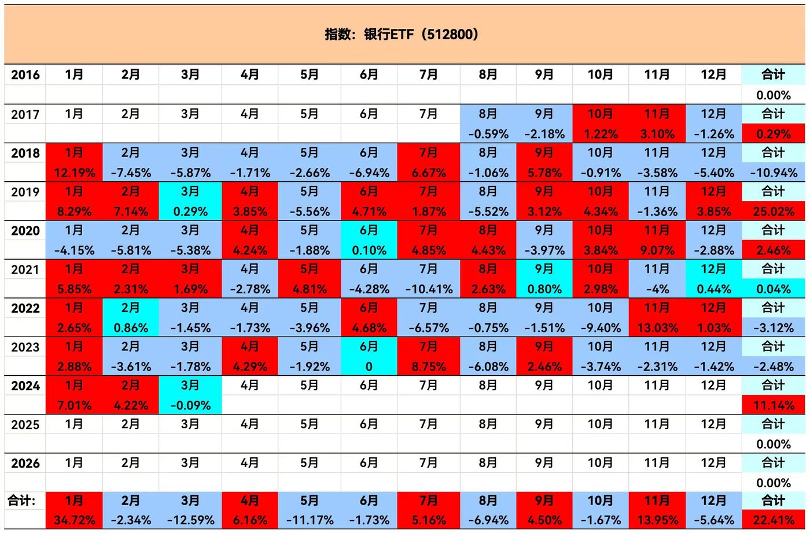
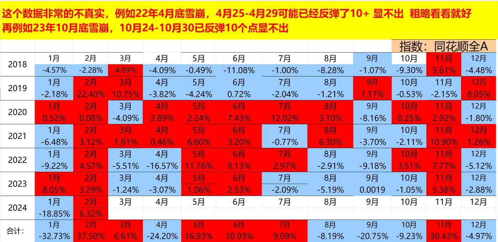
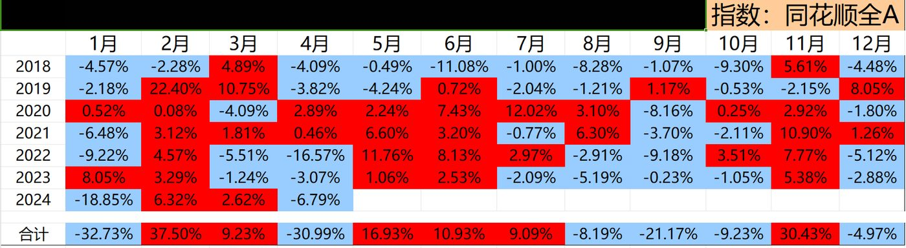
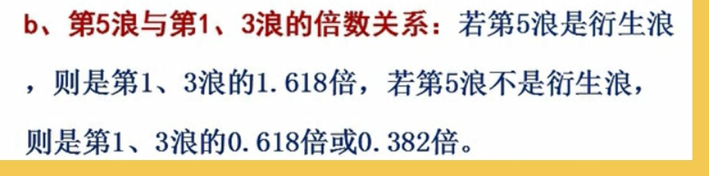
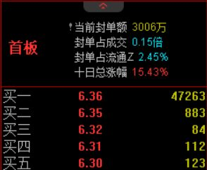
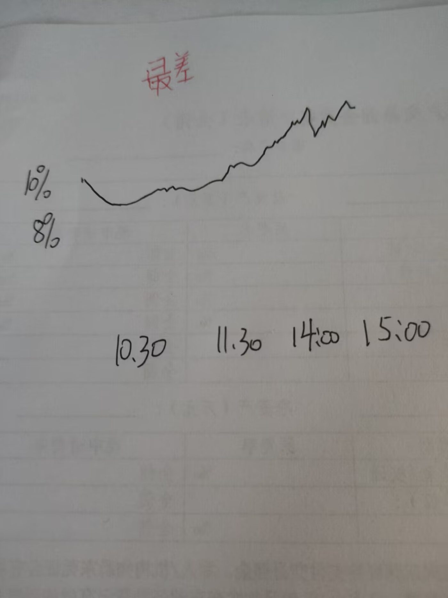
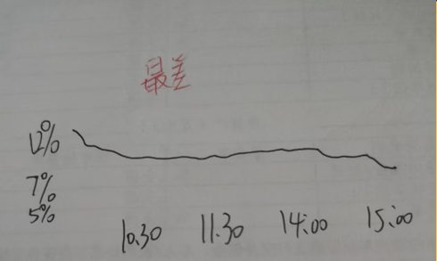
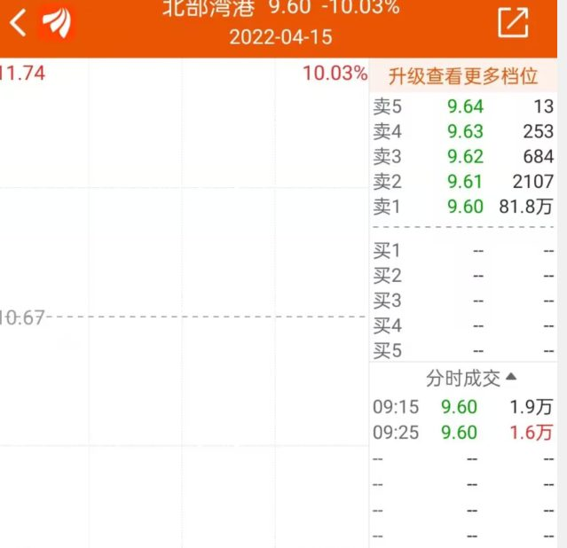
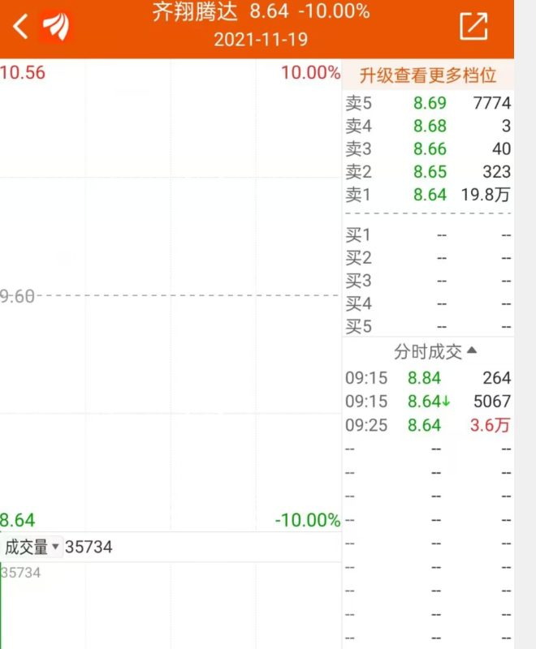
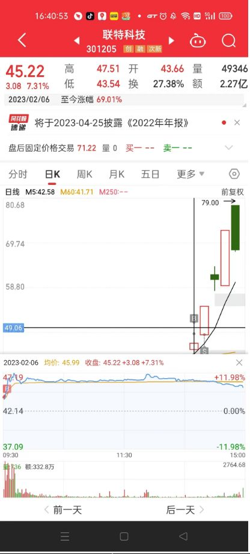

本书记录的是某套零基础股票课程（137 节课、60.7 小时视频、954 页课件）中反复讲授的那一套交易方法。全书由课程语音转写、课件文字与课件/视频图像识别结果交叉整理而成，不含整理者的个人观点。
所有规则、数字、月份、阈值都来自课程原文；凡属推断、凡材料内部矛盾，都已在正文与附录D中标注。
本书是学习资料整理，不构成投资建议。 书中所有"胜率""年化""必死""必胜"均为课程讲述者的口径，未经独立验证。
先在正确的月份里（择时），选对方向（赛道/容量），再在正确的时间（竞价/尾盘/一字）做对的事（战法），最后用纪律和统计把胜率变成钱。
它不是选股体系，也不是价值投资体系。它的核心判断只有一句话：
A 股绝大多数个股的涨跌，由"平均股价"这个母变量决定；平均股价决定分布，分布决定红盘率，红盘率决定你今天该做什么、不该做什么。
由此推出三个反常识结论，也是本书的骨架：
| 反常识结论 | 含义 | 详见 |
|---|---|---|
| 情绪不用统计，结果早已注定 | 红盘率、涨停数、封板率、连板高度都是平均股价的投影，统计它们是无用功；要看的是母变量本身 | 第一部分 1.2 |
| 月份比选股重要 | 1月/4月/9月/10月是必亏窗口，2月/5月/11月是必赚窗口；在错的月份里，再好的票也难赚 | 第二部分 2.2 |
| 所选手法的成败，七成在环境 | 同一套战法，强周期里是"送钱"，弱周期里是"必死"；战法必须挂在周期上 | 第二、五部分 |
① 体系通读（推荐第一遍）
按 第一部分 → 第六部分 顺序读。读完你应该能画出"母变量 → 环境 → 方向 → 个股 → 战法 → 风控"这条链。
② 查表式（实战用）
- 今天是几月？→ 查 2.2 十二个月规律总表、2.3 三阶段行情，以及 2.9 里的每月操作速查卡（12行，一个月一行）
- 今天什么环境？→ 查 2.1 情绪温度计（档位表）、2.4 四种环境、2.5 极弱与极强
- 手上这个票是什么角色？→ 查 4.2 各类龙的档案
- 这笔交易该怎么执行？→ 查 第五部分 战法库（5.1-5.10）与 5.12 战法选择决策树
- 某个术语看不懂？→ 查 附录B 术语表（184条）；想核对某个数字？→ 附录C 关键数字速查（12张表）
③ 按课程顺序学（老师的建议）
课程本身有一个学习顺序，见 附录A 全课程地图：
先把 第111-127课（大环境/月份规律/情绪温度计）看完 → 再从头看 第1-38课（基础篇）→ 再 第39-110课（龙头/战法进阶）。老师反复强调：先看大环境，否则后面的战法都是空中楼阁。
第一部分 世界观：A股的底层变量
平均股价 / 正态分布 / 三大赛道 / 小市值 / 大A大B / T+1计提 / 容量
↓
第二部分 大环境：一年12个月的剧本
情绪温度计 / 12个月强弱 / 三阶段 / 四种极弱极强 / 业绩雷时点 / 成交额水位
↓
第三部分 选方向：赛道、板块、个股
容量 / 四级风口 / 行业与概念分类 / ETF工具 / 选股九步 / 基本面筛选
↓
第四部分 龙头体系：谁是最强的
龙一定义 / 各类龙的档案 / 情绪周期九阶段 / 排位名单 / 助攻与强度 / 大哥小弟
↓
第五部分 战法库：可执行的模式
一字板四情形 / 一字跌停多天 / 1年20个点必胜战法 / 接力跟风 / 竞价 /
翘板漏单 / 可转债 / 业绩雷抢跑 / 突发事件 / 卖点与顶部
↓
第六部分 风控、统计与执行
交易损耗 / 胜率×盈亏比×期望值 / Excel复盘 / 仓位 / 盈利模型纸化 / 十条纪律
↓
第七部分 心态与认知
附录A 全课程地图（137课） 附录B 术语表 附录C 关键数字速查 附录D 材料与方法
这一部分只回答一个问题：每天开盘前，你真正需要看的东西有几个？
答案是一个母变量加三条坐标轴。母变量是平均股价；坐标轴是月份位置、市值风格（92% 的小盘还是 8% 的容量）、资金体量。后面所有手法都必须挂在这条推导链上——脱离它的技术不是技术，是赌。
大多数人默认的世界模型是"个股模型"：5000 多只股票是 5000 多个独立故事，每个故事有自己的消息、主力、逻辑、K 线；赚钱就是在 5000 个故事里找到最好的那一个。
这套体系正相反：A 股不是 5000 个故事，而是一个样本量为 5000 的分布。 分布的均值（平均股价）由极少数变量决定；均值一旦确定，分布形状、红盘率、赚钱概率全部确定。个股只是这个分布里的一个抽样点，它的消息、逻辑、业绩，在均值面前几乎没有议价权。（L113、L114、L120）
| 推论 | 内容 | 对应纪律 |
|---|---|---|
| 择时＞择股 | 大环境决定赚还是亏，手法和选股只决定赚多还是赚少 | 先判大环境，再选手法（L121、L127） |
| 手法是"分布函数的选择" | 红盘率高做套利、红盘率低做核心——不是更准，而是更匹配当前分布 | 同一个低吸，2 月赚、1 月亏麻；不是低吸失效，是月份错了（L122） |
| 不研究个股消息，但研究板块核心 | 统计热点板块、核心股有用；统计红盘率、涨停数、炸板率是纯无用功 | 复盘产出是"主线是谁、核心是谁"（L114、L115） |
"绝对实力面前，招式都是浮云"——不是鼓吹躺平，而是说：当均值给出 -2%，你的招式再漂亮，也只能在 -2% 的分布里挑一个亏损幅度。（L121、L124）
平均股价（今天多少）
↓ 正态分布（均值定则全定）
红盘率（当天多大比例的股票在涨）
↓ 减去银行/高股息的 10% 干扰项
小盘真实赚钱率（我买的这一类票，赚钱概率多少）
↓ T+1 计提（次日竞价＋次日盘中）
实际赚钱率（真正落进口袋的概率）
↓ 乘以"拿几只"（拿得越多越等于买平均股价）
组合层面的胜负概率
↓
手法选择（套利／核心／空仓）＋仓位＋只数
链上每一环都有精确数字，没有一环是"感觉"。（L113–L117）
| 坐标轴 | 取值 | 回答什么 | 出处 |
|---|---|---|---|
| 月份位置 | 极弱 1/4/10；极强 2/5/11；弱周期 3/6/7/8/9/12 | 现在处在"发钱"还是"收钱"的季节 | L117–L119、L124 |
| 市值风格 | 92% 小盘（中证 2000）vs 8% 容量（A500） | 这波涨的是小盘还是容量 | L127 |
| 资金体量 | 几万—几十万 vs 几百万以上 | 靠"模式多、出手快"还是靠"找容量" | L127 |
坐标轴选错，母变量看对也没用。 2 月平均股价 +2%、9 成红，你去买上证 50，一样不赚钱；9 月底权重搭台、平均股价没起来，你去追题材小票，怎么买怎么亏。（L127）
本部分每个可操作规则都按五段写：定义/原理 → 判断标准（带数字）→ 操作 → 反例/风险 → 出处。材料里没有的标"（推断）"；材料内部两种口径的照写"两种口径"。
原理。 平均股价＝全市场 5000 多只股票当日涨跌幅的等权平均。两个关键词：涨跌幅、等权——不是把 5000 只股票的绝对股价加起来除以 5000，而是把 5000 个"今天涨了几个点"加起来除以 5000。"它的涨跌幅就是五千多个股票的平均涨跌幅，所以它能代表全世界。"（L113）
它有几个名字，指向同一个东西：
| 平台/软件 | 名称 | 代码 | 说明 |
|---|---|---|---|
| 通达信 | 平均股价 | 880003 | 输入代码直接调出（L113） |
| 同花顺 | 同花顺全 A | 883957（沪深京） | 与平均股价"一模一样"（L113、L119） |
| 东方财富 | 东财全 A | — | 同为等权口径（L113） |
| 万得 | 万得全 A | — | 同为等权口径（L113） |
| 国证指数 | 国证 2000 | — | 这两年与平均股价"叠加后一模一样"（L113） |
反例（最容易犯的错）：把上证指数当市场温度。 上证是加权的——"市值越大的影响越大"，两万亿的大票一动，指数就动，5000 只小票的死活在里面几乎看不见。实证：某日国证 2000 涨 +2.4%，上证只涨 +0.59%——真实市场是普涨，看上证会以为没行情。（L114）
这套体系对此有一句很重的话："指数这玩意被上证迷惑了，弱周期 2000 才是真的指数。"（L126）
判断标准（三秒确认法）： ①打开软件输入 880003 看当日涨跌幅，这就是大环境读数；②没有 880003 就看国证 2000，要做小盘就看中证 2000；③永远不用上证、深证成指、沪深 300 代替它做"今天能不能买"的判断。（L113、L126）
理由一：数量上代表绝大多数。 5000 多只股票里沪深 300 只有 300 只，"只占全市场不到 5%（数量口径），数量非常小、忽略不计，所以平均股价肯定是被广大小盘股决定的"。等权平均的分子里，92% 的权重来自小盘。（L113、L127）
理由二：可观测，也可交易。 一个数字读出全市场温度，这是可观测；中证 2000 有 ETF，可以把这个数字直接变成仓位，这是可交易。"买 2000 的 ETF 就是买平均股价的 ETF。"（L113）
理由三：它决定分布，分布决定一切结果。 平均数确定→正态分布确定→红盘率确定→今天买股票的赚钱概率确定（详见 1.2）。（L114）
理由四：它是所有情绪指标的上游。 红盘率、涨跌家数、涨停数、封板率、连板高度、情绪值、沸点、资金流入流出，全部是同一个上游的投影。这套体系用两个符号把关系写死：
2000 ⇔ 平均股价 ⇔ 红盘率 ～ 情绪 ～ 涨停数 ～ 封板率 ～ 温度（⇔ 等价，～ 可推出）"结果已注定。"（L113）
上游只有一个数字，下游有几十个指标。盯上游是效率，盯下游是重复劳动。（L114、L121）
反例/风险（母变量有三个边界）： ①只管小盘，不管容量——极弱极强"根本不可能影响到两万亿的工商银行、中国移动、中国神华"（L127）；②会被银行干扰——银行/高股息常年红、约占 10%，必须剔除；③只对当天负责——当日红盘率不等于实际赚钱率，T+1 还要计提（详见 1.6）。
这是全书最漂亮的一次推导，一步一步走。
第一步：看"市值—名次"结构。
| 名次 | 市值 | 数量占比 | 对应指数 |
|---|---|---|---|
| 前 100 名 | 1000 亿以上 | — | 沪深 300 核心 |
| 第 300 名 | 约 500 亿 | 约 5% | 沪深 300 边界 |
| 第 1800 名 | 约 100 亿 | 约 30% | 中证 2000 上边界 |
| 第 3800 名 | — | — | 中证 2000 下边界 |
（L112）
第二步：找出"最像平均"的那一段。 5000 只股票的中间段是 1500–3500 名，数量上正中间，理论上最代表"平均"。
第三步：发现大市值把"平均"拖住了。 沪深 300 在数量上不到 5%，在市值上却占全市场 62%（L14 口径：44 万亿 / 62%）——数量少、体量大、波动太小。市值越大日涨跌幅越钝：两万亿的票一天涨 1% 已是大事，50 亿的票涨 3% 稀松平常。直接把 1500–3500 名当"平均"，会被这批"钝化"的权重股拖住。
第四步：往前挪 500 位。 "把平均往前挪个五百位，1000 名到 3000 名就应该正好是平均股价。"（L113）
第五步：验证。 1000–3000 名正好是国证 2000（剔除国证 1000 后取 1000–3000 名，L112）。把通达信 880003（平均股价）和国证 2000 叠在一起，"发现一模一样"。（L113）
平均股价（880003）
= 同花顺全A（883957）= 东财全A = 万得全A ← 都是等权
≈ 国证2000（1000–3000名） ← 这两年成立
≈ 中证2000（1800–3800名，更小、弹性更大） ← 未来 2–4 年成立
为什么最后落到中证 2000？ 因为"现在国证 2000＝平均股价，过 2–4 年股票再多 1000 家，就是中证 2000＝平均股价，我先提前用了"（L113）。两层意思：
| 目的 | 看什么 | 买什么 |
|---|---|---|
| 判断今天大环境 | 880003 / 国证 2000 | — |
| 吃"平均股价"的涨跌 | 国证 2000 或中证 2000 | 中证 2000 ETF（弹性最大） |
| 吃比平均更猛的弹性 | 微盘股指数（后 200 或 400 名） | 无 ETF，只能自建因子 |
| 做容量/大票 | 上证 50、创业板指 | 宽容量 ETF → 窄容量行业 ETF |
（L113、L127）
反例/风险（三个误用）： ①把"2000"当长期投资标的——"这个指数只有投机价值，没有任何投资价值"，它只能在特定月份做，过季就撤（L113、L116）；②同时买四个小盘指数——"你完全没有必要，要么就买中证 2000"，同时买等于把弹性平均掉（L112）；③以为"中证 500 是中小盘"——"中证 500 这个指数你就不要买了，弹性确实太小了一点""中证 500 肯定是远远跑输了国证 2000"（L113）。
这是本部分唯一必须背下来的表，把"平均股价涨跌幅"翻译成"赚钱概率"。
| 中证 2000 涨跌幅 | 名义红盘率（全 A 5000+ 只） | 剔除银行后的小盘赚钱率 | 情绪 | 该怎么做 |
|---|---|---|---|---|
| +2% | 约 90%（9 成红） | 更高——"涨 2%，想亏都难" | 高涨 | 可做套利（核心多为一字，买不到）；"发现买就赚" |
| +1% | 约 80%（7 成多） | — | 偏热 | 赚钱概率高，正常做 |
| +0.25% | 约 60%（6 成红） | — | 中性偏暖 | 一般，正常出手 |
| 0% | 约 50% | — | 中性 | 只有结构行情，做核心 |
| -0.25% | 约 40%（4 成红） | — | 中性偏冷 | 谨慎，只做核心 |
| -1% | 约 20%（2 成红） | 小盘约 10%（"减 10% 红盘率"） | 低迷 | 九死一生；弱市做核心；不做套利 |
| -2% | 约 10%（1 成红） | 小盘实际接近 0（可能 2%–3%） | 股民痛哭 | 二十~三十死一生；"没侥幸，结果已确定"→ 不买 |
| -3% | 几近 0 | 0 | 绝望 | 铁死 |
| -5% | — | 0 | — | "你咋活" |
| 任何一日 | 小盘减 10% 红盘率 | 银行等高股息常年红、约占 10%（干扰项） | — | 判断"我买的票"的赚钱率必须扣掉这 10% |
（L114、L115、L120）
使用要点一：必须减 10%。 "银行等高股息股票大概占 10%，它常年红，而且经常是在大家跌的时候它红。"-2% 那天名义上还有 10% 红盘，把这一成银行踢掉，"正儿八经的小盘股可能只有 1% 的红盘率，甚至 0"（L114）。强弱日方向相反：88.83% 那种强势日银行是跌的，剔掉后小盘红盘率可能反而 90% 多；股灾日表面 14.19%，踢掉高股息"可能只有 3%、4%、5%"（L114、L115）。
使用要点二：正反两个方向都要会用。 已知涨跌幅推红盘率，是"看今天该干什么"；已知红盘率反推涨跌幅，是"验证自己有没有看错"。实测对账：
| 日期 | 红盘率（涨/跌家数） | 对应读数 |
|---|---|---|
| 3.18 | 88.83%（4445 / 559） | 国证 2000 +1.84% |
| 3.19 | 82.88%（4150 / 857） | 中证 2000 约 +1.28% |
| 12.1 | 红盘约 4000 家 | 中证 2000 +0.97% |
| 3.25 | 红盘率低 | 中证 2000 -2% |
| 3.27 | 极低 | 中证 2000 -3% → "铁死" |
反推速算：红盘率 80%→2000 涨 1 个多点；88%→1.7–1.8%；50%→几乎不涨不跌；14%→跌得比 -1% 多（约 -1.7% ~ -1.8%）。（L114、L115）
| 指标 | 2000 +2% | 2000 -2% | 其他阈值 | 可信度 |
|---|---|---|---|---|
| 涨停数（≥10% 家数） | 60–70 家 | 约 30 家 | 涨 3%→接近百股涨停；跌 5%→几百股跌停；平时约 40 家（开盘啦口径） | 低：样本几十个，误差 5–10 只；未来 7000–8000 只股时变 100 多只，"红盘率可能不会变，但涨停数肯定变" |
| 封板率（首板封板率＋2 板以上晋级率） | 85%+ | 60% 左右 | 最矛盾处：-1.81% → 49%，但 -1.89% → 70% | 更低：误差比涨停数更大；炸板率≈40% |
| 连板高度 | 极强→好、高度高；强市→一般也行 | 弱市→一般都不好（不绝对，可能出九安医疗） | 大概率"极弱抢跑龙"占大部分连板高度 | 低：剔掉首板后样本更少 |
（L115）
为什么只当粗糙投影？ 涨停数只有几十个样本，"有几个狗庄拉几个涨停，或者有几个坑货砸盘"，数据就歪了。"如果 A 股是五万只股，涨停数量多十倍，误差基本就没有了"——现在没有五万只，所以现在不可用（L115）。封板率更极端：-1.81% 那天只有 23–35 个涨停，三只狗庄一砸盘，封板率就掉到 49%；-1.89% 那天涨停多一些，封板率反而是 70%。两个几乎相同的跌幅，给出完全相反的封板率——这个指标已经没有信息量了。（L115）
原理。 银行/红利/中字头/高股息是"抽血机兼护盘"（详见 1.3），行为与平均股价完全反着来：
| 6 年（2018–2024）合计 | 1 月 | 2 月 | 3 月 | 4 月 | 5 月 | 6 月 | 7 月 | 8 月 | 9 月 | 10 月 | 11 月 | 12 月 |
|---|---|---|---|---|---|---|---|---|---|---|---|---|
| 同花顺全 A（平均股价） | -32.73% | +37.50% | +9.23% | -30.99% | +16.93% | +10.93% | +9.09% | -8.19% | -21.17% | -9.23% | +30.43% | -4.97% |
| 银行 ETF | +34.72% | -2.07% | -12.59% | +10.91% | -11.17% | -1.84% | +5.16% | -6.35% | +6.68% | -2.89% | +10.84% | -4.38% |
（L124；口径为简单加总、非复利——"我不是说复利，我是把它简单加起来了"）
读法： 小盘跌得最惨的 1、4、10 月，正好是银行最好的月份；小盘最好的 2、3、5 月，正好是银行最差的月份。"他两个有点跷跷板的意思——小盘跌得惨的时候，银行护盘；小盘涨得好的时候，银行那些都是跌的。"（L124）
判断标准（两个扣减动作）： ①算小盘赚钱率时，名义红盘率减 10%；②看风格时，若今天涨的是银行/红利/中字头而 2000 在跌，这不是反弹，是抽血——"如果平时都出现中字头行情，那真的不是一个好事儿"（L111）。
原理。 这套体系不给数学证明，给的是一个更强的判断：只要是自然形成的数据，就一定是正态分布。"按自然规律分布的数据，都满足正态分布""正态分布又叫自然分布、又叫高斯分布"。（L114）
形态上的直接观察： 5000 只股票的当日涨跌幅，涨停很少、跌停也很少，涨幅大于 7%、跌幅大于 7% 的都稀少，中间非常多——大部分股票在 -2% ~ +2% 之间挤着，这是一条典型的钟形曲线。（L114）
两条让分布更"尖"的现代机制：
两条合起来意味着：均值对个股的解释力极强。 均值给 -2%，你手里的票大概率也在 -2% 附近；"选到一只逆势票"的概率是那 10% 的小概率事件。
第一步：平均数确定。 今天中证 2000（≈平均股价）收在 -2%。
第二步：分布确定。 正态分布只有两个参数：均值 μ、标准差 σ。μ 已确定（-2%）；σ 由市场结构决定（量化、ETF 申赎、涨跌停制度），短期稳定。μ 和 σ 都定了，整个分布函数就定了——每个涨跌幅区间里应该有多少只股票，全部算得出来。
第三步：红盘率确定。 红盘率＝P(涨跌幅 > 0)。在均值 -2%、σ 稳定的分布里，这是一个固定值：约 10%。
第四步：结果确定。 你今天买入的票，赚钱概率＝约 10%（还要再减银行那 10%，小盘实际接近 0）。这个概率不是"估计"，是"计算结果"。
（L114）
原话极其绝对："平均数确定，分布情况就确定，红盘率也就确定""既然确定的，那直接记下来就行""结果已注定"。（L114）
两个最好懂的类比： ①分数——"一班平均 80 分，及格率起码七成多；二班平均 40 分，及格率也就两成多——这是普通人的感觉。实际上平均数只要确定，及格率也就确定了"；②抛硬币——抛 5000 次，正反各近 5 成，样本足够大时随机性被平均掉，只剩均值在说话。（L114）
反例/风险（两种最常见的跳步）： ①用个股代替分布——"我看到某某票很强，所以今天能赚"，它属于那 90% 里的例外，你押的是小概率；②用情绪代替均值——"今天大家情绪很好"，情绪是红盘率的同义词，而红盘率是均值的函数，用下游解释上游，逻辑倒过来了。（L114、L115）
原理。 样本量越大，频率越接近概率。这条常识之所以重要，是因为它直接给出"允许的误差范围"，从而把"精确计算"降级为不必要。
抛硬币史料（材料原话数字）：
| 实验者 | 次数 | 正面 : 反面 | 偏差 |
|---|---|---|---|
| 德摩根 | 4092 次 | 2048 : 2044 | 极小 |
| 蒲丰 | 4040 次 | 2048 : 1992 | 小 |
| 费勒 | 10000 次 | 4979 : 5021 | 千分之四 |
| 皮尔逊 | 24000 次 | 12012 : 11988 | 千分之一 |
（L114）
翻译到股市： 5000 多只股票就是 5000 多次抽样，误差量级在千分之几到百分之一。"红盘数算错 50 只，只占 1%""75% 和 76% 差距大吗？我们又不考研，你算那么细干什么？"（L114）
| 指标 | 它实际上是什么 | 为什么不用 | 出处 |
|---|---|---|---|
| 红盘率 / 涨跌家数 | 平均股价的函数 | 是结果不是原因；背档位即可，不必统计 | L114 |
| 涨停数 | 分布右尾的计数 | 样本几十个，误差 5–10 只；股票数变化会让口径漂移 | L115 |
| 炸板率 | 涨停里的失败比例 | "统计炸板率这种，是完全没有意义" | L115 |
| 封板率 | 首板封板率＋2 板以上晋级率 | 误差比涨停数更大（-1.81% 与 -1.89% 给出 49% 与 70%） | L115 |
| 情绪值 / 沸点 / 冰点 / 过热 / 微热 / 微冷 / 过冷 | 把涨跌家数"阈值化"换个名字 | 打开通达信 880005（涨跌家数）截图，与外面卖的"沸点/冰点"指标一模一样 | L116 |
| 资金流入流出 | 主动买卖单的差分 | "那些都没什么意义""都不是判断依据" | L115 |
| 有效涨停数、下跌率 | 涨停数/红盘率的变体 | 同一类误差来源 | L115 |
那什么该统计？只有两样： ①今天的热点板块是哪些（谁在涨、为什么涨、新题材还是旧题材）；②这些板块里的核心股是谁（龙头、龙二、补涨、容量标的）。"统计一下热点板块、热点板块的核心股是哪些，有用。"（L115）
反例/风险（一个必须说清的例外）：背档位不算统计。 把表 1-1 背下来、看到 2000 跌 -2% 就知道今天九死一生，这是使用规律；每天收盘数涨跌家数、算炸板率、记情绪值，这是重复劳动。两者看起来都在"用情绪数据"，性质完全不同。（L114、L115）
"知道中证 2000 要跌 3%，你还开盘去买股票，你是在挑战高斯吗？ 兄弟。""量化已经把这个股市的标准差决定完了。"（L114）
纪律一：不改平均数，就不改结果。 "只要 -2% 的平均数不改，结果就不会改变""除非你把 -2% 改变"（L114、L120）。你能改变平均数吗？不能。所以正确动作只有一个——顺着它做，或者不做。
纪律二：不要用"支撑位"给自己找理由。 最典型的错误：预判今天 2000 跌 -2.5%，看到某只票跌到 -1%、形态上"刚好在支撑位"，于是抄底。这是铁错——"它必须破位才凑得出平均股价 -2.5%"（L116）。如果这只票在 -1% 就止住，5000 只票的平均数就到不了 -2.5%。你以为在抄底，其实在接刀。
纪律三：认账，并且立刻执行。 "我肯定要防一下，我的头还不会那么铁""你要尊重这个结果""那我就走就得了呗"（L114）。"头还不会那么铁"这句话的分量在于：连作者本人都承认会想扛，所以纪律必须外化成动作（减仓、清仓），而不是靠意志力。
反例/风险（真实代价）： 2024 年 1 月两位职业选手是标准答案——一位融资打中视传媒，吃到"天地 20cm＋2 个一字跌停＋1 个跌停"；另一位 600 万"开超市"（同时持一堆票），加融资打东田微，腰斩后开始怀疑股票的逻辑、割在最低点。两人的死因都不是选股，是"择股不择时"。（L120）
原理。 规律是从大量样本的均值行为里抽出来的；极端行情是单个样本的尾部实现。用尾部样本修正均值规律，是用噪声覆盖信号。"数据的极端情况（误差）不影响规律""别因为数据的极端情况，重新去推规律""接受误差，别怀疑规律"。（L121）
三个必须知道的极端样本，以及为什么它们不改规律：
| 极端样本 | 幅度 | 为什么不改规律 |
|---|---|---|
| 2024 年 1 月 | 个股"平时跌 5 个点，这里跌 50 个点"；1.31 "30 个一字跌停"；2.2 千股跌停；2.5 三千多股跌停、平均股价接近 -10% | 机制没变：批量一字跌停→大 A 无限弱→大 B 被拉下去。极端的是幅度，不是结构 |
| 国九条（2024.4.15–4.16） | 两天 30 多家一字跌停，平均股价跌 -4%、-7% | 技术上是黑洞，但"这辈子就这一次"，有澄清干涉、没走完技术过程 |
| 9·24（2024.9.24 喊话） | 上证 50 直接新高，创业板 +10% 时中证 2000 才 +4% | 不是规律失效，是风格切换：政策喊话后该做容量。规律恰好被验证 |
（L120、L125、L127）
判断标准（区分"误差"和"规律变了"）：
| 特征 | 是误差（改应对，不改规律） | 是规律变了（才改规律） |
|---|---|---|
| 持续时间 | 几天到几周 | 跨年、跨周期 |
| 是否有机制解释 | 有（黑洞、政策、制度） | 没有 |
| 是否可重复 | 历史上每 1/4/10 月都发生 | 从未发生 |
1.1–1.2 讲的是 92% 的小盘（平均股价）。这一节讲剩下 8%——容量。两者是两套规则：小盘看"温度"，容量看"赛道"。
| 赛道 | 对应指数 | 行业链条 | 说明 |
|---|---|---|---|
| 蓝筹 | 上证 50＝沪深 300 | 金融（银行/证券/保险）～地产～消费～医疗 | "忘掉 300 这个指数，只记得上证 50 就行，它就是 50" |
| 新能源 | 创业板指 | 金属＋化工～汽车～电力设备（光风储） | "创业板指现在基本就是新能源"；"我们一般买都是买电力设备" |
| 科技 | 科创 50（≈半导体） | 数字（计算机＋传媒）～通信～半导体～消费电子 | 科创 50 与芯片 ETF 叠加"一模一样"，芯片 ETF 弹性略大 |
| 中字头/红利/国企/高股息（四词一义） | 护盘·抽血机 | 中国石油这类巨型央企 | 只在股灾护盘；平时它涨是凶讯 |
（L111）
为什么"上证 50＝沪深 300"？ 50 是 300 的浓缩版，走势"一模一样"，但 50 更纯粹——股票更少、弹性更大一点、更好分析。所以操作口径是："以后不要去分析沪深 300，你只分析上证 50""沪深 300 这个指数，我建议你忘掉"（L111）。
为什么"科创 50＝半导体"？ 科创 50 里半导体权重最高，与芯片 ETF 叠加后"绿的时候也是绿，红的时候也是红，一模一样"（L111）。做科技看科创 50 或芯片 ETF 都行，芯片 ETF 弹性略大。
判断标准（赛道内部怎么选票）：
| 目的 | 该买 | 不该买 |
|---|---|---|
| 做蓝筹 | 上证 50 ETF | 沪深 300 ETF（等价但更钝）、单只银行股 |
| 做新能源 | 电力设备相关 ETF（光伏/风电/电池）或创业板指 ETF | 新能源车 ETF（"涨的不如小市值"） |
| 做科技 | 科创 50 ETF / 芯片 ETF | 数字、通信、消费电子等细分 ETF |
| 做护盘/防守 | 红利 ETF、中国国企 ETF | 把它当"行情"来做 |
（L111）
| 赛道 | 指数 | ETF 清单 |
|---|---|---|
| 蓝筹 | 上证 50＝沪深 300 | 银行、证券、保险、地产、消费、医药（医疗） |
| 新能源 | 创业板指 | 金属、化工、汽车、光伏、风电、电池 |
| 科技 | 科创 50（半导体） | 数字、通信、半导体、消费电子 |
| 中字头/红利 | 护盘·抽血机 | 中国国企、红利（高股息） |
（L111）
两条纪律： ①行业 ETF 别开——"只要你开行业的 ETF，你就是买行业的几个大票""你很难翻倍的""这种策略轻易不要开"（L111）；②有新赛道永远做新赛道——"未来如果出了新赛道，是不是也要抽你的血？所以有新赛道，我们肯定做新赛道"（L111）。
补一个定义： "拯救世界级别的板块"＝能把 5000 多只股票的平均涨跌幅救上去的板块（L113）。不是涨得最猛的板块，是能把平均股价拉红的板块——这个定义把"板块强度"和"大环境"直接挂钩了。
定义。 四词指同一类东西：中字头＝红利＝国企（中国国企 ETF）＝高股息。（L111）
两条定性： ①抽血机——中字头市值太大（中国石油那一堆），"如果它能涨，肯定是抽的上面三个赛道的血""中字头如果长期涨，三大赛道的股民会亏死，包括中小盘也是一样的"；②护盘工具——"它一般是股灾用来护盘的""实际上是国家队护盘"。（L111）
判断标准：什么时候它涨是凶讯？
| 情形 | 中字头/红利表现 | 含义 | 该怎么做 |
|---|---|---|---|
| 股灾/极弱月（1、4、10 月） | 逆势红盘甚至大涨 | 国家队护盘，抽三大赛道血救指数 | 不追；这是凶讯，说明市场在崩 |
| 高位抱团期（如 2021 年 12 月底上证 50 齐飞、茅台 2600） | 齐飞 | 红盘率低，资金只能抱容量 | 可以抱，但要知道这是"逃难"不是"行情" |
| 2、3、5 月（小盘好的月份） | 竟然是跌的 | 资金在炒小盘，中字头被抽血 | 不要碰 |
| 平时无故拉中字头 | 突然涨 | "如果平时都出现中字头行情，那真的不是一个好事儿" | 立刻警惕，检查是不是要崩 |
（L111、L124、L127）
反例/风险。 看到 1 月银行 ETF 涨、上证 50 抗跌，以为"结构性行情、可以做多蓝筹"——实际是"三大赛道和中小都是跌成狗"，银行只是护盘工具。2023 年 4 月中国银行涨停、2024 年 4 月中信银行涨停，都是同一套剧本，高位套住的人骂了大半年。（L124）
| 指数 | 名次区间 | 说明 |
|---|---|---|
| 沪深 300 | 0–300 名 | 前 300 名都是大于 500 亿的，占约 5% |
| 中证 500 | 300–800 名 | 踢掉沪深 300 之后的 300–800 名 |
| 中证 1000 | 800–1800 名 | 再踢掉中证 500 之后的 800–1800 名 |
| 中证 2000 | 1800–3800 名 | 把前面三个全踢掉之后的 1800–3800 名 |
| 中证 800 | 0–800 名 | 中证 800＝沪深 300＋中证 500 |
| 国证 1000 | 0–1000 名 | 沪深 300＋中证 500＋第 801–1000 名的 200 只 |
| 国证 2000 | 1000–3000 名 | 踢掉国证 1000 之后，第 1000–3000 名 |
（L112）
这张表最重要的一句话：大盘股等价链 上证 50 ＝ 沪深 300 ＝ 中证 800 ＝ 国证 1000，"别纠结那 10% 的差别"（L112）。道理是"只要不剔除上证 50 的数字指数，走势都和上证 50 一样"——上证 50 有 20 多万亿市值，"一个指数只要包含上证 50，上证 50 起码占 80% 的市值"（口语估计，L112）。
判断标准：带数字的指数只有两个值得研究。 "带数字的指数，要么研究上证 50，要么研究中证 2000；国证 1000、中证 800 那些都不要去看。"（L112）理由：包含上证 50 的（沪深 300、中证 800、国证 1000）都等价于上证 50；夹在中间的中证 500/1000 弹性不上不下——做趋势不够猛、做套利不够小。
反例/风险（三个"看起来专业、实际亏钱"的误区）： ①私募推中证 800——"有些私募会给你推中证 800……也不要去碰它"；②雪球挂钩中证 500——"去年上半年如果去买雪球产品，确实是非常不靠谱的一个事儿"；③同时买四个小盘指数——"你完全没有必要，要么就买中证 2000"。（L112）
| 档位 | 指数 | 名次区间 | 市值边界 | 特征 |
|---|---|---|---|---|
| 大盘 | 沪深 300 | 0–300 名 | ＞500 亿 | 趋势性明显；"牛的时候非常牛，菜的时候又非常菜，连连跌"；套利很难，"基本都是一个箱体往下面走" |
| 中盘 | 中证 500＋中证 1000 | 300–800–1800 名 | 80–500 亿 | 弹性不上不下 |
| 小盘 | 中证 2000 | 1800–3800 名 | ＜80 亿 | 弹性最好、有 ETF；"就是一个套利的指数，不能作为价值投资，不能投趋势" |
| 微盘 | 微盘股指数 | 3800–5400 名 | ＜30 亿 | 弹性远大于平均股价；无 ETF，只能自建因子 |
（L121）
三个市值锚： 前 100 名＝千亿以上；第 300 名≈500 亿、占约 5%；第 1800 名≈100 亿、占约 30%。（L112）
口径提示（材料未统一）： 名次—市值的对应，L112 给"第 1800 名≈100 亿"，L121 给"中盘 80–500 亿、小盘＜80 亿"。两处差约 20%，属市值随行情波动的口径差。记区域不记点：1800 名附近就是"百亿上下"的分界，别在这 20% 上纠结。
两条排序（原文两处并存）： ①指数弹性：中证 2000＞国证 2000＞中证 1000＞中证 500（L112）；②全序列：微盘股＞中证 2000＞国证 2000（＝平均股价）＞中证 1000/中证 500（L113）。
为什么越小越弹？三个机制： ①市值小→同样资金能撬动更大涨幅（50 亿的票几千万就能拉板，两万亿的工商银行几百亿也拉不动 1%）；②成分股本身波动大——"平均股价是被 92% 的小盘股所主导，而且它们本身波动就大"（L127）；③中证 2000 比国证 2000 更小，所以"反弹多、跌得也多一点，它的顶和底都比国证 2000 要低"（L113）。
判断标准（一条铁律）： "指数弹性永远 2000＞1000＞500，个股可能有例外、指数没有。"（L121）这句话的价值在于把"选指数"变成了确定性的选择题：你不用猜哪只票弹性大（个股会出意外），你只需要知道指数层面的弹性是恒定的排序。
反例/风险（弹性是双向的）： 涨的时候中证 2000 涨最多、微盘更猛；跌的时候中证 2000 跌最多、微盘更惨（"跌起来非常猛"L113）。极弱月（1、4、10 月）弹性被放大 5 倍、个别阶段 10 倍，"平时亏 1 个点，这时亏 5–10 个点"（L120）——这时候的"弹性"就是绞肉机。正确用法是：极强月（2、5、11）用它，极弱月躲开它。
定义。 微盘股＝市值排名最后 200 名或最后 400 名，"总之 5000 名开外"，对应 3800–5400 名、＜30 亿（L113、L121）。
两个特征： ①弹性远大于平均股价——"跌起来非常猛，涨起来也非常猛"；②没有 ETF——想买只能自建因子、自己配一篮子股票。（L113）
自建因子的五个因子（按优先级）：
| 因子 | 做法 | 说明 |
|---|---|---|
| 市值最小 | 最小流通市值 10 只 | 最正宗 |
| 股价最低 | 股价最低 10 只 | 用于北交所"摊大饼" |
| 区间跌幅最大 | 跌幅最大 10 只；"挑一月跌得最多的里面跌幅最大的" | 极弱反弹时用 |
| 老情人 | 做过的熟票（CPO 小票、华为 P70 相关） | "极弱暴跌时那些股票都是被错杀的，那个时候是你的机会" |
| 业绩最好 | 业绩最好 10 只 | "其实一般用不到" |
（L113）
前面讲的是"平均股价是多少"。这一节回答更底层的问题：平均股价为什么会突然从"每天 ±0.7%"变成"每天 -5%"，又为什么会从 -10% 突然变成连续暴涨？
答案：市场里有一小撮股票，它们的弱度没有上限。
| 级别 | 形态 | 影响 |
|---|---|---|
| 1 级（最低） | 一字跌停 | 最极端；日内振幅被压到 0；无量 |
| 2 级 | 正常跌停 | 大幅弱，但有成交 |
| 3 级 | 正常（小涨小跌） | 占 90% 以上 |
| 4 级 | 正常涨停 | 大幅强，有成交 |
| 5 级（最高） | 一字涨停 | 最极端；日内振幅 0；无量 |
（L40）
关键前提（材料强调三遍）：先不考虑跨级别——先不看"自然涨停跨到一字涨停"这种跨级传导，只在同一级别内部比较。（L40）
核心结论： "一字涨停和一字跌停，无论日内还是隔日，造成的影响远超过其他，因为这两个是最极端的级别。""一个一字跌停经常诱导出 N 个自然跌停。"（L40）"黑洞"这个词就是这么来的：一个一字跌停不是孤立事件，它是能吸附周围股票的引力源。
"如果开盘出现十只（概数）一字跌停，这十只称为大 A；其余股票叫大 B——大 B 其实就是指数。"（L40）
| 概念 | 定义 | 数量 | 数学性质 |
|---|---|---|---|
| 大 A | 开盘出现的一批一字跌停（或一字涨停）的极端股 | 约 10 只（概数，实际可以 4 只、30 只、上百只） | 弱度/强度无上限（无限） |
| 大 B | 其余全部股票，即"指数"（≈平均股价） | 约 5000 只 | 弱度/强度有限 |
| 大盘 | 大 A＋大 B | 5000+ | 由两者叠加决定 |
（L40、L120）
为什么大 A 是"无限弱"？ 一字跌停是没有买盘的状态——卖单堆在跌停板上，价格压死在 -10%（或 -20%），想卖多少都卖不掉。这种"弱"没有下限：可以连续 7 个、10 个一字跌停（*ST 实达吃了 7 个一字跌停），也可以一天出 30 个一字跌停（2024.1.31）。它的幅度是 10% 一个台阶，台阶数不封顶。
为什么大 B 是"有限弱"？ 大 B 里 90% 是"装死股"：平时没成交量、振幅只有 1–2 个点。它们没有能力自己暴跌，只能被大 A 拖着走。
机制：黑洞把装死的散户全激活。 材料给了一段极精确的描述：
"平时 5000 只股票装死、没成交量、振幅 1–2 个点；突然 5–10 只一字跌停形成股市黑洞，上午其他股票还没意识到严重性，下午黑洞产生更多自然跌停，不由自主大跌，彻底激活沉睡的散户，所有股票振幅也被放大 5 倍。"（L120）
第一步：写出大 B 的弱度。
大 B 的弱度 = 自然形态的弱（有限）＋ 大 A 传导过来的弱（无限）
第二步：用一个高数常识做加法。 "学高数的话就是有限加无限还是无限强，也就是一种机巧。"（L40）
有限 + 无限 = 无限 → 大 B 的弱度 = 无限弱
第三步：这就是"极弱"的定义。 极弱不是"跌得多"，而是"大 B 的弱度里含有一个无限项"。所以极弱有三个不可改变的属性：
| 属性 | 表现 | 数字 |
|---|---|---|
| 突然出现 | 预期不到，直接开一字；同板块前一天没跌的今天补跌，数量还多 | 2024.1.31 "30 个一字跌停" |
| 弹性放大 5 倍（个别 10 倍） | 平时亏 1 个点，这时亏 5–10 个点 | 2.2 "直接激活到十倍" |
| 尾盘下跌 | 上午还在激活，下午才恐慌 | 弹性与敏感度同步放大 |
（L120）
第四步（最关键）：无限项反向，就是"无限强"。
"当极弱的大 A 止跌时，大 B 就是无限强。"（L40）
极弱时：大 B = 有限弱 + 大 A 的无限弱 = 无限弱
大 A 止跌（无限弱项消失/反转）：大 B = 有限弱 + 大 A 的无限强 = 无限强
关键不是"跌多了会反弹"（均值回归的模糊说法），而是同一个无限项的符号翻转。所以极弱尽头的极强，不是概率事件，是结构性必然——只要大 A 止跌，大 B 必然进入无限强。
第五步：无限强持续多久？ "暴力反弹后这种激活不会立刻消失，往往还会持续一个月。"（L40）这一个月里：涨停板数据"夸夸的"、各板块最容易缩量涨停、其余股票更易助攻打开高度、可转债容易套利。反观弱周期"即使好题材也走不高"，而极强周期"一旦好题材，立马龙头一字、其余股票助攻"。
模型给的是必然性，实战要的是判据：
| 判据 | 具体看法 | 说明 |
|---|---|---|
| ① 封单减少 | 今天的一字跌停封单比昨天明显减少 | 最早期信号 |
| ② 跌停板买单变大 | 买单从几百手变成几万手 | 有人开始接 |
| ③ 竞价成交变大 | 9:25 竞价从几千手放大到几万手 | 分歧出现 |
| ④ 直接低开 | 不再一字，改为低开 | 最确定 |
| ⑤ 换手率 | "换手率代表分歧，换手率最小的跌停最弱"；无量最弱 | 最弱的还没打开，极弱就没解除 |
（L120）
2024 年 1 月的时间线（最完整的一次样本，只取关键节点）：
| 日期 | 状态 | 关键数字 |
|---|---|---|
| 1.22 | 第一波预演 | 平均股价 -6%；一字跌停只有 4 家（数量少，第二天就开了） |
| 1.31 | 数量失控 | "30 个一字跌停，数都数不过来" |
| 2.2 | 第五天该反弹没反弹 | 弹性激活 10 倍，平均股价约 -7%，千股跌停 |
| 2.5 | 第六天 | 3000+ 股跌停，平均股价接近 -10%；美吉姆成交额仅 108.7 万、换手 0.14% |
| 2.6 | 国家队只救前 2000 家 | 汇金 9:43 明牌护盘；中证 500 拉 8%、中证 1000 拉 7%；美吉姆/合力泰/傲农/贤丰还是没打开 |
| 2.8 | 第九天，黑洞打开，极弱解除 | 合力泰竞价约 10 万手买单；国家队护到 2000 名；午后暴力拉升 |
（L120）
结论一：极弱必须空仓，极强必须干。 "股市肯定存在一种超越个股自身的力量""因为超越个股的力量＞个股"→"极弱必须空仓，极强必须要干""弱周期打板你什么都是死，极强周期买成次新股也不会亏"（L40）。强度来自"无限"：大 B 的弱度是无限时，任何个股的强度都是有限，有限打不过无限。所以极弱里"有逻辑的票也会跌""即使被错杀也是要杀的"（L120）。
结论二：好股票跌，不是逻辑坏了。 "有人说买股票看逻辑，逻辑对了后面总会起来——那只是自然规律；这股票这么优秀为什么会跌？一定有一种超越它自身的力量。找到它，就能避开下跌、吃到后面的暴涨。"（L40）这句话直接否定了"越跌越买优质股"：在极弱里你要找的不是"公司好不好"，而是"有没有一股超越它的力量在往下压"。
结论三：极弱的正确动作是"等"，不是"抄"。 "等"是等大 A 止跌的判据，等到了再进；"抄"是看到跌得多就进，赌"差不多见底了"。"极弱造成的下跌那叫亏钱嘛？阴跌那才叫亏钱。跌到这么低的位置你怕啥？还不是怎么跌的怎么回去"（L120）——这句话只对等到解除之后的人成立；解除之前抄底的人，面对的是 5–10 倍弹性。
反例/风险（模型的三个边界）： ①"十只"是概数，不是阈值——材料自己注明"十只"是概数（L40），实际可以 4 只（1.22）也可以 30 只（1.31）甚至上百只；判据是"这批一字跌停有没有形成合力、能不能拖动大 B"，不是"数到 10 只"。②模型不解决"什么时候"——2024 年 1 月走了 9 个交易日，比"第五天反弹"的历史经验长得多。③模型只对小盘有效——极弱极强影响不到两万亿的工商银行、中国移动、中国神华（L127），所以这是平均股价的模型，不是上证的模型。
A 股是 T+1：今天买入的股票最早明天才能卖。这个制度表面只是结算规则，实际上它改变了概率的计算方式——你的持仓必须暴露在第二个交易日里。
红盘率的准确含义： "红盘率现在就相当于是你的赚钱率——早上开仓，收盘的红盘率就是你的赚钱率。"（L114）两个限定：①早上开仓（9:25 竞价买入或开盘立刻买）；②收盘结算。也就是说，红盘率衡量的是"当日买入、当日账面"的赚钱概率——单日、无隔夜。
但 T+1 让你必须过夜。 所以真实赚钱概率是：
实际赚钱率 = P(当日收盘 > 买入价) × P(次日竞价不低开) × P(次日盘中有机会走)
（L116）
"计提"这个词的来源就在这：红盘率给的是账面概率，实际要从里面扣掉第二天竞价和第二天盘中的损失。
判断标准（什么时候计提最重）：
| 市场状态 | 计提幅度 | 原因 |
|---|---|---|
| 极强/强市（2、5、11 月） | 轻，甚至可以"倒计提"（次日高开） | 次日资金还在，竞价会抢 |
| 弱周期（3、6、7、8、9、12 月） | 重 | 无量阴跌，次日低开是常态 |
| 极弱（1、4、10 月） | 极重（5–10 倍） | 弹性放大，次日可能 -10% |
| 个票层面 | 看是不是"垃圾后排" | 后排计提最重 |
（L116、L120）
"多拿一天、2000 每天跌 2%，2 天平均吃 -4%。"（L116）
持仓 N 天的期望收益 ≈ 当日红盘率对应的收益 ＋ (N-1) × 平均股价日跌幅
用档位表算：
| 情形 | 2000 日跌幅 | 当日买入的账面 | 拿 2 天 | 拿 3 天 |
|---|---|---|---|---|
| 弱市常态 | -1% | 红盘率 10%（九死一生） | 约 -2% | 约 -3% |
| 弱市加速 | -2% | 红盘率 10%（小盘≈0） | 约 -4% | 约 -6% |
| 极弱 | -5% | 红盘率≈0 | 约 -10% | 约 -15% |
（L116、L120）
假设当日红盘率 10%（2000 跌 -1% 那一档，九死一生），你随机买 1 只，活下来概率 10%。那么：
| 拿几只 | 全部红的概率 | 说法 | 结果 |
|---|---|---|---|
| 1 只 | 0.1＝10% | 九死一生 | 有一成机会活 |
| 2 只 | 0.1×0.1＝1% | 99 死一生 | 基本死 |
| 3 只 | 0.1³＝0.1% | 999 死一生 | 死透 |
| 10 多只 | 0.1¹⁰≈十亿分之一 | — | "最后手里十多个我都见过" |
（L116）
为什么？ 多只票的收益会向平均收敛——这不是玄学，是大数定律：拿 1 只，结果是一个随机样本；拿 10 只，组合涨跌幅就等于平均股价。所以"拿的越多就＝买平均股价"（L116）。而平均股价在弱市是负的，所以拿得越多＝越确定地买到那个负的平均值。这就是"弱市随便买就是手里拿炸弹"的数学含义（L116）。
判断标准（什么时候多拿、什么时候少拿）：
| 市场状态 | 该拿几只 | 理由 |
|---|---|---|
| 极强/连续上涨 | 可以多拿（3–10 只） | 平均股价是正的，多拿＝确定地吃平均涨幅 |
| 弱市/弱周期 | 1 只，甚至 0 只 | 拿越多＝越确定地吃平均跌幅 |
| 极弱 | 0 只；顶多 1 只核心 | "-10% 分仓肯定输，顶多拿 1 只核心有可能赢" |
（L116、L120）
反例/风险（三个真实死法）： ①"一跌就买一堆"——看到跌了觉得便宜，买 5 只、8 只、10 多只分散风险；弱市里这不是分散风险，是把 10 个炸弹绑在一起。②"手里 10 多个都是小票"——等于买了一个"自制平均股价 ETF"，还带 T+1 计提。③"分摊到 10 只就安全了"——安全的前提是每只独立，但量化已经把这些股票"粘在一块儿了"（L114），10 只票在 -2% 的日子里会同向下跌。
"红盘率高 → 做套利（买不到核心，都是一字）；红盘率低 → 做核心（尽量不做套利）。"（L114、L116）
| 红盘率 | 市场状态 | 该做什么 | 不该做什么 | 原因 |
|---|---|---|---|---|
| 高（极强月） | 核心股全是一字，买不到 | 套利（一字板套利、转债隔夜、翘板） | 追高买后排（后排计提） | 一字顶得硬，套利有确定性 |
| 低（弱市/弱周期） | 90% 小盘死绝 | 核心/优秀个体（预期特别大的：行业涨价、销量暴增、新赛道） | 做套利、做杂毛（当天亏还得计提） | 只有核心能逆分布 |
这条规则有月份版本： 2、5、11 月套利容易（一字顶得硬、转债隔夜容易成功）；1、4 月套利"惨不忍睹"；9 月做套利"铁死"。（L123、L124）
前面讲的都是"市场怎么走"。这一节讲"你怎么参与"——同样的判断，10 万和 1000 万的打法完全不同。
| 层级 | 数量 | 代表 | 波动来源 | 玩法 |
|---|---|---|---|---|
| 小盘 | 约 92%（"剩下的 5000 个"） | 中证 2000 / 国证 2000 / 平均股价 | 极弱极强、月份规律、情绪激活 | 按月进出、做弹性、做套利 |
| 容量 | 约 8%（约 500 只＝A500） | 上证 50、沪深 300、创业板、行业 ETF | 赛道景气、政策、流动性 | 找容量、装仓位、做趋势 |
（L127）
"A500"是什么？ "我们的 A500 不是上证 500，不是深证 500，是 A500，就是 A 股最大的五百个票"（L127）。
判断标准（一句话分清）：
| 问题 | 看哪里 | 结论 |
|---|---|---|
| 这一波是"极弱极强"吗？ | 平均股价 / 中证 2000 | 只影响 92% 小盘 |
| 这一波是"政策/赛道"吗？ | 上证 50 / 创业板 / 行业 ETF | 只影响 8% 容量 |
| 现在该做哪一边？ | 月份：2、5、11→小盘；其余→容量 | 见 1.0 坐标轴 |
| 资金体量 | 核心矛盾 | 该做什么 | 不该做什么 |
|---|---|---|---|
| 小资金（几万–几十万） | 模式太少、执行力不够 | "小资金模式够多就行""小资金主套利，多模式套利""小资金提高出手"；"单一模式肯定起不来" | 死守一个模式；追求"稳"而不敢出手 |
| 大资金（几百万以上） | 小盘接不住你的量 | "大资金找容量，不然上不去仓位"；宽容量 ETF→窄容量行业 ETF→容量里最强龙头 | 去小票里重仓（买不进、卖不出） |
（L127）
两个推论： ①小资金没有踏空一说——随时能满仓、随时能清仓，任何一天都可以重新开始；②大资金才有踏空一说——必须提前找容量、提前建仓，一旦错过一波容量行情，没有替代品。所以"抖音上很多人说踏空，说白了就是外行——你九月份都不知道要做权重，你去买小个股，个股怎么涨？你踏了哪门子空啊，你又不买容量"（L127）。
材料没给"容量"的计算公式，只给三个可观测的代理指标。原话是："成交额是最直观的，成交额不够肯定不行，哪怕你不知道各种做空数据，只要看成交额也可以。"（L127）
| 指标 | 怎么看 | 材料数字 |
|---|---|---|
| ① 成交额水位（最重要） | 全市场日成交额 | 4000 亿＝最小成交额/底部区域；6000 亿＝不够（24 年 5 月底）；2 万亿＝活跃；量化自动做 T 约 2000 亿（"就不会再跌了"） |
| ② 解禁规模 | 未来几年大小非解禁量 | 约 3 万亿→2 万亿→1 万亿（逐年递减；"去年/今年都是三万个亿"存疑，标约） |
| ③ 新赛道有无 | 今年有没有新赛道（如 AI） | "有新赛道是最好的"；没有新赛道，旧赛道"需要极度对流动性的感知" |
（L126、L127）
为什么"成交额＝水"？三个具体用法： ①判断能不能做容量——6000 亿＝水不够→"穿着羽绒服做，别那么浪"（L126）；②判断 7、8 月能不能被救——"要很大的成交额，平均股价才能不跌，不然的话就是阴跌""需要一些史诗级的行情"（L124）；③判断政策喊话有没有用——2023 年 7 月底喊"活跃资本市场"，只把证券稍微拉了一拉，"成交额一点都没有"，所以 7、8 月还是很惨（L124）。喊话 ≠ 放量。
（推断）单只标的的容量怎么估。 材料只给"看成交额"这个口径，没给折算公式。可操作的做法是用"下单额 / 当日成交额"作为约束（推断，非材料原话）：
| 下单额占当日成交额 | 处境 |
|---|---|
| ＜1% | 安全，基本看不出来 |
| 1%–5% | 尚可，注意分批 |
| ＞5% | 已经开始影响价格 |
| ＞10% | 建仓和出货都会失控 |
| 品种 | 容量 | 原因 | 数字 |
|---|---|---|---|
| 小盘个股（中证 2000 成分） | 小 | 市值＜80 亿；平时无量；极弱时一字板直接无量→买不到也卖不掉 | 美吉姆 2.5 成交额仅 108.7 万、换手 0.14% |
| 可转债 | 大 | T+0、可反复交易、竞价能承接、单笔容量大 | 北部湾港第三天转债竞价成交约 1900–2000 万；华自科技（20cm）转债竞价成交约 4000 万 |
（L120、L10）
判断标准（转债的月份属性）： "转债指数属 92% 小盘股→2、5、11 月＋3 月大震好；其余月份做独立债（次新/小盘妖）"（L127）。长征里"跟着个股做转债，除 125 节一刀流（1 次赚 50 个点）外，高频转债＝送死（'300 万到 6 万'）"（L127）。
反例/风险（小票容量小的三个陷阱）： ①一字跌停卖不掉——极弱里大 A 是一字跌停，你想止损也卖不出去，这就是 5 倍弹性能杀死人的原因：不是幅度问题，是流动性问题；②竞价枯竭——美吉姆竞价成交额只有 100 万级别，意味着你的 100 万卖单就是全部的买盘；③"分散到 10 只"没用——10 只小票的总容量还是小，而且会同向跌（见 1.6.3）。
| 层级 | 标的 | 作用 | 例 |
|---|---|---|---|
| 第一层：宽容量 | 上证 50、沪深 300、创业板 | 解决"有没有参与" | 创业板"成长三块它都有"（新能源＋消费医药＋科技） |
| 第二层：窄容量 | 行业 ETF | 解决"弹性" | 证券 ETF、香港证券 ETF |
| 第三层：个股 | 窄容量板块里最强的股 | 解决"超额" | 首创证券＝"券商里面最强的股" |
（L127）
"顺序不能倒"的意思： 宽容量解决"参与"，窄容量解决"弹性"，个股解决"超额"。弱周期直接上个股＝送死（L127）。
这套体系认为，市场是可以被少数几个母变量决定的。
因此交易不是"研究个股消息、寻找牛股"，而是——
识别母变量 → 推导分布 → 选择对应手法。
| 动作 | 具体做什么 | 输出 |
|---|---|---|
| ① 识别母变量 | 看今天平均股价（880003/国证 2000/中证 2000）在哪个档位；看现在处在 12 个月的哪一段 | 一个数字＋一个月份 |
| ② 推导分布 | 用正态分布和档位表推出红盘率；减去银行 10%；用 T+1 计提 | 今天买票的真实赚钱概率 |
| ③ 选择手法 | 概率高→做弹性/套利；概率低→做核心/空仓；极弱→空仓；极强→干 | 仓位、只数、手法 |
这套体系不是什么（清单，很重要）：
| 它不是什么 | 为什么 |
|---|---|
| 不是个股研究 | 个股是分布里的抽样点；均值面前个股没有议价权 |
| 不是预测未来 | 它不预测"明天涨不涨"，它告诉你"今天的分布允不允许你赚钱" |
| 不是寻找圣杯模式 | "模式不会死，死的是把 2 月的模式拿去 1 月用的人"（L124） |
第 1 步｜母变量：中证 2000 = -2%（≈平均股价 = -2%）
第 2 步｜分布：均值 -2% 的正态分布 → 红盘率约 10%（名义，全 A 5000 只）
第 3 步｜剔除干扰：减去银行/高股息的 10% → 小盘实际赚钱率 ≈ 0（可能 2%–3%）
第 4 步｜计提：T+1 必须过夜；若明天平均股价再跌 2%，两天合计约 -4%
第 5 步｜只数：拿 1 只 ≈ 10%；拿 2 只 ≈ 1%（99 死一生）；拿 3 只 ≈ 0.1%（999 死一生）
第 6 步｜动作：
· 不买小票（期望为负，且计提会放大）
· 已有持仓 → 减只数、减仓位（多拿＝买平均股价）
· 不抄底"跌到 -1% 的支撑位"（它必须破位才凑得出 -2%）
· 唯一例外：手里那只若是当天的主线核心股，可留 1 只，不加
第 7 步｜反例：
· "跌 2% 了，便宜，买 5 只分散风险" ← 5 只＝五个炸弹
· "我的票基本面好，不受影响" ← 均值面前没有例外
· "下午可能会拉回来" ← 不改平均数，就不改结果
这个模板的关键在第 3 步。 很多人算完前两步就停了，以为"红盘率 10%，我还有 10% 机会"。加上"减 10%"之后，小盘实际赚钱率接近 0——这已经不是"概率低"，而是"几乎不可能"。这一步是全套推导里最容易被跳过、也最致命的一步。
第 1 步｜母变量：预判 -2.5%（这是"今天的结果"）
第 2 步｜分布：红盘率接近 0，小盘实际赚钱率 0
第 3 步｜反推个股：若这只票在 -1% 就止住，5000 只票的平均数就到不了 -2.5%
→ 它必须破位，才凑得出 -2.5%
第 4 步｜结论：这不是支撑位，这是"还没跌够"
第 5 步｜动作：不抄。等 2000 真的跌到 -2.5%；若此时出现"大 A 止跌"判据，才考虑
第 6 步｜反例："它已经跌了 8 个点了，应该跌不动了" ← 极弱里弹性放大 5 倍，-8% 可以变 -18%
这个模板的价值在于把"个股形态"和"平均数"做了硬连接。 形态是软证据，平均数是硬约束：你看到的所有个股走势，加起来必须等于那个平均数。所以任何"逆势的个股"，都在给别的股票的跌幅做贡献。
第 1 步｜识别解除：大 A 止跌判据出现（封单减少／跌停板买单变大／竞价放量／直接低开）
第 2 步｜机制：无限弱项反转 → 大 B = 无限强；激活持续约一个月
第 3 步｜风格：这是小盘的事（92%），买平均股价 → 中证 2000 ETF
不要买中证 500／创业板／上证 50（它们"极强不怎么涨"）
第 4 步｜弹性：中证 2000 ETF 足够（2024 年 1 月极弱解除后约 40 点）；要更猛就自配微盘因子
第 5 步｜动作：极强必须干；做套利（一字顶得硬）、做连板、做转债隔夜
第 6 步｜反例（最贵的错误）：
· 极弱后去抄中证 500／创业板／上证 50 ← 材料点名的"三大错误"第一条
· 等到 2 月底才反应过来 ← 极强只有一个月
证据： 国证 2000 从 0.64 反弹到接近 1.00，约 50 个点；同期上证 50"从二月二十二号开始就不涨了"，中证 500"主要就是二月八号反弹了一下，后面基本都没涨"（L127）。
任何世界观都有失效边界。这套体系自己承认的失效场景有三个：
| 失效场景 | 表现 | 应对 |
|---|---|---|
| 容量行情（政策/赛道驱动） | 9·24 之后上证 50 新高、2000 还在下面；7 月政治局喊话后该切证券 | 此时母变量不是主导，政策与赛道才是；按容量逻辑做 |
| 史诗级题材救场 | 2021 年 8 月新能源、2020 年 7 月券商，把本该跌的月份拉红 | 承认规律有例外，但例外不改变规律；有史诗题材就吃主线 |
| 制度性事件 | 国九条（2024.4.15–4.16，30 多家一字跌停、平均股价 -4%/-7%） | 技术上算黑洞，但"这辈子就这一次"；按极弱防守，不重推规律 |
（L124、L125、L127）
最重要的一句总结：
"大环境择时，板块择弹性（势），个股择日内最强。"
"择时决定你赚/亏，择股决定你赚多/少。"（L121、L124）
总纲：大环境择时，板块择弹性（势），个股择日内最强；择时决定你赚还是亏，择股只决定赚多赚少。绝对实力面前，招式都是浮云。（L112、L122）
大环境不是"感觉"，它有一条唯一可测的代理变量：平均股价——5000 多只股票当日涨跌幅的等权平均，约等于同花顺全A、东财全A，也约等于这两年的国证2000/中证2000。这条线一旦定了，红盘率、涨停数、封板率、连板高度、情绪温度全部跟着定，因为它们是同一个自然分布的不同投影。（L113、L114）
这条线一年不是随机的，而是按月分幕：1月极弱、2月极强、3月大震、4月极弱、5月极强、6—10月长征逐月变差、11月极强、12月收尾。大环境以月为单位，不以年为单位——按年"悟道"、按年"退市"都是错的。（L126）
本章就是一本月历：先给你三张表（情绪温度计、12个月规律、四种环境），再给机制、业绩雷时点、成交额水位、极端月份复盘，最后一页是"每月操作速查卡"。读者应该能查表决定：这个月该不该做、做什么手法、用什么仓位。
判断链条只有一条，记住这条链，本章所有数字都能自己推：
中证2000（≈国证2000）⇔ 平均股价 ⇔ 同花顺全A ⇔ 红盘率 ～ 情绪 ～ 涨停数 ～ 封板率 ～ 温度（⇔＝等价，～＝可推出）（L113）
为什么是 2000，而不是上证指数：
| 指数 | 覆盖范围 | 与平均股价的关系 |
|---|---|---|
| 上证50＝沪深300＝中证800＝国证1000 | 前300/前800/前1000名 | 大盘股等价链，"别纠结那10%差别"；沪深300占全市场＜5%，可忽略 |
| 中证500、中证1000 | 300—800名、800—1800名 | 80亿—500亿，中盘 |
| 国证2000 | 1000—3000名 | ≈平均股价（中间段是1500—3500名，大市值波动太小，往前挪500位正好） |
| 中证2000 | 1800—3800名（＜80亿） | ≈平均股价，且更小、弹性更大；覆盖到第3800名，国证2000只到第3000名 |
| 微盘股 | 3800—5400名（＜30亿） | 无ETF，只能自建因子（市值最小/股价最低10只、区间跌幅最大10只） |
弹性铁律：中证2000＞国证2000＞中证1000＞中证500；微盘股＞中证2000。指数弹性永远 2000＞1000＞500，个股可能有一两个例外，指数绝对没有例外——因为指数的样本足够大。（L112、L124）
一个必须接受的量化事实：约90%的个股，日内与平均股价的误差不超过±1.5%（平均股价0%时，90%的股在−1.5%～+1.5%之间），而且量化市值策略、指数增强、套利把几百只股票做成组合后，越来越向平均股价集中。偏离过大就会被修正（砸单）。所以"买十几亿市值的微盘股，别的微盘跌你的也一起跌，别觉得能幸免"。（L124）
红盘率＝5000多只股涨幅＞0的比例；平均股价＝它们的平均涨跌幅。分布是自然分布（正态/高斯）——平均数确定→分布确定→红盘率确定。类比：全班平均80分，及格率大概七成多；平均40分，及格率两成多。（L114）
所以态度极其反直觉：红盘率、涨跌家数、炸板率、情绪值、沸点、流入流出，都不用复盘统计——真正该统计的是热点板块和板块核心股；唯一的动作是预测中证2000（平均股价）当天的涨跌幅，它预测对了，红盘率、赚钱率全对。（L114、L124）
| 中证2000当日涨跌幅 | 红盘率（涨跌家数口径） | 情绪档位 | 该做什么 / 禁止做什么 |
|---|---|---|---|
| +2% | 9成红（约90%） | 极热 | "涨2%，想亏都难"；2月极强时"发现买就赚"；核心股多为一字买不到→做套利 |
| +1% | 8成红（实为7成多） | 偏热 | 赚钱概率高，正常做主线/低吸 |
| +0.25% | 6成红 | 中性偏暖 | 一般行情，做核心、做最强 |
| −0.25% | 4成红 | 中性偏冷 | 谨慎，只做核心 |
| −1% | 2成红（全体口径）；小盘只有10% | 低迷 | 九死一生；弱市做核心、不做套利 |
| −2% | 1成红；剔除银行后小盘赚钱率≈0（可能2%、3%） | "股民痛哭的一天" | 九十死一生；"没有侥幸，结果已确定，你再买肯定亏"→不买 |
| −3% | 几近于0 | 绝望 | 铁死（"−3%铁死"）；任何抄底都是错 |
| 任意一日 | 小盘需再减10%红盘率；银行等高股息常年红盘约占10% | — | 判断小盘真实赚钱率必须扣掉这10%（干扰项） |
两个配套口径：
- "九十死一生"与"三十死一生"：−2% 档口播时先说过"九死一生"，当场修正为"三十死一生、二十死一生，还能红个一百只"；−2% 以下的概率描述不必当精确数，方向是"几乎全死"。（L115）
- −5% 铁死、−6% 基本要崩："平均股价跌−5%，股票怎么能存活？你这是在挑战高斯的正态分布。"（L120）
涨停数、封板率是同一件事的粗糙投影：样本只有几十个，误差大，"踢掉大部分首板，连续涨停数量更少，误差更大"。不用统计涨停家数，没意义（股票数量到5万只时误差才小10倍）。（L115）
| 指标 | 2000 +2% | 2000 −2% | 其他阈值与口径 |
|---|---|---|---|
| 涨停数（≥10%家数） | 60—70家 | 30家 | 涨3%多→百股涨停；跌5%→几百股跌停；平时约40家（开盘啦）；样本小、误差大 |
| 封板率（首板封板率＋2板以上晋级率） | 85%以上 | 60%左右 | 最低−1.81%→49%；但−1.89%→70%（数据少，误差比涨停数更大） |
| 连板高度 | 极强→好、高度高；强市→一般也行 | 弱市→一般都不好（不绝对，万一出九安医疗） | 大概率"极弱抢跑龙"占大部分连板高度；情绪冰点（高度≤3）是买点，高度10+是兑现区 |
补充实证（2022年"空间最高板"表）：极弱日红盘率3%—8%（04-25为3.1%）、最高板2—5板；极强日83%—94%（04-29为93.6%）、高潮日6—13板（05-31中通客车13板）。"先有赚钱效应，后有空间板"，二板家数放量是先行指标。（L127、ch08）
温度指标的本质是"今天有多少家上涨"，有的版本只统计涨幅>2%的家数，有的拿涨停数、连板数当温度。它必须画0轴，否则全废。（L121、L124）
| 温度值 | 对应平均股价 | 含义 |
|---|---|---|
| 500 | −2% | 只有约500家涨，4300+家跌 |
| 1000 | −1% | 温度升了，但仍是−1%（"1000家涨、还有4300家跌"） |
| 2700 | 0轴（不跌） | 必须画0轴；上0轴才代表反弹；不上0轴的温度提升＝"今天跌得比昨天少" |
| 4300 | +1% | "能预测明天温度＞4300（平均涨1%）才有意义" |
| （4800） | （+2%） | 高温区；材料口径为4800＝+2%，标"约"（与4300—4800段不完全线性，取整口径） |
| 2024年1月左段7处＜600 | 连续暴跌7天 | 单日最狠跌3%—4%；第1天低温进场可腰斩−50% |
| 2024年1月右段9处＞4000 | 连续暴涨9天 | 第1天高温大反弹就卖，则踏空9天约100% |
温度指标＝周期为1的MACD，只表达"速度"不表达"位置"：零轴之下的"背离"只说明跌得变慢了，不代表要涨——原来一天跌10%，后来跌5%、2%，那不还是在跌？（L124）
这套体系的结论很硬：温度指标唯一的好处是帮新手规避"熊市追阳线"（熊市多长阳、牛市多长阴，熊市该买阴线）；平时月份用它"骗一下自己还可以"，极端行情用它就是害人。（L124）
用全市场涨跌家数看情绪有一个系统性偏差：银行、高股息等大权重常年红盘，占掉约10%的红盘名额。所以：
（数据纪律：月K掩盖月内极弱极强——2024年2月先跌30点又涨30多点、只收+6.32%；极端样本不改概率，"抛硬币连出十次正面"不能推出概率变了。接受误差，别怀疑规律。）（L117、L121）
口径必须说清：2018—2024 年、6 年、按月把每月的收益率直接相加（"简单相加"），不是复利、不是年化。所以 −32.73% 不等于"平均每年1月跌32%"，而是"六年1月的收益加在一起是−32.73%"。不看这句会误以为年化34.72%。（L124）
表A：同花顺全A（≈平均股价）6年合计涨跌幅
| 1月 | 2月 | 3月 | 4月 | 5月 | 6月 | 7月 | 8月 | 9月 | 10月 | 11月 | 12月 |
|---|---|---|---|---|---|---|---|---|---|---|---|
| −32.73% | +37.50% | +9.23% | −30.99% | +16.93% | +10.93% | +9.09% | −8.19% | −21.17% | −9.23% | +30.43% | −4.97% |
表B：银行ETF（512800）6年合计涨跌幅
| 1月 | 2月 | 3月 | 4月 | 5月 | 6月 | 7月 | 8月 | 9月 | 10月 | 11月 | 12月 |
|---|---|---|---|---|---|---|---|---|---|---|---|
| +34.72% | −2.07% | −12.59% | +10.91% | −11.17% | −1.84% | +5.16% | −6.35% | +6.68% | −2.89% | +10.84% | −4.38% |
两处口径并存（材料未统一）：同花顺全A 的3月、4月在早期版本（第33页口径）下为 +6.61%、−22.91%（另一口径−24.20%），在后期版本（第20页口径）下为 +9.23%、−30.99%；9月在早期口径下为 −20.75%、后期为 −21.17%。本章以后期第20页口径为准（它对本轮规律的解释力更强），早期口径保留备查。两版方向完全一致，只是幅度不同。（L117、L121）
三条从数字里直接读出来的结论：
用法：先查"属性"定仓位档，再查"风格"定买小盘还是买容量，再查"该做什么"定手法，最后看"必亏/禁忌"排除那个最像机会的陷阱。
| 月份 | 属性 | 典型特征（含原文数字） | 指数/风格偏好 | 该做什么手法 | 必亏 / 禁忌 | 依据 |
|---|---|---|---|---|---|---|
| 1月 | 极弱 | 年报预告雷；7次崩6次（仅2023年1月没跌）；毛数据−32.73%；1月初尚可、20号后连跌概率大且是5倍/10倍弹性；月底易血崩；2024年1月−18.85% | 小盘/2000最差；银行/红利最好（银行6年1月+34.72%） | 防守、空仓/极低仓；月初红盘率低做核心股（长白山）；红盘率归零做纯妖（深振业，没逻辑就别做）；等黑洞解除吃反弹（2000ETF约40点） | 抄底/低吸（尤其20号后）；打板连板（"1月全屏打板连板已死"）；把1月的跌当"正常调整"；拿2月的模式做1月 | L117、L120、L124 |
| 2月 | 极强 | 业绩真空期、全年最宽松；7次反弹7次；毛数据+37.50%；"出个阴线第2天肯定阳线"；平均股价一天涨3%—5%；18年2月统计−2.28%但月内实际反弹（1月底极弱未解除）；2019年2月+22.40%；2024年2月+6.32% | 小盘/2000/垃圾股弹性最大（"肉很大"） | 低吸（阴线次日反包）、连板、小盘、2000ETF、套利、打板；把2月单独记账户 | 空仓看空（踏空全年最大肉）；别把2月的泡沫拿到4月（美吉姆4月仍要−70%～−80%退市） | L117、L121、L124 |
| 3月 | 弱周期里的"大震月"（中性） | ①继承2月弹性 ②政治事件多 ③2月涨多、空间有限→先暴跌再暴涨；10年总收益归0；"平时没大跌几次，3月占5次"；3月后10天反弹神奇回正；回撤全年最大 | 大震月谁波动都大（不分大小市值） | 只做核心/垃圾龙快进快出；大波动做T；翘板（3月竞價开板好做）；3月单独记账户；月内先跌后10天做反弹 | 重仓长持；把3月的大阴线当"极弱"去抄底；追高；指望3月还有2月那种顺畅 | L118、L121 |
| 4月 | 极弱 | 年报＋一季报雷；前20天弹性不大、20号后崩；6次崩6次；毛数据−30.99%；垃圾股直接退市；4.1—4.12有18只一字跌停、高位连板被核按钮A杀；银行护盘（银行6年4月+10.91%） | 小盘最差；银行/红利/中字头最好（24年4月中信银行涨停、23年4月中国银行涨停） | 等雷、等黑洞解除吃反弹；顶多抓超跌反弹套利（"4月真的不可能走出主升"）；4月前15—20天还可照做题材 | 连板、翘板、转债隔夜（4月瞎做亏太多）；拿垃圾股过4月；幻想主升；赌"4月底没雷" | L118、L121 |
| 5月 | 极强 | 2/5/11最宽松；题材猛、一字顶得硬；没有2月好但也很好；毛数据+16.93%；"5月新高"常是很多账户的年度高点（之后就是长征） | 小盘/2000/题材 | 主线题材、套利（一字顶得硬、转债隔夜易成功）、连板；位置低就一直涨 | 追次高位（18/19年5月下半月回调）；5月后半段已走弱还硬做（会直接摔进6月） | L118、L121 |
| 6月 | 弱周期（长征第1月） | 平均股价还有活力、大概率收小红——刚过5月好月份；除18年6月外都收小红；毛数据+10.93%；18年6月−11.08%超级暴跌 | 只做主线核心，不碰2000指数 | 做主线核心股；位置低可做；按"位置＋5月后半段强弱"判断 | 5月后半段已走弱且在高位时硬做；买2000ETF；期待普涨 | L119、L121 |
| 7月 | 弱周期（长征第2月） | 全A没活力、基本收小跌；唯一救法是史诗级成交额/史诗级题材（20年7月证券）；毛数据+9.09%全靠20年7月+12.02%，剔掉它6年约−3%复合小绿（15—17年也绿） | 主线核心；容量（证券/成长）说事 | 主线核心股；有强题材吃一口；先看成交额水位再决定做不做 | 买2000指数；无题材重仓做多（阴跌消化泡沫，"很熬人"） | L119、L121 |
| 8月 | 弱周期（长征第3月） | 资金疲劳、基本都跌；史诗级题材才可能救红（21年8月金属涨价/新能源）；毛数据−8.19%；2023年7、8月最惨：喊活跃资本市场只拉证券、成交额一点没有 | 主线核心 | 主线核心股、抱团；管住手 | 买2000指数；期待普涨；把"政策喊话"当放量 | L119、L121 |
| 9月 | 弱周期（长征第4月，"铁跌"） | 资金已累死、精神出问题；平均股价基本铁跌，即使成交额比较大也铁跌；尾盘10次有9次拉不起来；专消化前面小作文泡沫；毛数据−21.17%（全年第二差）；6年全崩 | 只做核心股抱团；月末政策转向时切容量/权重 | 核心股抱团、半日游短线 | 低吸、做套利（9月做套利铁死）、高频、拿小盘指数；把9月的跌当机会 | L119、L121 |
| 10月 | 极弱 | 三季报雷（10月底）；6次崩6次；长征第5月，位置已高＋成交额枯竭；毛数据−9.23%（踢掉月末极强反弹，10月崩得比9月还多）；若9月已崩到低位，10月上半段可能有反弹（主动激活） | 小盘最差；银行/红利好（银行10月强） | 等月底黑洞；上半段可博反弹；按极弱月防守；账户并入极弱组统计 | 月中重仓；把10月的跌当正常调整；赌"这次没雷" | L119、L121 |
| 11月 | 极强 | 10月极弱之后的最强反弹月；2/5/11最宽松；毛数据+30.43%（除19年11月）；11月1号买、月底卖约30个点（毛收益，很多时候10月底就开始反弹）；银行11月也强+10.84%（22年11月中字头+13.03%） | 小盘/2000；容量/中字头也有一波 | 主升、2000、套利、连板都行；把11月单独记账户 | 空仓/看空、踏空；只做小盘不看容量（11月中字头也涨） | L119、L121 |
| 12月 | 弱周期（长征尾/年末） | 一年最后一个月，大概率崩、6次崩5次（除19年12月+8.05%）；长征完了连跌8天9天都正常、个个大阴；毛数据−4.97%；银行12月也弱−4.38%——没有护盘 | 抱团核心/容量；不碰小盘指数 | 抱团核心、做跨年龙、控仓位；为次年1月极弱提前准备 | 幻想年底红包行情；满仓过12月；拿一堆小票过冬 | L119、L121 |
分类速记：极弱＝1、4、10（月底业绩雷）｜极强＝2、5、11｜弱周期＝3、6、7、8、9、12（弱周期只能博弈：低位大阴线次日恐慌点低吸）。（L118）
表面反例：2018年2月 −2.28%（1月底极弱在2月未解除，解除完才反弹，月K没收回去）；2023年1月 +8.05%（"7次崩6次"里唯一没跌的一次，疫情放开春季躁动提前）。反向年份：2019年（牛市＋年底翘尾，5、9、11、12月全部反着走）、2020年7/8月（有史诗级成交额就不跌反涨：+12.02%、+3.10%）、2021年11/12月（−2.11%、+10.90%）。反例改的是"那年要不要降仓、等外力"，不改概率；回测必须按月切，全年混算会把赚钱模式算成垃圾模式。（L121）
| 阶段 | 月份 | 一句话 | 核心手法 |
|---|---|---|---|
| 第①阶段 | 1月、2月（全年最短，只有2个月） | 极弱杀人→极强发钱，最极端 | 1月防守/等解除；2月吃反弹 |
| 第②阶段 | 3、4月 → 5月 | 大震（3月）→极弱（4月）→极强（5月） | 3月降仓快跑；4月等雷；5月做题材/套利 |
| 第③阶段 | 6、7、8、9、10月 → 11月（长征月）→ 12月收尾 | 5个弱周期月"长征"，一个月比一个月差，11月才极强 | 全程主线核心抱团，不买2000ETF |
"光678910就和12345一样长了"——要经历5个月弱周期才熬到11月极强。（L119）
1月的机制（因果链）：1月底是年报业绩预告＋退市风险警示集中披露期 → 一批"业绩雷＋可能ST"的股票直接开一字跌停 → 形成"黑洞" → 黑洞诱导N个自然跌停 → 把平时装死无量的5000多只股票全部激活，弹性放大5—10倍 → 平均股价单日−3%到−10%、连跌7—9个交易日。（L120）
1月的操作分两段：
- 月初：18/19/20/22/23年1月初都还有点行情、波动不大（2024年1月例外）。红盘率低→做核心股（长白山）；红盘率都没了→做纯妖（深振业），但"没逻辑还是算了，风险大"。
- 20号后：防守、降仓、不抄底。极端验证法："1月1号买入拿到1月31号卖，连续7年，保证腰斩。"
2月的机制：业绩真空期（2月没有业绩雷）＋1月跌出来的空间＋弹性已被极弱激活 → 7次反弹7次、毛数据+37.50%、"出个阴线第二天肯定阳线"。2018年2月统计−2.28%是表面反例：1月底的极弱在2月还没解除，解除完才反弹，只是月K没收回去——本质和2024年这一波一样。（L117）
2月的操作：低吸（阴线次日反包）、连板、小盘、2000ETF、套利；把2月单独记账户。唯一禁忌是空仓看空——踏空的是全年最大的肉。
3月＝大震月，不是极弱月。三个成因：①3月是"2月的儿子"，遗传了2月的弹性；②政治事件多；③2月涨太多、3月上涨空间有限。所以哪怕没利空，"稍微涨涨还是要跌"，形态一般是先暴跌再暴涨。（L118、L121）
| 年份 | 3月政治事件 | 盘面 |
|---|---|---|
| 2018 | 贸易战制裁第一枪 | 一根线直接崩、全跌停 |
| 2019 | 中信公开看空人保、自己也跌停 | 权重杀 |
| 2020 | 欧美疫情、美股腰斩 | 全都死 |
| 2021 | 白酒被唱空 | 白酒ETF从1.2跌到0.6、一根线跌10% |
| 2022 | 上海封城 | 暴跌到3100、中概腰斩，一根−3%一根−5% |
| 2023 | 出口数据下滑 | 上半月大跌 |
| 2024 | 俄版911（莫斯科恐袭） | 一根−3.5%，2月涨太多、空间有限 |
3月的账要这么算：10年下来总体收益归0，就是波动太大；"18年到现在平时没大跌几次，3月占5次"；但3月后10天的反弹，神奇回正。所以3月的正确姿势是"神经紧绷、对消息敏感、先跑为上"——2024年该体系的操作者3月20日公开明牌清仓，随后平均股价跌10个点回原点、连杀5天。（L118、L123）
4月＝极弱月，但前半月不是。4月前20天弹性不大（从3月过来弹性已小），20号后年报＋一季报雷，6年崩6次。2023年那根−3%（铁亏）、一天−2%跌到−3%收起来——"只要你不躲，肯定大亏"。4月的定位是："平均股价、个股也就是抓个超跌反弹的套利机会，因为4月真的不可能走出来主升。"（L118、L121）
5月＝极强月，但必须看位置（三种位置三种做法）：
| 5月的位置 | 年份 | 表现 | 做法 |
|---|---|---|---|
| 低位（前面极弱砸得深） | 2020/2021/2022 | 一直涨 | 做题材、做指数都行 |
| 次高位 | 2018/2019 | 上半月涨、下半月回调 | 只做上半月、不追高 |
| 高位扭着 | 2023（4月底已反弹到3400） | 5月初先小跌后涨回，但没有一根＞−2%的K（阴线最多−1%、−1.5%） | 只做题材（题材很猛）、做套利 |
5月是2/5/11三个"最宽松"月份之一，宽松＝没有各种限制、没有雷的担心，资金和作文吹得猛。（L118）
长征＝6、7、8、9、10月共5个弱周期月，跨到11月。为什么这段最难：①跌；②还没有极弱给它弹性——没法做T、救不了指数，整月肯定凉，"接近全体跌"；③不宽松，就要消化5月吹出来的作文泡沫。（L119）
| 月份 | 长征第几月 | 定位 | 毛数据 | 该做什么 |
|---|---|---|---|---|
| 6月 | 第1月 | 长跑第一圈还不累，指数还有活力 | +10.93% | 按"位置＋5月后半段强弱"判断；位置低可做 |
| 7月 | 第2月 | 全A没活力、基本收小跌 | +9.09%（剔20年7月约−3%） | 只做主线，先看成交额 |
| 8月 | 第3月 | 资金疲劳、基本都跌 | −8.19% | 主线核心抱团、管住手 |
| 9月 | 第4月 | "没救了"，资金累死、精神出问题 | −21.17% | 只有核心股抱团能涨；套利铁死 |
| 10月 | 第5月 | 极弱、月底崩 | −9.23% | 等月底黑洞；上半段可博反弹 |
| 11月 | 长征终点/极强 | 全年第二个发钱月 | +30.43% | 主升、2000、套利都行 |
两条例外条件（历史上只有两次能救7—10月）：2021年8月新能源（史诗级题材）和2020年7月券商（奇迹）——而且"救红也没意义"，因为不买指数、只吃主线肉；反过来有史诗级题材更得吃主线肉，否则是"冒90%失败的风险赚5个点、错过50个点"。（L119）
11月虽极强，11月之后要小心：2023年11月反弹完，平均股价7000→8000点约15个点，随后8000→5000点，"好几个做职业的朋友就在这两个月挂掉了"。（L119）
12月＝收尾：一年最后一个月，大概率崩、6次崩5次（仅2019年12月未崩）。长征走完，连跌8天9天都正常、个个大阴。做法只有一条：抱团核心、做跨年龙、控仓位；而且12月银行也弱（−4.38%），没有护盘。（L121）
同样是"极弱"，2024年1月（低位）和2022年4月（高位）的处理方式完全相反：低位极弱跌完能收回全部跌幅，所以可以等解除后重仓吃反弹；高位极弱反弹收不回起跌点，所以必须提前躲、躲完也不回头。位置是过滤闸：同一个解除信号，低位可放心进，高位即便有反弹信号也不能重仓。（L123）
说明：低位极弱/高位极弱是原体系正面逐条讲的；低位极强/高位极强在原始材料中未单独开节，由"极弱之后必有极强"＋3月大震月的高位清仓案例＋12个月规律推得（标"（推）"，不当原话）。
| 环境 | 判断标准（位置/时间/信号） | 特征 | 该做什么 | 绝对不做什么 | 案例 |
|---|---|---|---|---|---|
| 低位极弱 | 位置：平均股价已在低位（前面已跌出空间）。时间：只在1、4、10月底（年报预告/年报/三季报）。信号：业绩雷引发30多个一字跌停黑洞（只数10cm主板，不算5cm的ST）；平均股价单日−4%~−7%；千股跌停；红盘率极低、涨停数掉到十几个；普通−1%~−2%回调不算极弱 | 跌是"黑洞带的"不是行情自己坏；跌势凶但下方有底，最终能收回全部跌幅；解除后出现一字涨停梯队往上带（甚至8个一字涨停）；弹性激活到5—10倍；2024年1月黑洞整整跌9天 | 站不信A派：空仓/极低仓等解除；解除确认后进去吃反弹（目标"四五十个点的大肉"）；可跟"国家队明牌救两天"进；砸得越深进得越赚；踏空2—4个点可接受 | 黑洞未解除前低吸/抄底（ST实达1.30正常跌停后抄底，吃7个一字跌停）；跌30%就绝望割肉；"跌得差不多了"提前进；把月中回调当极弱（4/11、1/17式的错误提问） | 2024年1月：美吉姆30多个一字跌停→解除后30多个一字涨停、8连一字；国证2000于2月浮盈17%；2023年10月：工业富联3000亿被按一字跌停 |
| 高位极弱 | 位置：平均股价在高位（前一轮2/5/11极强之后、或高位横盘）。时间：同为1、4、10月底业绩雷季。信号：同款黑洞，但发生在高位；跌幅约−30%（国证2000约8000→6000） | 100%要雷，没有商量余地（A股垃圾太多、泡沫必破）；跌幅巨大，且反弹可能收不回起跌点——"反弹不到起跌点，你一旦真的吃了亏，会有真实损失"；持仓者必然心态崩、绝望割肉 | 站不信A派：提前清仓/空仓躲开（"冬天穿羽绒服"），等雷下来−30%后再等解除吃反弹；承认自己扛不住，所以不参与 | 赌"这次没有雷"；持仓过雷；半山腰抄底；幻想反弹回本（高位极弱到不了起跌点） | 2022年4月：高位10个一字跌停砸到国证2000约8000→6000；2018年：位置偏高，2月、10月两波大跌，赌"没雷"者被往死里捶 |
| 低位极强（推） | 位置：极弱黑洞解除后、位置在低位。时间：2、5、11月。信号：一字涨停梯队连续；平均股价连续上涨（2月一天涨3%—5%）；红盘率极高、涨停数多；弹性全面激活（10倍） | 跌出来的空间＋业绩真空期宽松；小盘/垃圾股/连板弹性最大；"出个阴线第二天肯定阳线"；全市场普涨；全年唯一能吃大肉的窗口 | 重仓小盘/中证2000/2000ETF/垃圾股/连板/低吸；把极弱月憋住的仓位在这里打出去 | 极强月空仓看空（踏空全年最大肉）；把2月泡沫拿到4月；用大市值/容量做这三个月主仓 | 2024年2月：1月极弱→2月极强，国证2000浮盈17%；2019年2月：同花顺全A +22.40%；2024年5月 |
| 高位极强（推） | 位置：极强月走到中后段、位置已高（2月反弹多→3月空间有限；5月末、11月末同理）。时间：3月大震月最典型。信号：弹性还大但上涨空间有限；大波动、"跌得巨多涨得也巨多"；先杀后拉或先拉后杀 | 波动极大、过程反复，最容易在"先反弹"里骗人上车再杀；回撤最大（3月是全年回撤最大的月份）；垃圾龙与平均股价同步见顶；之后紧接4月/10月极弱 | 快进快出、只做核心/垃圾龙/套利；分批减仓、见顶前清仓；提前半步降仓 | 重仓长持；把3月的高位极强当低位极强满仓干；追高；幻想3月还有2月那种顺畅 | 2024年3月：3.20明牌清仓，随后平均股价跌10个点回原点、连杀5天；艾艾精工与平均股价3.21同日见顶 |
高位极弱是这套体系里唯一"不能参与、只能躲"的环境，理由不是跌得凶，而是数学上不划算：
低位往下捶需要更大的力度，所以低位极弱黑洞家数反而更多：2024年1月凑了30多个一字跌停，2023年10月甚至把工业富联（3000亿）按了一字——对比2022年4月高位只要10个一字就够。但低位极弱最后能收回跌幅（2024年1月跌约−30%也能拉回），所以"低位给了你浪的空间"。结论仍是躲："即使给你浪着空间了，你为啥要挨这一顿打呢？"次优解是跟"国家队明牌救两天"进去，砸得越深进得越赚。
| 派别 | 做法 | 结局 |
|---|---|---|
| 不信A派（本体系站位） | 等平均股价被业绩雷带下来，解除后进去吃反弹；带不下来就接受踏空2—3个点 | 肯定赚钱："1、4、10月真的踏空一点，不影响你2、5、11月赚钱" |
| 信A派 | 赌"这次没雷"，持仓、抄底、摊薄 | 肯定亏钱：高位低位被捶都是绝望割肉；低位侥幸不捶，"四次能有一次吧？赚得踏踏实实吗？" |
四句话记忆：低位极弱——等解除，吃反弹；高位极弱——躲过去，等解除；低位极强——猛干；高位极强——快跑。 压成一句：极弱月比"躲"，极强月比"敢"；高低位只决定"躲完敢不敢回来"——低位躲完可以回来（能收回），高位躲完也不该回头接（收不回起跌点）。（L123）
先把K线的强度排个序，这条排序是全章的地基：
一字跌停 ＞ 正常跌停 ＞ 普通暴跌（正常K） ＞ 正常涨停 ＞ 一字涨停
关键在"一字跌停"这个极端级别：一个一字跌停经常诱导出N个自然跌停；"开盘出现10只一字跌停，其合力对指数产生的力量极大，基本毁天灭地"。这套体系把个股集合叫大A、指数叫大B，两者关系是："大A弱度无限弱，大B是有限的弱；大A止跌时，大B就是无限强。"（L120）
传导机制三段：①平时5000多只股票装死、没成交量，振幅只有1—2个点，散户没感觉；②黑洞形成——突然出现5—10只一字跌停，上午其他股票还没意识到严重性；③激活——下午黑洞产生更多自然跌停，"不由自主大跌，彻底激活沉睡的散户"，所有股票振幅被放大5倍。像弹簧被不属于它的外力往后拉，外力一旦消失，往回打得也越狠——这就是"一字跌停梯队把平均股价带下来、解除后一字涨停梯队把它带上去"的物理模型。
识别极弱不需要看新闻，只需要数家数。做法：把"一字跌停家数"和"正常跌停家数"做成上证指数的副图指标：
为什么平时不用看："平时我们A股其实没啥跌停，也没有什么一字跌停"——2022-03-09上海疫情型下跌只有58个跌停、一个一字都没有，那就只是权重压盘的普通下跌，不是极弱。极弱是"一字"的事，不是"跌停数"的事。（L46、L54）
口径限定（极重要）：判断极弱只数10cm主板的一字跌停，不看5cm的ST——"ST股一天跌5cm，而且都是预期内的事，就没什么影响"。（L123）
| 特征 | 内容 | 操作含义 |
|---|---|---|
| ①突然出现 | 正常K线走得好好的，下一日直接开一字；你预期不到。同板块前一天没跌的股票今天补跌，一补又助攻它继续一字 | 别用"技术支撑位"预判，破位是必然的 |
| ②弹性放大5倍（个别阶段10倍） | 平时亏1个点，这时亏5—10个点；平时振幅1—2%，这时5%—10% | 做T敏感度同步放大（"开五倍界王拳"） |
| ③尾盘下跌 | 上午还在激活、下午才恐慌；很多时候尾盘才砸到最低 | 早盘冲高不要贪，下午别接 |
"五倍界王拳"的具体换算：平时"9:40 +1%卖、14:00 −1%接回"做2个点的T；极弱日"9:35 +1%卖、9:55就到−1%"，如果你还按平时的敏感度做T，接早了，下午可能−10%。（L120）
别瞎补仓（乘法效应）：仓位乘弹性是乘法。10万亏5000元，割掉就完了；非要加到50万，弹性激活后多亏20个点，本来亏5000，现在变亏10万。"加了五倍仓，就是五五乘以五。"（L120）
极弱的唯一出口是"黑洞打开"。解除不是"跌得差不多了"，而是有硬信号：
| 买点 | 确认条件 | 说明 |
|---|---|---|
| ①解除确认日（最优） | ①一字跌停家数归零或断崖减少；②有人撬板/放量；③政策或国家队明牌 | 2024年4月实数：4/225只→4/236只→4/242只→4/251只→4/260只，掉到0—1就是解除 |
| ②一字涨停梯队出现（次优） | 解除后出现连续一字涨停（甚至8个一字） | 梯队会把平均股价往上带，看到梯队就进，不必等指数走好 |
| ③回踩确认 | 踏空2—4个点后进 | 用2—4个点的踏空，换掉30个点的挨打 |
假解除的识别：光"放量"不算。2024-04-24 春光科技一字跌停但放量、压单极大，散户不撤单、跑得非常坚决（"我一定要跑出去"），资金不敢撬——这就不是解除的点；"按技术正常讲应该开"，但因为有别的因素，硬是没开。（L123）
位置过滤（第一道闸）：同一个解除信号，低位可放心进（能收回跌幅），高位即便有反弹信号也不能重仓（到不了起跌点）。
这是全章最重要的一条区分："即使你被极弱锤了，心里要有个数：这是低位，平均股价还是会给你反弹回来的，被极弱锤的你就别慌了——极弱之后必有极强。但你要是被7、8、9月份这个阴跌亏了，那就麻烦了：它已经阴跌了，不一定给你反弹。"（L123）
推论："完整的一轮熊市，大部分跌幅都在1月、4月、10月。所以哪有什么所谓的熊市，无非是极弱跌得多一点。"2018年就是样本：位置本来就高，2月一波大跌、10月一波大跌，7、8、9月阴跌该跌就跌。
极弱不会失效：失效的前提只有一条——以后每年都没有业绩雷了，不可能。"恒大的雷、碧桂园的雷能失效吗？再来一万次，恒大也得倒。"技术上挡不住（茅台一字跌停、五粮液必跟跌，"封的太多了"），制度上也改不了根本（"还是5300只，只有300只大于500亿，剩下5000只都是小盘股"）。所以两派的账很清楚：不信A派"1、4、10月踏空2—3个点，不影响2、5、11月赚钱"；信A派"四次能有一次吧？"（L123、L125）
极弱底只可能出现在月底，因为月底才集中报业绩／预告。
| 窗口 | 触发（财报节点） | 盘面特征 | 材料举到的日期 |
|---|---|---|---|
| 1月底 | 年报业绩预告（"裸奔"，高位过期概念垃圾股集中爆） | 高位妖股/垃圾股一字跌停，次日继续巨量一字 | 1月21—30日，另加2月3日；2024年为1.22、1.29—2.8 |
| 4月底 | 年报＋一季报 | 最惨的一档：某日42个正常跌停只配1个一字；4月底接近1000家跌停（只统计主板） | 4月21、22、25、26、27（4月27日是"明牌局"） |
| 7月底 | 中报预告/业绩预告 | 同样出现连续一字黑洞 | 7月26、27、28 |
| 10月底 | 三季报，"最后一个雷爆完" | 5个一字带62个正常跌停；雷爆完立刻转极强 | 10月27、28（10.31为最后一日） |
| 8月底 | 不算 | 不作为极弱底窗口 | 材料未解释原因（见附录缺口） |
两说并存（材料未统一）：标题口径是"1、4、10月（8月不算）"，而课堂语音口径明确"一月底、四月底、七月底还有十月底"。可执行口径取四个窗口：1/4/7/10月底，8月底不算——因为7月底的中报预告确实会形成同款黑洞，而8月底被明确排除。（L54）
| 样本 | 一字跌停家数 | 带出的自然跌停 | 其他 |
|---|---|---|---|
| 2022年1月 | 5个一字 | 34个自然跌停 | 1/24；雷源亚联发展 |
| 2022年1月 | 10个一字 | 71个自然跌停 | 1/26，国证砸4个点，1/27又砸3个多点 |
| 2022年4月25日 | 11家一字 | 677家自然跌停 | 大盘跌接近6个点；最惨的一天 |
| 2022年4月26日 | 9个一字 | 216个自然跌停 | 亚联/御银仍打不开，新增补跌 |
| 2022年10月28日 | 5只一字（全大票） | 62只跌停 | 双星新材封单51万手最大＝雷源 |
| 2022年10月31日 | 解除途中 | 32只跌停 | 双星26万手、明泰18万手，次日必开 |
| 2024年4月 | 4/15、4/16 30多家一字 | 平均股价−4%、−7% | 国九条，技术上是黑洞但被澄清打断 |
| 2024年1月 | 1.31 30个一字；2.5 3000+股跌停 | 2.2千股跌停；2.7尾盘近1000股跌停 | 平均股价单日最深约−10% |
两条经验：①"一字集团开盘五分钟就能带崩二三十个正常跌停"，看到一字家数上升，当天上午就该定调；②比值不是线性的——5个带34个、10个带71个、11个带677个，真正决定杀伤力的是"一字里有没有大票/权重级"（2023年10月"力度不够？把工业富联（3000亿）按个一字跌停"）。（L46、L47、L54）
三窗口对照：2022年1月亚联发展（1/21、1/24百万级封单）→1/28打开，探底后涨四天；2022年4月亚联（封单一百多万手）、御银（"五个一字跌到两块七"）→4/27跌停只剩十几二十家＝明牌局，打开后连涨四个板；2022年10月双星新材（10/28封单51万手→10/31剩26万手"已经有人撬了"）→11/1打开，上证被挤到2885、涨四天，这一波两个月挣177万。
1月30日晚公告"可能被实施退市风险警示"的11家：合力泰、美吉姆、人人乐、贤丰控股、亚星客车、文投控股、傲农生物、大理药业、青岛中程、恒宇信通、新宁物流，叠加特发信息（封单7.86亿）等高位雷，才把1.31推成30个一字跌停。（L120）雷也不可预测——合力泰亏100亿、美吉姆亏几十亿，所以只能择时避开这个月，没法靠选股躲。
7—10月想救全场，不能靠极弱极强（没有极弱暴跌激活弹性、也没有极强过程），只能靠"主动激活"：必须有个很牛的板块主动把全场激活，这很难；而激活全场一定伴随很大的成交额。所以成交额大不大，直接告诉你这波题材够不够级别。直观对照：2021年8月（新能源救场）上证约8000亿；2024年9月约3000亿——同样8月，8000亿能把平均股价拉红，3000亿只能阴跌。（L119）
| 水位 | 数值 | 含义与做法 |
|---|---|---|
| 活跃/牛市 | 2万亿 | 什么手法都好做；题材能连续发酵 |
| 不够（长征） | 6000亿（2024年5月底） | "水明显不够，肯定要走长征阴跌"；穿着羽绒服做，别那么浪 |
| 底部区域 | 4000亿 | "最小的成交额、不会再低了"；可以在这里布局宽容量（如创业板） |
| 枯竭 | 3000亿以下（2024年9月） | 只能抱核心、做独立债；喊话也拉不动 |
为什么4000亿附近敢说是底？因为这4000亿里有约2000亿是量化自动做T的对冲盘——"量化现在越来越多，成交额券商那边都2000个亿，就是自动做T那种东西，就不会再跌了"。扣掉这2000亿，真实的方向性抛压已经很小，所以4000亿就是流动性意义上的底部区域。（L127）
配套的流动性账本：解禁规模约3万亿→2万亿→1万亿（逐年递减），加上减持、加上泡沫——"如果没有成交额，怎么接得住呢？"所以成交额是最直观的指标，旧赛道尤其要看。（L127）
案例：2024年7月5日创业板1600点买入，最后无伤还赚钱（"现在创业板都快1900了"）；敢进的依据是流动性——"4000亿是最小的成交额，不会再低了，量化那边都2000个亿"。（L127）
| 行情类型 | 看什么 | 不看什么 | 说明 |
|---|---|---|---|
| 极弱极强（1/4/10月底、2/5/11月） | ①位置 ②政策宽松程度 | 不看成交额 | 极弱极强是"位置＋宽松"决定的，量能是结果不是原因 |
| 正常行情（尤其6—10月长征） | 只看成交额（水多不多） | 位置默认偏高 | "因为二月份到五月份都是涨的，所以它的位置是不会低……长征最主要的是成交额" |
| 政策突变时 | 政策级别＞一切 | 常规月历 | 出现政治局会议、央行/证监会级别喊话 → 按"政策受益的容量"重排 |
一句判断标准：成交额能不能接住解禁＋减持这堆砸盘筹码？接不住＝偏弱，缩仓位。
2023年7月24日政治局会议提"活跃资本市场"。7月25日证券指数+5.14%（开851.94、高870.13、低845.34、收865.20、成交额589.8亿），同一天平均股价口径只+1.64%（成交额9491亿）。之后：证券第一根阳线后一路涨；中证2000只拉了一根阳线，后面就横住、然后开始跌。（L127）
但7、8月的最终结果很惨，原因只有一个：成交额一点都没起来。"去年七八月份，上面都喊活跃资本市场了，只是把证券稍微拉了一拉，成交额一点都没有，所以最后七八月份还是很惨的。"
这条反例的正确用法（也是最常见的三类错误之一）：政策喊话后不要去买个股、不要去玩题材，要买容量——"7月还在长征，能买个股吗？不能。必然是容量，这种消息证券最受益，那就切证券，很多人死在个股。"
（池子端的牛熊标尺：总市值/GDP 80%以上是顶部区——2007年111.1%、2015年103.1%、2021年80.4%；2022年最低56.7%＝底部区域上沿。这是大环境标尺，不是买卖点。）（ch08）
| 日期 | 上证 | 平均股价/关键数据 | 事件与判断 |
|---|---|---|---|
| 1.22一 | 2756.34 −2.68% | −6%（"负六基本要崩掉"）；国证2000分时约6438 | 一字跌停4只：元利科技、罗普斯金、金杯汽车、航天机电（"数量比较少，基本第二天就开"）→判定为预演，不算第一天 |
| 1.23二 | — | — | 罗普斯金开板反弹4天（第4天冲高回落）；长江投资在其一字没开前就一字涨停，带出上海自贸区抢跑：开盘2分钟带上海物贸秒板、上海凤凰秒涨停，顶4天 |
| 1.26五 | — | — | 周末特发信息高位业绩雷、药明被制裁、TCL中环雷 |
| 1.29一 | 2883.36 −0.92% | −3% | 特发、上海凤凰天地板；嘉寓股份（4904万）、汉马科技（9530万）、哈森股份（1.62亿）09:25一字 → 二波开始 |
| 1.30二 | 2830.53 −1.83% | — | 特发7.86亿、九鼎2.98亿、龙津1.25亿等全一字；当晚地雷阵11家（可能被ST） |
| 1.31三 | 2788.55 −1.48% | 30个一字跌停"数都数不过来" | 换手：贤丰0.41%、汉马0.47%、合力泰0.48%、傲农0.50%、美吉姆0.52%——换手率最小的跌停最弱 |
| 2.1四 | 2770.74 −0.64% | 市场只跌一个多点 | 美吉姆成交228.5万、换手0.23%全场最弱；当日减仓（"预期周五都能打开"，预期越满、落空杀得越狠） |
| 2.2五 | 2730.15 −1.46% | 约−7%；千股跌停；弹性10倍 | 早盘资金抢跑，10点还接近红盘，中午发现没人撬→下午无脑砸盘；"周五失败，周末恐慌会传递" |
| 2.5一 | 2702.18 −1.02% | 接近−10%；3000+股跌停 | 美吉姆成交108.7万、换手0.14%（"一个10cm股票成交额100万，一个ST一字一天都有一百万"）；国家队买160亿中证1000，无效 |
| 2.6二 | 2789.49 +3.23% | 中证500 +8%、中证1000 +7% | 汇金9:43明牌护盘，99%成分股红、前2000家市值全拉红——美吉姆、合力泰、傲农、贤丰还是没打开；传村长换人 |
| 2.7三 | 2829.70 +1.44% | 中证500再+6%；尾盘近1000股跌停 | 指数红、小票地板；当晚村长正式换人 |
| 2.8四 | — | 合力泰竞价约10万手买单 | 国家队护到2000名；午前美吉姆打开，午后无悬念暴力拉升 → 极弱解除（"已经9天，本来平时跌5个点的，这里跌50个点"） |
三个必须记住的细节：第1天与第9天的量级差（1.22只有4只一字，2.5是3000+股跌停、平均股价接近−10%）；"跌得最多≠该反弹"（2.2是"第五天该反弹"的节点，但一字梯队没打开，于是多崩了周五和周一）；解除不是靠救市（国家队2.6、2.7连救两天指数、黑洞照旧，真正的解除是2.8"最弱的那只打开"——能改变局面的只有黑洞自身走完）。
1月怎么被一字跌停梯队带下来，2月就怎么被一字涨停梯队带上去：
7—10月的下跌是"普通下跌"，不是极弱：起因是突发事件和制度性利空——上海封城预期、可转债新规（交易额2000亿→600亿）、异动新规、半导体制裁、流动性不足。这类下跌只能"部分摧毁"，所以反弹有限；4月底那种业绩雷才是完全摧毁的极弱，两者必须分开处理。（L55）
但10月底仍然是极弱窗口：10/28 5只一字（全大票，双星新材封单51万手最大）→62只跌停；10/31双星26万手、明泰18万手；11/1双星打开＝周期底，涨四天，上证被挤到2885。这一波该体系的操作者两个月挣177万。
2023年2月涨得多（+3.29%），3月上半月大跌、3月全月−1.24%——"上半月一样噶你"。原因是三因齐备：继承2月弹性、政治事件（出口数据下滑）、2月涨多了空间有限。对比2024年3月：换了证监会主席、看似宽松，"平时不会走成这样"，照样一根−3.5%下来，"哪怕2月杀得多、位置低，3月还是先反弹、后面还要杀"。
政治局喊"活跃资本市场"→证券拉了一波→成交额没有→7、8月继续惨（8月全A −5.19%）。这是"政策≠放量、喊话≠行情"的标准样本，也是"长征不会自己补量"的反证：补量一定要有政策宽松＋巨大外力，没有外力就按长征处理。（L121、L127）
择时＞择股：2024年1月被消灭的职业选手死因不是选股差，而是只择股不择时——"到心里的支撑位就买，没考虑还没极弱呢"，腰斩后反而怀疑逻辑、割在最底部。极弱是超越全体个股的5倍/10倍弹性下跌，错杀也没用——"你的股票再好，也打不过平均股价"。
| 步骤 | 问什么 | 判断标准 | 输出 |
|---|---|---|---|
| 第0步 | 这个月是几月？ | 1/4/10＝极弱；2/5/11＝极强；3＝大震；6/7/8/9/12＝弱周期 | 仓位档（极弱0—1成；极强满配；大震半仓以下；弱周期1—3成） |
| 第1步 | 这波涨的是小盘还是容量？ | 只有2、5、11可以碰中证2000/小盘/垃圾龙；其余月份绝对不可以碰2000指数，要做就做容量 | 风格（2000 vs 容量） |
| 第2步 | 是极弱极强，还是正常行情？ | 极弱极强→只看位置＋政策宽松；正常行情（尤其6—10月）→只看成交额 | 看哪个指标 |
| 第3步 | 有没有巨大外力？ | 政治局会议、央行/证监会喊话、"活跃资本市场" → 按政策受益的容量重排；没有 → 按长征处理 | 要不要切容量 |
| 第4步 | 本月有没有业绩雷窗口？ | 1、4、7、10月底→空仓/等解除；月中下跌不是极弱 | 进出时点 |
| 月份 | 本月定位 | 做什么 | 不做什么 |
|---|---|---|---|
| 1月 | 极弱（年报预告雷） | 月初做核心股/纯妖；20号后降仓、空仓等黑洞解除；解除后吃反弹（2000ETF约40点） | 抄底/低吸、打板连板、满仓从1号拿到月底 |
| 2月 | 极强（最宽松） | 低吸（阴线次日反包）、连板、小盘、2000ETF、套利 | 空仓看空；把2月泡沫拿到4月 |
| 3月 | 大震（中性） | 只做核心/垃圾龙/翘板，快进快出；做T；后10天做反弹 | 重仓长持；把大阴线当极弱抄底；追高 |
| 4月 | 极弱（年报+一季报） | 前15—20天照做题材；20号后等雷、等解除；顶多抓超跌反弹套利 | 连板、翘板、转债隔夜；拿垃圾股过4月；赌没雷 |
| 5月 | 极强 | 主线题材、套利（一字硬）、转债隔夜；低位一路做 | 追次高位；后半段走弱还硬做 |
| 6月 | 弱周期·长征第1月 | 只做主线核心；位置低可做 | 买2000ETF；5月已走弱还硬做 |
| 7月 | 弱周期·长征第2月 | 只做主线；先看成交额水位再决定 | 买2000指数；无题材重仓做多 |
| 8月 | 弱周期·长征第3月 | 主线核心抱团；管住手 | 买2000指数；把政策喊话当放量 |
| 9月 | 弱周期·长征第4月（铁跌） | 只做核心股抱团；月末政策转向切容量 | 低吸、做套利（铁死）、高频、拿小盘指数 |
| 10月 | 极弱（三季报） | 上半段可博反弹；月底等黑洞；按极弱月防守 | 月中重仓；把10月的跌当正常调整 |
| 11月 | 极强（长征终点） | 主升、2000、套利、连板都行；中字头也有一波 | 空仓/看空；踏空 |
| 12月 | 弱周期·年末 | 抱团核心、做跨年龙、控仓；为次年1月降仓 | 幻想年底红包；满仓过冬；拿一堆小票 |
记账按月分组：1月＋4月放一起（同为极弱月）、2月单独、3月单独（大震月不能和2月混）；回测必须按月切（"一月份回撤也是亏，二月份回撤可能就赚很多"），且不要回测"赚不赚钱"，要回测"这个模式是看什么大环境"——大环境错了就全错了。心态上按当月温度穿衣服："每个月都是独立的"，正确做法是按月切换，不是常年空仓。（L121）
选方向不是"挑一只好股票"，而是在有限的选项里逐层做减法：先把月份定死，再把市值风格定死，再把风口级别定死，最后才落到板块和个股。顺序反了，后面每一步都白做。
这套体系把优先级说得极清楚："择时决定赚亏，择股决定赚多赚少"（L127）。所以本部分的落点不是"推荐股票"，而是给出一套从月份和资金体量出发、逐层收敛到个股的流程。
三个输入决定输出：
| 输入 | 要问的问题 | 在哪一章查 |
|---|---|---|
| 月份档位 | 这个月能不能做个股、敢不敢上仓位？ | 第二部分 §2 十二个月总表 |
| 成交额水位 | 这池水能承载几级风口？ | 第二部分 §7 |
| 资金体量 | 这笔钱装得进哪个池子（小盘还是容量）？ | 第一部分 §1.7 |
输出只有一条链：方向＝市值风格（小盘／容量）× 风口级别（1—4 级）→ 板块 → 个股。这条链上任何一环选错，后面的技术、盘口、止损都救不回来。
两句压舱话：
定义：容量＝一个标的或板块能让你从容进出而不影响价格的成交额规模。它不是"市值大"这么简单，而是"你想买的时候买得到、想卖的时候卖得掉"。
为什么它是选方向的第一问：A 股按数量分成两层——容量约 8%（约 500 只，即 A500，"A 股最大的五百个票"，不是上证 500、不是深证 500）；小盘约 92%（"剩下的 5000 个"）。平均股价是被这 92% 的小盘股主导的，所以极弱极强只影响小盘："极弱极强根本不可能影响到两万亿的工商银行、中国移动、中国神华，宁德这种都很难。"（L127）
市值分层（记数字）：
| 层级 | 指数与排名 | 市值口径 | 脾气 |
|---|---|---|---|
| 大盘 | 沪深 300（0—300 名） | ＞500 亿 | 趋势性明显，牛时非常牛、菜时连跌，套利很难 |
| 中盘 | 中证 500＋中证 1000（300—1800 名） | 80 亿—500 亿 | 中间态，有趋势也有弹性 |
| 小盘 | 中证 2000（1800—3800 名） | ＜80 亿 | "就是一个套利的指数，不能做价值投资、不能投趋势" |
| 微盘 | 3800—5400 名 | ＜30 亿 | 容量极小，极弱时想卖卖不掉 |
指数弹性永远是：中证 2000＞中证 1000＞中证 500——"个股可能有例外，指数没有"。（L127、L111）
选择方向时，容量有两层含义要分开：市场容量（全市场成交额够不够）和标的容量（单只票的成交额够不够你进出）。先看前者定风格，再看后者定具体标的。
| 指标 | 怎么看 | 材料数字 |
|---|---|---|
| ① 成交额水位 | 全市场日成交额 | 4000 亿＝最小成交额／底部区域；6000 亿＝不够（2024 年 5 月底，"水明显不够，肯定要走长征阴跌"）；2 万亿＝活跃；其中量化自动做 T 约 2000 亿，"扣掉它就不会再跌了" |
| ② 解禁规模 | 未来几年大小非解禁量 | 约 3 万亿→2 万亿→1 万亿（逐年递减，"代表一种砸盘的力量"；数字标约） |
| ③ 有没有新赛道 | 今年有没有新出的行业赛道 | "有新赛道是最好的"；没有新赛道，旧赛道"需要极度对流动性的感知" |
| ④ 抱团条件（先决） | 红盘率 | 红盘率低（1、4、6、7、8、9、10、12 月）→92% 小盘不行→资金只能抱容量 |
容量抱团有两种解法：抱团妖股或抱团容量；2021 年 12 月底就是容量抱团（上证 50 齐飞、茅台 2600），同期国证 2000 从 1 月 6 日开始跌（L127）。
两种口径（材料未统一）：6000 亿被当成"水不够、必走长征"；同时"上证成交五六千亿"又被当成"个股不容易尾盘跳水、次日低开"的量能及格线（L58—L64）。前者是相对解禁＋泡沫的匹配度，后者是相对 3000 亿枯竭的盘中承接力，参照系不同，两条都成立。
这条被称作选标的时最核心的一刀：
月份 × 风格二维坐标（查表用）：
| 月份档位 | 风格 | 该做什么 |
|---|---|---|
| 2、5、11（极强） | 小盘 | 2000／平均股价／题材／连板／转债，敢上仓位，"买错了也是赚，无非赚少点" |
| 6、7、8、9（长征） | 容量 | 宽容量 ETF→窄容量行业 ETF→容量里最强个股；管不住手也只做容量 |
| 1、4、10 月底（极弱） | 先空后抄小盘 | 黑洞解除才吃反弹；抄 2000，不抄中证 500／创业板／上证 50 |
| 3 月（大震） | 小盘快进快出 | 弹性最大、痛苦系数最大，先跑为上 |
| 12 月（收尾） | 容量／抱团 | 抱团核心、做跨年龙，控仓位 |
最贵的错：把口诀读反。"二月、五月、十一月玩大票，其余时间玩小票"这句话在材料里出现过，但紧接着就是"那肯定是亏死你，极强全错过了，长征全赶上了"——它是被当作错误组合念出来的。正确组合恰好相反：2、5、11 玩小盘（2000／平均股价），其余月份玩容量（大票／ETF）。（L127）
反例数字：
赢面决定敢不敢上仓位：国证 2000 涨 1 个点≈90% 小盘红；涨 2 个点≈95% 红（课件记"赢面 95%"）；长征红盘率约10%、"20 天亏 18 天很正常"。（L127）
同一套框架，两种用法——"小资金提高出手，大资金上量的必备的东西"（L127）。
| 资金体量 | 核心矛盾 | 主做品种 | 仓位与执行 | 绝对不要做 |
|---|---|---|---|---|
| 几万—几十万 | 模式太少、执行力不够 | 小盘个股、转债、题材前排 | 单笔可重、出手多、"资金小方便上仓位" | 死守单一模式（"单一模式肯定起不来"） |
| 几十万—几百万 | 开始受标的容量约束 | 小盘个股＋转债＋行业 ETF | 分 2—3 笔；转债 T+0 解决容量 | 全仓一只小票过极弱 |
| 几百万—几千万 | 小盘接不住你的量 | 宽容量 ETF→窄容量行业 ETF→容量最强龙头 | 分批建仓；讲通道（独立交易单元约 18 万/年，永远 1 号单）（L26） | 去小票里重仓（买不进、卖不出） |
| 更大体量 | 必须提前找容量、提前布局 | 容量、行业 ETF、大市值龙头 | 按容量比例配，别用涨停板战法做主仓 | 用打板/接力做主仓 |
小盘有明牌日历（2/5/11 强、6—10 弱），容量没有——"容量它又没有那么大的一个月份规律。"容量只能靠两件事：①有没有新赛道；②对流动性的感知（解禁规模、成交额、量化 2000 亿）。所以"做容量本身旧赛道确实比较难，除非有一个很大的行情、大家都看得到的成交了"。（L127）
两个样本：①2024-07-05 创业板 1600 点买入，最后无伤还赚钱、赚了三波——敢买的理由是波浪理论、"4000 亿是最小的成交额"的流动性判断和经验（L127）。②2021 年 12 月底容量抱团（上证 50 齐飞、茅台 2600）——2 月起崩，二月初反转后小盘拉了一波，反而是上证 50 三月初崩完（L127）。
结论：容量不是"稳"，它只是另一套月份表——跟政策与流动性走，不跟小盘日历走。
"我们要做的话，肯定是在这个指数比较弱的周期，就不能靠指数去带——指数自身难保了，所以我们就得选一些自身预期强于指数的板块。"（L48）
前提是：强周期之后位置高、波动率低、成交量降、承接不够，于是"经常尾盘跳水、次日低开阴跌"（L48 课件第 1 页）。指数带不动，就只能靠板块自己的预期往上顶——预期级别越高，越能无视指数；预期级别越低，越只能吃指数的 beta。所以选板块第一步不是看涨幅榜，而是给板块定级。
| 级别 | 名称（材料原词） | 定义与例子 | 持续时间 | 涨幅空间 | 仓位与手法 |
|---|---|---|---|---|---|
| 一级 | 新出行业赛道（超长期预期） | 享受国家发展红利的高增长新赛道：2013—2015 互联网电商、2016—2017 消费、2019 半导体、2021 新能源；判据是指数跌它红着，指数强时靠自身预期引领指数上行 | 包半年到包年：半导体 2019→2020 初；新能源 2020 年底→2022 年初（约一年），"除了指数真的大跌才下一点，平时基本不怎么调" | 基本都是十倍（半导体、消费都是十倍量级）；两种口径：①"基本都是十倍"；②互联网"一块钱涨到一百" | 首选、重仓、躺；不用做 T，指数下跌就是上车机会（"感谢大盘倒车接我"）；越早越好，"每次新赛道出现都会有一批人暴富" |
| 二级 | 旧赛道超强新预期（长期预期／朦胧美） | 旧赛道冒出的大涨价／大放量，且能独立于指数：2022 医药放开（连花清瘟断货、呼吸机、影响 14 亿人）、口罩医疗涨价、化工钢铁煤炭顺周期涨价 | 预期落地前一直活跃、反复炒；医药这波"已经超两个月，非常坚挺" | 以岭药业从十几块到"快三倍" | 机构＋游资都进、容量大＝"我们最大的一块肉"；反复做 T（"冲高回落你卖，下一天接回"）；预期一落地立刻跑 |
| 三级 | 突发事件概念短炒 | "开个团战"的大新闻：2022 东数西算（"接近国策"）、工业母机（最高层提的）、chiplet、5G 捅破天 | 2—3 天，长的 10—15 天；东数西算"光龙头一字都开了六天" | 龙头1—3 个一字（约 10%—30%）；10cm 易开一字，20cm 难开但高开很多 | 轻仓／试仓：只打首板前排龙或半路／竞价；极强才接力连板；千万别加预期 |
| 四级 | 技术预测（打野） | 没有新行业、没有旧赛道新预期、也没有突发事件时的最后一档：个股突发利好、剥头皮做波动、小波段；例：安图生物三季报好→带医药板块涨停，药明康德带高开→博四季度业绩正反馈 | 无固定，日内到几天 | 不确定、空间小；"没法开团，热钱不进来，涨了也不会很多" | 极轻仓或不做；"打野需要非常谨慎""大部分散户都在没有新预期的阴跌股里被抽死" |
板书排序原文：新出行业赛道（超长期预期）＞旧赛道超强新预期（长期预期）＞突发事件概念短炒（短炒）＞技术预测个股或板块，前两级上方标"送钱 机构游资介入"；同序实例是"2021 年新能源 ＞ 2022 年医药放开的朦胧美 ＞ 2022 东数西算 ＞（技术预测留空）"。（L48）
定义与判据：新出的、高增长的行业赛道，"无论指数好坏，强势的一个赛道、一个国家红利，永远是股市盈利的首选，因为持续性太久了，基本可以包半年、包年"（L48）。判据只有两条：指数跌的时候它在红着；指数强的时候它靠自己的预期引领指数上行。
例子与量级：天齐锂业"从十几块钱，二零年十月一直包到二二年初"；消费指数 6000→32000（约 5 倍）、中证白酒 2000→21000；互联网加权指数 200→1800（约 10 倍）。
操作：首选、重仓、躺；不做 T——"它是持续性的，指数下跌就是上车机会"；4—5 次上车机会，"只要大盘一到低点"就进（2019 年 8 月底、11 月底各给一次）。（L53）主赛道一般有 3—4 波且与大盘共振，"主升的时候我不敢上车，我都是等大盘跟他共振我再上"（L25）。
定义：新行业没有时，只能"冷饭热炒"——看旧赛道有没有长期超强的新预期：某个旧赛道有一个产品大涨价、大放量，且这个预期能独立于指数（L48）。它的估值靠"朦胧美"：兑现时间未知，所以能一直反复炒。
例子：2022 医药放开——连花清瘟断货、呼吸机、影响 14 亿人；以岭 9 月 26 日预期起来后"一直涨"；口罩医疗涨价；化工、钢铁、煤炭的顺周期涨价。
操作（这是全体系里最肥的一段，也是纪律最硬的一段）：
定义：突发的大新闻——重大政策、国际事件、产业新闻——炒一个"团战"，2—3 天，长的 10—15 天（L48）。典型：2022 年 2 月东数西算（"接近国策"，光龙头一字都开了六天）、2021 年 8 月工业母机（最高层提及）、2022 年 8 月 chiplet、2022 年 9 月华为"5G 捅破天"。
量级：龙头1—3 个一字（约 10%—30%）；10cm 的容易开一字，20cm 的开不了一字但高开很多。2021-08 至 2022-11 的实盘：工业母机华辰装备 +157 万、北交所鼎汉技术 +256 万、数字经济浪潮软件 +96 万、东数西算数据港 +45 万、汽车拆解天奇股份 +53 万；全年突发事件挣"一千万整"。（L45）
手法：只打首板前排龙（"只打首板，从来不打二板三板"）；最好有通道——9:25—9:30 资金直接扫单，散户延迟约 10 秒，"可能一点都抢不到"；买不到龙头就"买杂毛、早点买、最好半路"；跨周末最容易发酵，所以周五买——利润分布是周五 1286 万、周一 200 万、周四 150 万（L45）。
纪律："千万别加预期，别偷鸡不成反十八米"（L48）；只有极强周期才谈三级接力连板。
定义：连突发事件都没有时的最后一档——个股突发利好、剥头皮做波动、小波段（L48）。例子：安图生物三季报好→带医药板块涨停；药明康德带高开→博四季度业绩正反馈。
数字：无固定持续时间，日内到几天；空间小——"没法开团，热钱不进来，涨了也不会很多"（L48）。
操作：极轻仓或不做，只能靠技术、流动性、政策面做小波段（L48）。
反例：打野赚的是波动钱，一次大亏吃掉十次（L28）。
| 周期 | 级别怎么用 | 依据 |
|---|---|---|
| 弱周期（3、6—9、12） | 只做高级别：一级或二级，其次三级且必须"手快、信息看得快"；四级打野谨慎 | "弱周期只能做预期级别高的板块"（L53） |
| 极强周期（2、5、11） | "就别提这些级别"——极强都是涨、极弱都是跌，只考虑普通弱周期；极强时选波动最大的套利即可（自己抢跑、点火、引领市场） | （L48） |
| 极弱解除后 | 先吃反弹（极强几天单边反弹必须吃到），再按当月级别选板块 | 第二部分 §5 |
仓位映射：一级重仓躺、二级反复做 T、三级轻仓打首板、四级极轻仓或不做。级别不是"看哪个板块涨得猛"，而是决定你敢放多少仓、拿几天。
弱周期做 T 的反例："万一来个极弱行情，咔两三十个点没有了，你做什么 T 有什么意义。"要做就做"能上涨的板块，这次跌了下次还能起来"（L53）。
成交额能反推题材级别：想救全场不能靠极弱极强、只能靠"主动激活"，而主动激活一定伴随大成交额。对照两个同月不同命的样本：2021 年 8 月（新能源）上证约 8000 亿，平均股价能被拉红；2024 年 9 月约 3000 亿，只能阴跌。（L119）
分工见第二部分 §7：极弱极强只看位置＋政策宽松，不看成交额；正常行情只看成交额（L126）。在选方向上的用法是：先用成交额给"这波最多能是几级风口"定上限，再看板块成交额定它够不够装。
| 成交额水位 | 能承载的级别 | 选方向动作 |
|---|---|---|
| 2 万亿（活跃） | 一级、二级都能连续发酵 | 敢做主线、敢重仓、敢隔夜；什么手法都好做 |
| 8000 亿量级（2021 年 8 月） | 一级能"主动激活"全场 | 做主线核心，吃史诗级行情；不做杂毛 |
| 6000 亿（2024 年 5 月底） | 二级要精选、三级为主 | 只做最强主线＋容量；不指望普涨 |
| 4000 亿（底部区域） | 只能等极弱解除后的反弹 | 布局宽容量（如创业板）；不做个股、不打板 |
| 3000 亿（2024 年 9 月） | 三级都难，只能抱核心／独立债 | 抱团核心、打野不做；喊话也拉不动 |
输出是一句可执行的话："本月只做第 X 级及以上的板块，低于 X 级一律不看。"
选方向时把选项先分成三层，每一层的选法完全不同，不能混用：
| 层 | 内容 | 选法 | 占总市值 |
|---|---|---|---|
| 第 1 层：方向层 | 行业（老蓝筹／新能源）与概念（风口／题材／事件／预期）二选一 | 行业看指数与大票，概念看事件与小票 | — |
| 第 2 层：赛道层 | 老蓝筹 37 万亿＋新能源 35 万亿＝72 万亿，约 A 股 90% | 只在两块里选，其余"忽略级" | 约 90% |
| 第 3 层：概念层 | 三大类（消费医疗／新能源／数字）＋事件类，挂在行业内做载体 | 只在小票里选，看轮动与消息速度 | 单概念常＜1000—2000 亿 |
老蓝筹＝金融 20 万亿（银行、保险、证券、地产）＋消费 10 万亿（酒＋家电占小 90%）＋医药 7 万亿（CRO 占 90%）；新能源＝电力设备 12 万亿＋元素 3 万亿＋化学 3 万亿＋设备 4 万亿＋汽车 5 万亿（L105、L106）。
行业方向 vs 概念方向（必须分清）：
| 维度 | 行业方向 | 概念方向 |
|---|---|---|
| 别名 | 行业／指数／大票方向 | 概念＝风口＝题材＝事件＝预期 |
| 标的 | 行业前 3—5 大市值股（占行业约 80%）或行业 ETF | 事件涉及的小票，数量有限（常 10—20 只） |
| 驱动 | 业绩增速、行业景气、估值、指数 | 新闻事件、政策、预期（不是业绩） |
| 周期 | 长期趋势，趋势性强、套利性弱 | 短线情绪：持续长预期／一日几日游 |
| 典型口径 | "提消费行业"＝茅台＋美的＋海天；"提医药"＝恒瑞、药明康德；"提新能源"＝宁德、隆基、汇川 | "提大消费复苏概念"＝西安饮食、全聚德、人人乐 |
（L105）
行业价值＝占行业 90% 市值的前几名的业绩增速。 所以研究行业只看前 3—5 大市值股——"他们占了行业 80% 市值，行业指数的走势、位置必须了然于胸"（L105）。券商十年利润仍是 5 亿所以不涨；茅台五年业绩涨 5 倍所以市值涨；医药十年利润从 10 亿到 50 亿所以涨（L106）。
必须背下来的行业/窄基清单：
| 大类 | 具体品种（材料点名） | 长线还是短线 |
|---|---|---|
| 金融 4 | 银行 ETF、证券 ETF、保险主题 LOF、房地产 ETF | 只有短线（极弱月护盘、喊话切券商）；长线不行：银行七八年不涨（四大行＋招商占 90%）、券商最烂、地产最烂 |
| 消费 | 消费 ETF（酒 ETF） | 长线首选：业绩增速 10%+，茅台＋五粮液占 35% |
| 医药 | 医药 ETF（中证医药／300 医药） | 长线首选：集采利空跌透后最先反弹，与消费走势一致 |
| 新能源 3 | 新能源车 ETF、光伏 ETF、新能源 ETF | 大一统，三条几乎重合；看锂价、硅片价与政策 |
| 科技（数字） | 计算机、传媒、半导体、通信、消费电子 ETF | 常年颓、只炒概念；指数里"可不考虑" |
| 周期 7 | 煤炭、钢铁、石油、港口、农业、养殖、军工 ETF | 完全独立看价格与期货（猪价、煤价）；跟大盘无关，不在"两块 90%"里 |
（L105、L106）
"行业利好"不算概念炒作：2022 年 12 月 1 日房地产再融资利好→地产前排全体一字；2019 年 2 月 23 日政治局促金融→证券前排全体一字（中信都涨停）；锂矿跌 30% 带崩天齐、宁德是行业问题，不是概念（L105）。判断标准：利好作用在行业所有龙头＝行业行情，买 ETF 或行业大票；利好只作用在几只小票＝概念行情，只能做小票。
特点一：事件驱动，只涉及有限小票。 概念股常 10—20 只，总市值 1000—2000 亿；股票数量少本身就是优势——先进封装只有 15 只，"一只涨得好就顶到板块第一"（L105、L106）。
特点二：同花顺的概念是滞后的。 三个坑：①只标约 20% 的概念；②标也晚 1—2 天以上，有的甚至晚 7 天；③不删旧概念，新旧概念股大量重叠（HJT／TOPCon、数字行业十几个概念），"涨幅第一"不代表是源头（L107）。结论：等你看到软件新加概念再追，已经是接最后一棒。
特点三：先手必须自己用产业链挖。 工具四件套：
| 工具 | 用来干什么 | 关键数字/用法 |
|---|---|---|
| 韭研公社涨停简图 | 按概念分类并写明涨停理由，补同花顺没标的题材 | "比亚迪电机·通达动力第一个涨停"这种口径 |
| 开盘啦 | 看商品现货价格（锂价→锂电→电池碳酸锂）；看板块历史 | 涨价链的先行变量 |
| 韭菜公社"涨价概念"表 | 元素周期表普涨时逐个查涨价品种 | PVDF、氟化工、R142b 都很全 |
| 研报（慧博）＋行行查 | 看研报热度（500K 以上≈50 多万人看过）、看行业竞争格局与市占率 | 行行查看市占率：联影 CT 23.23%（第二） |
（L107、L18、L19）
概念年表的四件套读法：每个概念都记"新闻/公告日期＋灵魂龙头＋概念股数量与总市值＋持续月数"（L105）。三个可背的样本：
| 概念 | 日期与事件 | 灵魂龙头 | 家数与市值 | 持续时间 |
|---|---|---|---|---|
| 免税 | 2022-04-25 国务院办公厅《关于进一步释放消费潜力……》 | 王府井（约 5 倍） | 10 多只、不到 1000 亿 | 长期预期，炒 5、6、7 三个月 |
| 预制菜 | 2022-01-11 得利斯公告（预制菜营收约 12 亿）→01-12 十四家涨停 | 得利斯（一字板） | 不足 1000 亿 | 4 天；得利斯打开一字前一天跟风先跌，随后 A 杀 |
| 大消费复苏 | 2022-09-26 晚香港"0+3" | 西安饮食 | 不到 2000 亿 | 10、11、12 三个月；概念 10 月就涨、行业 10-31 后才涨 |
（L105）
三层作用：宽容量解决"有没有参与"，窄容量解决"弹性"，个股解决"超额"。顺序不能倒——弱周期直接上个股＝送死（L127）。
标准样本（2024-09-24 政治局喊话）：第一波先给创业板（宽容量，"创业板+5.5%，央行消息立功"）→ 随后切证券／金融（窄容量）→ 最后才是首创证券（券商里最强的股）。"你就研究券商该怎么走就完了，你别的不用研究，就在券商里面做就行了。"（L127）
为什么不能倒：先有板块的 β，才有个股的 α——"你这个股走得再好，龙一如果走差了，你也不行"（L49）；弱周期跳过宽容量直接买个股，等于在一个没被资金选中的池子里赌个股。
ETF 是场内交易的被动指数基金，对"选方向"有三个用处：①容量（大资金装仓位的最低成本工具）；②真从属（只跟随指数，所以只需研究指数）；③替代个股（买不进小票时吃板块的 β）。
但"ETF 便宜也不能瞎买"：它是被动基金，指数熊市里"一直下跌，一直亏"。ETF 解决的是"参与"，不解决"方向"。（L15）
| 大类 | 细分 | 材料点名的品种 | 对应什么行情 |
|---|---|---|---|
| ① 行业·窄基·传统 | 金融 4 | 银行 ETF、证券 ETF、保险主题 LOF、房地产 ETF | 极弱月护盘、国家队护盘；只能短线，长线无增速 |
| 消费 | 消费 ETF（酒 ETF） | 业绩增速 10%+，长线首选；茅台＋五粮液占 35% | |
| 医药 | 医药 ETF | 集采跌透后最先反弹；与消费走势一致，CRO 占 90% | |
| ① 行业·窄基·新能源 | 新能源 3 | 新能源车 ETF、光伏 ETF、新能源 ETF | 大一统，三条几乎重合；看锂价、硅片价与政策 |
| ① 行业·窄基·科技 | 数字 4—5 | 计算机、传媒、半导体、通信、消费电子 ETF | 常年颓、只炒概念；半导体与消费电子重合度高 |
| ① 行业·窄基·周期 | 周期 7 | 煤炭、钢铁、石油、港口、农业、养殖、军工 ETF | 完全独立看价格与期货（煤价、猪价），跟大盘无关 |
| ② 宽基·传统 | 1 | 上证 50 ETF | ＝老蓝筹，与消费 ETF 走势几乎一样，"买上证 50≈买消费" |
| ② 宽基·偏新能源 | 4—5 | 创业板、科创 50、中证 500、中证 1000、国证 2000 ETF | 偏新能源（含部分药、半导体）；创业板反弹最猛 |
| ② 宽基·综合 | 3 | 沪深 300、上证指数、深证指数 ETF | ＝老蓝筹＋新能源各一半；不知谁领涨时的次优解 |
| ③ 概念 | 三类＋事件 | 不是 ETF：消费医疗／新能源／数字／事件 | 短线情绪只做小票，没有对应 ETF |
| ④ 债 | 可转债 | 转债（T+0） | 新规后只有跨级别才有次日竞价抢；日内做两波 |
| ⑤ 跨境 | 港股／美股 | 恒生科技、恒生医疗、中概互联、纳指 ETF、华宝油气 | T+0；只做日内与套利，不当方向主仓 |
| ⑥ 商品／货币 | 黄金／货币 | 黄金 ETF、货币 ETF（余额宝、零钱通一类） | T+0；黄金避险，货币是"期限一年内"的现金管理 |
（L106、L15、L111）
T+0 只有四类：跨境 ETF（H 股、恒指、纳指、中概互联、恒生医疗、华宝油气）、债券 ETF、黄金 ETF、货币 ETF；其余 ETF 都是 T+1。费用：佣金万 0.5、买卖双边、免印花税，来回约万 1。（L15）
| 工具 | 适合的行情 | 不适合 | 判据数字 |
|---|---|---|---|
| 宽基·综合（沪深 300／上证指数） | 不知谁领涨、但看好综指涨 | 已经确定传统领涨（一半资金买了新能源，效率低） | 3000 涨 10% 到 3300→沪深增加 8 万亿市值；若全靠传统贡献，则买综指只有一半钱在涨 |
| 宽基·上证 50 | 传统／蓝筹行情、护盘行情 | 小盘／题材行情 | ＝老蓝筹；与消费 ETF 走势几乎一样 |
| 宽基·创业板 | 成长三块（新能源＋消费医药＋科技）共振的反弹 | 长征段 | 波动大于新能车 ETF，反弹最猛 |
| 行业窄基 | 题材主升、极弱月护盘（银行） | 长线——"买行业 ETF＝买行业几只大票，翻倍很难，这种策略轻易不要开" | （L111） |
| 概念 | 只做小票 | 想用 ETF 吃概念 | 概念没有 ETF |
| 债 | 日内 T+0、跨级别隔夜 | 长征里高频做转债 | 新规后单日上限 20% |
| 跨境／商品 | 日内 T+0、避险、对冲 | 当方向主仓 | 恒生科技、恒生互联网、中概互联成交额 40 亿／37.7 亿／30 多亿 |
（L106、L111、L15）
这套体系把市场关系压成两种：从属（一方完全跟随另一方，且不影响对方）与相关（互相影响）。真正的从属只有两种：
股票和股票之间不是从属，只是相互促进／助攻：A 涨停后 B 涨停，B 对 A 有促进作用——"B 都能涨停了，那 A 肯定是更强"（五粮液先涨停、茅台后涨停，茅台助攻五粮液）。而可转债无论涨跌，对正股都没有促进作用。（L7、L32）
对选方向的三条直接含义：
先记四个同义词：中字头＝红利＝国企（中国国企 ETF）＝高股息，四个是一个意思（L111）。
它的性质是"反贼＋抽血机"：
红利 ETF 的真实收益：2022 年 +0.32%，同类 −19.90%，沪深 300 −22.84%——赚的是熊市里的相对收益，不是绝对收益；成分是宝钢、中国石化、南钢、山东高速、银行、水泥。（L14）
它在选方向里的位置：旧赛道没有新预期时，旧赛道要二选一——①成长赛道（新能源、消费医药、科技）②红利中字（高股息、发电企业那类）。两者相反："成长是低股息的，分红少；红利那边分红大。"判断标准只有一句："红利涨两年了，很简单吧，因为它拉了两年了，我肯定去成长。"（L127，2024 年 6 月的选择）
| 步 | 要回答的问题 | 判断标准 | 动作 |
|---|---|---|---|
| 第 0 步 | 这个月能不能做个股？ | 1、4、10 月底＝极弱（业绩雷）；2、5、11＝极强；3 月＝大震；6、7、8、9＝长征弱周期；12 月大概率崩（6 次崩 5 次） | 只有 2、5、11 允许重仓做小盘／个股／转债；3 月可做但快进快出；6—9 默认不做个股，要么空仓要么切容量；1、4、10 等黑洞解除吃反弹 |
| 第 1 步 | 现在是极弱极强还是正常行情？ | 极弱极强只看①位置②政策宽松，不看成交额；正常行情（尤其 6—10 月）只看成交额 | 决定这一步看哪个指标 |
| 第 2 步 | 有没有巨大外力？ | 政治局会议、央行／证监会级别喊话、"活跃资本市场"这类措辞→有外力；没有→按长征处理 | 有外力：立即按"政策受益的容量"重排（证券、大金融、宽容量）；没有：收着做 |
| 第 3 步 | 小盘还是容量？（最核心的一刀） | "除了 2、5、11 月，其余的月份，绝对不可以碰这个 2000 指数" | 2/5/11→小盘；其余→容量；非极强月出手必做容量 |
| 第 4 步 | 容量内部选什么方向？ | 有新赛道→做新赛道；没有→旧赛道二选一：成长（新能源、消费医药、科技）或红利中字 | "红利涨两年了，我肯定去成长"；旧赛道要"极度对流动性的感知" |
| 第 5 步 | 用哪一层工具参与？ | 宽容量（上证 50／创业板）→窄容量（行业 ETF，如证券 ETF）→板块最强个股 | 顺序不能倒；弱周期直接上个股＝送死 |
| 第 6 步 | 我的资金体量允许做什么？ | 小资金：模式多、主套利、没有踏空一说；大资金：必须找容量，才有踏空一说 | 见 §1.4 分支表 |
| 第 7 步 | 敢上多重仓位？ | 国证 2000 涨 1 点≈90% 红、涨 2 点≈95% 红；长征红盘率约 10% | 赢面 95% 敢做（"买错了也是赚"）；赢面 10% 管住手——"复盘越勤奋，可能亏得越多" |
| 第 8 步 | 为什么指数回来了、股票没回来？ | 先看月份：9 月拉的是权重，2000 还在下面；"十月底才是中证 2000 起来的时候，权重搭台，个股唱戏" | 别在错误月份要求错误收益 |
（L127、L126）
示例（30 万资金、7 月、成交额 6000 亿）：月份＝长征（第 0 步→不重仓做个股）→水位 6000 亿（第 1—2 步→最多二级）→风格＝容量（第 3 步）→没有新赛道、旧赛道选成长（第 4 步）→宽容量（创业板）或窄容量（证券 ETF）（第 5 步）→小资金可用转债套利（第 6 步）→赢面约 10%，只上三成仓（第 7 步）。答案：不做个股，只做容量；等 11 月再切回小盘。（L127）
十二个月的口诀只有一条（详见第二部分 §2）：1、4、10 月底极弱；2、5、11 极强；3 月大震；6、7、8、9 长征；12 月大概率崩。 选方向的一切推论都挂在这条时间轴上——"一月份的股市再差，能代表二月份差吗？不能代表"；"一个月的行情是独立的"（L126）。
为什么第 2 步要单独问"外力"："长征不会自己补量，补量一定是政策氛围宽松了，一定有巨大的外力影响"（L126）。外力出现的那一天，市场从"按月历走"切到"按政策走"：2023-07-24 政治局提"活跃资本市场"→07-25 证券 +5.14%、平均股价只 +1.64%，之后证券一路涨、中证 2000 横住向下；2024-09-24 央行喊话→创业板 +5.5%→随后切金融／证券（L127）。
外力的错误用法（第三大错误，见 §9）：喊话后去买个股、玩题材。正确动作是切容量——"7 月还在长征，能买个股吗？不能。必然是容量，这种消息证券最受益，那就切证券，很多人死在个股。"（L127）
这三步是一根管子，口径一节比一节窄：
标准样本（2024 年 9 月那波）：先创业板（宽容量）→ 再证券（窄容量）→ 最后首创证券（板块最强个股）——到第三层，研究范围已经小到"就在券商里面做就行了"（L127）。
这套体系把选股定义成比较而不是判断："选股光觉得它好不行，得列出所有选择，比较之后是最好的。"（L49）可执行流程 8 步：
| 步 | 动作 | 原话依据 |
|---|---|---|
| 1 | 先写前提、不谈个股："咱先把板块定一下，你先别谈别的" | （L49） |
| 2 | 列全候选板块，按四级排序取前两名："有新行业，还用想吗？直接去新行业；今年没有新行业，就看旧行业有没有新长期预期；两个都没有，才炒突发事件" | （L49） |
| 3 | 同级别内也要横向比：旧赛道里"你比比谁有长期预期"；概念里比"信创 vs 医药"→医药预期更强、容量更大 | （L48、L49） |
| 4 | 排除"绝对性逻辑"：只看一只股"它好、它是龙头、它跌得多"就下结论 | 三六零反例，见下 |
| 5 | 必须比到具体指标：比业绩、比增速、比现金流、比营收 | "茅台都比他强" |
| 6 | 6／7／8／9 分打分法：四个项目打 6、7、8、9 分，资金只会投最好的 | 见下 |
| 7 | 定下板块再选个股，且永远看龙一："板块定下来就一百只"，个股自己研究 | 见 §6.6 |
| 8 | 最后叠加周期、再谈技术盘口：极强周期＋长期预期＝双重叠加→"大胆一点，找几个医药牛逼股搂它、做 T 做它个十五天" | （L49） |
三六零反例（"绝对性逻辑"错在四处）：①"只考虑这一只个股好，不能证明它是 5000 只里最好的"；②没考虑超越个股的周期力量；③没考虑股市抽血（大市值容易被抽血）；④没考虑板块内其他股崩了会影响你。它"从 60 多跌到 20"，但"你从业绩也证明不了它是领头羊"——比业绩、比增速、比现金流，"茅台都比他强"。（L49）
6／7／8／9 分法："假如有四个项目，六、七、八、九分，资金是只会投最好的"；"你只认识七分的项目、不看八九分的，觉得七分已经很好了——那就完了，因为大资金不认可。"（L49）执行口径："起码前两名"——这样"大资金去的板块才比较活跃、上涨才猛，你也安全一些"（L49）。
板块定下来后，一百只里只研究最强的："这时候我们看的就不是百川了，而是龙一……你这个股走得再好，龙一如果走差了，你也不行。"（L49）
实证链：盛弘股份（龙一）7/28"大盘跌它都没跌"，次日高开高走 7 个点、又 5 个点、20cm 一字 → 百川股份封的是烂板"但并不重要" → 百川转债连续三天都是二十多厘米，"为啥？不就是盛弘牛逼"（L49）。龙一一开一字，"那不得把你的百川给带飞呀"（L49）。
两条衍生纪律：①龙一走弱，跟风无条件降级；②转债/跟风只吃龙一的溢价，不能反过来用小弟的强势证明龙一会更强（见 §5.4）。
三个定义先分清：PE＝市值÷净利润（"买下这家公司要几年"）；PB＝市值÷净资产（"用几倍净资产买下自己"）；ROE＝净利润÷净资产——只有 ROE 不含市值，代表企业真实盈利能力，PE／PB 都只是市场给的倍数。（L17）
| PE 高 | PE 低 | |
|---|---|---|
| ROE 大 | 正常（成长溢价） | 千载难逢的机会 |
| ROE 小 | 必死 | 正常（便宜但没成长） |
判断标准："ROE 小的企业，市盈率高 必死；ROE 大的企业，市盈率低 千载难逢的机会。"（L17）案例：五粮液 2018 年跌到 8 倍 PE——"八年就能买下自己、增速又大"，后面涨十倍（L17）。顺序永远是先看盈利能力，再看估值。
前提：业绩每年稳定。 在这个前提下，"一般给的市盈率比业绩增速稍大一些"：
| 公司 | 增速 | 该给的 PE | 结论 |
|---|---|---|---|
| 工商银行 | 稳定 3.5% | 4—5 倍最多 | 给 10 倍"明显过头"、"不能涨" |
| 爱美客 | 稳定 100%／年、毛利 95% | 80 倍不高，可给 100 多甚至 200 | 3 年业绩 8 倍（1→2→4→8），市值不变则 3 年后 PE 只有 10 |
（L17）
配套四个概念：
定义："炒股票永远只抓大机会。大机会一般来自两点：产品大涨价、产品大放量——得带个大字儿。"（L18）
| 信号 | 门槛（原话口径） | 推论 |
|---|---|---|
| 产品大涨价 | 价格翻 1—2 倍起 | 涨价＝供不应求→销量也涨 1—2 倍；"涨价一倍基本肯定供不应求、销量也能涨一两倍，什么债一年就还上"；能涨价 3 倍，股价真的不可限量 |
| 产品大放量 | 销量放 2—3 倍 | 弱于涨价（涨价自带放量）；千禾味业约 +50 个点 |
| 业绩弹性速算 | 价格倍数×销量倍数＝收入倍数，利润弹性更大 | 联创 5×3＝15 倍；英科 20×10＝200 倍 |
（L18）
按计算器的经典样本：
反例：煤炭的"低 PE 陷阱"——煤价 2000→2200→800→600，PE 从 3—5 跌到 1.5、再跌到 1，"很多人就觉得市盈率那么低就可以买"，结果一路腰斩（L18）。
发现渠道：研报（慧博）、韭菜公社"涨价概念"表（元素周期表一直在涨，"PVDF、氟化工、R142b 各种都很全"）、期货价格、以及消费端的销量（千禾味业：辛吉飞"海克斯科技"→主推零添加→抖音直播间"五千多的销量"、一套四五十块→9 月 30 日买、节后一字板→约 50 个点）。（L18）
三张表的用途不是算估值，是证伪：利润表看赚不赚、资产负债表看资产真不真、现金流量表看钱有没有真收到。（L19）
| # | 检查项 | 危险信号（阈值） | 动作 |
|---|---|---|---|
| ① | 应收账款异常 | 连续几年 应收增速＞营收增速 | 很危险（收入是刷的／钱没收回来），不买 |
| ② | 存货异常 | 连续几年 存货增速＞营收增速 | 很危险（货卖不动／存货注水），不买 |
| ③ | 流动比率 | 流动资产÷短期负债＜1 | 极可能随时暴雷破产（房地产最典型） |
| ④ | 审计意见 | 保留／无法出具／否定／附带说明的无保留 | 财报非标→退市风险，直接排除 |
| 反向 | 现金流质量 | 现金流净额增速＞净利润增速且"特别多" | 可能藏利润（收钱不发货），也可能是现金奶牛（消费品公司居多） |
（L19）
两个案例：獐子岛2014-10-30 公告冷水团、100 多万亩虾夷扇贝绝收，前三季由预报盈利变为亏损约 8 亿元；康美2020 年预亏 −244.8 亿至 −299.2 亿，"处罚六十万元，这是顶格了"（L19）。工具：慧博（研报热度 500K 以上）、行行查、理杏仁（可查 2—20 年）（L19）。
合理股价≈ROE×能给的市盈率×每股净资产（L19）。海天味业的算例：
| 情形 | ROE | 给的 PE | 结果 | 股价 |
|---|---|---|---|---|
| 基准 | 20% | 50 | 20%×50＝10 倍净资产 | 每股净资产 5→ 50 元 |
| 极端熊市 | — | 40 | "很正常" | — |
| 历史高点 | 30% | 80 | 24 倍净资产 | 一百多（约 150 元） |
| ROE 下滑 | 15% | 30 | 4.5 倍净资产 | 22.5 元 |
（L19）
公式其实不必死记——它只说明两个变量：企业增速（ROE）× 股市流动性（牛/熊）。"牛市估值给高一点，熊市提前预判走了"；"很多玩价投的并不会算这些东西，但买得很准——一方面非常了解企业，一方面对股市流动性比较懂"（L19）。
定义：新出现的、享受国家发展红利的高增长行业。高景气＝涨价或涨量→业绩增速快；"我们投资原则就是只投赛道，只投价值增长快的"（L25）。现存主赛道有三条：消费医药蓝筹、科技半导体、新能源（L25）；到后段行情简化为两派：老蓝筹与新能源（L104、L105）。
它的两个特征：①主赛道一般有 3—4 波机会，且与大盘共振；②主赛道弹性最大——"主升的时候我不敢上车，我都是等大盘跟他共振我再上"（L25）。
新赛道不是每年都有："但是新行业它不总是有的……二二年就没有什么新行业，还是一个老预期，走了一个熊市。"（L48）"我国发展越来越慢"（L48）——所以新赛道出现的间隔在变长，一旦出现要敢重仓。
A 股是存量博弈：大盘不涨时，总市值不变，一个板块市值变大必然导致另一个板块变小——这就是"板块相互吸血"；而且"新周期的行业投资风格改变，对其余行业是致命的"（L109）。
两条直接的抽血路径：
数字感：A 股 70—80 万亿市值，老蓝筹 37 万亿＋新能源 35 万亿＝72 万亿约占 90%（L106）。新赛道要涨，钱只能从这两块里抽——不要用旧赛道的"便宜"对抗新赛道的"贵"。
| # | 看什么 | 判断标准（材料数字） |
|---|---|---|
| ① 国策文件 | 有没有国家级文件定调 | 新能源：2020 年碳中和文件＋"2035 年全体中国人不再销售燃油车"；半导体：芯片国策 |
| ② 资金抱团 | 国家队／公募有没有真金白银 | 半导体：国家集成电路基金建仓＋诺安、银河各几百亿重仓＋支付宝基金热销；筛选口径"选国家集成电路基金和诺安交集的，那你肯定是赚的" |
| ③ 量价增速 | 行业销售额／业绩增速 | 半导体：集成电路销售额 2009—2014 基本没变化，2015 年起增速 20% 多，约 3000 亿→2019 年 8000 亿（3 倍）；新能源：增速"肯定是要到三十到五十" |
| ④ 走势逆大盘 | 指数跌它红着；大盘小跌它不跌 | 半导体 ETF 叠加上证："大盘小跌的时候它都不跌，完全逆着大盘走"；一级赛道的判据就是"指数跌它在那红着" |
（L25、L48）
越早越好，砸下来吸：半导体 ETF 从 2019 年 7 月 0.40 涨到 2020 年 2 月 1.23（约 3 倍），"砸下来吸它肯定涨，不可能跌"；新能源 ETF 在 4 月 27 日 V 型反转当天买、当日涨停（L25）。"每次新赛道出现都会有一批人暴富"（L48）。
上车：新赛道有 4—5 次上车机会，"只要大盘一到低点"就进——2019 年 8 月底、11 月底各给一次（L53）；主升不敢上就等大盘共振（L25）；指数下跌是最好的礼物——"感谢大盘倒车接我"（L49）。
退出／切换信号：赛道"大一统"到极致（2021 年后新能源把半导体收编）、炒两年透支、年报雷期蹭概念股暴雷、"元素／大宗先涨"→回头问"我的方向是不是需要改变"（L104、L25）。
表现：1 月底极弱解除，觉得"跌这么多了该反弹了"，去买中证 500、创业板、上证 50 这些大股。
为什么错：极弱极强只作用于 92% 的小盘，极强月涨的是 2000／平均股价，容量大股在极强月"不怎么涨"。
证据（2024 年 2 月那一波）：国证 2000 "从 0.64 反弹到接近 1.00，真的就是五十个点"；上证 50 "二月份除了反弹这几根线，从二月二十二号开始就不涨了"；中证 500 "主要就是二月八号反弹了一下，后面基本都没涨，也就是拉权重、国家队进来救的那几天涨了一下"。（L127）
纠正：极弱之后抄的是中证 2000／平均股价，不抄中证 500／创业板／上证 50。"一月份极弱以后，抄中证 500、创业板、上证 50 等大股的极弱，你该抄啥？是不是抄 2000 啊。"（L127）
表现：无量长征、阴跌弱周期里，赢面只有 10%，还在高频做个股、做连板、做转债，甚至直接拿中证 2000 指数。
为什么错：没有量接不住这堆小盘的解禁；"二月份到五月拉那么多，它肯定是要跌的"；而且长征里指数"跌且没有弹性"，做 T 都做不了。"甚至说你拿小盘的指数也就是 2000，你疯了。"
证据：长征红盘率约 10%、"20 天亏 18 天很正常"；转债≈90% 小盘，所以长征里高频转债"一定是送死、送大死，如 300 万到 6 万的一样"（L127）。
纠正：管住手；一定要玩，只玩容量（宽容量→窄容量→容量最强个股）。"你本身赢面可能只有百分之十，那你复盘越勤奋，可能亏得越多。"（L127）
表现：政策喊话出来了，知道是利好，但去买小盘题材、买个股。
为什么错：政策受益的是容量，最直接的就是证券、大金融。"应该玩容量，最首要的就是证券大金融""你买两千的，你就是这几天赚钱了，你是个外行……最起码你说宽容量，不管五零还是创业板，最起码它是容量。"
证据：2024-09-24 央行喊话，创业板 +5.5% 是第一波，随后切金融；到后面"上证 50 直接干到新高，两千呢？还在下面呢"。2023-07-25 政治局"活跃资本市场"当天，证券 +5.14%（成交额 589.8 亿），平均股价口径只 +1.64%；之后证券一路涨，中证 2000 只拉了一根阳线、横住、然后跌。（L127）
纠正：出现政治局／央行／证监会级别外力→立刻按"政策受益的容量"重排：宽容量（上证 50／创业板）或窄容量（证券 ETF），不是题材小票。（L127）
另外四条必须点名的错误：①口诀读反（"2、5、11 玩大票"）；②"踏空论"（不买容量的人没资格谈踏空）；③在错误月份要求"股票跟着指数回来"；④长征里高频做转债——转债≈小盘，"300 万到 6 万"（L127）。
把本章压成一张可以照着走的图（10 步）：
症状：6—9 月还在按 2 月的打法做小盘、做连板、高频做转债；或者 2、5、11 月反而畏手畏脚、只买大票。
后果：长征里"红盘率 10%、20 天亏 18 天"，越勤奋亏越多；极强月把仓位浪费在不动的大票上——"极强全错过了，长征全赶上了"。
纠正：先用月份定档，再决定能不能碰 2000 指数（§6 第 0 步）。
症状：把三级突发事件（2—3 天、龙头 1—3 个一字）当成一级重仓躺；或者在没有新预期的阴跌股里反复"打野"。
后果：三级加预期＝"偷鸡不成反十八米"；四级打野一次大亏吃掉十次小赚。
纠正：先给板块定级（§2），再决定仓位——级别决定仓位，不是涨幅决定仓位。
症状：跳过宽容量、窄容量，直接从 5000 只里"选一只好股票"；或者看到某只个股图形好就认定整个板块要涨。
后果：弱周期直接上个股＝送死；个股没有板块 β 托底，"龙一如果走差了，你也不行"。
纠正：按"宽容量→窄容量→板块最强个股"三层收敛（§4.4、§6 第 5 步），顺序不能倒。
症状：等软件新加概念才追；看到"涨价""政策"新闻就冲；追已经炒了两年的旧赛道。
后果：同花顺只标约 20% 概念、晚 1—2 天以上，"等你看到就已经是最后一棒"；旧赛道高位接盘，新赛道抽它的血。
纠正：先手靠产业链挖（韭研公社涨停简图、开盘啦现货价、涨价概念表、研报），并且永远优先新赛道（§8）。
症状：把红利／中字头当成长拿，指望它翻倍；熊市里瞎买被动 ETF"反正跌不深"；大资金去小盘个股里重仓。
后果：红利赚的是熊市相对收益（2022 年 +0.32% vs 沪深 300 −22.84%），不是绝对收益；被动 ETF 在熊市"一直下跌、一直亏"；大资金在小票里买不进、卖不出。
纠正：ETF 只解决"参与"不解决"方向"（§5）；红利是护盘工具不是成长股（§5.5）；体量决定品种（§1.4）。
一句话收口：先定月份和体量，再定级别和风格，最后才比较个股；十步里最不能错的是"小盘 or 容量"那一刀。
前三部分回答"什么时候做、做多大"，这一部分回答"做哪一只"。
答案只有一句话：做当下那条情绪周期里、板块内最早涨停的那一只。 周期给位置，龙头给坐标；没有周期，龙头只是涨停股；没有龙头，周期只是一条曲线。（L72、L80、L109）
一条主轴：日内第一个涨停的是领涨龙（日内龙1）；其余所有"龙"的名字，都是这条主轴上的身份变化。（L109）
| 身份 | 与主轴的关系 |
|---|---|
| 日内龙1／领涨龙 | 就是主轴本身 |
| 老龙1、补涨龙、二波N波龙 | 本质都是"日内最早涨停领涨板块的"（L109） |
| 撤退龙（回流龙） | 退潮期板块内最先涨停者，也归入这一类（L77） |
| 跟风龙／套利龙／换手龙／影子龙 | 主轴之外的第二个、第三个涨停（L44） |
| 中军 | 成交额最大的几只跟风股，"容纳资金的地方"（L92） |
两个坐标系。①空间高度（纵向）：市场连续涨停数量最多的那只股的板数——"顶到底：空间压缩，每天空间龙都不同；底到顶：空间打开，多条龙竞争，晋级的时候可能有淘汰。"（L73）②日内身位（横向）：同板块谁先涨停谁最强，看涨停时间不看板位——2 板股 9:40 涨停是日内龙1，7 板股 10 点涨停只是日内龙2。（L105）
五级台阶：一字跌停 ＜ 正常跌停 ＜ 正常 ＜ 正常涨停 ＜ 一字涨停。（L40、L31）这是全书唯一一张"强度标尺"：所有关于"能不能带动别人""明天竞价会不会被抢""隔夜有没有肉"的判断，最后都归结为一句——明天的形态，比今天往上跨了几级？（L43、L94）
定义：板块内最早涨停的那一只就是龙一。"很明显就是最早涨停的那一个，你别看错了。"（L44）
判断标准（盘中可执行）：
唯一能当硬标准的是时间——时间不因盘子大小、封单多少而改变；封单、早盘、助攻都只是结果。
| 辅助要件 | 正确用法 | 错误用法 |
|---|---|---|
| 封单巨量 | 判断次日能不能开一字（能否隔夜、能否带跟风） | 用它"选龙一" |
| 早盘涨停 | 身位领先的旁证 | 当独立标准 |
| 后排助攻 | 给 A 加强度（叠 buff） | 把助攻股当龙一 |
| 带起板块情绪 | 验证"它是不是超越个股自身的点" | 用板块涨幅反推谁是龙一 |
龙一封单影响整个板块情绪：医药如果众生弄个天地板，医药肯定完蛋；别的股票死就没那么大影响。所以只要不是龙一，你就别看他了。（L44）
判断标准：龙二/龙三即使涨停速度很快、封得很好，也不是龙一。样本：尚荣医疗是龙二，即使涨停速度也绝对不如神奇制药——"有多少人把它当龙一做了，你这就全错了"。（L44）
推论：只要不是龙一，它自身强弱基本不作数——它次日能否高开、转债能否吃肉，取决于龙一明天能不能开巨量一字。所以做套利时，买入开关不在你手上那只票，而在龙一身上：龙一跨级别开巨量一字→做；开不出、变弱→不做或离场。
狭义只盯"正股→自己的转债"（从属，100% 跟随）；广义是股→股→转债：把"从属"与"同板块相关"串起来用。（L44）
机制三步：①龙一跨级别开巨量一字；②买不到龙一的资金去抢龙二/龙三的正股，把它的竞价抬起来；③这只正股的转债跟着临盘高开。临盘最好的一段是 9:24–9:25，"价格可能一直往上涨"。被带的跟风股自己可以很烂——它不必是龙一，甚至前一天"尾板很烂"也无所谓，只要龙一够强。
| 龙一 | 被带的跟风股 | 跟风股自身条件 | 结果 |
|---|---|---|---|
| 丽江旅游（次日一字，封单约 40 万手） | 众信旅游 | 龙二/龙三，前一天尾板很烂 | 被带得高开约 5 个点（另有 8% 一说），众信转债高开 |
| 春兴精工（7/15 板块第一个涨停，封单 300 万） | 金飞凯达 | 尾板、量不小，"看着没溢价"，狭义谁也不敢做 | 7/18 春兴巨量一字→金飞秒板、秒涨到十几个点，转债高开 3 个点；下一天春兴更强一字→转债又高开十几个点 |
| 神奇制药（缩量最强，封单约 150 万手） | 尚荣医疗／特一药业 | 尚荣 9:19 已砸到只剩 +2%；特一当天炸过板、放大量 | 尚荣正股没低开、尾盘还高开 5%，抛压 5000 万转债仍高开 0.6%；特一依然高开 7 个点 |
"是龙一带的，不是龙二带的"——本部分最重要的一句纠错。很多人以为是"龙二把转债带起来的"，其实吃的是"龙一让龙二竞价临盘高开、导致转债临盘高开"这一段。（L44）
边界：龙一能开巨量一字，必须是在极强周期以内——"一切的赚钱效应，你别管咋分析，都是来自于周期。"（L44、L41）
共 14 条档案，第 9、10 条各是一个同义别名组。判读顺序：先看是不是板块最早涨停（是→领涨腿；否→跟风腿），再看龙头死没死（死→回流组），最后看周期位置（冰点→抢跑；5 板后→补涨；10–50 天后→妖二波）。
| # | 类型（别名） | 定义 | 识别条件 | 买入时机 | 卖出／止损 | 失败情形 |
|---|---|---|---|---|---|---|
| 1 | 日内龙1（领涨龙） | 板块内当天第一个涨停、领涨其余跟风股的股 | 同日最早涨停；看时间不看板位 | 龙1 时间（涨停前/竞价）；龙1 一字只能进跟风 | 次日竞价能否高开/一字；2 板封死即卖点（债口径） | 晚一个身位→溢价小；顶一字买不到 |
| 2 | 极弱抢跑龙（先于龙＝位差龙） | 极弱未结束就提前拉板、把身位抢在龙头战法资金前面的情绪总龙头 | 7 条硬尺（4.2.2①） | 极弱中后旬建仓自拉首板；极强第一天早盘顶加速 | 极强段吃 4–5 个一字；放量大烂板尾盘收不住即走 | 资金不够/周期判错/承接不足/被截胡/大盘不助攻 |
| 3 | 小冰点抢跑龙 | 某板块被大利空"全体毁灭跌停"、大盘非极弱时抢跑拉板的那只 | 红盘率 <10%；领跌板块跌得特别猛；全市场只剩 2–3 个二板 | 领跌板块暴跌第一天/首板启动 | 回流助攻日加速开一字；回流兑现即走 | 两天内大盘不回流（要顶到 4 板）；抢太早进不去 |
| 4 | 空间高度龙（连板/情绪/周期龙） | 市场连续涨停数量最多的那只股，板数＝市场连板高度 | 5 板起算新周期；能破左边最近周期高度；晋级＞断板 | 2 板试错；确认"4 板进 5 板"后接最高位 | 断板＋跟风高标核按钮收不回＝退潮，撤 | 反转到 5 板又断、回 2 板；领导力差 |
| 5 | 补涨龙 | 龙头涨幅极大、逻辑已普及、散户急着补票时低位被拉起的强盘口股 | 龙头打开 5 板后到断板未死之间；逻辑"普及"；首板常放量 | 龙头分歧那天接；或盯低位盘口最强搏一进二 | 一般 7–8 板见顶，到顶/分歧即走；绝不抄底 | A 杀；被当真龙头做；连环抄底→腰斩 |
| 6 | 二波龙 | 板块经几条补涨龙后 1–2 周低迷回调、预期没走完时出的新领涨龙 | 能开 3–5 个一字、领得动板块 | 回调结束、跨一字时 | 二波不长，预期兑现即走 | 假二波（跨不出级别） |
| 7 | 老龙1（一波龙）→灵魂换手股 | 板块首波的日内龙1；补涨段降格为"灵魂换手股"，成为补涨龙的跟风股 | 首波连板领涨者；后段不再是最早涨停 | 预期没走完时，回踩/分歧节点低进 | 断板且收不回跌幅、板块退潮 | 高位断板后直接变跟风 |
| 8 | 妖二波（老妖二波） | 曾独立引领情绪的总龙头，调整后再起的第二波，以跟风、套利身份出现 | 炒作结束调整 10–50 天；人气＋逻辑＋充分调整 | 极弱转极强时打涨停启动 | 强度不如第一波，打折扣 | 中通客车：跌近 40 个点；首板炸次日亏 10 个点 |
| 9 | 回流龙＝撤退龙＝活口＝掩护龙＝退潮龙＝坑人龙 | 板块"上涨很猛＋预期已走完"，退潮第一天抢跑拉板做活口，等回流出货 | 上涨很猛、行情大；预期已走完；板块一般跌 2 天就有回流；退潮第一天分时最强那只 | 板块大跌/大分歧第一天必须进 | 板块回流＋龙头反弹那天出货；一般 3–4 板即出 | 板块不回流就要一直顶，顶不住爆亏；"三个都接近天地板" |
| 10 | 影子龙＝套利龙＝跟风龙＝最强跟风龙＝换手龙 | 买不进超强龙头时，市场"打造一只影子跟风龙容纳资金需求"；跟风股里的龙头 | 龙头绝对强势；始终弱于龙头；龙头没分歧前没机会卡位 | 行情初期就买；确认龙头强势后竞价或直接进 | 龙头一分歧即撤 | 龙头站不住→跟风先死；"垃圾板块跟风次新必亏" |
| 11 | 20cm 影子龙（20cm 套利龙） | 创业板 20cm 股充当龙头影子，用日内 20% 弹性放大收益 | 板块内 20cm 最好只有一只；多只取市值最小＋竞价最好＋有妖性 | 竞价看谁抢最狠就买，不等上板（差 20 个点） | 龙头见顶预期→高开走 | 依米康等只涨 5–8 点＝跟风；特发第一次失败 |
| 12 | 跟风卡位龙（竞争龙） | 龙头拉到高位、拉升变弱、涨停推后、放量分歧时，跟风龙日内先涨停成为板块日内最强 | 预期没走完＋市场认同＋预判龙头将分歧；分歧日 9:40–9:50 前上不了板 | 早盘盯日内龙，先上板就打谁 | 只吃日内强度，不改龙头地位 | 被利用（福达）；前龙头一字跌停（中交） |
| 13 | 中军 | 成交额最大的几只跟风股，"容纳资金的地方" | 成交额榜前列、非日内龙1；三四百亿中盘股＋逻辑核心股 | 大资金在板块预期 1–2 级时买 | 跟随板块预期，不求日内强度 | 赚的是容量钱，不是身位钱 |
| 14 | 妖债/独立债 | 不跟正股、被资金做成独立行情的可转债（新天、特一） | 流动性好、有热钱；看盘子不看溢价率 | 热点债独立走强时 | 一切为出货 | 高位接＝接出货 |
定义：极弱还没结束时提前卡位、把身位抢在龙头战法资金前面的那只股。与"先于龙""位差龙"同义：板块消息还没发酵就已经涨停，领先别的股涨停板位差，板块发酵后往往开一字、成为板块领涨龙；最经典是创投的市北高新 11 个一字板。（L74、L109）
识别条件（7 条，逐条打勾）（L41）：
| # | 条件 | 具体要求 |
|---|---|---|
| 1 | 周期位置 | 极弱的中后旬/末期（指数单边下跌、还要往下刺的最后阶段），不是极弱第一天，更不是普通弱周期 |
| 2 | 资金结构 | 有能影响单一个股的钱：最少"花 5000 万顶个板"，理想 5 个亿（"十个亿、五个亿都用不了，就五个亿"） |
| 3 | 盘子 | 股本才 1 个亿、价格 18 元以下时市值才十几亿；流通市值基本在董事长手里（流通小、控得住、砸不穿） |
| 4 | 概念 | 一定要有概念、当下较火，而且一定是最新的——"老的大家不认可，你就炒一个大家没炒过的概念" |
| 5 | 建仓＋首板 | 极弱中后旬已买够，然后在大盘还在跌的时候拉出第一个板 |
| 6 | 上板时间 | 一定是早上上板，"几分钟就板了"，领先大盘一个身位 |
| 7 | 加速点 | 极强第一天早盘顶加速、等下午大盘助攻，"顶几个一字市场是绝对认可的" |
操作（按资金量三档）：大资金＝极弱中后旬建仓→自拉首板→极强第一天早盘顶加速；中等资金＝早盘七八分钟内让抛压先抛完，再顺势顶一笔；小资金＝极强第一天早盘排"封住一字的、封得快的"。最保守＝只做极弱解除后的跟随波段（"我只能抄个最低点，我不能抢跑"）。卖出：极强周期内"随便出"；次强只能"反弹三四天"。
真假判别：抢跑龙的最后一个板往往是"放量大烂板但仍能收板、后面还往上打"；普通加速龙是"高开 9 个点砸地板、当天亏 20 个点、次日一字跌停"。样本：银星能源 1/30 启动（上证 1/31 才止跌）；国风塑业首板后 7 个一字、共 10 板、封单 200 多万手。（L74）
五个失败情形：①资金不够（没有超越个股自身的力量）；②周期判错（弱周期拉高出不了货）；③承接不足（"大部分股票装死、不听调"）；④被更大资金截胡（天鹅"庄可能被洗走，另一伙人把货接了"）；⑤大盘不助攻（次弱刺透拖到下午，"等下午助攻就没溢价了"）。反例：襄阳轴承"真的太坑了，相信他的人都死了"——接近天地板＋一字＋一字跌停，40 个点没了。（L41）
定义：某板块被明确大利空"全体毁灭跌停"、大盘并非极弱却出现"小冰点"时，有人在大跌第一天抢跑拉板的那只。（L75）
识别条件：红盘率 <10%（且要结合指数）；领跌板块跌得特别猛——千亿市值股秒跌停、20cm 股直接躺倒；全市场只剩 2–3 个二板。
硬约束（全部胜负手）：①必须在启动后两天内等来大盘回流——"一定要顶到大盘的反弹真的来了"，"只有在大盘真的助攻他以后才能加速"；②所以事前必须预判"冰点以后大概几天大盘能来一个大反弹"——"这个得预判，要不然就没有意义"；③卖出＝回流助攻日加速开一字，回流兑现即走。
| 样本 | 触发 | 关键动作 | 结果 |
|---|---|---|---|
| 国脉科技 | 10/10 半导体大利空（美国制裁 28 家），北方华创千亿秒跌停、海光 20cm 躺倒 | 10/10 11:00 顶死 → 10/11 继续顶（全市场只剩 3 个二板） | 10/12 止跌、3 个 2 板全晋级；后 3 板＋5 个一字，带起信创 |
| 长江健康 | 3/8 小冰点 | 午后确认大盘确实很冰后直接定板、抢 3 板；次日大盘继续跌就死撑封死 | 当时并不知道 3/9 会回流，"但不管怎么样肯定要一直顶" |
| 湖南发展 | 4/25 大盘跌 6 个点 | 尾盘最差时逆势拉封 → 次日顶一字（3 板）→ 助攻日继续一字 | 共 7 板；"四个一字没有一个能收住"，资金实力一般 |
反例（抢太早）：南威软件——3/8 小冰点"吃独食"进不去，3/15 再暴跌；小弟远方信息才走到 4 板。与极弱抢跑龙的分工：一个打开全市场高度，一个打开板块高度；结构相同，只差触发条件是"大盘"还是"板块利空"。（L74、L75）
定义：市场当下连续涨停数量最多的股票。连板龙／空间龙／高度龙／情绪龙／周期龙全是同义，连板数就是"高度"。（L72）
判断标准（三条）：
历史高度标尺：国脉科技 8 板、天顺股份 7 板、天鹅股份 11 板、集泰股份 11 板、浙江世宝 10 板（集泰影子龙）、中通客车 13 板。2022-06-24 实例：11 板集泰、10 板浙江世宝。（L72）
操作：2 板试错 → 确认"4 板进 5 板"后接力最高位 → 可能突破上个周期高度时疯狂继续接力。不要从首板慢慢等——"已经差了现在空间龙们几个涨停板位，时不我待"。（L74、L80）卖出：断板不等于退潮，先做三级检查（4.8.1）；龙头核按钮且收不回跌幅→肯定退潮暴跌，无条件撤。失败情形：反转点→5 板后又断、回 2 板；只靠"两板必冰点"被博起来，领导力差。
定义：龙头涨幅极大、板块逻辑已普及、散户后悔没上车时，资金在低位拉起一只"盘口极强"的补涨股。本质是利用散户"第一班车没上去"的心态。（L78）
三个前提：①上涨很猛、行情大；②龙头涨幅极大（中通 13 板、中国医药 10 元→40 元）；③逻辑普及——"散户不每天做排位、也不看消息，他要等逻辑普及再买"，龙头涨了三倍他才回头找板块里有什么股，正好接补涨的货。
出现区间：龙头打开 5 板（夏）→ 断板还没死（秋）之间。龙头死了才是撤退龙。（L79）
识别条件：出现在板块中后段，在龙头开板前一天就涨停、下天开一字（内卷时代口径）；第一条板通常是放量的（"排二板的人进的"）；分时"稀奇古怪的小红线"、基本秒板、必然是日内龙1；补涨股基本得靠跨一字才带得动板块。（L78、L109）
操作与止损：龙头分歧那天接，或每天盯低位盘口最强搏一进二（"9:20 就买进去"、看盘口强就不撤单）；一般 7–8 板见顶，到顶/分歧即走；绝不抄底。
| 龙头（高度） | 补涨龙 | 启动时点 | 补涨高度 | 结局 |
|---|---|---|---|---|
| 中通客车（13 板，6/1 停牌） | 集泰股份 | 中通复牌日启动 | 5 板分歧后又拉板 | A 杀 |
| 保利联合＋浙江建投 | 诚邦股份 | 保利联合分歧那天 | 2 板起、3 板加速，约 7 板 | 大阴后连续下杀 |
| 中国医药（10 元→40 元） | 盘龙药业 | 中国医药 3/16 再拉缩量板 | 8 板（一字） | 3 个跌停后还有 -8%、-9% |
| 众生药业（10 元→40 元） | 神奇制药 | 众生高位启动 | 原有几板＋补涨 7–8 板 | A 杀严重 |
另有：精华制药补涨 8–9 板、龙津药业 10–11 板（都从 12/22 九安逻辑普及那天起）；九安逻辑清楚后最后涨 20 倍；恒大高新从赣能第 10 个板位置起、共 7–8 板。失败情形（递进式破产）：诚邦 3 个跌停→抄→亏；盘龙再 2 个跌停 -20%；集泰又一个跌停→腰斩。抄底补涨龙是散户亏损的第二大根源（第一大是高位接回流龙）。（L78、L79）
定义：板块上涨很猛、预期已经走完，退潮第一天有人抢跑拉板当"活口"，等板块回流反弹时出货。这些名字全部同义、指的是同一只股的不同叫法：主力视角叫回流龙/撤退龙/掩护龙（帮龙头撤退），盘面叫活口，周期叫退潮龙，散户叫坑人龙。（L77、L80）
两个识别条件：①板块上涨的时候很猛、行情大——"这个板块一般跌两天都会有资金做回流反弹，因为它曾经上涨得很猛"；②预期已经走完了。再加盘面条件：在板块大跌第一天抢跑拉板、分时最强的那一只。
操作：必须在退潮分歧第一天就进；必须顶到板块回流才能出货——"板块不回流，那还是要一直顶，一直顶到板块回流为止，不然没有人来接"，所以必然要拉 2–3 个板；持股一般 3–4 个板；板块回流＋龙头反弹那天必须出货。
代价：杂毛退潮约 -5%（阴跌），回流龙"三个都是接近天地板"；"高位接回流龙是散户亏损一大根源，比抄底杂毛亏得多"——杂毛是阴跌，回流龙是"天地＋一字"。（L77、L80）
| 龙头 | 活口 | 时间轴 | 结局 |
|---|---|---|---|
| 湖南发展 | 甘咨询 | 湖南发展 5/17 拉了快一个月后跌停（＝退潮），甘咨询同日拉板；"这时候他就只是一个套利龙" | 等湖南发展止跌那天它砸盘、直接 A 杀 |
| 三羊马 | 内蒙新华 | 12/29 三羊马复牌直接跌，内蒙新华（次新）同日上板"把三羊马给卡了" | 三羊马即便加速跌停它也得顶（不顶就天地），"最后想出货的时候出不去了，被摁死了" |
| 顺控发展 | 华亚智能 | 顺控 4 月十几号开始跌；4/22 又拉一个秒板 | 4/23 次新普遍开得好→"趁这时候赶紧砸盘"；本应 4/20 顺控回流后就撤 |
三条否决：①次新股不适合做回流标的——"波动太大、筹码太活跃"，做回流"出货的时候不太好出"；②小行情的板块绝对不会有这种；③早盘很猛、破板就稀里哗啦——这就是坑人龙的分时特征。退潮期唯一正确姿势：不做；或退潮第一天立刻进、顶住压力、及时跑——"这玩意儿就是偷鸡"。（L77）
定义：妖股炒作结束、调整一段时间后，以跟风、套利身份出现的第二波。（L86、L80）
判断标准：窗口调整 10–50 天（一个到个半月），"大部分会有二波"；三成因＝人气还在辨识度高方便套利／逻辑好（曾从几千只股里杀出来）／股价充分调整有性价比；强度一般不如第一波，很可能只是新龙的跟风；驱动"基本由大盘周期带动"，也可自身逻辑再被炒（九安：上海疫情）。抗压不是二波：只回调 5–10 天、横盘或小回调熬过退潮再拉，叫抗压。
失败情形（中通教科书）：被监管→天地板＋一字跌停，跌近 40 个点；8/3 反弹首板，中午传"证监会打电话让券商通知客户不能买"→炸板，"哪怕最低点买，下一天也亏 10 个点"；二次再炸后"再没人敢拉板"；熬到 10/28 极弱才翘板，借反弹首板有溢价但二板又炸。反包的真实用意："让资金养成买我的习惯——每次跌阴线都反包，资金就愿意买；最后用这个出货。"（L86）
定义："大风口刚出现，市场买不进超强龙头（龙一），他会打造一只影子跟风龙来容纳资金需求"；"跟风龙就是跟风股里的龙头"，"始终弱于龙头，龙头没有分歧前没机会卡位"。（L87）
识别条件：①龙头绝对强势——唯一前提；②它是跟风股里的第一个涨停；③它可能只是板块龙2，如果板块有真龙2，它也可能不是龙2。
操作：行情初期就要买；"只要确定龙头绝对强势，竞价或直接进都行"。次新影子龙越近端越好（上市 1 年内；同花顺次新＝一年以内）。普通股样本：得利斯（预制菜）一字→海欣食品高开不到 2 点、快拉板、两个一字，"必须十点之前进"。卖出：龙头一分歧就走——影子龙的寿命等于龙头的强势期；次新"别追高"（N 股 9/27 拉 18 点、两天后暴跌近 20 点）。反面清单："做很垃圾板块的跟风次新必亏"；次新"估值高、容错率太低"、"必须是班花"、"亏 5 点 ×10 次＝腰斩"。
| 龙头 | 影子龙 | 关键差异 | 结果 |
|---|---|---|---|
| 浙商证券（7/3 一字、封单巨大） | 中银证券／中泰证券 | 中银次新、身位不靠前但周一竞价溢价最大；中泰是近端次新、上板比中银早 | 中银次日高开近 10 点；中泰 7/6 一字＋小一字，比中银还强 |
| 保利联合（2/7 巨量一字） | 汇通集团／中岩大地 | 汇通近端次新、9:45 封死；中岩大地 2020/10 上市已非次新，9:32 上板比汇通早 | 汇通开两个一字；中岩大地只开一个一字 |
补涨龙→套利的分工：集泰股份买不进→浙江世宝（"前面八个板都跟着集泰走"；"世宝换手、集泰不换手加速"）；神奇制药→特一药业。换手龙的准确含义：不是"换手率高的龙"，而是跟风股的另一种叫法——"换手股原来课程讲过，就是跟风股的意思"，所以"套利龙＝最强跟风龙＝影子龙＝换手龙"是同一个集合。（L87、L109）
定义：20cm 套利龙＝龙头确定极强时，用创业板日内 20% 弹性放大收益的跟风股。（L88）
识别条件：品种＝创业板 20cm（科创板要 50 万才能开通，"一般没人有权限"）；板块内 20cm 最好就一只，"不用太去选"；多只时取市值最小＋竞价最好＋有妖性；龙一确定很强、真能涨停才赚得多。
操作：买点＝竞价看谁抢最狠就买——"很多老师讲等先上板就买，那你差了二十个点"；卖点＝龙头见顶预期，高开走（科创信息高开 8 点出）。收益证据："北京炒家今年一千多万利润里，五百万是二十厘米套利赚的（三四十）。"（L88）
| 龙头 | 20cm | 过程 | 结果 |
|---|---|---|---|
| 国脉科技（10/13 最强） | 科创信息（300 软件股，市值最小＋老妖＋竞价最好） | 连顶三板 | 三天翻倍；对照依米康、中科信息、创意信息、赢时胜只涨 5–8 点＝跟风 |
| 中国武夷（房地产一字） | 特发服务（房地产唯一 20cm） | 第一次封单仅 100 多万手＋周末美股跌 5%；第二次再融资利好、封单 1000 万手 | 第一次失败；第二次竞价抢 15 点不敢进，回调 7–8 点低吸、当天挣 13 点 |
定义：龙头猛顶时跟风股毫无卡位机会；但龙头拉到高位、拉升强度变弱、涨停时间推后、放量分歧，高切低就成为可能——此时预判龙头将分歧、跟风龙日内先涨停，它就成了板块日内最有强度的股票。（L89）
判断标准（三要素）：天时＝极强；地利＝当下主线；人和＝本身优秀、有气质。（L80）加硬时间窗：分歧日 9:40–9:50 之前上不了板→谁先上谁卡位。重要前提：题材预期还没走完、市场认同逻辑——前提一破，卡位必败。
操作：早上预判龙头先分歧→判断板块没走完、会有日内龙→早盘盯谁先上板，先上板就打谁。样本：浙江建投第 5 天从水下直接拉起来、5 分钟顶板，"临上板资金就顶死了，封单非常大"→次日溢价极大：浙江建投一字、汇通也板（晋级 6 板）、保利断板。
"卡位不是让龙头死掉"：卡位龙先涨停也提振龙头、提振板块，龙头后涨停也助攻卡位龙——"板块内股票活跃是好事，总比死了强"。（L80）卡位 vs 竞争/PK：不同板块、同板位争谁先晋 4 板，"还是叫竞争/PK 更合适"（L106-107）。卡位 vs 补涨：补涨龙一开始跟得很差，是龙头长很高后资金才挖掘（特一在中通前七八个板都没动、接近第 8 板才动）；"补涨肯定是卡位龙，但这没意义，因为没法取代灵魂龙的地位"。（L90）
失败情形一：被利用（福达股份/中通）。"我就专门在你龙头之前涨停卡了你，然后顶得比你强；你位置高、不如我好顶，这样就能坑散户。"时间线：5/19 福达已涨→5/20 中通没开它就顶（中通"不得不多顶一个一字"）→中通分歧时它继续一字→中通还在涨时福达出货。判据：跟风股在龙头之前涨停并连顶一字、而龙头仍在涨 → 它在出货。（L90）
失败情形二：前龙头负反馈（中交地产/中国武夷）：中交六板分时先上板想卡武夷，但"这个板块预期已经走完"——地产炒一年、六板偏高；武夷次日直接一字跌停→板块临盘低开→中交被带下来。
铁律："炒股千万不能只看这股票怎么样，一定要先考虑大盘、考虑板块内有没有负反馈"——"我最烦板块里有人核按钮"。成功样本：中通卡索菱→三个一字；建艺集团 4/29 湖南发展六板中午筹码松动、建艺分时没松→5/5 秒上板，湖南七板被卡——"只有极强周期才能碰"。（L90）
涨停了吗？
├─ 没涨停 → 成交额前列？是＝中军；否＝进自选观察
└─ 涨停 → 板块内最早涨停？
├─ 是（领涨腿）
│ ├─ 大盘正极弱中后旬？ → 极弱抢跑龙
│ ├─ 某板块被大利空毁灭、红盘率<10%？ → 小冰点抢跑龙
│ ├─ 市场连板最高？ → 空间高度龙（5板处确认新周期）
│ ├─ 龙头已打开5板、逻辑已普及、它在低位？ → 补涨龙
│ ├─ 板块回调1-2周后又出新的跨一字领涨龙？ → 二波龙
│ ├─ 龙头已死、它是逆势活口？ → 回流龙（撤退/活口/掩护/退潮/坑人）
│ └─ 它是首波老龙、现在不是最早涨停？ → 老龙1／灵魂换手股
└─ 否（跟风腿）
├─ 龙头猛顶、它是跟风第一个涨停？ → 影子龙（套利/跟风/换手）
├─ 它是 300/688？ → 20cm 影子龙（先看板块内是否只有它一只）
├─ 龙头今天放量分歧、它抢先涨停？ → 跟风卡位龙（注意"被利用"）
└─ 它是老妖、调整10-50天后又启动？ → 妖二波
坐标系一：空间方向。 "顶到底：空间压缩，每天空间龙都不同；底到顶：空间打开，多条龙竞争，晋级的时候可能有淘汰。"（L73）
坐标系二：季节（春夏秋冬）。 春＝连板空间龙 2–5 板；夏＝龙头打开 5 板；秋＝断板还没死（震荡、阳上行）；冬＝龙死了 →（新周期）。（L80、L79）
量化锚（三个数字）：①二板一定冰点——"情绪最差的时候他还活着（别人都死了他活）"，首板必有晋级、出妖龙概率很大；②反转点 → 5 板＝新空间高度情绪周期开启；③周期龙目标＝超越前面最近的周期龙高度。（L72、L73）
| # | 阶段 | 特征（判定语） | 最高连板高度 | 红盘率/涨停数 | 该做什么 | 禁忌 |
|---|---|---|---|---|---|---|
| 1 | 冰点／大冰点 | 高度压到 2 板；前一日 2/3/4 板全断、只剩首板晋级的 2 板；"二板一定冰点" | 2 板 | 红盘率 <10%；1/25、1/27＝6%；10/11 只剩 3 个二板 | 首板进二板；2 板试错搏一把 | 别当反转点重仓；别猜会到 1 板（"不可能"） |
| 2 | 修复／反抽 | "压到二板高度，下一天绝对会晋级"；3 板"肯定能顶死好几只" | 2→3 板 | 材料未给；看"必晋级那几只" | 打一进二 | 别指望一步到 5 板；此段多是产业链消息股 |
| 3 | 试错区／轮动区（春） | 2–5 板反复，"每天的空间龙都不同"；3 板多是产业链消息股、拉完就退 | 2–5 板 | 材料未给；"周期太差，走不出周期龙" | 轻仓试错，只做盘口最强；盯"4 板进 5 板" | 别把 3–4 板当新周期（"领导力还是有限"） |
| 4 | 打开／新周期确认（夏） | 4 板进 5 板，突破"左边两个 4 板都没上去"的高度 | 5 板起算（4 板只算"有希望"） | 材料未给 | 敢接力最高位；目标＝超越上个周期高度 | 别在 4 板宣布新周期；别横向比高度 |
| 5 | 加速／主升 | 梯队往上打、身位领先、分歧不大一路飙；极强振幅 4–5 倍 | 7–9 板（紫标）：国脉 8、天顺 7、天鹅 11、集泰 11、中通 13 | 集泰 11 板时连板近 30 只、"赚钱效应拉满" | 持有/接力总龙头；买不到买中军、影子龙 | 弱周期照抄必死（加速后高开 9 点砸地板、当天 -20%、次日一字跌停） |
| 6 | 高潮 | 连板近 30 只、赚钱效应拉满 | 11 板（天鹅）／13 板（中通） | 连板≈30 只 | 兑现减仓，只留最强 | 别追后排；别以为高度高就会更高 |
| 7 | 分歧（龙头断板） | 高位断板或放量大烂板；"断板≠退潮" | 断板时的高度（秋） | 材料未给 | 只看跟风高标是否核按钮、能否收回跌幅 | 别一断板就砍（银星能源大烂板仍收板且续涨） |
| 8 | 退潮（冬） | 龙头核按钮收不回；跟风高标先核按钮＝资金预判退潮；高度 10→5＝退步 | 龙头死（冬） | 特征是"高标一字跌停加速" | 空仓或 1–2 层仓做退潮第一天首板/一进二 | 别高位接回流龙；别抄退潮杂毛（-5% 阴跌） |
| 9 | 反转点（空间龙反转） | 压到 2 板、"这一段的下降基本就已经结束了"；但"只能说明现在情绪很差" | 2 板 | 红盘率 <10% ＋大盘暴跌配合 | 试错；等"4 板进 5 板"确认 | 别把反转点当情绪转好；也别把龙头断板当情绪变差 |
"修复"是按规则（"压到 2 板下一天绝对晋级"）归并的命名，非原话；其余阶段词均为课程原词。（L72–L79）
底部三（①②⑨）只做试错：反转点不给"情绪会变好"的承诺，只给"可以试错"的理由——"如果后面不能继续晋级，无意义"；最硬的判据是二板一定冰点（情绪最差时他还活着，故"首板必有晋级"）。打开三（③④⑤⑥）只做接力最高位：股民要亲眼看到回暖才认新周期，从首板等就"时不我待"；确认键只有 4 板进 5 板。顶部三（⑦⑧）只算退潮：断板≠退潮，要看跟风高标核按钮收不收得回；龙头核按钮且收不回→肯定退潮暴跌。（L73、L75、L80）
| 季节 | 定义 | 空间区间 | 该出现的龙 | 操作要点 |
|---|---|---|---|---|
| 春 | 空间压缩、反复试错 | 连板空间龙 2–5 板 | 冰点活口、抢跑龙雏形 | 轻仓、试错、只做盘口最强 |
| 夏 | 空间打开 | 龙头打开 5 板 | 空间高度龙、影子龙、20cm | 敢接力最高位；买不到买中军/影子 |
| 秋 | 断板还没死 | 震荡、阳上行也算秋 | 补涨龙（5 板→断板未死之间） | 高切低做补涨；别一见断板就清仓 |
| 冬 | 龙死了 | 龙头核按钮、板块崩 | 撤退龙／回流龙（死后的活口） | 空仓，或退潮第一天 1–2 层偷鸡 |
一句话记法："夏天买高度，秋天买补涨，冬天只做偷鸡，春天只做试错。"（L79、L80）
为什么反转点要打折扣：①你不知道哪天是底；②底到顶是"多条龙竞争、晋级时可能有淘汰"，你也未必能买到最后那一条。近 5100 只股"每天能涨停的只有接近百分之一"，能走 10 板的行情"一年里也就这么几次"，"靠概率去蒙最后肯定是亏的"。大盘反转点 ≠ 空间反转点：上证两个极弱位都是反转点、后面长期上涨；医药 9/26 晚放开新闻→9/27 暴涨，"这个预期是长期的、二级的预期"，最受益老龙是以岭药业。（L73）
高度表和红盘率表是同一件事的两面：高度是"有没有妖"，红盘率是"多少人赚钱"。两者同向——情绪好时双高、差时双低；但不同步，高度滞后于红盘率（推断：宽度先变、高度后确认）。
做法是"叠在一起看"：notes/docs/空间最高板表格.xlsx.txt 的 Sheet1 逐日给出红盘率、红盘家数/总家数，Sheet3 逐日给出涨停数量、连板数量、一板至十二板家数（起点 2022-06-28）。典型宽度拐点：2022-01-27 红盘率 5.7%、265/4626 家；2022-01-28 红盘率 71.1%、3294/4630 家——一天之内从冰点切到普涨，但空间高度要再过几天才确认（推断）。（L72、L106-107）
用法三步：①先看红盘率定宽度（<10% 大冰点，70% 以上普涨）；②再看最高连板定高度（2 板冰点、5 板新周期、7–9 板加速/高潮）；③两个都读，取更保守的那个做仓位依据（推断）。
"传统情绪周期＝最高板变化"，但统计最高板时必须剔除两类一字板：①重组借壳落地的一字涨停；②业绩预增的一字涨停。这两类不是情绪产物，是"内幕哥才知道"的信息驱动；算进去会凭空造出"假高度"，误判周期位置。（L106-107）
另一处口径变化：7 月异动新规以后断板变多，对概念要提早预判、轮动必须从全局出发。新规口径：指数涨时 3 个涨停才异动；指数跌时 2 个涨停即异动、4 个异动基本停牌——"指数的助攻不仅是弱板块助攻，还提供异动空间，所以以后所有行情都要围绕指数，指数不行妖股也难起来"。（L32、L24）
定义：新预期一出来，立刻把板块核心标（中军/灵魂）＋全部涨停板按"高度→封板时间"排成梯队，并天天更新。
为什么必须每天做："不然这个板块内有什么股票？昨天涨停强度怎么样？今天谁卡位了、谁变强了，这些都得知道"，而且"一定要反应快"。（L76）
| 步骤 | 动作 | 判据／规则 | 备注 |
|---|---|---|---|
| 1 | 一句话写清预期 | 例：药→"放开" | 预期级别高、有持续性才值得排 |
| 2 | 定灵魂/中军 | 逻辑最正：药＝以岭药业（连花清瘟），其次特一、众生、华森 | 中军是板块定价锚 |
| 3 | 抓全部涨停板 | 板块内所有涨停，一只不漏 | 先按高度排 |
| 4 | 同高度比封板时间 | 早的在前：10:20 优先 13:50 | "日内龙：谁先涨停谁最强" |
| 5 | 补核心标的 | 没涨停但明天可能涨停的，加自选 | 新板块只做第 2、5 步 |
| 6 | 次日看卡位 | 4 板 A 9:50／B 10:30 → 次日 5 板 B 9:35／A 10:10＝B 卡位 A | 卡位者次日溢价大 |
| 7 | 落表＋更新 | Excel/复盘表天天更新 | 自己做最好；否则看淘股吧复盘、公众号、复盘软件 |
卡位定义："卡位不管怎么比，都是范围股里最早涨停的意思，日内第一个涨停的。"（L105）卡位龙＝昨天后涨停、但今天是板块第一个涨停。
| 日期 | A | B | 结论 |
|---|---|---|---|
| 第 1 天 | 4 板，9:50 封板 | 4 板，10:30 封板 | A 是日内龙1 |
| 第 2 天 | 5 板，10:10 封板 | 5 板，9:35 封板 | B 把 A 卡位 |
| 板块类型 | 排法 | 原因 |
|---|---|---|
| 老板块 | 先排涨停板（高度→封板时间），再补核心标 | 梯队已存在，重点是谁变强、谁卡位、谁掉队 |
| 新板块 | 先排核心标/灵魂，跳过涨停板（只做第 2、5 步） | 还没有梯队，先定"谁最正"（L76） |
预期：放开。核标：以岭药业（连花清瘟，中军/灵魂）、特一、众生、华森。
| 涨停板 | 高度 | 封板时间 |
|---|---|---|
| 神奇制药 | 6 板 | — |
| （5 板 1） | 5 板 | 10:20 |
| （5 板 2） | 5 板 | 13:50 |
| 黄山胶囊 | 3 板 | — |
| 金花股份 | 2 板 | — |
2022-11-17 连板天梯实盘：6 板神奇制药；5 板美利云、中天服务；3 板黄山胶囊、深桑达 A、粤传媒、北化股份；2 板中科金财、金花股份、鲁商发展、威奥股份。注意课件第 3 页的 5 板时间与第 4 页的 6/3/2 板不是同一天，不要混用。（L76）
定义：同板块里后涨停的个股，给先涨停的 A 增加强度。A 先涨停→B1 后 5 分钟涨停→B2 再后涨停，B1、B2 都在助攻 A，A 被增强 2 次。"助攻的意思，就是增加强度"，游戏里的说法叫叠 buff。（L32）
助攻梯队数量越多，A 的强度越大；质量越高，A 的强度越大；A 越强 → 可转债日内涨得越高。（L33）
"质量"三判据：①缩量加速的板高于放量的板；②越晚的助攻越要强——尾盘还能拉出 14 个点的，是"感动中国"级别；③有辨识度的题材正股高于杂毛跟风。数量与质量的下限：正常打法是"自然涨停＋两三个助攻，我们隔没问题"；一字板的隔夜则是"飞升即死"——要么开一字活，要么开不了一字死。（L33）
规则："可转债走势就看最后一个助攻的封板封单质量和强度"——"封单稳，可转债往上走；封单大量减少，它要炸板，A 的强度减少，可转债下跌"。（L32、L33）
为什么看最后一个（"看最弱"）：转债代表 A 的强度，而 A 的强度＝自己的强度＋助攻层数。最先涨停的 B1 只能反映它自己，最后涨停的那只才是"最弱一环"——它稳，整条梯队都稳；它崩，多米诺开始。一句话记忆："最后排不炸，前排都是安全。" 盘中观察顺序：龙津上板→转债拉一下；众生上板→冲一下；盘龙涨停→再冲；双成涨停→再冲；中间跳一下是盘龙封单从 2.9 变 2.4（单位材料未给）。（L33）
先看统计基准：正常情绪加速的一字涨停，死 93%–95%。特一 11-10 的一字封单只有 10 万手，按统计是"必死一"，是"二十个里唯一存活的一个"。（L33）
它凭什么活：三条理由——①自己强度一般（只是一字、封单 10 万手）；②有人助攻（5 只股拱卫）；③题材正（放开/止咳药）。
| 时间 | 助攻股 | 质量判定 | 次日结果 |
|---|---|---|---|
| 10:27 | 龙津药业 | 没怎么放量、板可以、肯定有溢价 | 高开 6 个多点（但"人气不行、没人接"） |
| 10:31 | 众生药业 | 缩量加速，质量最高之一 | 一字 |
| 13:00 | 盘龙药业 | 放量、是被人带的（封单从 2.9 变 2.4） | 高开 |
| 14:29 | 双成药业 | -4 → +10（拉 14 个点），一下把前面三个都加强了 | 高开 |
| 14:54 | 精华制药 | +3 → +10（拉 7 个点），尾盘偷袭式助攻 | 高开 |
结果：特一 11-11 又开一字；特一转债跨级别高开 7 个点；19 个点高位时尾盘集合竞价没跌、买单有小 1 个亿——"不跌就已经算临盘很强"。（L33）第二样本（华森制药）：放量二板按道理没溢价，为什么开一字？10:04 华森 ＋ 10:14 盘龙 ＋ 10:47 精华两个强势助攻→次日开一字、封单 4–5 万手——"封单不够大，但它跨了级别"。（L33）
过一过二不过三：拱卫只能拱几次；后排一崩就是多米诺（"特一带不动后排，后排一旦崩，众生崩→带崩融基软件→一片崩"）。所以特一是"极少数、极高质量＋高数量"的例外不是常规打法——普通人只做盘中（"两个封单一旦企稳，肯定要上一段"），这种隔夜"你也有输的可能"。（L33）
一字跌停 ＜ 正常跌停 ＜ 正常 ＜ 正常涨停 ＜ 一字涨停。（L40、L31）
跨级别（K 线级别）只有两种：①一字跌停→次日打开一字跌停；②正常/自然涨停→次日一字涨停。（L94、L105）其余所谓变化（大幅高开、小幅高开、低开）都还在同一级别里，只影响幅度、不影响性质。
力度从哪里来："你只看了分时，你没看真正有强度、导致抢竞价/砸竞价的原因——K 线级别的跨越级别，所导致的才有力度。"（L94）若板块没有跨级别还想做抢竞价高开，只能靠：美股涨、板块有利好、板块确实超跌大跌几天、前一天盘中太弱下一天活跃板块竞价转强——"是主观预判，很需要经验"。
判断标准：第一天一字涨停、第二天还是同强度一字——这不算跨级别，因为没有跃迁，只是"维持在最高级别"。（L94、L82）
两个后果：①带不动跟风股的竞价——带动跟风股的力量在第一天 B 日内的正反馈就消耗完了，第二天竞价靠 B 自己，这时应该选跟风龙；②盘中还能带一点——"力量都用在今天盘中了"。（L51）
对转债则相反：转债与正股是从属，相关性极强——正股只要下一天能同强度一字，当天盘中和下一天竞价对转债都是好的预期，"不用管前一天是自然涨停还是什么"。（L51）
| 情形 | 跟风股（股票之间，相关弱） | 转债（从属，相关强） |
|---|---|---|
| 自然涨停→次日一字（跨级别） | 带得动：盘中正反馈＋次日竞价高开 | 高开约 10% |
| 一字→同强度一字（没跨级别） | 竞价带不动，只能带一点盘中 | 照样带：竞价高开，盘中、次日都好 |
| 开不出同强度一字 | 跟风股/转债肯定非常不好 | 竞价/日内都坏 |
一句话："股票必须正儿八经地跨级别——从自然涨停跨到一字；转债可能大高开，但股票绝对不行。"（L50）
两个方向的要求不一样（赔率根子）：前一天一字涨停要求很苛刻——必须"同强度/巨量一字"才能高开；前一天自然涨停要求不苛刻——只要能跨到一字，封单少也没事，一样欢天喜地。（L43）两个例外：①第二天一字封单比第一天大很多（前一天 50 万手、下一天 300 万手这种）；②第一天就是几百万手封单。（L43）
核心认知：集合竞价只有 9:20–9:25 五分钟的"冲动交易"（9:15–9:20 可撤单，不算真竞价）；盘中四小时足够纠正它的冲动交易，纠正到"看明天预期"。（L50）
| 时点 | 看谁的什么 | 结论 |
|---|---|---|
| 9:15–9:20 | 可撤单，不算真正竞价 | 只是准备阶段，不作依据 |
| 9:20–9:25 | 只看当下（正股竞价有没有"好的变化"） | 好变化→临盘高开；坏变化→临盘低开 |
| 当天盘中 4 小时 | 看明天竞价的预期 | 冲动被纠正；今天盘中≈明天竞价同一个预期 |
| 转债·第一天竞价 | 只看当天竞价（冲动交易） | 正股从自然涨停突开一字（跨级别）→转债高开约 12% |
| 转债·第一天盘中 | 看第二天正股竞价能否维持同强度一字 | 不能维持→转债跌；能维持→转债"先跌一下，然后会涨" |
| 转债·第二天 | 只看第二天正股集合竞价的预期 | 能同强度一字→高开约 4%–5%；不能→低开约 4%–7% |
两个执行结论：①盘中看大哥今天竞价是否兑现——兑现（跨级别一字）→今天可以临盘搞跟风；没兑现→今天别追；②收盘看大哥明天能不能开一字——"明天还能开一字才算牛逼，开不了一字，今天哪怕一字板也不行"。（L80）
完整版是 19 行（四种大哥 × 各自次日五种走法）。这里给执行用的压缩表——记住"唯一自变量"就够了：大哥次日能不能开"同强度/更大封单"的一字。
| 大哥第一天 | 大哥第二天 | 小弟（跟风股）次日竞价 | 该不该参与 |
|---|---|---|---|
| 一字涨停 | 继续封单大一字 | 高开不多 0.5／1／2／3（但会冲高） | 做：买辨识度最高的 B、ETF 或弱转债 |
| 一字涨停 | 封单小一字／大幅高开／小高开／低开 | 大概率低开（需 A 特别强） | 不做（"封单不够就完蛋"） |
| 自然涨停 | 封单大一字（向上跨 1 级） | 高开 0–5（安凯 3–4、紫金 6、中银近 10） | 做：前一天预判、隔夜 B |
| 自然涨停 | 一字但封单不够／大幅高开／小高开／低开 | 高开不多／低开概率很大／基本低开／肯定低开 | "强行跨级"不做 |
| 一字跌停 | 继续巨量一字跌停 | 低开 -1 ~ -5（最坏跌停） | 空仓；持仓竞价走 |
| 自然跌停 | 巨量封单一字跌停（缩量加速） | 低开 -3 ~ -5 | 不参与（半导体指数当天 -8、拓荆 -18） |
| 自然跌停 | 小封单一字跌停／大幅低开／小幅低开 | -1 ~ -3／未必低开／基本不会低开 | 不参与／观察／可恢复正常操作 |
三条铁律：①唯一自变量＝大哥次日能不能开"同强度/更大封单"的一字；能→小弟有盘中正反馈；不能→全部作废、小弟低开。②股票是"有相关"不是"从属"：幅度都对转债打折——转债 10 ↔ 股票 0.5–3。③下跌方向"涨难跌易"：毁灭只需一天，修复要等大哥止跌。（L19、L50、L51）
这是盘中实时监控的唯一链条，准确率约 99%。（L32）
规则：大哥第一天一字、第二天还是同强度一字 → 它带不动小弟的竞价，因为"力量都用在今天盘中了"。为什么：竞价是"后一天"的事，如果前一天的盘中带动力都用完了，还指望带竞价吗？——"你想再带它一个高开，真的就透支了。"（L51）
| 大哥 | 小弟 | 结果 |
|---|---|---|
| 中通客车（5/17 自然涨停→次日一字；下一天再封一字） | 安凯客车 | 第一次能带（安凯当日盘中就有动作、次日也高开）；后面中通再封一字，安凯基本没高开过——"只能盘中被带一下" |
| 三湘印象（5/17 自然涨停、次日巨量一字；后面还能开一字） | 招商蛇口（1000 亿市值） | 第一次被带高开约 3 点、盘中冲到约 5 点；后面三湘再开一字，也只能保证招商蛇口收 -0.7%——"一千亿盘子的股不可能太听二三十亿小盘股的号令" |
转债侧的对照（多离谱都能带动）：日丰转债（正股前一天涨了那么多，下一天仍高开 10 个点）、今飞转债（正股正常涨停→次日一字；转债前一天涨 34 个点，下一天一样高开 10 个点）、联诚转债（前几天涨 17 个点，次日又涨 20 多个点，只因正股开一字，依然高开 12 个点）、佳力转债（前一天猛拉到接近 57 个点，因佳力图开一字、下一天还能同强度一字，转债第二天仍高开 7–8 个点）。（L51）
一句话记法："一字对一字，只带盘中不带竞价；自然涨停跨一字，盘中竞价都带。"
按顺序问三个问题，不许跳步（L80）：
| 级别 | 检查项 | 是 → 结论 |
|---|---|---|
| 1 | 周期龙高位断板后，周期龙和其余高标是否横盘或继续涨？ | 是 → 不是退潮（只是秋） |
| 2 | 跟风高标是否出现核按钮、且不能收回核按钮跌幅抗分歧（或高标暴跌）？ | 是 → 高标资金在预判龙头要退潮（预警，不是确认） |
| 3 | 龙头是否核按钮（暴跌/跌停）且不能收回跌幅抗分歧？ | 是 → 肯定是退潮暴跌（确认） |
核按钮的准确形状："早盘义无反顾地挂跌停出，把竞价按到负八负九"（L60）。样本：神奇制药 -9.5%（9:25 开盘），9:23 还是跌停。"反核"只在末期有："这种反核 K 线只在末期出现（初期没上影线都算冲天炮）"；"即使有下影线，我们依然把它当一字涨停处理；次日开不出一字就默认它不行"。（L60）
定义：冬＝龙死了（新周期随之开始）。它不是感觉，是可指认的事件：龙头核按钮且收不回跌幅。（L79、L80）
| 季节 | 龙头状态 | 此时出现的"龙" | 该怎么做 |
|---|---|---|---|
| 春 | 空间被压到 2–5 板、"每天空间龙都不同" | 抢跑龙、冰点活口 | 试错、轻仓 |
| 夏 | 龙头打开 5 板、一路加速 | 空间高度龙、影子龙、20cm | 接力最高位 |
| 秋 | 断板还没死（震荡、阳上行） | 补涨龙 | 高切低做补涨 |
| 冬 | 龙死了 | 撤退龙／回流龙 | 空仓，或退潮第一天偷鸡 |
总纲："无论股票还是转债，都是围绕赚钱效应。极强那条主线持续十几天，不是打野（打野就两天）。"
| 阶段 | 高度／时间 | 隔夜 | 日内 | 操作 |
|---|---|---|---|---|
| 一阶段 | 前 8–10 天、位置最低 | 赚（高开 7–8 个点，甚至敢隔一字） | 赚 | 双做；"隔夜位置越低越挣钱" |
| 二阶段 | 10 天后、4–5 板 | 不赚：仅小亏小赚 1 个点（实测高开 0.2） | 赚（尾盘拉高） | 只做日内，别隔夜 |
| 三阶段 | 10 多天、7–9 板 | 巨大亏钱效应 | 也不赚 | 只能低吸反核 |
二阶段为什么日内还赚：一阶段有巨大隔夜赚钱效应，"想做隔夜套利的人还很多"，他们踏空才来做，所以日内涨停股的转债尾盘还拉得很高、并选择隔夜。两个保命条件：①板块没有竞价核按钮；②板块龙一前一天正常涨停、今天跨一字（抢不到龙一的资金就来抢正股）→正股临盘高开→转债临盘高开。"仅靠龙一开一字带跟风股，隔夜转债基本小亏小赚一个点。"（L60）
执行总纲："从低到高越来越反着做：低位隔夜没问题、日内也好；越高隔夜越不赚、日内才好；最后日内也不赚，只能做反核。""退潮就是真正的龙头也开始跌了"；只是个别股核按钮、龙头还行，那是退潮前夕，还能做一次反核。（L60）
核心认知：午前（11:30 前）和午后（13:00 后）是两个市场。午前买入＝领先一个身位，能吃两段：午前拉升＋隔午盘后的集合竞价脉冲。午后进场要面对报单延迟 2–3 秒和"有通道的大户一单扫两个点"，只能买在山顶。
| 阶段 | 动作 | 结果 |
|---|---|---|
| ① 最成功 | 一开始就知道北方、一开始就买，到 11:30 已挣到钱 | 北方转债 -1%→+4%（约 +4~5 个点） |
| ② 补救偷鸡 | 看涨速榜知道、且更多人 11:30 前还不知道——11:29 总知道了吧，隔一个午盘（"隔午盘也当隔夜"） | 午盘后脉冲吃 5 个点；运气好午盘前还能吃 1 个点 |
| ③ 最失败 | 11:30 前没买 → 一二阶段利润全没 | 错过 7–8 个点；午后报单延迟 2–3 秒、大户一单扫 2 个点，买在山顶 |
两条纪律：①午后脉冲当一个集合竞价处理，"冲完了很可能立马回落"；没把握就 12:50 挂砸，有把握、开盘后还能涨 5–10 秒才拿——"安全第一"；②股票不做这种套利：天地在线跌停打开、但没有可转债就不能套利；"转债赚了就跑，股票是 T+1、买它万一又跌停"，"有信心直接买本体，没信心别买，跟风只会更弱"。
这张表是什么：把"连续涨停数量最多的那只股"定义成连板空间高度情绪周期龙，把它每天的连板数记成 Excel 曲线，用高度＋进步/退步读情绪。
做法（七条）：①上排写板数，下排写日期；②每天记录当天最高连板数（空着的格子补 0，为了作图）；③用彩色标记区分周期（讲课者用紫色标强周期）；④缩略看形态（哪段是紫色＝强周期、哪段长期卡 3–4 板＝差行情），放大看单日；⑤免费版 Excel 就够；⑥要叠红盘率/连板家数一起看；⑦剔除重组借壳落地的一字涨停与业绩预增的一字涨停。
怎么读（三条铁律）：①不能横向比——"连板高度为五一定比连板为三的活跃吗？肯定不一定"，弱周期 10 板不如极强 3 板；②只能纵向比——昨天 10 今天 5＝退步＝可能大退潮，昨天 2 今天 3＝进步；③高度只是表象——单纯研究反转点/冰点要打折扣，必须结合"能不能继续晋级"。
| # | 阶段 | 温度计读数 | 唯一该做的动作 | 仓位 | 一句禁忌 |
|---|---|---|---|---|---|
| 1 | 冰点／大冰点 | 最高板 2 板；红盘率 <10% | 盯首板、盯二板活口，首板必有晋级 | 试错仓（1 层） | 别把反转点当"情绪要变好" |
| 2 | 修复／反抽 | 2→3 板，"压到 2 板下一天绝对晋级" | 打一进二 | 1–2 层 | 别指望一步到 5 板 |
| 3 | 试错区／轮动区（春） | 2–5 板反复，空间龙天天换 | 轻仓快进快出，只做盘口最强 | 1–3 层 | 别把 3–4 板当新周期 |
| 4 | 打开／新周期确认（夏） | 4 板进 5 板成功 | 接力最高位的几个板，跟踪能否超前一个周期龙 | 加到重仓 | 别在 4 板就宣布新周期 |
| 5 | 加速／主升 | 7–9 板，连板家数上升 | 持龙；买不到买中军/影子龙/20cm | 重仓 | 别用弱周期的经验照抄 |
| 6 | 高潮 | 连板近 30 只、赚钱效应拉满 | 兑现减仓，只留最强 | 减仓 | 别追后排 |
| 7 | 分歧（龙头断板） | 高位断板/放量大烂板 | 只做一件事：看跟风高标有没有核按钮、能不能收回跌幅 | 减仓观察 | 别一见断板就清仓 |
| 8 | 退潮（冬） | 龙头核按钮收不回；高度 10→5 | 空仓；或退潮第一天 1–2 层做首板/一进二 | 0–2 层 | 别高位接回流龙、别抄退潮杂毛 |
| 9 | 反转点 | 压到 2 板、大盘暴跌配合 | 试错，等"4 板进 5 板"确认 | 1 层 | 别把"2 板"当买入信号本身 |
用法：每天收盘先在这张卡上圈一行（阶段），再回 4.2 的档案表确定"今天这只属于哪类龙"，最后用 4.4 的排位表定"买哪一只、什么时间买"。三步走完再下单——顺序不能颠倒。
与全书其他部分的接口：向上，周期的"位置"由第三部分（指数/量能/月份）决定——天时不在本部分；向下，本部分的"买点"全部落进第五部分战法库（低进、竞价、隔夜、反核），本部分给身份，第五部分给动作；同一只股在不同阶段会换档案（老龙1→灵魂换手股、空间龙→妖二波），换档案就要换打法；仓位不由看好程度决定，由阶段决定。
前四部分讲的是"为什么"（成本、竞价、级别、周期），这一部分只讲"怎么做"。
十个战法按同一个骨架写：定义/原理 → 判断标准（带数字） → 操作（买什么、什么时候买、什么时候卖、止损、仓位） → 反例/失效 → 出处。每个战法配一张表，本节末尾配"本节速查"。
先说三条贯穿全部战法的总纪律，后面不再重复：
| 编号 | 战法 | 主课号 | 交易品种 | 触发时点 | 持仓 | 预期单笔 | 优先级 |
|---|---|---|---|---|---|---|---|
| 一 | 一字板四情形模型 | L8–L12 | 可转债（少数正股） | 9:15–9:25 | 当日→次日 | +5%~+7% / −4%~−19% | ★★★ |
| 二 | 一字跌停多天模型 | L10–L12 | 可转债 | 尾盘 14:30 后 | 隔夜 | +4%~+7% | ★★★★ |
| 三 | 【1年20个点必胜战法】 | L10–L13 | 可转债 | 尾盘 / 竞价验证 | 隔夜 | +1%~+5% | ★★★★★ |
| 四 | 次日接力与跟风 | L27–L38 | 转债（强）+ 跟风股（弱） | 9:20–9:25 | 当日→次日 | +0.5%~+10% | ★★★ |
| 五 | 竞价战法 | L25 / L66 | 转债 / 跟风股 | 9:20–9:25 | 当日 | 取决于标的 | ★★★★★（是执行层，不是独立战法） |
| 六 | 翘板与尾盘漏单 | L122–L123 | ST 正股 / 转债 | 14:57–15:00 | 隔夜 | +10%（一个板） | ★★★（低频） |
| 七 | 可转债战法 | L6/L31/L44/L69/L85/L94/L100/L125 | 可转债 | 全时段 | T+0 或隔夜 | +3%~+50% | ★★★★ |
| 八 | 业绩雷 / 极弱抢跑 | L39–L54、L74–L75 | 核心股 / 转债 | 极弱中后旬 | 数日 | 倍数级（唯一） | ★★（高难度） |
| 九 | 突发事件驱动 | L45 | 首板前排龙 | 事件当晚→次日 | 一日 | +10%~+20% | ★★★ |
| 十 | 卖点与顶部 | L56/L57/L60/L61/L64/L120 | 全部持仓 | 随时 | — | 保命 | ★★★★★（必学） |
把市场简化成一个从属模型：A 是出现"巨量封单＋无量一字涨停"的正股，B 是 A 的可转债；A 可以影响 B，B 不可以影响 A。因为可转债无论涨跌都不会反过来影响正股，这个"从属"假设只在转债上成立——股票与股票之间是相互影响的，不能套这个模型（L7）。
在这个模型里，A 第二天的集合竞价只有四种可能，四选一穷尽：
"①继续巨量封单一字涨停开盘；②集合竞价封单很小，但是仍然一字涨停开盘；③高开；④低开。"（L8 课件原页）
原理只有一句：B 第一天的高开，是散户九点十五分看到 A 封死、买不到 A 又不想空手，于是"不惜一切代价"去买 B 造成的。所以第二天 B 的高开还是低开，不取决于 B 自己，只取决于"今天九点十五分，还有没有一批人愿意为 A 的封单不计代价"。判断标准就是 A 第二天竞价的封单还在不在、还剩多少。
| 情形 | 条件（第一天 → 第二天 9:15–9:25） | B（可转债）结果 | 操作 | 出处 |
|---|---|---|---|---|
| ① 巨封一字（成功） | A 第一天巨量封单无量一字（几十万~百万手级、全天成交极小）；第二天封单继续巨量、不缩小，仍一字涨停开盘 | 必临盘高开，幅度大。封单能维持前一天的 50万~100万手 → 高开约 +5%；封单只剩 10 万手级 → 反而低开约 −5%。"看对了基本高开 5%~7%，看错了低开 5%~7%" | 只有"确定第二天一定继续巨封一字"才参与；有仓者持有到次日竞价 | L8、L9 |
| ② 情绪加速封单不够（必死①） | K 线是"首板放量→二板缩量加速→三板（或二板）一字"；一字当天封单没有绝对统治力（几十万~百万手，但盘中在快速衰减或板上放量） | 必死：第二天 B 必临盘低开。最差档 −4%~−5%（惩罚少部分看错的）；"最好"档反而 −4%~−8%（骗了更多人→踩踏） | "去都不要去，看都不要看"；有仓竞价走 | L8 |
| ③ 自然涨停（一字封不住） | A 第二天只高开（竞价不再是巨量一字），盘中能否自然涨停无保证——本质是"连一字涨停都维持不了" | 一字板溢价消失，B 高开幅度远小于①，当日多高开低走；按 −7%~−11% 风险档处理 | 空仓不参与；有仓竞价卖 | L8 |
| ④ 其他（低开／突发利好不够大） | A 第二天直接低开；或 A 是"首板即一字"的突发利好型，但利好不够大（重组、业绩、合作、政策"噱头"） | 必死：B 必临盘低开，且常"低开→秒杀"。实测 −3.96%~−18.94% 为常态 | 空仓绝不抄"低开便宜"；有仓竞价挂低价排队出 | L8 |
写成纪律：
| 量级 | 图里的样本（数字） | 含义 |
|---|---|---|
| ≥400 万手 | 宁波建工 8.34 买一 462.5 万手（≈46 亿）；9.17 买一 436.7 万手 | 情绪最顶端、"市值级"封单。封单最大 ≠ 最安全：正是它当天转债 −20.47%（宁建转债 192.80）——封单最大只说明"还没轮到你跑" |
| 150–185 万手 | 贵广网络 159.5 / 162.7 / 182.3 万手（逐日变大）；宁波建工 6.26 买一 173.3 万手（≈17 亿） | 连板加速期。新板封单比旧板还大 = 资金接力，这才是"可以继续持有"的理由 |
| 60–100 万手 | 城地香江 98.8 万手、润达医疗 72.5 万手、文科园林 64.0 万手、重庆建工 62.0 万手 | 标准一字板，必须配成交量看"锁仓程度" |
| 30–50 万手 | 天汽模 46.5 万手、浙农股份 35.1 万手、中化岩土 32.9 万手 | 一般强度；次日结局最分化（浙农平开横盘、中化岩土竞价雪崩 −1.68%） |
衰减信号表（同一天内前后对比，是"跑"的唯一依据）
| 标的 | 早盘封单 | 盘中/尾盘封单 | 成交量变化 | 结论 |
|---|---|---|---|---|
| 城地香江 | 98.8 万手 | 27.6 万手（−72%） | 8692 → 46719 手（约 5.4 倍） | 板要开，转债次日 −4.54% |
| 浙农股份 | 35.1 万手 | 14.8 万手 | 25459 → 81995 手 | 尾盘连续 1000 手砸单，次日转债 −18.15% |
| 贵广网络 | 159.5 万手 | 63.5 万手 | 竞价仅 1.1 万手 | 当日仍未开（板块救一命），但已亮死讯 |
| 宁波建工 | 436.7 万手 | 46.9 万手（−89%） | 14:11 起连续万手级卖单 | 14:12 价格 9.17→9.07，尾盘炸板 |
反向证据（封单变大 = 还能拿）：贵广网络 8.46 盘中 63.5 万 → 次日竞价 162.7 万 → 再日 182.3 万，正股越封越强，转债才敢跟。（8–12 看图规则·一2）
两个必须一起看的比值：
| # | 正股/转债 | 日期 | 一字当天封单（开盘→盘中） | 转债次日 | 死因 |
|---|---|---|---|---|---|
| 1 | 城地香江/城地转债 | 2022-03-10→11 | 98.8 万→27.6 万手（−72%） | 开 101.000，收 101.290（−4.54%） | 缩量加速一字，封单半天撤一半 |
| 2 | 润达医疗/润达转债 | 2022-05-09→10 | 72.5 万→17.4 万手，14:41 砸 5000 手 | 开 123.980，收 115.980（−15.71%） | 第三个板、封单剩 1/4 |
| 3 | 重庆建工/建工转债 | 2022-02-09→10 | 62.0 万手 → 次日卖一挂 4.4 万手、买一仅 156 手 | 收 139.470（+0.95%） | 唯一没被重罚，因为"大家太看好基建" |
| 4 | 日丰股份/日丰转债 | 2022-06-30→07-01 | 19.2 万→15.8 万手（下午几乎没减，骗了最多人） | 开 190.000，收 171.000（−16.18%） | 7 月 1 日"利好落地"，预期已兑现 |
| 5 | 郑中设计/亚泰转债 | 2022-02-25→28 | 9.4 万→4.6 万手 | 收 119.300（−15.09%） | 封单"太寒碜" |
| 6 | 浙农股份/华通转债 | 2022-02-23→24 | 35.1 万→14.8 万手，尾盘 1000 手连砸 | 收 192.000（−18.15%） | 尾盘砸单，次日封单维持不了 |
| 7 | 中化岩土/岩土转债 | 2022-02-15→16 | 32.9 万手，但竞价成交 14.5 万手 | 收 124.306（−3.96%） | 放量涨停 = 弱 |
| 8 | 东风股份/东风转债 | 2022-10-19→20 | 94.7 万→29.0 万手 | 收 126.011（−5.67%） | 突发利好（重组传闻）不够大 |
| 9 | 联诚精密/联诚转债 | 2022-09-08→09 | 6533 手（竞价后补到 4.7 万手） | 开 135.000 即全天最高，收 128.548（−6.05%） | 封单只有千手级 |
| 10 | 文科园林/文科转债 | 2021-12-23→24 | 64.0 万→21.4 万手；次日主力竞价砸 10 万手 | 开 110.000（−6.78%），收 116.599（−1.19%） | 尾盘封单只剩 1/3，"意淫过度" |
| 11 | 众兴菌业/众兴转债 | 2022-10-12→13 | 105.2 万→下午二三十万手（撤单多） | 收 113.700（−5.23%） | 三季度业绩"给不了几个板" |
| 12 | 天汽模/汽模转2 | 2022-05-05→06 | 46.5 万手，砸盘 1 万手 | 收 115.500（−18.94%） | 特斯拉合作"噱头" |
12 只共性（可直接当筛选清单）：①K 线路径都是"首板放量→二板缩量加速→三板一字"或"首板即一字"；②一字当天封单 6500 手~105.2 万手，没有一只达到"绝对统治力"，且盘中全部在衰减；③竞价量异常（联诚 1.2 万手卖单、中化岩土竞价 14.5 万手、文科/天汽模次日主力砸 9万~10 万手）；④次日转债全部"低开→秒杀"，−5.23%~−18.94% 为常态。（L8）
L7（A/B 从属模型）、L8（四情形、必死两类、12 案例）、L9（成功情形：浙商证券 387.4 万手→转债 +7.76%；宁波建工 647.5 万手→宁建转债 +36.92%；贵广网络 159.5 万手→贵广转债 +20.08%）、L12（回头复习失败/成功两类）、8–12 看图规则（封单分档、衰减、封单÷成交量）。
战法一是"封单越大越强"，战法二是它的镜像，但结论为什么完全不同？因为涨跌不对称：
"一字跌停的一个看多的惩罚，要比一字涨停的看多惩罚要小……一字涨停一般你看多看错了，都得负百分之六百分之七；但是一字跌停，你看多错了，你的惩罚是很小。所以这个地方它不是对称的。"（L10）
原因是筹码结构不同：一字涨停时"大家也不全是多头，空头依然有"；一字跌停时"基本大家全是空头"，所以"不管第二天预期怎么样，基本第一天都很惨，第一天就会跌得非常多，基本就跌完了"（L10）。涨要一天一天涨（+10%、+20% 地累），跌是一天跌完（−8%~−15%）。
由此得到这个战法唯一的核心变量——老师自造的词"低度"，指连续跌停把价格砸到多低、跌到第几天：
"低度越低，高开幅度越大。"（L10、L12 课件第71页原文）
推论直接量化成一张时间表：第 1–3 天是"熬低度"的必死区，第 4 天起即使正股还是一字巨量跌停、转债也会高开（质变日），第 5 天尾盘是唯一能"确定次日打开"的买点，第 6 天集合竞价卖出。
| 第 N 天 | 当日正股封单（卖一）/ 竞价成交 | 位置/环境 | 转债结果（实测） | 判定 → 动作 |
|---|---|---|---|---|
| D1 | 国城 69.3 万手（09:25 成交 178 手）；孚日 13.3 万手（开盘秒跌停）；康隆达仅 3960 手（天地板尾盘封死） | 低位 vs 高位翻倍（康隆达是杀猪盘） | 国城转债 −6.92%；孚日转债 −6.99%（断头铡刀）；康隆转债高开 7.6% 后砸到 −8.8%、收 −8.15% | 必死，不做。唯一价值是攒天数 |
| D2 | 封单不缩反增：国城 83.1 万手（63 手）；孚日 69.8 万手（9063 手）；康隆达 6.0 万手 | 同上 | 国城 −4.56%（只低开 0.5%）；孚日 −6.14%；康隆达 −12.29%（低开 7 点、盘中 −13.46%） | 必死，不做。封单变大 = 跌势未完成 |
| D3 | 国城 80.1 万手（448 手）；孚日 119.3 万手（7031 手）；康隆达 12.5 万手 | 低位票已跌三成以上；高位股照杀 | 国城 +1.79%（10-09 首次收红）；孚日 −0.85%（低开后拉红 +2.70% 再回落，缩量十字星）；康隆达 −10.46% 一字 | 性质由位置决定：低位开始抵抗（不是买点），高位照杀 |
| D4 | 国城 73.6 万手（09:25 成交 7663 手＝前日 17 倍）；孚日 59.9 万手（1.9 万手）；康隆达 15.3 万手（1014 手，成交开始出现） | 低位；康隆达＝小盘妖债+庄家要自救 | 国城 +3.59%（盘中 +5.22%，台阶式拉升）；孚日高开 1 点多、冲 +4.62% 后又被封死（收 −1.05%）；康隆达 +38.90% | 质变日：即使还是一字巨量也高开 → 开盘或前日尾盘进；但"假打开"多，冲高必卖 |
| D5 | 孚日 112.7 万手（倒T 后的一字，09:25 成交 19.3 万手，尾盘成交约 50 万手）；康隆达 9.5 万手（明显变小，成交 6214） | 低位；尾盘已有抄底盘 | 孚日高开约 2 个点、盘中 +3.43%、收 −1.955%；康隆达 +20.89%（盘中 +30.70%） | 已能确认"次日打开" → 尾盘买（"你别一开始就买"），吃次日竞价 |
| D6 | 孚日竞价 4.83→4.93 六档全↑，量 29.0 万→31.1 万手；康隆达卖一仅 2.6 万手、09:25 成交 2.7 万手 | 低位；情绪修复 | 孚日高开 +3.98%、收 +0.588%；康隆达高开约 7% → 3 分钟拉 +23.01%、收 +15.84%（秒板炸板） | 必高开 → 竞价卖；敢拿才有第二波，但默认只吃竞价 |
| D7 以上 | 材料未提及（本课最远到第 6 个跌停） | — | — | 只有外推："第四/五/六天即使一字也高开，一旦打开强度非常大"；没有样本，不做资金安排 |
买什么：只买 A 的可转债（B），不买 A。A 只用来读盘口。（L11）
| 档 | 时点 | 条件 | 幅度参考 |
|---|---|---|---|
| T1 | D1 尾盘 | 有100% 把握次日竞价就打开（封单小、买单大） | +3~4 个点 |
| T2（主模式） | D2 尾盘 | D2 仍是一字巨量跌停、没打开 → 买 D3 的高开 | 约 +5 个点（锦泓 5.053%） |
| T3 | D3/D4/D5 当天尾盘 | 封单逐日递减、买单递增（国城 D4 尾盘买、D5 打开，开盘买盘中拉 5 个点） | +1~+5 个点 |
| 20cm 特例 | D1 尾盘 | 创业板/科创板 20cm：一天顶别人两个跌停，次日必开板 | 华自转债 +7.76%、蓝盾约 +4%（盘中 +12.44%） |
卖：次日 9:15–9:25 集合竞价卖，吃临盘高开价差，不恋战。若"打开后又迅速封死"（国城、锦泓），或竞价不及预期，"一看不对就先走"。（L11）
止损：预判错（次日跌停没打开）的损失极小——正邦科技"低开 0.5 左右"仍封死，实际亏 0.4~0.5 个点；北部湾港买错仅亏 1%；孚日"买错也只低开一个多点，盘中还给你拉红"。处置：次日竞价走人，"你等尾盘再拿回来，下一天打开跌停，临盘高开又挣几个点回来"。（L11）
仓位：单笔只占 1 个交易日（尾盘进、次日竞价出）；转债 T+0、容量大（北部湾港第三天竞价成交约 1900~2000 万、华自科技约 4000 万），所以可以分批建仓，不必像战法一那样全仓锁仓。（L10、L11）
打开当天只赚竞价那几分钟：国城 2020-10-13 开 +1.36% 即全天最高，收 −0.79%；锦泓 2021-07-19 竞价 +5.053%、成交额 1578.4 万，开盘后正股又封死，收 −2.646%；孚日 2020-05-08 高开 +3.98% 收 +0.588%；康隆达 2021-01-05 高开约 7% 后 3 分钟拉 +23.01%、收 +15.84%（唯一给第二波的，属妖债特例）。"吃竞价就走"是这四种形态的共同答案。
L10（不对称原理、四情形、"B 9:15–9:25 临盘低开 −1.5%~−3%"、三天问题）、L11（两天/三天、预判错 0.4~1%、20cm 特例、14 只案例）、L12（多天：国城 5 天、孚日 6 跌停、康隆达 6 天与妖债）、L13（四步逻辑链复习）、8–12 看图规则·四（跌停盘口与"必死"清单）。
这是战法二的标准化、可重复、资金容量足够的版本，也是整个体系里唯一被老师称为"必胜"的战法。
定义只有一句：在"正股一字跌停但明天已经不是巨量封单一字"的那一天尾盘，买入它的可转债，次日集合竞价卖出，吃那 1~5 个点的"临盘高开"。
它成立的全部理由是三层叠加：
一、做不做（标的与前提）
二、什么时候做（三档时点，按把握度分级）
| 档位 | 前置 | 买点 | 卖点 | 单笔幅度 | 风险 |
|---|---|---|---|---|---|
| T1 | D1 一字跌停，且能100% 确认 D2 集合竞价会打开（封单小、买单大） | D1 尾盘 | D2 竞价 | +3~4 个点 | 没把握就别做，"买错了还可能亏零点几个点" |
| T2（主模式） | D1 巨量一字跌停 + D2 仍巨量一字跌停（没打开） | D2 尾盘 | D3 竞价 | 约 +5 个点 | 最稳；"第二天尾盘进、吃第三天临盘高开"是老师最推荐的稳赚做法 |
| T3 | D3/D4/D5 继续一字，但封单逐日递减、买单递增 | 当天尾盘 | 次日竞价 | +1~+5 个点 | 多天模式"吃个竞价就走，一看不对先走" |
禁忌：封单百万手、200 万手级别明显打不开的，不要赌第二天打开——"如果都两百万封单、一百万封单，那肯定不可能一天一个一字跌停解决问题"。（L10）
三、怎么买（执行细节）
四、什么时候卖
五、止损与风控
六、预期收益与胜率（重要：分清原话与推断）
| 项目 | 数字 | 口径 |
|---|---|---|
| 胜率 | ≈98%~100%（条件满足时 ≥98%） | 课件第76页写"100%"，老师现场修正为"98%~99%，基本就是百分之一百"；严谨表述取 ≥98% |
| 单笔盈利 | 1~5 个点（T1 3~4；T2 约 5；蓝盾 4；华正 7.76） | 原话/OCR |
| 单笔亏损 | 0.4~1 个点（正邦 0.4~0.5、北部湾 1、孚日 1 个多点） | 原话 |
| 盈亏比 | 5~10 : 1（赚 5/亏 0.5~1）；T1 口径 6~8 : 1 | 由上述数字直接相除（推断） |
| 年出手次数 | 约 20 次 | 第 9 课原话"像二一年这种情况就得二十个"（谈的是一字模式的机会数）；套到跌停股上更高频（推断） |
| 年化 | 约 20 个点 | 推断：20 次 × 1 个点 = 20 个点；或"十余次 × 2 个点"同样到 20 个点量级。"1年20个点"是标题与可复原路径，材料里没有老师的完整算账原句（第10课 ASR 在"接下来就是看案例"处结束） |
这一战法敢叫"必胜"，不是因为每笔大赚，而是因为高胜率 + 小亏 + 可重复。胜率不是靠感觉，是靠"低度足够低 + 封单不再是巨量"这两个硬条件筛出来的。
| 失效方式 | 样本 | 数字 | 教训 |
|---|---|---|---|
| 预判错、次日没打开 | 正邦科技 2022-02-08 | 竞价低开 0.4~0.5，收 −4.003% | 竞价小亏照走；日内继续跌不归这个战法管 |
| 打开后又被封死 | 国城 2020-10-13、孚日 05-06 | 转债开 +1.36% → 收 −0.79%；冲 +4.62% → 收 −1.048% | 只吃竞价，开盘后不追 |
| 外部环境压缩幅度 | 搜于特 2021-02-03 | 正股低开 −7.19% 只换来搜特转债 2 个点 | 2021 年 2 月债市爆雷，转债集体受压，幅度打折要认 |
L10（战法框架 T1/T2/T3、不对称原理、禁忌）、L11（两天/三天、预判错 0.4~1%、竞价验证北部湾港）、L12（多天、容量测算"六百万全砸竞价"）、L13（四步逻辑链与执行总纲）、L62（模式卡：模式①"2 个一字跌停+有可转债+明天基本打开"胜率 >95%、赚 5 点/亏 0.5；模式②退潮主杀期高标 2–3 个一字跌停、胜率 >95%、赚 6 点/亏 0.5）。
战法一到三讲的是从属关系（正股→转债，B 完全跟随 A）；这一战法讲的是相关关系（大哥→小弟，两只股票互相影响）。这两种关系的传导效率差 3~5 倍：
"正股和可转债，是天经地义的从属"；"同板块一般为强相关，不同板块为弱相关"。（L32）
同板块两只股票是强相关（A、B 都要看，互为因果：A→B 好→A 好），不同板块弱相关，广义上所有股票都相关——由此才有"助攻/跟风"体系。所以同一形态下：转债传导幅度约为跟风股的 3~5 倍（转债带 10 个点 ↔ 跟风股 0.5~3 个点；转债跨级 15 个点 ↔ 跟风股 1~3 个点）。大肉都在转债，稳都在股票。（L37、L43）
材料把这件事拆成两套，不能用一套打天下：
| 判断 | 看什么 | 决定什么 | 出处 |
|---|---|---|---|
| 今天竞价看今天 | 9:20–9:25 里，大哥今天是否兑现了跨级别（自然涨停→一字）；竞价里出现"好的变化"还是"坏的变化" | 决定小弟今天临盘高开/低开 | L50、L64 |
| 今天盘中/收盘看明天 | 大哥明天能不能开同强度（或更大封单）的一字 | 决定小弟明天竞价 | L50、L51 |
原理：集合竞价只有 9:20–9:25 五分钟是"冲动交易"（9:15–9:20 可撤，不算，那是准备交易阶段）；连续竞价有 4 小时，会把冲动"纠正"到"看明天集合竞价的预期"。所以：
"今天的竞价，只看今天的竞价"；"今天的盘中，和明天的竞价是一个预期"。（L50）
用法：先定大哥是涨停还是跌停方向，再定大哥第二天是哪一种，然后查行。唯一自变量永远是"大哥次日能不能开同强度/更大封单的一字"。
| # | 大哥（A）第一天 | 大哥第二天 | 小弟（B）次日竞价 | 小弟盘中 | 该不该参与 | 关键数字 | 出处 |
|---|---|---|---|---|---|---|---|
| 1 | 一字涨停 | 继续封单大一字 | 高开不多 0.5/1/2/3 | 冲高、尾盘正反馈 | 做：买辨识度最高的 B、ETF 或弱转债 | 0.5~3；转债 10；封单"巨量" | L35 |
| 2 | 一字涨停 | 封单小一字 | 大概率低开 | 冲高也弱 | 不做（"封单不够就完蛋"） | 需 A 特别强 | L35/36 |
| 3 | 一字涨停 | 大幅度高开 | 基本低开 | 弱 | 不做 | — | L36 |
| 4 | 一字涨停 | 小幅度高开 | 低开 | 弱 | 不做 | — | L36 |
| 5 | 一字涨停 | 低开 | 肯定低开 | 弱 | 不做 | — | L36 |
| 6 | 自然涨停 | 封单大一字（向上跨 1 级） | 高开 0~5 | 冲高、尾盘正反馈 | 做：前一天预判、隔夜 B | 安凯 3~4、紫金 6、中银近 10 | L37 |
| 7 | 自然涨停 | 一字但封单不够 | 高开不多／可能低开 | 弱 | "强行跨级"，不做 | 转债对照 5~8 | L37 |
| 8 | 自然涨停 | 大幅度高开 | 低开概率很大 | 弱 | 不做 | — | L37 |
| 9 | 自然涨停 | 小幅度高开 | 基本低开 | 弱 | 不做 | — | L37 |
| 10 | 自然涨停 | 低开 | 肯定低开 | 弱 | 不做 | — | L37 |
| 11 | 一字跌停 | 继续巨量一字跌停 | 低开 −1~−5（最坏跌停） | 毁灭 | 空仓；持仓竞价走 | 茅台→汾酒约 −5 | L38 |
| 12 | 一字跌停 | 封单小一字跌停 | 也要低开 | 毁灭 | 不参与 | 幅度未给 | L38 |
| 13 | 一字跌停 | 大幅度低开 | 也要低开 | 毁灭 | 不参与 | — | L38 |
| 14 | 一字跌停 | 小幅度低开 | 未必低开 | 可能修复 | 只观察 | — | L38 |
| 15 | 一字跌停 | 高开 | 可能高开（先下杀后拉回） | 尾盘或拉回 | 理论情形，遇不到 | "拯救世界" | L38 |
| 16 | 自然跌停 | 巨量封单一字跌停（缩量加速） | 低开 −3~−5 | 毁灭 | 不参与 | 半导体 −8、拓荆 −18 | L38 |
| 17 | 自然跌停 | 小封单一字跌停 | 低开 −1~−3 | 毁灭 | 不参与 | −1~−3 | L38 |
| 18 | 自然跌停 | 大幅度低开 | 未必低开 | — | 观察 | — | L38 |
| 19 | 自然跌停 | 小幅度低开 | 基本不会低开 | — | 可恢复正常操作 | — | L38 |
用表三条铁律：
| 传导路径 | 是否跨级别 | 能否带动 | 数字 |
|---|---|---|---|
| 自然涨停 → 次日一字涨停 | 是（向上跨 1 级） | 能带竞价+盘中 | 转债 +10%（10~20）；跟风股 +1~3% |
| 一字涨停 → 次日同强度一字 | 否（平级） | 只能带盘中，带不动竞价 | 跟风股竞价仅 0.5~3%，且"会冲高" |
| 未涨停（正常） → 次日一字涨停 | 是（跨 2 级） | 能带 | 转债 +15%；跟风股 +1~3% |
| 一字跌停 → 次日打开 | 是（向上跨级） | 能带（宽泛的"广义"） | 跟风高标从 −8 抢到 −3（引力传媒 1.25→1.26） |
| 一字跌停 → 次日仍一字跌停 | 否 | 毁灭板块 | 跟风股 −1~−5 |
原话："一字股只有第一个一字才能带动跟风股的竞价，第二个一字只能指望盘中正反馈。"（L43）"股—股相关性一般，很难互相带高开→必须往上跨级别（自然涨停→一字涨停才行），才能带动板块股票竞价高开。"（L43）
换手率异常大 = 筹码松动、异常活跃 = 次日高/低开的幅度被放大。A 股坏的多，所以高换手票（次新、高位涨停板、一字涨跌停打开）次日大概率大幅低开——这就是"换手率损耗"，一次 3~5 个点，玩十次就腰斩。（L34）
| 类型/标的 | 换手率 | 次日结果 | 备注 |
|---|---|---|---|
| 新股（南方路机） | 46%（同段又说"五十"） | 下一天低开 | "筹码太活跃、竞价成交太大" |
| 次新（疑浙江正特·家居用品） | 73% | 追高亏 14 个点 → 跌停 → 再跌停 → 反弹涨停诱多再套 → −4 | "换手率太大，损耗死" |
| 换手率衰减路径 | 73% → 50% → 18% | "先等他腰斩""等换手率起稳" | 唯一给出的"什么时候能看"的门槛 |
| 次新（盛回集成） | "百分之几十"（口误取 60%~65%） | −10，接着 −3、−4、−3；企稳也 −0.5 | — |
| 高位全流通（龙洲股份） | 33%（≈次新 66~80） | −4 → −9（秒跌停）→ −7.8 → −2 → −2 → −1.85 | 高位涨停板走弱后"每天大幅度低开" |
| 全流通换算 | 40% ≈ 次新 80% | "顶天"，别再往上写 | 次新流通盘约为全流通的 1/10 |
| 量缩之后 | 15%~20% | 照样低开 −3、−2 | 缩量不等于止跌 |
只追不抄：次新股抄底"第一个是没底，第二个是第二天还得计提三到五个点的换手率损耗"；"和做 ST 一样，优中选优，既分高下也决生死"。（L34）
抵消损耗只有两条路：①好预期/强周期（中通客车一字打开、换手巨大，次日照样高开，因为最好周期+排头+后排汽车助攻）；②低度够低、把空间打出来（"你最好就是四个跌停打开"）。两者都没有时，高换手 = 必死。（L34）
L27–L38（接力/跟风全章）、L34（换手率损耗与全部换手数字）、L35/36（大哥一字涨停后五种情形）、L37（大哥自然涨停后五种情形）、L38（大哥跌停方向五种情形）、L43（跨级别与"只有第一个一字"）、L50/51（两套判断、"一字到一字带不动竞价"）、L64（广义：一字跌停打开→跟风抢竞价）。
集合竞价是 A 股唯一一个"用十分钟把全天预期定价"的窗口。它的制度结构决定了它的用法：
| 时段 | 规则 | 性质 | 怎么用 |
|---|---|---|---|
| 9:15–9:20 | 可以撤单 | "准备交易阶段"——挂出来的高价不算数 | 只当参考，不作为任何判断依据；图里 09:15 挂的涨停价最后都撤掉了 |
| 9:20–9:25 | 不可以撤单 | 真金白银的5 分钟冲动交易 | 唯一有效的观察窗口：好变化就有人冲，坏变化就有人猛砸 |
| 9:25 | 一次性撮合，形成开盘价 | 全天第一个"定格"价格 | 卖点/买点的执行价；此后进入连续竞价 |
"A 股的集合竞价，他只有九点二十分到九点二十五分，只有五分钟的冲动交易。九点十五到九点二十可以撤单，那不算，那是准备交易阶段。"（L50）
判据只有一条：比较 9:25 的价格和 9:20 的价格，方向 + 挂单量的变化。
"临盘低开啥意思：9.25 分价格比 9.20 分低。"（L64）配合看图规则里的"只认箭头方向"：
标准样本（用来校准眼睛）：引力传媒 1.25 一字跌停、1.26 打开（好变化）→ 其余跌停跟风高标 9:25 比 9:20 高，从 −8 抢到 −3 → 转债转强、临盘高开（L64）。反向样本：中化岩土 2022-02-16，竞价 3.94 → 3.52（−1.68%），连续 11 档下压、逐笔量 8.9 万→12.4 万手（8–12 看图规则·二）。
涨停次日竞价的三种结局（对应三个动作，没有一种是"追"）
| 结局 | 竞价表现（数字） | 开盘后 | 动作 |
|---|---|---|---|
| ① 撤单高开 | 城地香江 13.35（涨停附近）逐档砸到 13.04 开，当日最高 +7.41%；东风股份 5.20→4.99（+5.50%） | 高开那一下即全天最高，随后单边下杀（城地收 −7.41%，全天振幅约 15 点） | 竞价高开=唯一卖点；有仓竞价挂单，空仓不接 |
| ② 撤到平开 | 润达医疗 13.32→12.11，09:24 砸到平开、09:25 成交 2.6 万手，振幅 0.02%；浙农 20.45→18.62，振幅 0.16% | 全天一条直线 | 最无聊的僵尸盘，删自选、不参与 |
| ③ 竞价雪崩低开 | 中化岩土 3.94→3.52（−1.68%），卖压成山 | 直接跌破昨收，全天阴跌或跌停 | 有仓=竞价挂跌停排队出；空仓=绝不抄"低开便宜" |
补充：撤单几乎都集中在 09:23–09:25——竞价最后两分钟的方向，基本就是开盘后的方向。（8–12 看图规则·二）
不撤单的窗口要提前想好：9:20 之后不能撤，所以9:20 前必须把要撤的单撤掉；挂错单在这个窗口里无法补救，唯一的办法是 9:20 前发现。（L91 提到的"挂单失误"就是这一条的反面教材）
止损：竞价买入后，开盘 15 分钟内不能站上竞价价，无条件走；竞价交易的止损只能用“时间止损”（不给第二次机会），幅度上限 1~2 个点。
L1（9:15–9:25 规则、9:20 前可撤）、L5（竞价分类、临场高开/低开）、L25（竞价窗口与冲动交易）、L50（"今天竞价只看今天竞价"）、L64（9:25 vs 9:20、一字跌停打开传导、可转债是最后一环）、L66（9:20–9:25 竞价方向是转强进阶）、8–12 看图规则·二（三种结局与全部盘口数字）。
"翘板"＝一字跌停被大资金撬开。分两种，性质完全不同：
所以它被老师称为"无视指数的""技术上的必赚战法"：赚的不是"别人抬轿子"的情绪钱，而是交易机制的钱——"指数好你赚、指数不好你也赚"。（L122）
| 翘单/压单 | 样本 | 次日结果 | 操作 |
|---|---|---|---|
| 约 80% | *ST 汉马 2024-04-03：收盘共翘 19 万手 / 约 9000 万 | 次日与第三日连续一字涨停 +10% | 最优，可持到次日竞价甚至再等 |
| 约 50% | *ST 泛海 2023-05-22：59 分压单"翘了一半" | 次日高开涨停 | 竞价或冲高卖 |
| 约 10% | 贤丰控股 2024-04：只翘 10% | 次日平开、冲高 5 个点 | 吃冲高就走 |
| 约 5% | 博信股份 2024-04-23 前后：4 个一字跌停，尾盘只翘 9000 手/压单 20 万手 = 5% | "接近平开或冲高" | 吃个冲高就走；但该例因"10cm 主板有次日被 ST 风险"放弃 |
这条刻度是临场唯一的量化依据：翘单不到压单的 5%，不值得做；到 50% 以上才叫"力度大"；80% 是"教科书"。
样本事实（*ST 汉马 600375，2024-04-03）：三天前刚被 ST，当天是第三个一字跌停；收盘 4.36 元、−5.01%，市值/流通 32.06 亿，换手 3.38%，成交 22.11 万手 / 9639.9 万；卖一压单 20.2 万手；尾盘最后十分钟出现几笔 5000 手买单，14:56 出现 4999 手；14:59:44（距收盘 20 秒）已翘 5.6 万手（约 2300 万）；15:00 共翘 19 万手、约 9000 万 = 撬掉封单约 80%；次日与第三日连续一字涨停，+10% 到手。（L122）
照做流程：
降级用法：这个模式出现频率低，执行力不够就错过 → 用同花顺"动态分组"（首页右滑→左下角动态分组→加号；或条件选股→点五角星），条件设"一字涨跌停剔除 ST"；上班族收盘看一眼即可。
止损：次日不涨停即走；若次日竞价高开不足 2 个点、或直接低开，竞价卖出，亏损控制在 1~2 个点内（与“次日走快”是同一条纪律）。
| 风险 | 数字/样本 | 应对 |
|---|---|---|
| 早盘/盘中翘板 | 撬开→冲高→回封跌停 | 只做尾盘竞价 |
| 老 ST 强退消失 | 5cm 老 ST 业绩造假直接消失 | 只做新 ST；"把所有新被 ST 的单列一个板块加自选" |
| 10cm 主板次日被 ST | 中南：顶完一字当晚被 ST，八毛、约 2 亿封单；宁科：8~9 个涨停后被 ST，4 元多→1 元多 | 有 ST 风险的标的一律放弃（博信 4.23 就是因此放弃） |
| 把套利做成价投 | 次日不走，回吐 | 次日走快，封死一字再等 |
| 吃环境的手法在弱环境硬做 | 4.1–4.12 有 18 只一字跌停，基本全是高位连板被核按钮，全部 A 杀到新低 | 环境差只做"无视指数"的尾盘漏单，不做普通翘板 |
"只做日内、绝不隔夜"的降级用法（半无视指数）：可转债隔夜、20cm 跟风套利这类吃环境的手法，在环境差的月份砍掉隔夜、尾盘卖掉、日结——"这样就日结，省得第二天被那些猪队友拖累"。它没有消灭环境依赖，只是把暴露时间从"隔夜"压到"日内"。（L122）
L63（尾盘漏单战法原始出处）、L122（大环境×手法、汉马完整盘口、翘单刻度、三条无视指数分支）、L123（翘板/转债套利溢价、3 月与 4 月对照、18 只一字跌停）、L124（12 个月=春夏秋冬）、L127（容量与月份）。
可转债 = 某公司发行的、可以转换成其公司股票的债券。它同时有两副面孔：债性（有面值、有利息、有回售保命）与股性（能转股、跟正股联动）。战法一到四是它的"股性"用法；这一节讲规则层——你必须先知道它的边界，才敢在上面下注。
核心原理只有一句：溢价率 = 转股损失。"溢价率越大，转债价值越低；溢价率越小，转债价值越高。"（L6）所以转债的所有交易，本质都是在用溢价率换算"它比正股贵多少/便宜多少"。
| # | 条目 | 数字/规则 | 用途 |
|---|---|---|---|
| 1 | 面值 | 100 元 | 所有价格都相对面值理解（150 元=溢价 50%） |
| 2 | 最小购买单位 | 10 张（股票是 100 股） | 小资金也能参与 |
| 3 | 交易制度 | T+0（当日可反复买卖） | 战法二/三敢"尾盘进、次日竞价出"的前提 |
| 4 | 涨跌幅 | ±20%（正股主板 ±10%） | 两个转债跌停 ≈ 正股四个跌停（0.8×0.8=−36% vs 0.9⁴≈−34.4%） |
| 5 | 期限 | 最长 6 年 | 年限越短，炒作窗口越窄、兑付压力越大 |
| 6 | 转股冻结期 | 发行结束之日起 6 个月方可转股 | 次新债的"6 个月解禁期"是妖债炒作的时间窗 |
| 7 | 交易费用 | 经手费 万0.4；一般手续费 万0.5 | 比股票（万1+印花税千1）低一个量级，T+0 才有意义 |
| 8 | 转股价 | 约定的换股价格 | 溢价率、强赎、回售全部由它派生 |
| 9 | 溢价率 | （转债价−转股价值）÷转股价值；>20% 与正股相关性明显减小；≈0 或负值联动最强 | 判断"跟不跟正股"的唯一开关 |
| 10 | 溢价率阈值 | >5% 轻微影响、>10% 挺大、>20% 很大、>30% 极大 | L68 答疑口径 |
| 11 | 溢价率量化 | 溢价率 30% 时正股涨 5 点、转债涨 2 点就不错；70% 时正股 5 点、转债涨 1 点都不错 | 用来判断"这波能跟出多少" |
| 12 | 极端溢价 | 溢价率可到 50%/100%/200% | 见下"换算表" |
| 13 | 强赎触发 | 正股 30 个交易日内有 15 个交易日收盘价 ≥ 转股价 130% | 强赎触发价 = 1.3 × 转股价 |
| 14 | 强赎价 | 100 + 当期利息（利息可忽略，约 100~100.3） | 高价持有者被强赎=巨亏 |
| 15 | 强赎次要条件 | 剩余规模 < 3000 万 | 历史上只有极少数（如英科）走到这条 |
| 16 | 强赎流程 | 停止交易日 → 停止转股日 = 停止交易日 + 2 天 → 赎回登记日 → 转股后还有最后一个月交易；最后一天未转股按约 105 元回购 | 强赎公告前后必须在场内处理掉 |
| 17 | 强赎的影响 | 强赎不影响走势，溢价率影响走势；能强赎的股票早就涨很多、溢价率早被消除 | "能强赎的都是好东西，不能强赎的都是垃圾"（L69） |
| 18 | 强赎公告的杀伤 | 晚上宣布强赎、溢价率 10% → 次日开盘基本跌 −5 个点；只公告"决定是否强赎"一般低开 1、2 个点 | 隔夜前必须查是否满足强赎 |
| 19 | 回售触发 | 正股跌到转股价 70%（久其：转股价 5.000 → 回售触发价 3.500） | 熊市保命条款 |
| 20 | 回售价 | 约 101.5 元（久其 101.500，回售价值 50.23%） | 转债的"债底"参考 |
| 21 | 规模/剩余规模 | 久其发行 7.80 亿→剩余 7.62 亿；妖债名单：横河 0.379 亿、晶瑞 0.529、盛路 0.529、溢利 0.542、广电 0.707、通光 0.778、蓝盾 1.0、凯发 1.16、万顺 1.224、模塑 1.311 | 只看剩余规模；盘子越小越好拉 |
| 22 | 剩余年限 | 横河 1.7 年（2024 年 7 月到期）、晶瑞 2.8 年、天铁 3.3 年、东时 1.1 年、通光 3 年 | 年限短=炒作窗口窄 |
| 23 | 完整盘口字段（久其样板） | 价格 153.997、溢价率 3.91%、转股价值 148.200、纯债价值 102.508、正股 7.410、转股价 5.000、规模 7.80 亿、剩余 7.62 亿、涨停 153.997/开盘 130.997/跌停 102.665/昨收 128.331、强赎价 100.300、强赎触发价 6.500、回售价 101.500、回售触发价 3.500、期权价值 40.861、税前收益率 −32.92%、成交额 38.58 亿 | 一张表读完全部信息 |
| 24 | 熔断/临时停牌 | 材料空白：本课程没有讲可转债熔断（沪市 20%/30% 临时停牌）的规则，此处不补、不臆造 | 需要时请自行查交易所规则 |
说明：第 24 条是材料缺口，如实标注。其余 23 条全部有原课/课件数字支撑（L6、L68、L69、L85、L10 课件的久其转债盘口页）。
| 溢价率 | 转股损失 | 转股后保留 | 含义 |
|---|---|---|---|
| 5% | 约 5% 市值 | 95% | "转股多损失 5%"，轻微 |
| −5% | 转股后多赚约 5% | — | "负溢价 = 捡钱"，联动最强 |
| 50% | 损失 33% | 保留 66% | 高溢价只能当筹码炒，不能做股债联动 |
| 100% | 损失 50% | 保留 50% | 同上 |
| 200% | 损失 66% | 保留 33% | 极端炒作 |
| ≈0 | 无损失 | 100% | 与正股高度联动，是"股"不是"债" |
| >20% | 联动明显减弱 | — | 按债性/独立炒作逻辑看 |
| <0（负溢价） | 转股即套利 | — | 一般出现在正股 两个一字跌停 时（约 −18%~−20%），隐含正股还要再跌约 20% |
两条反直觉结论：①溢价率不是"贵一点"，是"转股直接亏多少"——高溢价债只能当筹码炒；②溢价率是"预判"不是"现状"——岭南 8/8 收盘 −18% 意味着资金认为正股还要再跌约 20%，转债止跌企稳的位置，代表资金对正股总跌幅的定价（L6/L125）。
狭义是"正股—转债"（从属）与"股—股"（强相关）；广义是三者串联：
龙一开巨量一字（跨级别）→ 龙二临盘高开（9:24–9:25）→ 龙二转债临盘高开。
前提是板块龙一能开巨量一字，而这又要求"极强周期→激活股票振幅情绪波动率→板块活跃→才容易出现龙一开一字"。（L44）
结构长这样：龙一第一个涨停；龙二早盘很早涨停、封得好、转债也强；后排还有小弟助攻（L44）。三种身份对应三种买法：
| 位置 | 判据 | 买什么 | 时点 |
|---|---|---|---|
| 龙一 | 板块第一个涨停、能跨级别开巨量一字 | 买不到就放弃，不要追高 | — |
| 龙二 | 早盘早涨停、封得好、自身有转债 | 买龙二的转债 | 次日 9:24–9:25 临盘高开 |
| 小弟 | 后排助攻，数量与质量决定龙一强度 | 只做"辨识度最高"的那一只 | 盘中 |
"先看龙1"的实战意义：如果你的标的不是龙一，那它的走势不取决于它自己，取决于"超越个股自身的力量"——板块、大盘、周期。这是所有转债战法里最容易忽略的一条。（L44、L59）
背景：证监会大力清退垃圾股、低价股，"低于 1 元 20 个交易日退市"（面值退市）占退市方式约 90%，引发正股连续跌停的恐慌。正股主板 ±10cm，转债 ±20cm：转债两个跌停 ≈ 正股四个跌停（0.8×0.8=−36%；0.9×0.9×0.9×0.9≈−34.4%），所以转债会提前把正股的跌幅跌完——"它本身就是对正股的一个预判"。（L125）
| 日期 | 正股 | 岭南转债 | 溢价率/关键动作 |
|---|---|---|---|
| 8/6 前后 | 市场一致预期"吃四个一字跌停"，正股开始补跌 | 转债先跌 | 预期形成 |
| 8/7（周三） | 第一个一字跌停（−10%） | 约 11:00 直线封死 −20% 跌停 | 封得这么早 = 资金预判"绝对不止两个一字跌停" |
| 8/8（周四） | 第二个一字跌停（−10%） | 全天弱势，尾盘才刚摸到 −20%（两日累计约 −36%） | 收盘溢价率约 −18%，正好等于"正股两个一字→转债负溢价 18%~20%"的模型；全网恐慌，一致看"还要跌四个一字" |
| 8/8 收盘 | — | 原作者转股并全网明牌 | 两个理由：①−18% 负溢价，转股瞬间锁定约 +22%；②相信有"千年老妖"会来点火 |
| 8/9（周五）开盘 | 第三个一字跌停开（−10%） | 约 0%，不再跟跌（第四个跌停已提前跌完） | 溢价率由 −18% 收敛到约 −8% |
| 8/9 09:31 | 跌停板压单开始撤，出现小单买入 | 十秒级成交明细显示大量资金涌入，从约 62 元拉到约 66 元（+8~9 个点） | 点火开始 |
| 8/9 上午 | 被买开跌停并脉冲（−10% → +5%，较开盘 +15 点） | 从 +10% 被带到 +15%~+16%，拉抬资金从容出货 | 溢价率仍约 −8%，"还是比正股便宜 8%" |
| 8/9 尾盘 | 继续拉升 | 冲到接近涨停，收 20cm 涨停 | 转股仓：约 +22% 折价 × 正股涨停 +10% ≈ +34%~35% |
点火剧本的两步（这是可复制的"机制"部分，不是运气）
结果数字有两个口径：转股仓约 +34%~35%（1.2195×1.10−1≈+34.1%）；课件另称"125 节讲的一刀流 1 次赚 50 个点"——两说并存，前者是本次实盘拆解。
L6（可转债全部细节、溢价率换算、T+0/20%/万0.4/万0.5/10 张/6 年/6 个月）、L31（转债两种秒涨、跨级别）、L44（广义、先看龙1、9:24–9:25）、L69（强赎不影响走势、溢价率影响走势）、L85（普通债脱离正股、妖债与剩余规模）、L94/L100（涨停债 AaBb 五种情况、隔夜只赚正股抢竞价）、L125（岭南转债完整复盘）、L10 课件（久其转债 24 字段样板）、L68（答疑：溢价率阈值、强赎全流程）。
这是一个"赌周期拐点"的战法，不是日常战法。它赚的是"极弱→极强"那一次切换的钱，代价是试错成本极高。
两层结构：
量化："5000 只股里出现 5–10 只一字跌停，可以秒带出 30 只早盘正常跌停（缩量＞尾盘跌停），引力大到影响 A 股所有股票"；"所有股票的波动率振幅，也被放大 5 倍"。（L59）
| 窗口 | 对应披露 | 数据（L125） | 备注 |
|---|---|---|---|
| 1 月底 | 年报预告 | 1 月 7 次崩 6 次（仅 2023 年 1 月没跌），毛数据 −32.73% | 最凶；20 号后尤其危险 |
| 4 月底 | 年报 | 6 次崩 6 次；2022 年 4 月平均股价崩 −23% | 4 月 20 号后才开始 |
| 7 月底 | 中报 | "比较少"（材料口径） | 弱于 1/4/10 月 |
| 10 月底 | 三季报 | 6 次崩 6 次 | 9 月崩到低位则 10 月上半段可能反弹 |
| 8 月 | — | 不算（L54 明确"8 月不算"） | 别把 8 月的下跌当极弱 |
极弱的三个特征（识别它，而不是预测它）：
"开 5 倍界王拳"：平时 9:40 +1% 卖、14:00 −1% 接回做 2 个点 T；现在 9:35 +1% 卖、9:55 就 −1%，接早了下午可能 −10%。（L120）
| # | 条件 | 具体标准 |
|---|---|---|
| 1 | 周期位置 | 处在极弱的中后旬/末期（指数几天单边下跌、还要往下刺的最后阶段），不是极弱第一天，更不是普通弱周期 |
| 2 | 资金结构 | 有能影响单一个股的钱，最少能"花个五千万顶个板"，理想 5 个亿 |
| 3 | 盘子 | "股本才一个亿，价格十八元以下时市值才十几亿"，且"流通市值基本在董事长手里"（流通小、控得住、砸不穿） |
| 4 | 概念 | "一定要有概念，当下比较火的；它一定是最新的——老的大家不认可" |
| 5 | 建仓+首板时点 | 极弱中后旬已买够，然后在大盘还在跌的时候拉出第一个板（"还在跌，当然也跌不太多了"） |
| 6 | 上板时间 | "一定是早上上板"，"几分钟就板了"，"领先大盘一个身位"（大盘此时还要向下刺、指数甚至跌绿） |
| 7 | 加速点 | 极强第一天早盘顶加速，等下午大盘助攻，"顶几个一字市场是认可的" |
| 资金量 | 买法 |
|---|---|
| 大资金 | 极弱中后旬建仓 → 自己拉首板 → 极强第一天早盘顶加速 |
| 中等资金 | "早盘一小时基本还不会涨起来，你只要在七八分钟内让抛压先抛完，再顺势顶一笔" |
| 小资金 | 极强第一天早盘排"封住一字的、封得快的"（"排也亏不了钱，大盘会助攻，再差收个烂板下一天也能出得去"） |
| 最保守（老师本人做法） | 只做极弱解除后的跟随波段——"我只能抄个最低点，我不能抢跑" |
卖点：极强周期内"随便出"（"往死里砸他都接得住，市场已被激活"）；"你要怂的话，就在极强当天/次日出货"。次强只能"反弹三四天"，持久度远不如"极弱→极强"的整个毁灭。（L74）
失败情形（5 种）：
案例：天鹅股份（10/28 上证极弱：双星新材一字跌停封单近百万、跌停一百多家；指数从 27 日跌到 31 日、11 月 1 日早上刺透；天鹅"10 月 31 日周期还没什么的时候就起来了"，11 月 1 日早上几分钟就板、领先大盘一个身位，供销社概念当天"涨了八九个点"助攻，随后顺势顶一字）。（L74）
L39（大A/大B 负螺旋→正螺旋）、L40（5 大级别、极弱极强、振幅激活一个月）、L48（风口 4 级）、L54（业绩雷月份，8 月不算）、L59/L60（股市黑洞、赚钱效应四阶段）、L74（极弱抢跑龙 7 条、买点三档、失败 5 种、天鹅/国脉案例）、L75（小冰点抢跑龙）、L120（24 年 1 月极弱全过程、5 倍/10 倍弹性、别瞎补仓）、L122（ST 实达 7 个一字跌停）、L125（极弱不会失效、6 年崩 6 次、国九条）。
突发事件 = 突然发生的重大事件（部委政策、地缘冲突、公司重组/被收购、产业新概念）。它是可做的强预期，但只做第一梯队。（L45）
原理有三层：
先看数学为什么必须"只做高级别"：弱周期里胜率 20%、出手 2 次——想赚钱只有 2 次都赢，概率 20%×20%=4%；2 次都输 80%×80%=64%；不亏不赚 32%。"30% 胜率，出手 3 次一点赢面都没了；40% 胜率，出手 4 次一点赢面都没了（0.4⁴=0.02）"。（L45、L62）
所以结论是：弱周期瞎玩在数学上就不可能赢；只能在"事件级别足够高"时出手，而且必须做第一梯队。
| 事件类型 | 来源 | 映射到的题材/标的 | 次日形态 |
|---|---|---|---|
| 顶层规划 | 国资委 | 工业母机·机床 → 华辰（20cm 大高开秒板） | 一字 |
| 制度性新政 | 证监会 | 北交所 → 鼎汉技术（20cm 大高开秒） | 高开 15% |
| 部委工程 | 发改委 | 东数西算 → 数据港（大高开秒） | 一字 |
| 地缘冲突 | 俄乌战争 | 欧洲天然气 ↑52% → 恒泰艾普 | 高开 10% |
| 研报新概念 | 周四研报 | 汽车热管理 → 银邦股份（20cm 大高开秒） | 高开 10% |
| 海外政策 | 拜登 | chiplet 概念 → 嘉欣丝绸（大高开秒） | 一字 |
| 技术突破 | 华为 | "捅破天"新技术 → 三维通信（大高开秒） | 一字 |
| 周期拐点 | 极弱解除、大盘反弹 | 反弹主线 → 阳光电源、赣锋锂业 | — |
| 公司事件 | 被收购（买入后突发） | 昆药集团 | 一字 |
这张表来自"北京炒家"14 笔实盘（L45 附带数据，见 5.9.4）。读法：事件类型决定"级别"，级别决定能不能隔夜——顶层规划/制度性新政/部委工程属于"大事件"，可重仓；研报新概念与公司事件属于"新概念标签"，只能小仓快进。
风口预期 4 级（决定做不做、能不能重仓，L48）：新出行业赛道（超长期）＞旧赛道超强新预期（长期）＞突发事件短炒＞技术预测。只有前三级值得出手；选股必须相对比较——"大资金只认最好"。
| 时间（原文口径） | 突发事件/来源 | 题材 | 买入日 | 利润(万) | 主要盈利标的 | 次日 |
|---|---|---|---|---|---|---|
| 2021-08-19 晚 | 国资委 | 工业母机·机床 | 周五 | 157 | 华辰（20CM 大高开秒板） | 一字 |
| 2021-09-02 晚 | 证监会 | 北交所 | 周五 | 256 | 鼎汉技术（20cm 大高开秒） | 高开 15% |
| 1 月 16 日周末 | 十四五规划 | 数字经济 10% 比重 | 周一 | 186 | 浪潮软件（大高开秒） | 一字 |
| 2 月 17 日晚 | 发改委 | 东数西算 | 周五 | 45 | 数据港（大高开秒） | 一字 |
| 2 月 23 日晚 | 俄乌战争 | 欧洲天然气 ↑52% | 周四 | 44 | 恒泰艾普 | 高开 10% |
| 6 月 16 日晚 | 周四研报新概念 | 汽车热管理 | 周五 | 70 | 银邦股份（20cm 大高开秒） | 高开 10% |
| 7 月 16 日晚 | 周四研报新概念 | 汽车拆解 | 周五 | 77 | 天奇股份（大高开秒） | 一字 |
| 8 月 4 日晚 | 拜登 | chiplet 概念 | 周五 | 112 | 嘉欣丝绸（大高开秒） | 一字 |
| 9 月 2 日 | 华为 | 华为新技术"捅破天" | 周五 | 78 | 三维通信（大高开秒） | 一字 |
| 12 月 17 日当日 | 三羊马一字炒动物 | 当日随机应变 | 周五 | 131 | 宝鹰股份 | 一字 |
| 4 月 27 日当天 | 极弱解除、大盘反弹 | 反弹主线 | 当日 | 130 | 阳光电源、赣锋锂业 | — |
| 约 2022-01 | 业绩预增（买入后突发） | 个股 | 周五 | 150 | 证通电子 | 一字 |
| 约 2022-04 | 昆药集团被收购（买入后突发） | 个股 | 周五 | 210 | 昆药集团 | 一字 |
| 2 月 9 日晚 | 省广集团业绩预增（单只个股） | 个股 | 周四 | 106 | 省广集团（大高开秒） | 一字 |
这 14 笔说明了什么（照抄结论，不要过度解读）
与整套体系的连接：这正是"突发事件 → 预期 → 9:20–9:25 抢竞价 → 临盘高开"的实盘版（战法五）；也印证"新闻联播/部委消息是 A 股大阳线来源"。
L45（突发事件、弱周期胜率数学、4 级风口、周五发酵）、L48（风口 4 级与相对性）、L42（预期原理）、L40（极弱极强窗口）、ch08（北京炒家 14 笔回测原始表：合计 1752 万、周五占七成）。
这是唯一一个"不买只卖"的战法，也是优先级最高的战法——它是其他九个战法的退出规则。
核心结论一句话：底部可以精准抓，顶部只能判断区间。
"领跌的为什么能确定到底？因为它是一字跌停，是最高级别，一旦打开就降级了，直接变正常。"（L57）
"顶部因为是靠阳线长出来的（茅台两千六），那我们顶部就预测一个大概的顶部区域就可以，它伤不到我，我只要不亏就行了；底部我们精准地抓一抓，这样吃肉更准确。"（L57）
为什么顶部不可精确？因为上涨没有"一字涨停"这种最高级别的信号——底部有"一字跌停打开"这个明确的降级事件，顶部只有"阳线堆出来的斜率变化"。所以顶部只能求"不亏"，不能求"卖在最高点"。
信号一：顶部只能估区间（用市值与指数位置）
| 判据 | 数字 | 含义 |
|---|---|---|
| 市值水位 | 2018 年底公募进驻起，总市值从 40 万亿涨到 90 万亿（不到 100 万亿），多了 60 万亿；2015 年牛市不过从 20 万亿到 50 万亿（涨 30 万亿） | 流动性已到史诗级，再往上撑不住 |
| 指数天花板 | 只把上证拉到 3700 点——"它在三千七百点、一百万个亿的市值，它怎么撑得住呢" | 3700 点过不去，顶部只求不亏 |
| 领涨板块 | "股市什么时候到顶？是不是领涨的板块不涨了？" | 领涨股/板块走弱 = 顶 |
| 案例 | 浙商证券 2020-07-06 一字 → 07-08 打开 → 07-09 加速，"大盘就到顶了"，"后面中商证券领不动了，后面就是夸夸夸暴跌"；茅台 2600 元（"抱团一定瓦解"）；天齐锂业 150 多元（"天齐都一百五了，那肯定到顶了"，以后视镜看） | 顶部是"事后一眼清"，事前只能估区间 |
信号二：赚钱效应按"隔夜先消失、日内后消失"衰减（L60）
这是最强的卖出时钟——它告诉你"这个行情还能做几天、还能不能隔夜"。
| 阶段 | 时间（极强主线十几二十天里） | 隔夜 | 日内 | 只剩什么 | 分水岭（高度） |
|---|---|---|---|---|---|
| 第一阶段 | 极强前 4 天（前 8–10 天位置最低） | 赚 | 赚 | — | 位置低，涨停债双赚 |
| 第二阶段 | 10 天后 | 不赚 | 赚 | 日内补涨龙开一字 | 4–5 板开不出一字 → 只剩日内 |
| 第三阶段 | 10 多天后 | 不赚 | 不赚 | 只能赌反核（低吸反核） | 7–9 板出核按钮 → 只能低吸反核 |
执行口径："低位正着做、高位反着做"（L60 结论句）。具体：
信号三：竞价转弱就是卖（L64）
9:25 价低于 9:20 价 = 竞价强转弱 = 当日卖点，尤其是高标/跟风的第一次转弱。这条是"卖点"里唯一盘中可执行、不靠预测的信号。
信号四：极弱解除 = 出货窗口（L120）
极弱→极强的切换点，是大资金的出货窗口（不是进货窗口）：
标准剧本："极弱的中后旬完成建仓 → 极弱中后旬拉涨停 → 极强第一天顶加速 → 极强当天大涨助攻 → 顺势顶一字，完全不用担心出货"。
因为"极强周期激活了股性——股性就是情绪、振幅、波动率、成交量"，所以极强是大资金出货的时刻。对散户的含义：你手里如果是极弱期抄的货，极强前 4 天就是你的卖点，不要等到"还能再涨"。
这一条既是"买点"也是"卖点"的一半——它决定你有没有资格在第二天卖。
| 时段 | 性质 | 能吃到的利润 | 风险 |
|---|---|---|---|
| 午前（11:30 前） | 领先一个身位 | ①午前拉升；②隔午盘后集合竞价脉冲（下午 13:00 开盘那一下） | 判断错方向（但可以用 T 或止损修正） |
| 午后（13:00 后） | 三阶段里"最失败"的进场点 | 几乎没有 | 报单延迟 2–3 秒；有通道大户一单扫两个点；"所以你买最后挂在山顶" |
具体执行（照做）：
三个实盘数字（用作幅度参照）：
原话："股市大部分利润，90% 来自 10% 的时间。以北方为例就是 11:20 到下午 1 点，后面都是垃圾时间；连这十分钟十二个点都挣不到，怎么指望在绞肉机里赚钱？"
| # | 卖出信号 | 判据（可数） | 动作 |
|---|---|---|---|
| 1 | 竞价转弱 | 9:25 价 < 9:20 价；核按钮 = 低开 −8~−9 | 竞价挂低价排队出 |
| 2 | 涨停次日高开 | 高开 +5% 以上且竞价撤单（城地 +7.41%、东风 +5.50%） | 高开即卖点，开盘不接 |
| 3 | 封单衰减 / 板上出货 | 封单掉到早盘 1/3 以下、出现万手砸单；涨停价挂巨量卖单而买一只剩百手级（重庆建工卖一 4.4 万手/买一 156 手；天汽模卖一 8029 手/买一 36 手） | 立即按"板要开"处理 |
| 4 | 高位长上影 / 巨阴吞没 | 上影达实体 2–4 倍；一根巨阴吞掉前面几根阳线 | 见到就走，上影线就是逃命线 |
| 5 | 赚钱效应衰减 | 高度 4–5 板开不出一字 → 停止隔夜；7–9 板出核按钮 → 停止日内 | 降级操作、减仓 |
| 6 | 领涨不涨 / 极强兑现 | 领涨股断板且不能收回跌幅抗分歧；极强前 4 天普涨吃完 | 大盘/板块可能到顶，出货 |
仓位口径（清仓节奏）：战法十不建仓、只负责清仓——出现信号 1（竞价转弱）先减 1/3，信号 3/4（封单衰减/出货/见顶形态）再减 1/2，信号 5（赚钱效应衰减）清空；不做“先卖一半再看看”，因为顶部不可精确，分批只会把利润还回去。（L57）
L56（指标只能看历史）、L57（顶部只能估区间、底部可精准、3700 点、市值水位、浙商/茅台/天齐案例）、L60（赚钱效应隔夜先消失日内后消失、四阶段、核按钮与反核）、L61（午后再进套山顶、午前进领先身位、90% 利润来自 10% 时间、三阶段与实盘时间戳）、L64（竞价转弱）、L120（极弱→极强镜像、大资金出货窗口、别瞎补仓）、8–12 看图规则·四/五（见顶形态清单、赚钱效应与风险对照表）。
战法库不是十个独立招式，很多条目是同一件事的不同切面。把它们对齐，才知道自己在做哪一个：
| 一个说法 | 另一个说法 | 说明 |
|---|---|---|
| 战法三 T2（D2 尾盘买、吃 D3 高开） | 战法二 "第二天没打开→第二天尾盘进→第三天稳赚" | 完全同一件事；T2 就是多天模型在"第 2→第 3 天"上的那一格 |
| 战法三 T3 | 战法二 "第 4 天质变日" | D4 起即使仍一字巨量也高开，T3 是它的资金管理版本 |
| 战法三 模式卡 | L62 模式①"2 个一字跌停+有可转债+明天基本打开"（胜率>95%、赚 5/亏 0.5） | 老师自己的"纸化模式卡"，与战法三 一字不差 |
| 战法一 情形① | 战法四 第 1 行（大哥一字→次日大封单一字→小弟 0.5~3） | 战法一是"转债版"，战法四是"股票版"；幅度差 3~5 倍 |
| 战法一 "必死" | 战法四 第 2–5 行全部作废 | 同一件事：大哥次日的封单决定一切 |
| 战法二 "打开" | 战法四 "一字跌停→次日不再一字跌停 = 跨级别（升级）" | 打开就是向上跨级别，会带动整个板块抢竞价（L64 引力传媒 −8→−3） |
| 战法五 竞价转强 | 战法二/三的 "买前验证 9:15–9:25" | 战法五是执行层，战法二/三是它的应用场景 |
| 战法六 尾盘漏单 | 战法二 "冲高过程挪到次日竞价" | 同一个机制：把盘中该发生的冲高，平移到 T+1 的竞价里 |
| 战法八 股市黑洞 | 战法十 "极弱解除=出货窗口" | 黑洞解除那一刻，是唯一一次"确定性反转"，也是大资金唯一能出货的窗口 |
| 战法九 突发事件 | 战法五 "抢竞价" | 事件的价值全部体现在"次日 9:20–9:25 有没有人抢" |
第一步：先定"今天能不能出手"（环境层）
今天是几月？
├─ 1 月（尤其 20 号后）/ 4 月（20 号后）/ 10 月底
│ → 极弱窗口。默认空仓（0~1 成）。
│ 唯一例外：战法六（尾盘漏单翘板）+ 战法八（等黑洞解除后的跟随波段）。
│ ✗ 禁止：低吸、打板、连板、翘板（早盘/盘中）、转债隔夜、20cm 套利。
├─ 2 / 5 / 11 月
│ → 极强。几乎所有战法都能用：战法一、四、六、七、九。
│ 仓位可重；周五尤其适合战法九（周末发酵）。
├─ 3 月（大震月）
│ → 只做核心 + 快进快出；可做战法四（跟风）、战法七（日内转债）。
│ ✗ 禁止：重仓长持、隔夜赌一字。
└─ 6 / 7 / 8 / 9 / 12 月（弱周期）
→ 只做主线核心股 + 日内。
✗ 9 月做套利"铁死"；弱周期不碰 2000 指数。
第二步：看今天的红盘率（中证 2000 当日涨跌幅），决定"做套利还是做核心"
| 中证 2000 | 红盘率 | 该做什么 |
|---|---|---|
| +2% | 9 成红 | "想亏都难"；做套利（核心多为一字买不到） |
| +1% | 8 成红（7 成多） | 正常做 |
| +0.25% | 6 成红 | 一般 |
| −0.25% | 4 成红 | 谨慎，只做核心 |
| −1% | 2 成红（小盘 10%） | 九死一生；弱市做核心；别做套利 |
| −2% | 1 成红（剔除银行≈0） | 不买，"没侥幸，结果已确定" |
| −3% | 几近于 0 | 铁死 |
第三步：按"手上有什么牌"选战法
今天盘面上有"一字跌停股"吗？
├─ 有，且是第 1~2 天 → 战法二：不动（必死区）。只记录封单/竞价数字，等天数。
├─ 有，已是第 3 天且"封单明显变小+买单变多" → 战法二/三：今天尾盘买（T3），明天竞价卖。
├─ 有，已是第 4 天以上 → 战法二/三：开盘可进（质变日），冲高必卖。
└─ 有，是"新被 ST"的一字跌停，今天尾盘 14:57 出现大单翘板
→ 战法六：只做尾盘漏单，看翘单/压单 ≥50%，明天走快。
今天有"一字涨停股"吗？
├─ 有，且封单百万手级 + 全天成交极小 → 战法一（情形①）：买它的转债，明天竞价卖。
├─ 有，但封单几十万手且盘中在衰减/板上放量 → 战法一（情形②）：一票否决，不做。
└─ 有，且是"自然涨停→今天一字"（跨级别）→ 战法四第 6 行：买跟风股/影子龙，明天冲高卖。
今天有"板块大哥"吗（同一题材 ≥3 只涨停）？
├─ 大哥今天跨级别兑现 → 战法四：买小弟（0.5~3）或弱转债（10）。
├─ 大哥明天可能开同强度一字 → 战法四第 1 行：只能做盘中正反馈，不隔夜竞价。
└─ 大哥一字跌停 → 战法四第 11 行：空仓，等它打开（打开=战法八的极弱解除信号）。
今天有"突发事件"吗（部委/地缘/重组/新概念）？
└─ 有，且是当天晚上出的 → 战法九：抢首板前排龙；周五优先；明天兑现。
手里有可转债吗？
├─ 溢价率 ≈0 或负、正股两个一字跌停 → 战法七：负溢价转股套利（-18%~-20% 时）。
├─ 正股是龙一/龙二 → 战法七：广义传导，买龙二转债吃临盘高开。
├─ 高溢价（>30%）或已满足强赎 → 战法十：卖，不隔夜。
└─ 是妖债（剩余规模 0.379 亿~1.3 亿）→ 战法七：只做日内，涨到你不敢信就卖。
以上都没有？
└─ 今天的正确答案是"不做"。等极弱/极强、等事件、等黑洞解除——
"别想着每天都赚钱，行情都是有级别的"。
第四步：无论做什么，出场都走战法十
这一部分不教抓涨停。它只做三件事：算清每一次出手要付掉多少钱；用数学证明你在什么胜率、什么盈亏比下才可能赚钱；把这两笔账做成一张能天天填的表和十条能天天查的纪律。
顺序不能颠倒。这套体系认为：下单之前，你已经在亏钱了——佣金、印花税、盘口滑点在按下"买入"那一秒就开始扣，且与涨跌无关。算清损耗的人，才知道自己需要多高的胜率才能活；算不清的人，永远在"感觉快回本了"的循环里把本金磨完。
新手的第一课通常是"怎么买"。这套体系把它换成另一个问题："你每次出手必亏多少钱？"
这不是悲观，是顺序。A 股是先收费、后比赛：手续费按笔收、滑点按价差付、印花税只在卖出收——三笔成本都在你判断对错之前就已发生。任何一笔交易的盈亏，都要先扣掉这层"入场费"。
三个数字决定了这一部分的全部论证：
| 数字 | 含义 | 后果 |
|---|---|---|
| 0.32% | 5 元股、万1免5 账号的满仓往返固定损耗 | 开局被要求"先赢 0.32% 才开始算赚" |
| 300–500 次 | 一个账号在满仓状态下大致的交易寿命 | 本金不是无限的，交易机会是定额的消耗品 |
| 93% | 东莞证券口径的散户亏损率 | 多数人不是"没赚到大钱"，是额度用完了还没建立可盈利的模式 |
所以风控排在技术之前：技术决定你一次能赚多少，成本决定你一共能出手几次，出手次数决定你能不能在额度用光之前把模式磨出来。（L1）
损耗＝每笔买卖在成交瞬间被扣掉的固定成本与隐性成本之和：一半是明码标价的税费（佣金、印花税、过户费），另一半是价格机制带来的隐性成本（盘口价差、弱指数、量能不足、换手过度）。
隐性成本必须算，因为股票价格不是定数，是区间价格：买一与卖一之间永远隔着一个最小价差，想立刻成交就得"往上扫"买、"往下砸"卖，一进一出固定吃掉一个价差。你感觉不到，账户余额却每笔都在变少。这套体系的第一句硬结论：算不清损耗的人，交易频率越高，死得越快。（L1）
课程把损耗列成六项（佣金、过户费、印花税、盘口费、弱指数费、量能损耗），语音又补两项（二段划点、换手率损耗），并把"规费"作为佣金无法再降的底座单列——完整九项如下：
| # | 项目 | 精确费率/金额 | 收取时点 | 归属 |
|---|---|---|---|---|
| ① | 佣金 | 万1（0.01%）；普通账号每笔最低 5 元（"出租车起步价"），买卖各收；万1免5 取消起步价 | 买入、卖出双向 | 券商 |
| ② | 过户费 | 万0.1（0.001%） | 课程口径：仅沪市（6 开头，含 688）买入时收，卖出不收；深市不收 | 中登 |
| ③ | 印花税 | 万10（0.1%） | 只在卖出时收 | 税务 |
| ④ | 盘口费（滑点） | 一档价差，1 分钱/股；一买一卖合计 1 分钱/股；能排队成交则不付 | 每次"往上扫""往下砸"即产生 | 市场 |
| ⑤ | 盘口费·二段划点 | 2 分钱/股，是普通盘口费的 2 倍 | 盘口中间单子薄＋扫货后大势突然变差、卖方下压一档 | 市场 |
| ⑥ | 弱指数费 | 约 0.5%（只给量级，未给算法） | 弱指数环境隐性发生 | 市场 |
| ⑦ | 量能损耗 | 约 0.5%（同上） | 量能不足的弱周期隐性发生 | 市场 |
| ⑧ | 换手率损耗 | 占股民亏损的 30%～40%（老师先说 30 又改 40，当场修正，未定论） | 换手过度、标的过度活跃时 | 市场 |
| ⑨ | 规费（成本底座） | 经手费万0.487＋登记费万0.2＋监管费万0.2＝万0.887 | 内含在佣金里，不单独收 | 交易所＋中登＋证监会 |
第⑨项要单独强调：万0.887 是券商成本，所以佣金不可能低于万0.887。机构席位拿到交易所经手费 7 折才可能压到线下；散户拿万1 已贴着成本。任何"万0.x"报价，要么在别处补收，要么是骗局。（L1）
把当下能算的四项加起来，就是一次满仓往返的真实账单。以 5 元股、万1免5、沪市、1 万元为例：
| 项目 | 计算 | 1 万元 | 10 万元 | 占 1 万元账单 |
|---|---|---|---|---|
| 佣金（双向） | 万1×2 | 2 元 | 20 元 | 6.2% |
| 过户费（买入） | 万0.1 | 0.1 元 | 1 元 | 0.3% |
| 印花税（卖出） | 万10 | 10 元 | 100 元 | 31.1% |
| 盘口费（一档） | 0.2% | 20 元 | 200 元 | 62.3% |
| 合计（沪市） | — | 32.1 元 | 321 元 | 100% |
| 合计（深市） | 无过户费 | 32 元 | 320 元 | — |
三个读法：①盘口费是最大一项（62%），比印花税贵两倍，却不写在任何收费清单上；②印花税第二（31%），只在卖出收，所以"来回做"的人被它咬得最狠；③10 万元一次 321 元——"接近一张飞机票的价格"，3 元股 10 万元一次约 500 元。
再叠一个最坏情形（推断）：换二段划点 0.4% → 单次 0.52%；再加弱指数费 0.5% → 1.02%；再加量能损耗 0.5% → 1.52%。也就是说弱指数＋低量能的满仓往返，成本可以到 1.5% 左右——你必须先赚 1.5% 才回到零。"弱周期不要频繁交易"不是心态问题，是算术问题。（L1）
佣金 0.01%×2 ＋ 印花税 0.1% ＋ 盘口费 0.2% ＝ 0.32%；100%÷0.32%≈312，向下取整就是那个反复出现的数：账户寿命约 300 次。把 1～10 元股全部推一遍（第二张含佣金＋印花税约 0.12%）：
| 股价 | 1 分钱盘口费＝ | 纯盘口寿命 | 全部损耗/次 | 含费寿命 | 一月损耗（20 个交易日） |
|---|---|---|---|---|---|
| 1 元股 | 1% | 100 次 | 1.12% | 88 次 | 22% |
| 2 元股 | 0.50% | 200 次 | 0.62% | 160 次 | 12% |
| 3 元股 | 0.33% | 300 次 | 0.45% | 200 次 | 9% |
| 4 元股 | 0.25% | 400 次 | 0.37% | 270 次 | 8% |
| 5 元股 | 0.20% | 500 次 | 0.32% | 300 次 | 7% |
| 6 元股 | 0.17% | 600 次 | 0.29% | 330 次 | 6% |
| 7 元股 | 0.14% | 700 次 | 0.27% | 360 次 | 5% |
| 8 元股 | 0.125% | 800 次 | 0.25% | 400 次 | 4.9% |
| 9 元股 | 0.11% | 900 次 | 0.23% | 430 次 | 4.6% |
| 10 元股 | 0.10% | 1 000 次 | 0.22% | 450 次 | 4.4% |
三层含义：①低价股对短线最不友好——1 元股一次往返吃 1.12%，一个月每天做一次光成本就 22%；②"高价股损耗小"是错觉——手续费约 0.12% 不随股价下降，所以总寿命趋近 400 次左右，老师说"基本都在 400 次左右""300 到 500 次"；③这是约数表——1 元股 100÷1.12≈89.3 次写 88 次、3 元股理论约 222 次写 200 次、5 元股 0.32%×20＝6.4% 写 7%，当约数看，别当精算结果。（L1）
操作结论只有一条：把"往返 0.32%（未含弱指数费、量能损耗各约 0.5%）"写进成本线；任何模式单次预期收益低于这个数就不该做；任何需要天天满仓的方法，先算它一年要交多少次费。（L1、L4）
三个数决定模式的生死：胜率 p（盈利次数÷总次数）、盈亏比 b（单次平均盈利÷平均亏损，"赚一万赔一万"就是 1:1）、交易损耗（100 次交易＝100 次手续费损耗，课程按 100 次约吃掉 20 个"一次亏损额" 折算）。
三者捏在一起就是核心概念——出手的有效率：不是"我赢了几次"，而是"扣掉损耗以后我真正赚到了几次的钱"。（L64）
算法假设"必须 n 次全赢才真赚钱"（赢一把输一把只是回本，加注就爆仓）：
| 胜率 | 出手次数 | 全赢概率 | 全输概率 | 结论 |
|---|---|---|---|---|
| 20% | 2 次 | 0.2×0.2＝4% | 0.8×0.8＝64% | 不亏不赚 32%；两次都输的概率是不亏不赚的 2 倍 |
| 30% | 3 次 | 0.3³＝2.7% | 0.7³＝34.3% | "一点赢面都没了" |
| 40% | 4 次 | 0.4⁴≈2% | 0.6⁴≈13% | "一点赢面都没了"（老师写 0.02） |
赌场类比说得更透：赢一把输一把只是回本，想真赚钱就要加注（一般加双倍），双倍再输就"天台见了"——所以只有 n 把全赢才赚钱。这也解释了为什么新手一进来就亏、少数人先赚后亏得更惨。（L64）
以"每次亏 1 万"为一个单位，100 次交易扣掉 20 个单位的损耗：
| 胜率 | 盈亏比 | 毛利（100 次） | 扣损耗 20 | 有效率 | 判词 |
|---|---|---|---|---|---|
| 60% | 1:1 | 60−40＝+20 | 0 | ≈0（实为负） | "赢的 20 次能磨平 100 次损耗么？实际基本为负" |
| 70% | 1:1 | 70−30＝+40 | +20 | 20% | "胜率 70% 也只有 20 次赚钱" |
| 60% | 2:1 | 60×2−40＝+80 | +60 | 60% | "比 1:1 多了 60，扣完手续费依然很多" |
| 90% | 1:1 | 90−10＝+80 | +60 | 60% | 与 60%＋2:1 完全等价 |
| 75% | 3:1 | 75×3−25＝+200 | +180 | 180% | "4 把 3 赚 1 亏：赚 9 万、亏 1 万＝9:1" |
| 30% | 1:2 | 30×0.5−70＝−55 | — | 负 | "这个就别算了，基本是挣 1 万、可能亏四五万" |
三条硬结论：①60% 胜率＋1:1＝白干，这解释了"很多人胜率过半却还在亏"；②70%＋1:1 只剩 20% 有效率，而 70% 胜率"没经过有效训练不可能达到"，老师的"85、90 是靠模式堆出来的"；③90%＋1:1 ≡ 60%＋2:1（都是 80 毛利、60 净），所以把胜率从 60 抬到 90 的力气，不如把盈亏比从 1:1 抬到 2:1——"2:1 相当于 1:1 时 85% 到 90% 的胜率"。（L64）
单次期望（单位＝一次亏损额）：E ＝ p×b −(1−p)；100 次含损耗：E₁₀₀ ＝ 100×[p×b−(1−p)] − 20。
保本条件：p×(b+1)＝1（不含损耗）；p×(b+1)＝1.2（含损耗）。据此反推的保本线表（老师未起名，由算例反推）：
| 盈亏比 b | 毛保本胜率 p＝1/(b+1) | 含损耗保本胜率 p＝1.2/(b+1) | 说明 |
|---|---|---|---|
| 1:1 | 50% | 60% | 60% 只是打平，"实际可能是负的" |
| 2:1 | 33.3% | 40% | 40% 是这个盈亏比下的生死线 |
| 3:1 | 25% | 30% | 30% 胜率配 3:1 才不亏 |
| 4:1 | 20% | 24% | 高盈亏比允许低胜率 |
| 1:2 | 66.7% | 80% | 小赚大亏要 80% 胜率才保本，几乎不可能 |
| 10:1（模式一 5:0.5 折算） | 9.1% | 10.9% | 这就是"胜率>95%"的模式几乎不可能亏的原因 |
交叉验算：b＝1、p＝60% → 20−20＝0 ✔；b＝2、p＝40% → 40×2−60＝20，扣 20＝0 ✔。用回 6.5 的三个模板（按公式反推）：模式一（p＝95%、b＝10）单次 E＝9.45、E₁₀₀＝925；模式二（p＝95%、b＝12）E＝11.35、E₁₀₀＝1 115；模式三（p＝85%、b 取 2.5）E≈1.98、E₁₀₀≈178——高胜率×高盈亏比＝双保险。（L64、L65）
Excel 复盘法＝用一张表，把自己过去所有"金额够大"的交易按品种分组、按金额/日期排序、逐笔写清亏损原因，再从原因里反推纪律。
为什么必须先做？因为"你连自己亏在哪都不知道，任何方法都是空谈"。人在亏损时会本能逃避，把亏损归因于运气、大盘、主力——而 Excel 强迫你把每一笔亏损翻译成一句可核对的原因。这套体系的重话是："不要罗列数据感动自己，正视亏损原因才是能成长。"（L58）
（1）分六类，做多了再加两类
| 分组 | 为什么要单列 | 该类已知结论 |
|---|---|---|
| 次新股 | "次新股本身就是坑"，估值过高、每天低开 | 弱周期／非极强周期／非极好板块买次新，亏损接近 100%；只能追不能抄底，追也危险 |
| 创业板 | 换手大、波动大、非常容易回落 | 同一笔亏损在创业板被放大 |
| 主板小股票 | 最容易和"抄底/追高"混在一起 | 必须区分抄底与追高 |
| 主板大股票 | 大跌都有原因（大利空），且往往"晚上才报" | 大股票大跌第一天抄底，赔面基本 85% |
| ETF | 很多人喜欢大跌抄底 | "不敢抄权重股却去抄 ETF，一样亏" |
| 可转债 | 与正股是从属关系，逻辑不同 | 溢价率、强赎、隔夜转强是另一套规则 |
| （加）靠周期的 | 极弱／退潮／极强下同一手法结果不同 | 按月切 |
| （加）模式 A／B | 模式内 vs 模式外必须分开 | 模式外交易单独统计 |
（2）必填四列＋两个选填列
| 列 | 填写要求 |
|---|---|
| 名称 | 股票/转债名 |
| 亏损金额 | 绝对金额，先按金额排序看大头 |
| 买入日期 | 便于按月/按周期回看 |
| 亏损原因 | 最重要的一列，且前面先写买入点位：负四买的写"−4"、负八买的写"−8"，再写原因（抄底？追高？级别不够？意淫利好？无垫？） |
| （选填）买入金额 | 用于算仓位占比 |
| （选填）亏损比例 | 用于横向比较不同标的的伤害 |
（3）门槛：>2000 元的亏损全部统计——"大于两千的亏损我是全部统计、全部注明原因；小的先忽略，先做大头"；狗屎运赚的也要标"狗屎运"，否则分不清哪笔是能力、哪笔是运气。
（4）量化列：安全垫 0/1/2/4 编码——把"左侧有几根下跌 K"变成可统计的数字，全表唯一有量化结构的字段：
| 编码 | 含义 | 典型场景 |
|---|---|---|
| 0 | 左侧无下跌 K，直接抄跌停／赌反核 | 五个涨停后第六天走阴线就抄底 |
| 1 | 左侧 1 根下跌或跌停 K | 看跌停抄底 |
| 2 | 左侧 2 根 | 两个跌停抄底 |
| 4 | 左侧 4 根大阴 | 连续下跌后抄底 |
（5）排序：全选 → 排序 → 自定义排序 → 按日期列升序（也可按亏损额降序）。按日期排看"什么月份/周期在亏"，按金额排看"最大的几笔亏在哪"。（L58）
老师对这套流程的评价："这事儿做完要花不少时间、得手打，但做完跟过去就跟变了一个人一样。"另外，Excel 的正确切法是按月切："复盘、做回测，都要按月份分开去回测，不要机械全年放一起"——因为 1 月极弱、2 月极强、6–9 月长征，全年混算会把两种模式平均成一张骗人的脸。（L58、L126）
| 必亏模式 | 数据/逻辑 |
|---|---|
| 大股票大跌第一天抄底 | 大跌都有大利空、"晚上才报"，下一天又低开，赔面 85% |
| 次新股跌停抄底 | "次新只要跌停你肯掏，基本必死"；弱周期次新亏损接近 100% |
| 重组失败一字跌停抄底 | 第一个板都不能掏，"百分之九十九点九九的必死"——重组是天大的好事，说不重组就一路跌，它不会反弹 |
| 退潮期抄杂毛 | "杂毛是对龙头的预期，资金精得要死；龙头真要跌，杂毛还得再多跌一根线"，一把亏 15 个点 |
配套量能判据：上证成交 5–6 千亿时买错了还有人来救；只有 3 千亿"买错必死"——水不足，个股容易尾盘跳水、次日低开；个股一般要跌 4–6 天才能企稳。
反例样本：药明康德——"突然大跌你抄底，下一天晚上出利空就死，每一次都这样"，正例是"等它企稳，我抄了一把，挣了有小十个 w"；杂毛跌停→−9.6%→−6.6%，五根"快腰斩"，"这种杂毛千万别抄"。（L58、L62）
仓位只有两种性质，跟百分比无关：模式内仓位——买入条件能逐条念出来、胜率盈亏比有回测、止损上限写死，可以重仓；模式外仓位——因为"感觉要涨""别人都在买""手痒"而做的，只能轻仓交学费。
原话是："模式确立才能重仓，其余的应该是轻仓交学费。"以及更狠的一句："只要还有一次你重仓做模式外的交易，就会有无数次——这一笔就是你的亏损资源。"（L65、L64）
A 股按市值风格只有两半：容量（大市值／赛道）约 500 只＝A500，占约 8%；小盘约 5000 只，占约 92%（转债也属这 92%）。市值分层：大盘＝沪深 300（0–300 名）>500 亿；中盘＝中证 500＋1000（300–1800 名）80–500 亿；小盘＝中证 2000（1800–3800 名）<80 亿；微盘（3800–5400 名）<30 亿；指数弹性永远中证 2000＞1000＞500（指数没有例外，个股可能有）。
极弱极强讲的只是小盘的事："极弱极强根本不可能影响到两万亿的工商银行、中国移动、中国神华。"所以：2、5、11 月做小盘（2000／平均股价／转债）；其余月份必须做容量；顺序是宽容量（解决"有没有参与"）→窄容量（解决弹性）→容量里最强个股（解决超额），不能倒。弱周期直接上个股是送死。（L127）
| 关卡 | 区间 | 难点 | 该做什么 |
|---|---|---|---|
| 第一劫（最难） | 10–100 万 | 模式不成熟、对未来不确定、"看不出钱多了" | 脚踏实地建模式；小资金主套利、模式够多就行、提高出手 |
| 第二劫 | 100–1000 万 | 模式开始有效但仓位与心态不匹配 | 模式内重仓，仍以套利/小盘为主，开始摸容量 |
| 第三劫 | 1000–10000 万 | 小盘装不下你，必须找容量 | 中军容量票：预期 1–2 级、板块成交量最大的三四百亿核心股 |
配套两条：小资金没有踏空一说（"模式够多就行，资金小方便上仓位"），大资金才有踏空一说（"大资金找容量，不然上不去仓位"）；不要用 1 万渡劫到 10 万——"1 万哪有心态做股票，肯定只会追涨杀跌"。（表 2·89、L127、L95）
一条不满足就不许重仓：①模式已纸化（能念出触发条件、买点、卖点、止损上限）；②有回测数据（胜率盈亏比不是"我觉得"）；③位置与月份对（2/5/11 月、极弱解除后的反转段、板块初期；不在长征里重仓个股）；④这一笔的胜率你事先说得出来（说不出来就是模式外）。（L64、L65、L127）
"用仓位体验市场的温度""永远不空仓"很有感染力，但代价必须量化看：
| 人 | 战绩 | 原因链 |
|---|---|---|
| 车神（bike770） | 2021 年 9 月做到 3 000 万；2021 年 12 月做模式外的妖股（陕西金叶），-1 000 万，跌破 2 000 万 | 3000 万后连续回撤→"没管住手"做后排纯妖；2022 年初又亏 200 多万 |
| 北京炒家 | 2022-10-24 当日 -106.16 万（-2.30%），仓位 40.1%；抄"机构重仓超跌股"这一波亏 250 万 | 模式外抄底"时间的朋友"；11/1 全砍才回血 |
| 铁门火（网名） | 6 万→300 万→6 万；2024-06-05～09-25 区间 -694 042.93／-80.60% | "每次 5 月新高、6–10 月长征死掉，每次死八十个点"——在错误的大环境下还那么激进 |
| 代客理财老师 | 手法能做到 300 万，"但 7–9 月给客户亏 97%" | 手法没错，环境错了 |
| 3000 万→100 万 | 有人在长征里从 3 000 万亏到 100 万 | 同上 |
这张表读出的是"不对称"：绝不在弱周期降仓的人，赚的时候是效率，亏的时候是本金。车神靠"极弱后才切、满仓梭哈"从 250 万做到 3000 万，又因把同一套满仓习惯用在模式外妖股上亏掉 1000 万——进攻性不能外包给仓位，仓位只服从模式。（L92、L126、表 2·48）
盈利模型（高端业务）＝一组能逐条念出来的买入条件＋固定的买卖点＋写死的仓位与止损＋有回测支撑的胜率和盈亏比。
能稳定盈利的人只有一个共性：有一套自己的交易模式，也可以叫模型。而模型唯一的落地方式是"具体化＋纸化"——写不到纸上的，就不是模型，是感觉。必须纸化的理由很朴素："记忆力下降特别快、精力下降很快"，"不总结、脑子过一遍，你指望中年记忆力？"（L65）
| # | 字段 | 填写要求 |
|---|---|---|
| 1 | 模型名称/编号 | 模式一、模式二……一个模型一张纸 |
| 2 | 触发条件（买入条件） | 必须可数："个股两个一字跌停""高标一字跌停两到三个""且有可转债""明天基本能打开"——缺一不做 |
| 3 | 买点 | 三选一写死：尾盘隔夜／盘中跌停打开秒涨／午前新闻脉冲 |
| 4 | 卖点 | 次日竞价转强临盘高开砸／午后砸／吃秒涨即撤；9:25 前挂单 |
| 5 | 仓位 | 模式内重仓、模式外轻仓（一个高频亏损模型能拖垮全部盈利模型） |
| 6 | 单次预期 | 胜率＋盈亏比＋最大盈利/最大亏损三件套 |
| 7 | 失败处理 | 条件不满足→不做或换模式；买错亏损上限写死（如 0.5 个点） |
| 8 | 回测与频次 | 数据来源＋Excel 统计＋一年出现几次 |
数量目标：建立 50–100 个高端业务，越多越好；"一年每个只出现一次就够，出现五到十次更正常"。这条反直觉的结论是整个体系最重要的仓位思想：用"低频率×高确定性×多模型"替代"高频乱做"。（L65）
模式一：双一字跌停＋有转债，次日打开隔夜
| 要素 | 内容 |
|---|---|
| 名称 | 模式一：双一字跌停打开隔夜转债 |
| 触发条件 | 个股连续 2 个一字跌停＋有可转债＋判断明天基本能打开（缺一不做） |
| 买点/卖点 | 尾盘买转债（隔夜）／次日竞价转强、临盘高开时砸（9:25 前挂，挂跌停价也按开盘价成交） |
| 仓位 | 模式内重仓 |
| 单次预期 | 胜率 >95%；盈亏比约 5:0.5（盈利最大 5 个点、亏损最大 0.5） |
| 失败处理 | 次日不打开、竞价不转强→立刻走，亏损上限 0.5 个点 |
| 回测/频次 | 通达信条件选股"连续 2 个一字跌停"＋人工剔除重组失败/ST；一年约 6 次级别 |
| 正例 | 维格转债：两个一字跌停＋有转债→隔夜→次日高开 5 个点，竞价成交 2 万 9 千手、约 4 000 万 |
| 失效例 | 恩杰股份：正股封单大、次日没打开→模式一不成立→不隔夜；改走盘中（量柱放大"基本要打开"，盘中吃秒涨、撤回） |
模式二：退潮主杀期高标一字跌停打开，隔夜转债
| 要素 | 内容 |
|---|---|
| 名称 | 模式二：退潮主杀期高标一字跌停 2–3 个打开后隔夜 |
| 触发条件 | 退潮主杀期＋高标一字跌停 2–3 个＋明天竞价一定能打开、且会转强＋存在一只有可转债的高标核心股跌停 |
| 买点/卖点 | 尾盘隔夜买该核心股转债／次日 9:20–9:25 抢竞价、临盘高开砸 |
| 仓位 | 模式内重仓 |
| 单次预期 | 胜率 >95%；盈亏比约 5–6 点:0.5（盈利最大 5–6 个点、亏损最大 0.5） |
| 失败处理 | 竞价不转强→走；绝不能"打开就隔"（自然跌停打开不给肉） |
| 回测/频次 | 依赖 66 课"退潮期一字跌停打开→整体转强"的广义链条 |
| 正例 | 1/25→1/26 引力传媒一字跌停次日打开→同板块跌停高标 −8 抢到 −3→湖广转债高开 2 个点；1/23→1/24 西安饮食打开→华森转债临盘高开 4 个点；特一转债从 −5 抢到 +5 开、下方 5 000 万托单 |
模式三：午前重大新闻＋涨速榜转债脉冲
| 要素 | 内容 |
|---|---|
| 名称 | 模式三：午前新闻→转债脉冲，午前进、午后砸 |
| 触发条件 | 午前有重大新闻（部委/政策/突发）＋涨速榜上出现对应可转债脉冲 |
| 买点/卖点 | 午前买（最晚 11:29:30 也要进一部分）／午后砸（13:00 后脉冲；没把握 12:50 挂砸） |
| 仓位 | 模式内，可上较重但不过夜 |
| 单次预期 | 胜率 >85%；盈利 1–4 个点、亏损最大 1 个点 |
| 失败处理 | 午后脉冲完立刻回落→不恋战；股票 T+1 不套利 |
| 回测/频次 | 按日统计"午前新闻＋转债脉冲"事件，一年数十次级别 |
| 正例 | 4/29 一品转债：11:29:50 买 132.499（1 480 张）→13:00:02 卖 138.083（约 +4.2%）；5/18 绿茵转债 117.89→119.00；文科转债 108→118（10 个点）；2/24 俄乌 应急转债脉冲 8 个点、三角转债 3 个点 |
（L65、L61、L66）
模型不是一个，而是一个业务组合：高端业务＝稳定盈利、跨越天时、可重复（万达商业地产，"楼盖好了一年稳吃租金"）；低端业务＝吃天时的追涨杀跌（万达电影，"大盘一差就亏"）。公司赚不赚，取决于所有高中端业务的盈亏之和——"即使有 10 个盈利模型，只要有 1 个亏损模型频率极高，公司也可能亏"。
所以出手前先问：这一笔是高端业务还是低端业务？纯赌之前再问："你是没有高端业务了吗？来这儿赌博呀？"（L65、L68）
这十条是从整套课程里抽出来的"不可谈判条款"，每条配一个真实反例——反例比纪律更有说服力，因为代价可以数出来。
| # | 纪律（一句） | 反例 |
|---|---|---|
| 1 | 先算损耗再谈盈利：单次预期收益必须先跨过往返 0.32%（弱环境约 1.5%）的成本线。 | 每天满仓做 1 元股：单次损耗 1.12%，一个月 20 个交易日先亏 22%，做得越勤亏得越快。 |
| 2 | 只做模式内，模式外一律轻仓：说不清触发条件的交易不许上仓位。 | 车神 2021 年 12 月做模式外后排妖股（陕西金叶），3 000 万回撤到 2 000 万，-1 000 万。 |
| 3 | 模式必须纸化：写不出胜率、盈亏比、止损上限的模式＝没有模式。 | "我以为我悟道了"——第三次亏光前靠几次贴热点抓涨停让曲线暴涨，一笔踩雷全吐回去。 |
| 4 | 盈亏比是命门：1:1 以下不做；1:1 时胜率不到 70% 不做。 | 60% 胜率＋1:1 跑 100 次，毛利 20 被 20 个单位的损耗吃掉，白干；真实盈亏比还不到 1:1。 |
| 5 | 每笔 >2000 元的亏损必须进 Excel，写清"点位＋原因"。 | 只抄金额不写原因的人，第二年还在同一个位置（−4 抄底、无安全垫）反复亏。 |
| 6 | 止损上限写死，绝不摊平、绝不死扛。 | 第三次亏光：周五尾盘满仓买超跌股，周末被 ST，吃了 2 周跌停，失去所有支持。 |
| 7 | 弱周期降仓或空仓，绝不用"勤奋"对抗环境。 | 长征里红盘率只有 10%、"20 天亏 18 天很正常"；此时"复盘越勤奋，可能亏得越多"。 |
| 8 | 永远留现金：不满仓过周末、不满仓踩雷；闲置资金只做 1 天期逆回购。 | 铁门火 300 万在长征里"每次死八十个点"，回到 6 万——满仓的人没有第二次机会。 |
| 9 | 每天 9:00–9:15 检查撤单/未成交委托，挂错立刻砸，不等。 | 半夜挂 ST 被系统提示"超过五千手无效"，但他点过"拆单"→9:25 成交两笔 90 多万→收盘多出 100 万持仓→当晚公告信披违规罚款。 |
| 10 | 不抄四类必亏底、不追没级别的利好、不听消息当研究。 | 大股票大跌第一天抄底赔面 85%；重组失败第一个跌停板 99.99% 必死；退潮抄杂毛一把亏 15 个点；三个模型一起跑"账号能跑个 −88%、−90%"。 |
（L1、L58、L62、L64、L65、L91、L92、L95、L126）
压缩成一句话：你面对的不是"市场会不会给我机会"，而是"我还剩几次机会"。
成本决定了你每次出手的固定支出（0.32%～1.5%）；胜率×盈亏比决定你能不能覆盖这笔支出（60%＋1:1＝白干）；Excel 决定你能不能发现自己在哪一类上系统性亏钱；仓位与模型决定你的钱能不能活到模式成立那一天；十条纪律是你和"模式外那一次重仓"之间的唯一屏障。
下一部分处理最后一块：为什么明知这些数字，人还是会做错。
第六部分给的是算术。但算术从来不缺——缺的是人在明明知道答案的情况下仍然按算术执行的能力。
这一部分不写鸡汤。它把"悟道"这类玄学词拆成可以按月执行的动作，把"心态问题"逐条还原成具体的认知错误＋对应的纠正动作。判断一条心态建议有没有用，标准只有一个：它能不能改掉你明天的一笔具体下单。
这套体系对"心态问题"的定义很冷静：绝大多数所谓心态崩了，本质是认知没到位，或者模式没建立。
会恐慌，是因为不知道最大亏损是多少；会追高，是因为不知道这一波行情的预期级别；会频繁交易，是因为没有一个"值得等"的模式。
所以这一部分每一条最终都要落到一个动作上：要么改一个判断标准，要么改一个下单习惯，要么改一句对自己说的话。只让你"放平心态"的建议，一律无效。（L126、L95）
这是全套课程里最接近"心法"的一段，但它给了一个可检验的对比：工作像种草，投资像种树。
| 维度 | 种草（工作技能） | 种树（投资能力） |
|---|---|---|
| 难度 | 简单 | 树苗极难活，"刚种的时候非常难，累，绝望" |
| 收益 | 有限 | 一旦长成参天大树，"可以一辈子结果" |
| 持续性 | 每年都要种，一年不劳动就不行 | 种成了就不累，"根扎大地几米深" |
| 过期性 | 技能可能 10 年就过时 | "投资的智慧、经验不会，终生到 90 岁都可以用到" |
原话："我选择学这个，是因为它一辈子有用，工作的技能可能 10 年就过时了，但是投资的智慧、经验不会。"配上他当时的处境——工资 5 000、主管 8 000，"早上 5 点起，晚上睡公司，也不会加一分钱工资"——这棵树是唯一可能改变坐标的东西。
这条对操作的意义不是励志，而是定价：如果投资是"一辈子可用"的技能，前几年的亏损就该被当成树苗期的投入，而不是"我不适合"的证据。但反过来也成立：投入必须有产出路径——"每次亏光我只亏一个 10 万，但是一旦我的树种成，可以结无数个 10 万"，真正的关键是"树种成"，不是"亏 10 万"。（L95）
这是"种树"那一课最锋利的区分，原话是在回答"股票和转债要不要都做"时给的："都做，双修我们是为了达成目标、修成正果，不是为了做自己喜欢的东西。"
| 认知错误 | 表现 | 纠正动作 |
|---|---|---|
| 把"喜欢"当"适合" | 喜欢转债的 T+0 刺激就不学 T+1；喜欢打板手感就不肯做低吸 | 问自己：这个方法能赚钱，还是只让我爽？爽感不是收益 |
| 把"努力"当"进度" | "每天研究到 2 点 3 点"仍然亏光——方向错了 | 努力要投在"能写进模型的东西"上：条件、胜率、盈亏比 |
| 把"自我感动"当"修成正果" | 复盘写满三页，没有一条能改明天的下单 | 复盘只写两件事：今天错过的机会为什么错过；明天的新预期是什么、怎么验证 |
他总结股民的六个通病，全部指向同一件事：不努力、方向不对（钻牛角尖）、自我设限、贪婪短视不建模式、后悔却不落纸、线性思维。六条里没有一条是"你不够聪明"。（L95、L126）
复利的算术被反复讲过，但重点不在数字，在坐标：
| 口径 | 数字 |
|---|---|
| 60 万、年化 50%、10 年 | 约 4 000 万（课程口径） |
| 一年 1 倍 | 2 年 2 倍，6 年接近 100 倍 |
| 退一步 | "六年十倍行不行？也很牛了""六年五倍行不行？" |
| 老师本人 | 起家 10 万多；2020 年 +140%、2021 年 +139%、2022 年 +104% |
| 北京炒家 | 2018 年只剩 7–8 万 → 4 000 万 |
核心那句是："你是个二年级的小学生，我已经是炒股接近十二年，我是大学生了……这中间的差距，其实你再聪明也比不了，就是时间。"
操作上四条：①别拿别人的收益率当自己的 KPI（你和他不在同一学期）；②别信"两三年一百倍"——"都是有特殊历史环境，手法不可能永远都有用"；③复利的敌人不是收益率低，是中断，所以"每次亏光只亏 10 万"的真实含义是保证自己还能重新开始；④本金下限设 10 万。（L126、L95、L65）
认知错误：把收益当成一条斜向上的直线——"我只要一个月赚 5 个点就好""一个月 2 个点也行"，或退而求其次"买只稳健基金吃 15% 年化"。
为什么错：A 股 12 个月的大环境是分段的。暴跌月份，"如果没有模式内机会，出手就是亏，又何来一个月挣 2 个点"；暴涨月份，"一个月挣 15 个点都少"。用月度平均数要求一个非平均分布的市场，结果只能是：该重仓的月份不敢做，该空仓的月份硬做。
| 错误说法 | 改成什么 |
|---|---|
| "这个月要赚 5%" | "这个月是什么属性？2/5/11 极强可以要求高，1/4/10 月底极弱只求不亏，6–9 长征管住手" |
| "行情不好就少赚点" | "行情不好就不做——红盘率 10% 的月份，出手就是负期望" |
| "买基金吃 15% 年化更稳" | 反例："当我买进去基金，就会立马出现大熊市，或者疯狂极弱，基金突然全体暴跌……还是那句话，实事求是" |
它的对应纪律是实事求是：行情好就多做，行情不好就不做。"线性思维害死人。"（L95、L126）
这是全书唯一一段"用亏损换来的操作结论"，值得逐条对照。
| 次数 | 怎么亏的 | 亏在哪 | 得出的结论 |
|---|---|---|---|
| 第一次腰斩 | 手续费千 3（当时费率），"让我多交了 6 万手续费" | 成本 | 跑营业部要求退费未果→直接销户；成本可以谈，不谈就是白送 |
| 第一次接近亏光 | 去东财，技术差、追涨杀跌、乱看盘口、不讲逻辑，最多 10 连亏；半个月每天研究到 2–3 点 | 无模式的高频 | 方向不对时，勤奋只会加速亏损 |
| 第二次接近亏光 | 找家里要钱、自己干活、还贷了 2 万凑本金；在下降趋势股上做 T 半年多，亏得最多 | 逆势做 T | "做 T 的速度是赶不上下跌的速度的，选对趋势可以不做 T" |
| 第三次接近亏光 | 抄底连跌 6 天亏几十个点→侥幸贴热点抓几个涨停，"我以为悟道了"→周五尾盘满仓买超跌股（已跌 80%＋、业绩很差、最近很活跃）→周末被 ST→吃了 2 周跌停 | 踩雷＋满仓 | "这次是踩雷，不是技术的问题，选股上以后不要抱有侥幸"；那两周"被家里千夫所指，失去了所有支持" |
三条可执行结论：①每次亏光只亏 10 万——不是"亏 10 万很光荣"，而是控制单次毁灭的规模，保证"攒工资又能东山再起"；②1 万不要渡劫到 10 万——"有 1 万到 10 万的时间，换成 10 万到 100 万不好么"，小本金练不出心态，只会练出追涨杀跌；③学习期少拿钱——"学习的时候，少拿点钱玩，少亏点；确定可以赚钱了，拿多点钱。"
还有一句解释了为什么"亏光"不是终点："其实就算亏 99%，也无所谓，我亏光三次呢，只要有盈利的办法，攒工资又能东山再起了。"——前提是"有盈利的办法"，不是"有本金"。（L95、L58）
"退市"有两个完全不同的含义，混淆会直接亏钱。
第一层：账户层面的"退市"＝按月退，不是整年退。
| 认知错误 | 纠正动作 |
|---|---|
| "我今年做得太烂了，退市不做了" | 退市只能按月退：某些月份不做可以，别告诉我你二月份也不玩 |
| "一月这么差，二月肯定也差" | 每个月独立："一月的股市再差，能代表二月的股市差吗？不能代表" |
| "别人夏天穿短袖玩得爽，我也穿" | 死于"冻死"——代客理财老师 3–5 月赚出自信，以为 6–10 月还行，最后挂掉 |
| "别人冬天穿羽绒服很稳，我也学" | 死于"热死"——长征里亏惨的人去学空仓，行情来了不敢做 |
判断标准：中证 2000 涨 1 个点≈90% 小盘股红；涨 2 个点≈95% 红（"赢面 95%"）；长征段红盘率约 10%、"20 天亏 18 天很正常"。赢面 95% 的月份敢做，赢面 10% 的月份管住手——"这种时候复盘越勤奋，可能亏得越多"。
第二层：个股层面的退市＝面值退市与业绩雷，会真的把本金清零。
纠正动作（写死三条）：①不满仓过周末，尤其不满仓持有"超跌＋业绩差＋活跃"三合一的票；②1、4、10 月底主动降仓，等雷爆完、黑洞解除再吃反弹；③低价股不因为"便宜"而买——低于 1 元 20 个交易日退市是硬规则，不是情绪。（L126、L124、L95）
他讲心态时唯一提到"信仰"的地方落在一张图上：沪深 300 的周线。"这根线一出来以后，A 股但凡再跌到一个低位，没有人会看空，类似于当年的五一九行情。为什么老股民很少有空头、都是死多头？因为这个信仰比较重。"
正确用法不是"无脑看多"，而是给极端情绪设一个锚：当你在极弱月里觉得"这次不一样、要归零了"，回头看一眼这张长周期图，就知道恐慌本身也是周期的一部分。
配套的边界感是："你退得了吗？你退不了……你就是悟道之人也逃不掉众生相。"所以"退市"是伪命题，能做的只有降低某几个月的仓位；以及"空仓有的时候，踏空比亏钱都难受"——这就是"学空仓老师"的人容易在行情来时热死的原因。（L126、L127）
这是全套课程里最"贵"的三个错误——不是手法错，是坐标系错。
| # | 错误 | 数据证据 | 纠正动作 |
|---|---|---|---|
| 错误一 | 1 月极弱之后去抄"容量大股"（中证 500、创业板、上证 50）——该抄的是 2000 | 国证 2000 从 0.64 反弹到接近 1.00，约 50 个点；上证 50 "2 月 22 号开始就不涨了"；中证 500 "主要就是 2 月 8 号反弹了一下，后面基本都没涨" | 极弱之后的反弹买小盘（2000／平均股价），不买容量 |
| 错误二 | 6–9 月又去大力高频玩个股，甚至拿小盘指数（2000） | "无量长征、阴跌弱周期，赢率 10%，找死"；"没有量怎么接得住这些小盘的解禁呢" | 6–9 月管住手；要玩只能玩容量 |
| 错误三 | 9 月底央行/政治局喊话后还去玩题材、玩个股 | "应该玩容量，最首要的就是证券大金融"；买 2000 的"就是这几天赚钱了，你是个外行" | 政策转向＝容量先行：宽容量（50/创业板）→窄容量（证券 ETF）→最强个股（如首创证券） |
还必须点名一个"读反口诀"的坑：材料里那句"二月、五月、十一月玩大票，其余时间玩小票"是老师当反面教材念的，紧跟"那肯定是亏死你，极强全错过了，长征全赶上了"。正确组合恰好相反：2/5/11 玩小盘，其余月份玩容量。（L127）
| 类型 | 为什么必亏 | 案例/数字 |
|---|---|---|
| 温州帮的庄股 | "各种缠绕分时一直拉，然后一个跌停＋无尽一字跌停＋无尽低开实体阴线" | 玉龙股份；苏州龙"拉黑，庄股不能掏，会一直跌" |
| 重组失败股 | "重组是天大的好事、凭空多资产，后面说不重组就一路跌，它不会反弹" | 第一个一字跌停都不能掏，99.99% 必死 |
| 近端次新 | 上市估值就很高，低吸无底；"次新只要跌停你肯掏，基本必死" | 弱周期买次新亏损接近 100%；"93%–95% 都是垃圾" |
| 退潮板块的杂毛 | 杂毛是对龙头的预期，资金精得要死；"龙头真要跌，杂毛还得再多跌一根线" | 一把亏 15 个点 |
量化总账：把"抄次新、抄重组一字跌停、抄退潮杂毛"这套模型跑下来，"账号肯定能跑个负八十八、负九十个点"。
纠正动作：抄底前先过黑名单四问，再过安全垫（0/1/2/4），再过量能（上证 5–6 千亿能救，3 千亿必死）——四条缺一条就不做。（L58、L62、表 4·51）
认知错误：看到利好消息就追，把"利好"当"级别"。判断标准（预期分四级，从强到弱）：
| 级别 | 内容 | 该怎么做 |
|---|---|---|
| 一级 新出行业赛道（超长期预期） | 新能源、人工智能这类新产业 | 送钱级别，可重仓、可反复做 |
| 二级 旧赛道超强新预期（长期预期） | 2022 医药放开、涨价放量 | "最大的一块肉"，反复做，预期一落地立刻跑 |
| 三级 突发事件概念短炒 | 东数西算、工业母机、chiplet、"捅破天" | 轻仓/试仓，只打首板前排龙，别加预期 |
| 四级 技术预测（打野） | 个股突发利好、剥头皮、小波段 | 极轻仓或不做，"大部分散户都在没有新预期的阴跌股里被抽死" |
纠正动作：每次追高前在 Excel 里补一列"这次追高的利好是几级"，并写清"是不是炒冷饭"。统计三个月就会发现：亏钱的追高绝大多数是三级、四级，而且是把"消息"当"预期"。（L46、L58）
错误：周五尾盘满仓买一只"超跌 80%＋、业绩很差、最近很活跃"的票，周末被 ST，吃 2 周跌停。
为什么这不是"运气差"：三个特征同时出现时，风险结构已经写在脸上——超跌说明有未化解的利空、业绩差说明 4 月会被年报杀、最近活跃说明有资金在博傻。买入那一瞬间你就已经站在雷上，只是雷还没响。
纠正动作：①不满仓过周末，长假前更不满仓；②建"黑名单特征库"——超跌＋业绩差＋高换手，命中任意两条只许轻仓或不做；③踩雷后不做"技术反思"——"这次是踩雷，不是技术的问题，选股上以后不要抱有侥幸"，反思选股流程，不是反思分时。（L95）
| 认知错误 | 真相 | 纠正动作 |
|---|---|---|
| "这波我很有感觉，重仓一次" | "只要还有一次你重仓做模式外的交易，就会有无数次" | 模式外仓位上限写死（如 ≤1 层），并单独记一笔"违规记录" |
| "亏了要赶紧赚回来" | 回本要求的收益率不对称：亏 50% 要赚 100% | 先停手，把这一笔写进 Excel 再决定 |
| "这次是最后一次" | "一入股市深似海，不可能退出，所以永远没有什么最后一次交易" | 不靠"最后一次"自律，靠"额度"自律（每次只亏 10 万） |
最贵的样本：车神 2021 年 9 月做到 3 000 万，12 月做模式外的后排妖股（陕西金叶），-1 000 万，跌破 2 000 万；2022 年初"刚在那上面亏两百多万，还检讨呢，这次又没管住手"，再亏 200 多万后停止贴单。（L65、L92）
错误：把交割单金额抄进表格、按日期排好，看着数字感慨"我亏了好多"，然后什么也没改。
为什么错："亏损原因是一个最大的统计的地方。不要罗列数据感动自己，正视亏损原因才是能成长。" 没有"原因＋点位"的数据，只能证明你亏过钱，不能告诉你下次怎么不亏。
纠正动作：加两列——买入点位（−4／−8） 与 原因（抄底/追高/无垫/模式外/意淫利好）；写完做一次"原因频次统计"，把出现最多的那条原因变成一条纪律。（L58）
| 伪装 | 真实心理 | 纠正动作 |
|---|---|---|
| 加仓摊平 | 不承认判断错了 | 买入前写死止损；到价无条件走，不许"再看一眼" |
| "回本就不玩了" | 把回本当目标，本身就是幻想 | "回本就不玩，就是个幻想，不合理"——改成"靠这棵树结一辈子果" |
| "再给我一个涨停就回血" | 用幻想替代方法 | "事实就是多送给你 30 个点，然后呢？一样改变不了交易的低能。"真正的问题是交易低能 |
他的原话值得抄下来："一切的恐惧来源于火力不足。"——恐惧不是靠"心态调节"解决的，是靠多一个能赚钱的模型解决的。（L95）
认知错误：读了几篇券商研报就以为完成了"独立研究"，按研报结论买入。
为什么错：研报在体系里的正确位置是"新概念的线索"，不是"买卖信号"。真实链条是：逻辑→资金→买入→上涨——研报只提供最前端的"逻辑原料"，它有没有被资金认可，要看第二天竞价有没有人抢、板块有没有排位、涨速榜上有没有脉冲。
正例（研报当线索用）：北京炒家两笔典型的"研报新概念"单——6 月 16 日晚（周四）汽车热管理→周五买银邦股份（20cm 大高开秒）→次日高开 10%，+70 万；7 月 16 日晚（周四）汽车拆解→周五买天奇股份（大高开秒）→次日一字，+77 万。用法是"周四研报新概念→周五打最强首板→次日兑现"，不是"研报说好所以拿着"。
纠正动作：把研报降级为"素材"；读完之后必须回答三个问题——①这是新概念还是炒冷饭？②板块里谁是龙一？③明天竞价有没有人抢？三个问题答不出来，就只观察不下单。（研报定位部分为推断，材料未直接论述）（L45、表 2·25、ch08 数据表）
| 时间 | 动作 | 判断标准 | 常见错误 |
|---|---|---|---|
| 9:00–9:15 | 检查撤单与未成交委托 | 有没有夜里挂错的单、有没有"拆单"被系统自动挂进去 | 半夜挂单被提示"超过五千手无效"，但点过"拆单"→9:25 成交两笔 90 多万→收盘多 100 万持仓→当晚公告信披违规罚款 |
| 9:15–9:20 | 只看不动 | 这五分钟可撤单，"高开很多"常是虚的，不作为信号 | 看到 9:15 高开就冲，9:19 被撤单 |
| 9:20–9:25 | 读转强/转弱 | 比 9:25 价 vs 9:20 价：升＝抢竞价（转强），降＝砸竞价（转弱）；"从 −8 抢到 −3"也是转强 | 把"转强"当"一定高开"；把"9:15 高开"当"竞价强" |
| 9:25–9:30 | 执行已定好的单 | 报单有 2–3 秒延迟；有通道的大户"一单扫 2 个点" | 临时改价、追价 |
| 11:29:30 前 | 拿到"领先一个身位" | 午前买入能吃"①午前拉升＋②隔午盘脉冲"两段；午后进场基本买在山顶 | 中午研究、下午才买——"基本是山顶，没什么肉" |
| 收盘后 | 写两件事 | ①今天错过的机会，为什么错过（消息分析失误？逻辑？预期？）②明天的新预期，推演、次日验证，错了补漏洞、找共性 | 只写"今天亏了 5000"，不写为什么 |
盘中要盯的四个数（不是盯自己的持仓）：
| 指标 | 阈值 | 用法 |
|---|---|---|
| 一字跌停家数 | >4（5 个及以上）标绿 | 出现 5–10 只巨量封单一字跌停＝"股市黑洞"，秒带出约 30 只早盘缩量跌停、把全场振幅放大 5 倍；2018 年要剔除"停牌复牌补跌"的一字 |
| 正常跌停家数 | >30 标红 | 极弱的辅助确认 |
| 红盘率（看中证 2000 涨跌幅） | −3%→几近于 0；−2%→1 成红（剔银行后小盘≈0）；−1%→2 成红；+1%→7–8 成红；+2%→9 成红 | 判断今天"能不能做"：−2% 以下不买；+2% 想亏都难 |
| 板块强度 | 排位名单：按"高度→封板时间"排梯队，天天跟踪谁变强、谁卡位、谁被淘汰 | 决定做龙一、卡位还是补涨 |
记录清单（每笔）：名称、买入日期、点位、仓位、模式内/模式外、亏损或盈利原因；狗屎运赚的也要标。这张表就是 6.3 那张 Excel 的日更版。（L1、L56、L61、L91；红盘率阈值见情绪温度计）
| 周内动作 | 内容 | 数据支撑 |
|---|---|---|
| 周五 | 判断"周末会不会发酵"，决定要不要拿隔夜/首板 | 北京炒家 14 笔样本中周五 10 笔、合计 1 286 万，占利润七成以上——本质是"周末发酵→周一高开砸给接盘" |
| 周末 | 读公告、部委消息、周四研报新概念、公社"盘前"（每天 8 点发） | 汽车热管理（6/16 周四晚）、汽车拆解（7/16 周四晚）两笔都是"周四消息→周五打板→次日兑现" |
| 周末 | 周统计：本周出手次数、模式内/外比例、盈亏比、最大亏损单原因 | 一周看不出来，四周就能看出病根 |
一个反直觉的边界："周五发酵的概念一定是最好的"不假，但前提是"新概念、有级别、有龙一"。弱周期里"别天天妄想开一字"——九月一轮"涨停→一字"回测结果"基本只有妖股"，能带板块的只有极少数。（ch08 数据表、L62、L45）
| 时点 | 动作 | 判断标准 |
|---|---|---|
| 月初（第一天） | 定本月属性 | 1/4/10 月底极弱（业绩雷）｜2/5/11 极强（无雷、最宽松）｜3 月大震｜6/7/8/9 长征弱周期｜12 月长征尾 |
| 月初 | 定本月风格 | 极强月做小盘（2000/平均股价/转债）；其余月份做容量（宽容量→窄容量→最强个股） |
| 月中 | 防"月中重仓" | 1/4/10 月的风险主要在后半段（年报预告/年报/三季报），月中重仓是最典型的死法 |
| 月末 | 等雷、等黑洞解除 | 极弱月的机会在"最弱的一批打开"之后，不在雷爆之前；同时按月切复盘，账户盈亏、复盘、回测都要按月分开 |
| 季末/长假前 | 闲置资金做1 天期逆回购 | 只买 GC001（204001）／R-001（131810），哪个高买哪个；绝不买 2 天以上；最低 1 000 元 |
| 每月 | 提钱改善生活 | 车神的做法：每月提钱，生活不受市值波动影响，回撤时心态波动小很多 |
逆回购的关键日历（几乎是无风险的高端业务）：
| 时点 | 规律 |
|---|---|
| 3/6/9/12 月末 | 利率可飙到 5%–7%（实见 6/29 5.6、3/30 5–6、12 月底 5.2/6、9/29 4） |
| 其余 8 个月末 | 比平时高（如 11/29 的 4） |
| 周四买 1 天期 | 吃 3 天利息 |
| 长假前倒数第二个交易日 | 吃整个假期：2022-09-29（周四）买 1 天期吃 10 天，约总资金 +0.2 个点 |
| 春节前 | 开盘最高，14:30 后跳水（从 3 跳到 1.5–1.6，约 −50%） |
（L67、L126、L127）
这一部分如果只能留下三句话：
下一部分开始，就进入具体的战场：环境怎么判、板块怎么选、龙怎么抓、竞价怎么读。
| 课号 | 课程标题 | 时长 | 一句话看点 |
|---|---|---|---|
★第七章 大环境与月份规律（111-127）
| 111 | 大市值策略线 | 9min | 大市值只有三条赛道，一条赛道对一个指数——蓝筹＝上证50（＝沪深300）、新能源＝创业板指、科技＝科创50；中字头/红利＝抽血机＋护盘工具，只在股灾有用，平时它涨就是凶讯。 |
| 112 | 小市值策略线 | 7min | 小市值就一句话——只看中证2000；盘子越小弹性越大，其余带数字的指数全部并到上证50或中证2000。 |
| 113 | 平均股价＝2000 | 6min | 各平台"全A指数"＝平均股价＝等权的 5000 多只股票平均涨跌幅，约等于国证2000（通达信 880003）；上证指数是加权，没有参考意义。 |
| 114 | 红盘率 涨跌家数（情绪 温度） | 22min | 红盘率＝情绪＝当日赚钱率；只要平均股价（中证2000）这个"平均数"定了，按正态分布红盘率就被算死了——不必统计，只看2000，并且要"尊重这个结果"。 |
| 115 | 涨停数.封板率等 | 11min | 红盘率＝散户情绪；涨停数、封板率、连板高度只是这套分布的"头部投影"，样本只有几十个、误差大到没有统计价值——看中证2000就够，心里有杆秤。 |
| 116 | 几个例子 | 13min | 弱势（连续下跌）里唯一的活路是做核心股/优秀个体；T+1计提让实际赚钱率低于当日红盘率；红盘率高做套利、低做核心；弱周期（3、6、7、8、9、12月）哪怕有能拯救世界的板块也别买2000ETF。 |
| 117 | a股1年的第1阶段行情规律 | 8min | 三阶段里第一阶段最短（只有1月+2月）但最极端——1月极弱（7次崩6次，毛数据-32.73%）专门杀人，2月极强（7次反弹7次，毛数据+37.5%）专门发钱；关键只在「1月底防守、2月吃反… |
| 118 | a股一年第2阶段行情规律 | 11min | 第二阶段=3月大震＋4月极弱＋5月极强；3月是弱周期里弹性最大、痛苦系数最大的月份，它不是极弱、是剧烈震荡，必须神经紧绷、敏感先跑；4月20号后年报雷6年崩6次；5月是最宽松的极强月，但要按位置区分——低位一路涨… |
| 119 | a股一年第3阶段行情规律 | 16min | 第三阶段是「长征」——6、7、8、9、10五个弱周期月加11月极强，长度等于1–5月；这五个月全场没激活、指数必跌且没有弹性（连T都做不了），唯一活法是做主线题材的核心股抱团；11月是全年第二个发钱月（复合+30… |
| 120 | 1月极弱回顾 | 23min | 1月极弱是A股一年里最凶的行情：1月底年报业绩预告与退市风险警示集中引爆，一堆一字跌停形成「黑洞」，把平时装死无量的5000多只股票全部激活，弹性放大5—10倍，平均股价单日跌-3%到-10%、连跌7—9个交易日。此时「… |
| 121 | ，大环境按月分 别按年 回测数据总结盈亏也是 | 11min | A 股的大环境（平均股价=情绪=氛围）必须按"月"切，不能按"年"切：12 个月每个月的环境都不一样（1、4、10 月底极弱，2、5、11 月极强，3 月大震，6—12 月长征弱周期），所以复盘、回测、账户记录、… |
| 122 | 大环境对各种手法的影响+无视指数的手法 | 34min | 大环境（平均股价＝情绪＝氛围）不是背景，而是"你能用哪套手法"的开关。** 打板、连板、低吸、早盘/盘中翘板、可转债隔夜、20cm 跟风套利，本质上全在套利大环境的溢价：环境好＝人人有余粮，有人一手一手抬你，破碗… |
| 123 | 低位极弱.高位极弱 处理 | 28min | 极弱是一套固定剧本：月底业绩雷 → 一堆一字跌停"黑洞" → 把平均股价（＝小盘指数）往下带；1、4、10 月底才会出现，赌它不雷必输。你要做的不是预测哪只票爆雷，而是先站"不信 A 派"把这顿打躲开，等黑洞解除后进去吃… |
| 124 | 别因为极端数据的误差 重新统计数据去推规律 | 19min | 复盘表上的红盘率、涨跌家数、涨停跌停、炸板率、温度/情绪指标，全都只是"平均股价"这一条自然数据的不同投影；自然数据的分布（高斯/正态）几百年前就定了，规律既然已知，就别再拿带误差的极端统计去"重新发现"规律，更别因为连… |
| 125 | 岭南转债 一次转债攻防战 | 11min | 岭南转债在面值退市恐慌中被砸出约-18%的负溢价，用两个20cm跌停"提前跌完"了正股约四个一字跌停的空间；该体系据此推演出"强拉转债带正股→正股脉冲带转债"的点火剧本，在8月8日全网恐慌中明牌转股，8月9日9:31大资金… |
| 126 | 聊聊悟道，退市，心态 | 17min | 悟道不是按年悟，是按月悟；退市也不是整年退，是按月退——A 股 12 个月的大环境各自独立、风水轮流转，你能做的只有"按当月温度穿衣服"；看对大环境（位置＋政策宽松度＋成交额这池水）决定赚还是亏，手法只决定赚多赚少，… |
| 127 | 怎么选标的方向-个股？容量？ | 23min | 选标的之前先选月份，选月份之前先分清"这波涨的是 92% 的小盘（2000/平均股价）还是 8% 的容量（大市值/ETF/赛道）"——2、5、11 月只做小盘，其余月份只能做容量；容量再按"新赛道＞旧赛道→成长/红利… |
第一章 基础：开户/K线/封单/可转债/一字板战法（1-13）
| 1 | 股票所有交易损耗细节 | 33min | 新手第一课不是学怎么赚钱，而是先学会算"每次出手必亏多少钱"——把开户、交易制度、佣金规费、印花税、盘口滑点一路算到"账号只有300～500次满仓交易寿命"，从而得出"不能频繁交易、先用模拟盘练盘感"的结论。 |
| 1 | 股票开户和手续费（盘口） | 9min | 新手第一课不是学怎么赚钱，而是先学会算"每次出手必亏多少钱"——把开户、交易制度、佣金规费、印花税、盘口滑点一路算到"账号只有300～500次满仓交易寿命"，从而得出"不能频繁交易、先用模拟盘练盘感"的结论。 |
| 2 | rsv系所有指标 kdj等 | 37min | RSV只是把收盘价换算成"9天内相对高度"的位置数值，KDJ只是在RSV上做"取日均＋多条线"的美化包装；它能辅助你看位置，但不能当买卖信号，更不能用来抄底。 |
| 3 | ema系所有指标 macd等(白线代表均线交叉阴影） | 34min | MACD不是新东西，它就是主图上EMA12与EMA26之间"交叉阴影面积"的副图化产品——白线DIF是这块面积，黄线DEA是白线的9日均，柱子是面积与9日均的差；真正让它灵敏的不是MACD这个名字，而是EMA"给近端数据… |
| 4 | 画K线和K线组合形态 | 36min | K线只是把开盘、收盘、最高、最低四个价格画成"实体+影线"，本身不预测涨跌；要读的是实体代表谁赢、影线代表哪方抵抗、组合形态必须配位置和大环境——"底部常常有早晨之星"绝不等于"早晨之星就是底部"。 |
| 5 | 涨停板的封单和成交量 | 35min | 涨停强弱不靠"看起来壮观"，靠两条可量化事实——封单（想买没买到的钱）和成交量（愿意卖出的抛压）；用极限法推到尽头，无量一字涨停+巨量封单才是最强，放量涨停反而弱，且涨停强度只决定次日开盘价，不决定全天走… |
| 6 | 可转换债券全部细节讲解 | 46min | 可转债是"能转成股票的债券"，价值由溢价率决定其与正股的联动强度，暴利来自T+0＋A股不能做空＋盘子极小三件事的组合；但2022年新规把涨跌幅压到20%、加了权限门槛，"几天三倍"时代已过，剩下看剩余… |
| 7 | 正股和可转债和macd底背离答疑 | 35min | 把"A 的走势"推到最极端的形态——巨量封单无量一字涨停——只要能确认 A 还能连续两天一字板，那么"完全从属于 A、且不影响 A"的 B（可转债/ETF）就必然走出"临盘高开→多空分歧砸盘→多方拉到尾盘→次日再… |
| 8 | 正股巨封一字涨停 其余3种分析和必死情况 | 34min | 本课推完"正股A=巨量封单无量一字涨停、B=A的可转债"模型里A第二天除"继续巨封一字"之外的其余3种走势（封单很小的仍一字／高开／低开），结论只有一条总开关——A第二天竞价能维持"巨量封单一字"，B必临盘高开；维持… |
| 9 | 正股巨封一字涨停 成功情况 | 27min | 一字涨停的"成功"只有两种——①情绪加速到"封单达到绝对级别的统治力"，②利好足够大、封单足够大；两者的共同结果都是"A第二天毫无疑问还会巨量封单一字涨停"，于是跟随标的B（其可转债）的"临盘高开"就是可反复复制的确定性… |
| 10 | 正股 一字跌停 | 26min | 一字跌停的核心是不对称性——跌停时"基本都是空头"，第一天就把跌幅跌完（-8%~-15%），后面跌不动；因此只要第二天/第三天的A不再"巨量封单一字跌停"（封单减少、或干脆低开打开），B（可转债）就必然临盘高… |
| 11 | 正股 巨封一字跌停 两天三天 | 29min | 一字跌停后能跌几天不是随机的——第二天看"封单减没减、买单起没起"，第三天看"低度有多低"；第二天是"有概率高开"，第三天是"基本稳赚临盘高开"，而万一预判错（第二天没打开）代价只有 0.4~1 个点。所以这是一… |
| 12 | 正股 巨封一字跌停 多天 | 29min | 一字跌停能跌几天不是随机的，天数本身就是最硬的变量——"低度越低，高开幅度越大"**：第 1—3 天是"熬低度"的必死区，第 4 天起即使正股还是巨量一字跌停，转债也会高开（质变日），第 5 天尾盘是唯一能"确定次日… |
| 13 | 正股可转债 复习课 理清思路 4步分析秒杀 | 35min | 一字涨停／一字跌停只是"触发前提"，真正要预测的是"第二天正股集合竞价能不能维持巨量一字"——能，则转债次日临盘高开、第一天尾盘拉；不能，则次日临盘低开、第一天就是坑；四步逻辑链把"今天该不该买转债"变成可预判、可执行的… |
第二章 指数/基金/基本面/流动性（14-26）
| 14 | 宽指数 红利策略因子 国证2000 | 23min | 先教用东财"超级复盘"练盘感，再讲清A股的"温度计"——PMI／CPI／PPI、宽基窄基、从沪深300到国证2000的大小盘体系、四个策略因子；结论很鲜明：因子策略在A股只有红利能看（熊市抗跌），低波／价值／基本… |
| 15 | 基金ETF LOF FOF QDII | 19min | 用"场内／场外＋申购赎回／买卖"这张地图把基金讲透：ETF、LOF是场内工具（T+1为主，跨境／债券／黄金／货币四类ETF可T+0，佣金万0.5、免印花税），QDII＝换个场所买海外，FOF＝套娃；老师的态度是——场… |
| 16 | 股市经典理论：道氏理论 格雷厄姆 巴菲特 | 21min | 先给投资方法分五大流派，再逐条评点最古老的技术派基石（道氏理论）和价值派两位祖师（格雷厄姆、巴菲特），最后拿筹码理论当反面教材——老师的取舍很清楚：道氏只留"反转信号确认"，格雷厄姆／巴菲特只留"低价买好公司＋能力圈… |
| 17 | 财务指标PE-TTM ROE 扣非净利润 | 19min | 三指标是一条因果链——ROE 决定企业真实盈利能力（与市值无关）→决定市场愿意给多少倍 PE（与市值相关）→扣非净利润/PE-TTM 把"卖房保壳"这类非经营利润剔掉，防止你被假低 PE 骗。顺序永远是"先看 R… |
| 18 | 黑马之源：产品大涨价 产品大放量 | 20min | 黑马只来自两个"大字"——产品大涨价、产品大放量；周期股/化工股的 PE 是滞后甚至反向指标（上涨时几百倍、下跌时低 PE），所以不看 PE，要拿"现价×现量"按计算器算业绩弹性，"永远只研究产品价格、只研究产品… |
| 19 | 应收账款 存货 现金流风险 业绩增速和股市流动性定估值 | 20min | 三张表是排雷工具（利润表看赚不赚、资产负债表看资产真不真/债还不还得上、现金流量表看钱有没有真收到）；四条不等式定雷（应收增速＞营收增速、存货增速＞营收增速、流动比率＜1、非标审计意见），反向"现金流净额增速远大… |
| 20 | 黄金分割 波浪理论 颈线 三角形 旗形 喇叭形 | 33min | 黄金分割给"回调还能回多深"的尺子，波浪理论给"现在在哪一段"的坐标系，形态学给"何时动手"的触发器（颈线突破＋量度升幅）；但老师给前两件都降了级——"只是知道这个就可以了，你别用了""波浪理论是预测大周期的，但我们… |
| 21 | 大盘大局观 | 32min | "三线"＝三条画在上证指数上的趋势线——青（口述也叫蓝）色「下降压力线」、黄色「下降支撑线」、红色「上升支撑线」。青线是"指引"（长期压力早晚被突破，一突破基本是券商全体涨停的大行情），黄、红两条支撑线是"确定最低点… |
| 22 | IPO加速抽血A股流动性 | 25min | A 股是"赌桌有限、赌徒有限"的赌场，每上一只新股就是加一张赌桌——IPO 募资额只是"流通市值"，背后还带着约 10 倍的总市值供给；股民资金不增加时，新股的股东全是从老股票身上抢来的，而新股一年内不计入指… |
| 23 | 配股 定增抽血A股流动性 总市值占GDP的比例 | 33min | 股民头上压着三个抽血口——①新股 IPO 募资、②增发/配股、③大小非解禁后减持；再加上"流通＋非流通＝总市值"，盘子在变大、指数在变重。于是判断大盘只需一个宏观锚：A 股总市值 ÷ GDP**。全世… |
| 24 | 基民加仓提供A股流动性 | 27min | 汇率7.4比2018年的7.1更恶劣，A股低点却从2440抬到2865、港股从24540崩到14597——差别不在外资，而在下方多了基民（公募＋私募）这条十万亿级买盘；基民是A股压舱石，也是赛道涨过头后小腰斩的成因。 |
| 25 | 新行业赛道 | 26min | 只投"涨价或涨量→业绩增速快"的高景气赛道，因为股价围绕价值、增速快价值才涨得快；A股现存三大赛道=消费医药蓝筹、科技半导体、新能源；认新赛道靠"国策文件＋国家大基金/公募抱团＋销售额增速＋ETF逆大盘"，新赛道溢价来自… |
| 26 | 挂单延迟 | 14min | 普通通道在9:25—9:30和11:30—13:00报单会被"攒单—转报"，一般延迟2—10秒才成交，打板就成了"虚空买/虚空卖"；排一字跌停只能靠夜市抢1号单（21:00:00.XXX），或者花约18万/年买独立交易单… |
第三章 涨停接力与跟风股（27-38）
| 27 | 正股第一天自然涨停 第二天开一字 | 28min | 把"自然涨停→次日四种开盘"与"一字涨停→次日必须同强度巨量一字"两套模型并起来，用第二天的强度反推转债（B）的临盘高开幅度；自然涨停后次日能开一字=跨了一个级别=最强临盘高开，转债一般直接高开10%。 |
| 28 | 这节仅看看就好，现在必须开一字才高开 | 24min | 用一批实盘案例把"自然涨停→次日大幅高开（6—8%）→转债高开2—3%"这一档讲透，同时给出结论——只有跨级别开到一字，隔夜才有确定的大肉（约10%）；"大幅高开2—3个点"肉太薄，已降级为参考资料，现在的口径是… |
| 29 | 正股自然涨停 第二天小幅度高开或低开 | 27min | 正股自然涨停后，次日只有四条路——一字涨停／大幅高开（≥6%）／小幅度高开／低开，可转债照这四档抄：开一字 +10%、大幅高开 +2~3%、小幅高开反而低开、低开更低；而有没有溢价不看板本身，看有… |
| 30 | 正股自然跌停 有极少的例外 | 21min | 自然跌停是自然涨停的镜像，但人心不对称——"上涨难下跌易"，正股第一天自然跌停时转债基本一次跌透，次日四种走势几乎全亏：一字跌停 -1~-7、大幅低开 -4~-1、小幅低开 -1~+1… |
| 31 | 可转债盘中 2种涨法秒涨（跌停打开 自然涨停） 跟涨 | 24min | 把"级别"搬到盘中——一字跌停 ＜ 正常跌停 ＜ 正常 ＜ 正常涨停 ＜ 一字涨停，盘中可转债只有一种秒涨（跌停打开或正股自然涨停/盘中涨停，向上跨级别，瞬间拉 5 个点左右）和一种跟… |
| 32 | 先接触一下板块跟风的概念 | 21min | 正股与可转债是从属关系（转债能转股、正股不能转转债），两只股票之间最多是强相关（同板块）或弱相关（不同板块），所以转债只看正股、股票必须看"互相影响"——由此引出龙头体系第一个概念：B 对 A… |
| 33 | 强势助攻 增加强度 | 22min | 这是 32 课"助攻"的实战验证——特一药业 11-10 封单只有 10 万手，按"情绪加速一字涨停死 93~95%"的统计本该是"必死一"，但它背后有龙津、众生、盘龙、双成、精华五只股轮番拱卫（尤其双成… |
| 34 | 换手率大小 影响低开高开的幅度 | 24min | 换手率异常大＝筹码松动、异常活跃＝次日高低开的幅度被放大；好预期放大成高开、坏预期放大成低开，而 A 股坏的多，所以高换手票（次新、高位涨停板、一字涨跌停打开）次日大概率大幅低开——这就是"换手率损耗"，一次… |
| 35 | 领涨股一字涨停 第二天巨量封 跟风股情况 | 27min | 大哥（A）与小弟（B）只是"有相关"、不是"从属"（从属＝正股↔转债那种完全相关），所以 A 一字涨停后唯一能带动 B 的情形是 A 次日还能开巨量封单一字，此时 B 竞价也只高开 0.5/1/2/3… |
| 36 | 领涨股第一天一字涨停 跟风股其余情况 | 19min | A 首日一字涨停后，除"A 次日继续巨量一字"外，其余四种（封单小一字、大幅高开、小幅高开、低开）B 都带不动；真正可做的是提前预判 A 次日会不会升级成巨量一字——依据是"A 第一个一字虽弱，但带动后排、后排涨… |
| 37 | 领涨股正常涨停 跟风股第二天情况 | 17min | A 首日只是自然涨停时，B 的次日表现全看 A 能不能"跨级别"：A 从自然涨停跨到巨量封单一字（升 1 级）→B 一般高开 0~5 个点，这是唯一有大肉的组合；A 只开小封单一字（强行跨级）→B… |
| 38 | 领涨股一字或自然跌停 跟风股第二天竞价情况 | 12min | 跌停方向的传导是"毁天灭地"——A 一字跌停（尤其次日还是巨量一字）几乎必然毁灭 B，因为"人性涨难跌易**"，B 的竞价溢价被直接抹掉；只有 A 次日仅小幅低开、或自然跌停后小幅低开时，B 才"未必低开／基… |
第四章 业绩雷/预期/风口级别（39-54）
| 39 | 业绩雷引发 大跌(更具体看51节) | 28min | 把"极弱"从个股推广到大盘——10 只一字跌停（且次日还要一字跌停）的"大 A 集团"足以毁灭 5000 只"大 B"，B 被毁灭又加剧 A 继续一字，形成负螺旋；由于 A 比 B 弱（A 带着 B 跌）… |
| 40 | 业绩雷极弱→激活数倍振幅波动率 | 23min | 把五级涨跌里最极端的两头（一字涨停/一字跌停）摘出来、再叠上"10只"这样的数量，合力就超越板块相关性、直接作用于指数（大B）；大A无限弱→大B是有限弱，极弱的大A一止跌，大B就变无限强，振幅波动率被激活约一个月。故第一… |
| 41 | 极弱的妖龙抢跑 | 25min | 小资金没有超越个股的力量、只能跟随；大资金影响不了极弱极强的大盘牌面，却能影响单一个股，于是在极弱的中后旬建仓并拉出首板，专等极强周期第一天让大盘助攻顶加速——这是A股的结构性漏洞。本课无课件，全… |
| 42 | 预期 | 28min | 股价唯一驱动力是"未来还有一个没兑现、且能想象得更好的东西"——预期→行为，行为依赖预期；所以永远看未来不看当下。预期可算（业绩/PE）、可朦胧（事件）、可超短（隔日竞价）；兑现那天不超预期就跌，超预期就涨到"没… |
| 43 | 缩略图必看 | 17min | 把前几课"从属（正股↔转债）/相关（股↔股）"的全部规则压成一张总表：一字涨停要"同强度巨量一字"，自然涨停要"跨级别到一字"；高度越高越难高开、低度越低越易涨——这是"压缩总表必看"式复习课。 |
| 44 | 可转债的广义，先看龙1 | 23min | 狭义只看"正股→转债"（要求这只正股自己强、能跨一字）；广义是"股→股→转债"——自己手上的票（龙二/龙三）不必强，只要板块龙一能开巨量一字，龙一会在竞价最后两分钟把龙二拉起来，龙二正股临盘高开，转债就跟着临盘高开… |
| 45 | 突发事件 | 30min | 突发事件＝突然发生的重大政策/国际事件；板块龙一当日缩量秒板（高开七八个点秒涨停）、次日跨一字，且"此板块第一天其余的股也安全"，因为它缩量板后后排会助攻——尤其跨周末最容易发酵成周一一字，所以"胜率很高"，前提是有通道… |
| 46 | 季报业绩雷极弱1月4月 | 24min | 把"一字跌停数量、正常跌停数量"做成上证副图指标（一字>4标绿、跌停>30标红），就能看出A股平时几乎没有跌停，只有*1月底（年报预报）和4月底（年报/一季报）两个业绩雷窗口会成批出现；正确做法不是抄底，而是先找出… |
| 47 | 业绩雷极弱10月 | 29min | 10月窗口与4月同构——10/28五只一字跌停（全是大票）里，双星新材封单51万手最大＝最弱＝雷源；10/31双星放量、明泰铝业只剩18万手（次日必开），这天就是周期底；雷报到10/31全部报完，11/1… |
| 48 | 风口预期的4个级别 | 19min | 弱周期里指数带不动，只能选"自身预期强于指数"的板块；按强度分四级——新出行业赛道（超长期预期）＞旧赛道超强新预期（长期预期）＞突发事件概念短炒＞技术预测；前两级是"送钱"（容量大、机构游资都进），后两级是"偷鸡… |
| 49 | 选股光好不行，得列出所有选择，比较后是最好的 | 23min | 选股永远是第一位——"光觉得它好"不成立，必须把所有可选标的列全、横向比较、取相对最好的（起码前两名），因为定价权在大资金、大资金只投最好的；顺序是先定板块（四级排序）→再定板块内个股→再叠加周期→最后才谈技… |
| 50 | 小弟盘中看大哥明天能不能开一字 | 23min | 集合竞价只有9:20–9:25五分钟"冲动交易"，只看当下的变化；盘中四小时会把它"纠正"到看明天竞价的预期。所以跟风股/转债要分两套判断：今天竞价看大哥今天是否兑现（跨级别一字）→决定今天临盘高开；今天盘中/收盘看… |
| 51 | 领涨股一字到一字，带不动明天跟风股竞价，力量都用在今天盘中 | 17min | 转债与正股相关性极强，正股下一天能开同强度一字，前一天透支多少都照样带得动（盘中、竞价都带）；但股票之间相关性弱，只有领涨股"自然涨停→一字"跨级别才带得动跟风股；而"一字→同强度一字"是例外——竞价带不动，只能… |
| 52 | 骚操作需要好周期支撑 | 14min | 炸板接、次日加、追高接力、补涨穿越这类"骚操作"，只在强周期＋高级别预期＋板块有助攻时才成立；弱周期用同一套手法就是A杀。周期是"道"、战法是"术"，术必须建立在正确的周期上。 |
| 53 | 弱周期只能做预期级别高的板块，底不好定 | 12min | 弱周期里唯一的活法是只做预期级别最高、自身够硬的板块——新行业赛道（一级预期，给4-5次上车机会）或旧赛道的新长期预期（二级，如医药放开），再不行做突发事件；底不好定，所以别在弱周期里靠做T挣三五个点。 |
| 54 | 业绩雷1 4 10月(8月不算)底才有可能出现 | 18min | 极弱底＝月底爆业绩雷砸出的"黑洞"：出现多只"一字跌停＋下一天继续巨量一字"，把板块个股砸到绝望；等最弱的几只打开，极弱立刻解除转极强。所以极弱底只可能出现在月底——1月底、4月底、7月底、10月底（课件… |
第五章 统计回测/胜率盈亏比/仓位（55-70）
| 55 | 2022年普通下跌原因(3月 7到10月) | 18min | 2022年3月、7-10月的下跌是"普通下跌"而不是极弱——起因是突发事件和制度性利空（上海封城预期、可转债新规、异动新规、半导体制裁、流动性不足），只能部分摧毁，所以反弹有限；4月底那种业绩雷才是完全摧毁… |
| 56 | 指标看历史 | 15min | 君子不器，指标只能用来*看历史——把一字跌停数量、正常跌停数量做成副图（一字>4标绿、跌停>30标红），用来识别历史极弱；但2018年因停牌制度产生大量"复牌补跌"的一字跌停，必须先剔除，否则数据全是噪音。真正的极… |
| 57 | 顶部预测大概区间易，预测具体某天难 | 12min | 底部能精准抓（领跌的一字跌停一打开就"降级"），顶部只能判断区间（上涨靠阳线堆出来，没有"一字涨停"这种最高级别信号）。A股涨难跌易，3700点过不去，所以顶部只求不亏、底部才是吃肉的地方。 |
| 58 | 必须excel 统计过去所有交易盈亏原因 | 20min | 先"正视过去的自己"——把金额大（>2000元）的每一笔盈亏手打进Excel，分六类、排序、比对；其中唯一不可省、最重要的字段是"亏损原因"，且原因前面必须先写买入时的点位。只罗列数据＝感动自己。 |
| 59 | 极强初期主线题，转债赚钱效应拉满 | 17min | 一字跌停是"股市黑洞"——5到10只一字跌停可秒带出30只早盘缩量正常跌停，把装死散户全激活、把全场振幅放大5倍；极强由此诞生：前4天普涨、前8-10天位置最低，涨停债隔夜和日内双赚。 |
| 60 | 赚钱效应隔夜先消失 日内后消失 | 21min | 极强主线十几二十天里，赚钱效应按"隔夜先消失、日内后消失"衰减：一阶段双赚→二阶段只赚日内→三阶段双亏只能赌反核；分水岭是高度（4-5板开不出一字、7-9板出核按钮），执行是"低位正着做、高位反着做… |
| 61 | 午后再进套山顶，午前进领先身位 | 20min | 午前（11:30前）与午后（13:00后）是两个市场：*午前买入＝领先一个身位，能吃"①午前拉升＋②隔午盘后集合竞价脉冲"两段；午后进场要面对报单延迟2-3秒和"有通道大户一单扫两个点"，只能买在山顶——*… |
| 62 | 通达信条件选股回测 | 26min | 把"想法"翻译成量化语言→写成通达信条件选股公式→选时间区间跑一遍，用真实历史数据看结果；这是把主观经验变成可验证概率（为第64课算胜率、盈亏比提供数据）的唯一办法。 |
| 63 | 5月 st唯一性班花可以注意 | 16min | ST只做"班花"——质地是护城河、盘子是第一（总盘子十亿级、不超过二十亿）；玩法是"前一天尾盘放量→次日9:15卖单撤、9:20-9:25抢竞价转强→临盘高开"，抢一波就走；盘子百亿级的必须等抛压释放完才… |
| 64 | 胜率盈亏比 | 14min | 交易胜负由三个数决定——胜率p、盈亏比b、交易损耗；胜率低时"出手次数越多赢面越小"（20%胜率出手2次只有4%赢面），盈亏比1:1时即使70%胜率、扣完损耗也只剩20%有效率；所以要么把胜率打到85-9… |
| 65 | 建立自己的高端业务盈利模型（具体化纸化） | 16min | 能稳定盈利的人共同点只有一条——有一套自己的交易模式（模型）；其唯一落地方式是"具体化＋纸化"：买入条件、买卖点、仓位、胜率、盈亏比、最大盈亏全写纸上并用回测撑住；像开公司一样用"高端业务"（护城河）养"… |
| 66 | 9.20到9.25竞价方向是转强进阶 | 31min | 临盘高开/低开的本质是竞价弱转强/强转弱；判据是"9:20-9:25出现了好的变化"，好的变化来自广义（板块大哥）的升级/降级；所以先看大哥、再看个股，最后在最后一环（可转债）下手——"我… |
| 67 | 逆回购的 | 12min | 收盘后的闲置资金当天就能借出去吃国债利息，只买1天期（GC001/R-001，哪个高买哪个），等季末／长假前倒数第二个交易日利率飙升时出手，一天能吃三天到十天利息；提前买长期限或提前几天买纯亏。 |
| 68 | 答疑 | 84min | 答疑把"体系名词（升级降级/广义狭义/正反馈）＋估值为什么疯涨＋盘口小规则（集合竞价、核按钮、挂单、封单看盘子）＋新手为什么必须建模型"逐条拆开；核心三句——"认知不是模型""升级降级只有日K两种、盘… |
| 68 | 答疑 | 44min | 答疑把"体系名词（升级降级/广义狭义/正反馈）＋估值为什么疯涨＋盘口小规则（集合竞价、核按钮、挂单、封单看盘子）＋新手为什么必须建模型"逐条拆开；核心三句——"认知不是模型""升级降级只有日K两种、盘… |
| 68 | 答疑 | 45min | 答疑把"体系名词（升级降级/广义狭义/正反馈）＋估值为什么疯涨＋盘口小规则（集合竞价、核按钮、挂单、封单看盘子）＋新手为什么必须建模型"逐条拆开；核心三句——"认知不是模型""升级降级只有日K两种、盘… |
| 69 | 强赎 | 21min | 强赎不影响走势，溢价率才影响走势——能触发强赎的转债正股早翻倍、溢价率早被消除，所以"能强赎的都是好东西、不能强赎的都是垃圾"；真正会杀人的是高溢价转债的临盘倒挂，以及隔夜前顺手查一下是否已满足强赎条件。 |
| 70 | 同花顺新增概念慢1天 | 23min | 同花顺影响力排第一（别家早2分钟发新闻股价不动，同花顺一发就秒飞），所以"同花顺新增概念板块"本身可交易——只要新概念股票少＋题材够劲爆，板块当天起、次日出跟风；"抓新增概念"的套利本质是延迟差，… |
第六章 龙头体系/情绪周期（71-95）
| 71 | 产业链利用同花顺新增概念 | 12min | 同花顺新增概念比市场慢一天（有时两天），产业链用"周四造新闻→周五拉板→周末吹票→周一同花顺上概念→散户接盘"吃这个时间差。 |
| 72 | 市场最高连板情绪周期表 | 12min | 把"连续涨停数量最多的那只股"定义成连板空间高度情绪周期龙，把它每天的连板数记成 Excel 曲线，用高度＋进步/退步读情绪，而不是拿高度横向比较。 |
| 73 | 空间反转点试错区未必立刻形成新周期 | 17min | 空间高度图上的"冰点/反转点"是打了折扣的信号——压到 2 板只说明"这里能试错、情绪很差"，既不保证立刻出新周期，也不保证情绪转好。 |
| 74 | 极弱抢跑龙 | 15min | 在极弱（冰点）还没结束时提前卡位、把身位抢在龙头战法资金前面的那只股，就是全市场情绪总龙头——但试错成本极高。 |
| 75 | 具体大利空板块毁灭抢跑龙 | 23min | 某板块被明确大利空"全体毁灭跌停"、大盘非极弱却出现小冰点时，有人在大跌第一天抢跑拉板，靠"大盘必须回流助攻"顶到加速——但必须在两天内等来回流。 |
| 76 | 排位名单 | 11min | 新预期一出来，立刻把板块核心标（中军/灵魂）＋全部涨停板按"高度→封板时间"排成梯队并天天更新——排位就是为了看谁变强、谁卡位、谁被淘汰。 |
| 77 | 回流龙撤退龙坑人龙 | 17min | 板块上涨很猛、预期已走完、退潮第一天有人抢跑拉板当"活口"，等板块回流反弹时出货——这只股就是回流龙（撤退龙/活口/掩护龙/退潮龙/坑人龙），只为套利，没有领导力。 |
| 78 | 补涨龙 | 11min | 龙头涨幅极大、板块逻辑已被普及、散户后悔没上车时，资金在低位拉起一只"盘口极强"的补涨股，靠散户补票的合力连拉多板——涨得最快，也死得最快。 |
| 79 | 补涨龙 撤退龙区别 | 15min | 用春夏秋冬给两类龙划界——龙头没死（夏到秋）时出现的是补涨龙，龙头死了（冬）时出现的是撤退龙（回流龙）；顺带把补涨案例与"别抄底"的纪律钉死。 |
| 80 | word答疑 | 34min | 套利要分清中军与抢跑龙、分红与红利税不赚钱、竞价不能无脑买、仓位随周期与资金量切换、横河转债只是极弱时的反向小工具。 |
| 81 | word答疑 | 31min | 一字跌停在"债"上可隔夜、在"股票板块"上关联性弱必须回测；极弱与退潮的一字跌停性质不同；转债只看转股价 130% 的赎回线；中字头行情由政策发言驱动。 |
| 82 | word答疑 | 34min | 模型要一步步扎实（10→100 最难）；抄最低点没用、天时（大盘量能）才决定个股能不能被抬起来；一字到一字带不了竞价、自然涨停跨一字才是升级；个股头上永远有板块和大盘。 |
| 83 | 韭研公社➕见微数据12月7号挖熊去氧胆酸名单 | 25min | 竞价出现 20cm 一字就是题眼——韭研公社定性、见微数据定量拉名单，在同花顺加概念前按"300→盘子→辨识度"上车。 |
| 84 | word答疑 | 22min | 高度越高低开越大、低度越低高开越大（看连板数）；连板高度图只有"极弱/小冰点抢跑龙"值得看。 |
| 85 | 普通债脱离正股 | 18min | 妖债/独立债只在"可转债流动性好、有热钱"时成立；本质是利用次新债小盘＋6 个月解禁期和 20cm 停牌漏洞的可复制坐庄。 |
| 86 | 妖二波 | 16min | 老妖二波是大盘周期带的、不是它自己牛——调整 10-50 天后大多有二波，但弱于第一波、多半是新龙跟风。 |
| 87 | 影子龙套利龙跟风龙 | 23min | 买不进龙头，资金就造影子跟风龙装钱；跟风龙永远弱于龙头、龙头没分歧前不给卡位，只赚"龙头绝对强势"这一段。 |
| 88 | 20cm影子龙 | 17min | 20cm 套利龙＝龙头确定极强时用创业板日内 20% 弹性放大收益；板块内 20cm 最好只有一只，且必须真涨停。 |
| 89 | 跟风卡位龙 | 13min | 龙头到高位、拉升变弱、涨停推后、放量分歧时，跟风龙日内先涨停就能卡位成板块日内最强；前提是题材预期没走完、龙头不能死。 |
| 90 | 跟风卡位龙被利用 | 15min | 卡位玩法被反向利用——先在你龙头之前涨停抢掉卡位、再顶得比你强，然后在龙头还涨时出货；要看"板块预期＋前龙头有没有负反馈"。 |
| 91 | 重视挂单失误(豁一个失误亏好多学费) | 22min | 挂单失误是系统性风险不是运气——四笔真实事故换来铁律：9:00-9:15 必看撤单、挂错立刻砸、别贪改价。 |
| 92 | 进攻的天花板bike770全部交割单过程 | 46min | bike770（车神）用十年只解决"进攻性"——平时大部分月份亏，一旦极弱转极强/制度红利/确定性题材就满仓梭哈，用一波 50-100% 覆盖回撤：2019 年 250 万→2021 年底 3000 万。 |
| 93 | word答疑今天的药盘龙 （可以先看这个） | 29min | 可转债只回答一个问题——正股明天能不能竞价转强（9:20-9:25 有人抢）；盘龙转债拉 18 个点因为"精华＋新华双一字"的大哥格局。 |
| 94 | 债例子情况 | 95min | 涨停债只有 AaBb 五种情况，次日竞价由"K 线跨级别"决定；隔夜只赚"正股抢竞价"这一种钱。 |
| 94 | 隔夜的所有情况 | 57min | 涨停债只有 AaBb 五种情况，次日竞价由"K 线跨级别"决定；隔夜只赚"正股抢竞价"这一种钱。 |
| 94 | 隔夜的所有情况 | 38min | 涨停债只有 AaBb 五种情况，次日竞价由"K 线跨级别"决定；隔夜只赚"正股抢竞价"这一种钱。 |
| 95 | 投资是种树 是刻意做自己喜欢的，自我感动的折腾，还是为了成功，修成正果 | 33min | 回答"亏 90% 还能不能赚回来"——能（老师自己亏光三次），但要把"自我感动的努力"换成"能提款的模式＋复盘预期"，方向不能歪。 |
进阶：港A/小弟/异动/宏观/行业分类/ETF（96-110）
| 96 | 港和A | 47min | 港 A 共振、互相影响，关键看谁在领涨：2022 年 3 月港股因中概摘牌利空主跌、A 股跟跌；4 月 A 股极弱主跌、港股跟跌；10 月底同步见底、港股先反弹且弹性更大。 |
| 97 | 什么是好小弟好跟风 | 40min | 判断跟风股好不好只看一条——大哥涨停／跌停时，小弟有没有"表达态度"；由此延伸辨识度、卡位、补涨前提与"盘口大单要换算成金额"。 |
| 98 | 技术型和逻辑型大分歧后竞价转强ABC | 31min | 把"大分歧后次日竞价转强"拆成技术型（抢竞价：把回流龙当"龙二的可转债"做）与逻辑型（市场认可板块逻辑、龙头自身转强），给出 ABC 模型与"尾盘买、次日吃高开"的买点。 |
| 99 | 答疑 | 31min | 以竞价细节与"进攻方式"复盘 2020 年 7 月券商、2022 年 11 月地产两波行情，兼答新股竞价、转债隔夜、次新债、异动监控等实操问题。 |
| 100 | 涨停前后ABb的所有情况 | 56min | 把"A（日内龙一）／B（跟风涨停股）／b（跟风股转债）"放进"龙头时间／跟风时间／转债时间"三个窗口，用板块四种进攻方式把"转债能不能买、何时买、何时必卖"穷举成表——四种之外没有第五种。 |
| 101 | 异动新规偏离值(这节不感兴趣可以不看) | 38min | 沿用十几年的"偏离值 20% 触发异动"在 2022 年改严——两个涨停（1.1×1.1＝21%）就触发一次异动，于是主力开始"按计算器"卡涨幅；但老师明确说这对普通学员没用。 |
| 102 | 微观宏观经济学（这节不感兴趣可以不看) | 60min | 经济学对炒股"占不到 1%"——它是 3% 的朴素价值观＋97% 的大学数学；炒股拼认知与预期，老师用"带你看完教材"证明它没用。 |
| 103 | 答疑 玉龙股份温州帮庄股不能买 | 25min | 用玉龙股份的连续跌停讲透"绝对不能抄底的四类股"，并顺手答注册制、借壳、强赎、血氧仪等问题。 |
| 104 | 老蓝筹和新能源两派(15节etf补充) | 37min | ETF 精选只看三条品种（消费医疗／半导体／新能源），但 2021 年后新能源"大一统"连半导体也收编，投资简化为两派：老蓝筹派与新能源派，居中派是沪深300。 |
| 105 | 行业和行业的概念的分类 | 74min | 炒股只有两个技能点方向——"行业"和"概念"；行业看指数、只看前 3~5 大市值股（占行业 80% 市值），概念是事件驱动、只涉及有限小票。把几十万亿市值先切"老蓝筹＋新能源"两大块（占 90%），再挂"概念"这一层，行… |
| 105 | 行业和行业的概念的分类 | 39min | 炒股只有两个技能点方向——"行业"和"概念"；行业看指数、只看前 3~5 大市值股（占行业 80% 市值），概念是事件驱动、只涉及有限小票。把几十万亿市值先切"老蓝筹＋新能源"两大块（占 90%），再挂"概念"这一层，行… |
| 105 | 行业和行业的概念的分类 | 35min | 炒股只有两个技能点方向——"行业"和"概念"；行业看指数、只看前 3~5 大市值股（占行业 80% 市值），概念是事件驱动、只涉及有限小票。把几十万亿市值先切"老蓝筹＋新能源"两大块（占 90%），再挂"概念"这一层，行… |
| 106 | etf 方向 概念 债.mp4 | 103min | 投资前先"把全部选择列出来再比、选出最优"；ETF 只有 4 块大陆——①行业（窄基）②宽基（宽指数）③概念（小票，不是 ETF 但是一个方向）④债（可转债）。前两块是行业方向，后两块是概念／套利方向。 |
| 106 | etf的4块大陆 所有分类 概念 债 | 102min | 投资前先"把全部选择列出来再比、选出最优"；ETF 只有 4 块大陆——①行业（窄基）②宽基（宽指数）③概念（小票，不是 ETF 但是一个方向）④债（可转债）。前两块是行业方向，后两块是概念／套利方向。 |
| 106 | 里债部分 | 1min | 投资前先"把全部选择列出来再比、选出最优"；ETF 只有 4 块大陆——①行业（窄基）②宽基（宽指数）③概念（小票，不是 ETF 但是一个方向）④债（可转债）。前两块是行业方向，后两块是概念／套利方向。 |
| 107 | 同花顺不标新概念，标也晚几天 | 26min | 行业复盘简单（加自选看指数），概念复盘难——同花顺只标约 20% 的概念、还晚 1~2 天以上，必须用韭研公社涨停简图＋自己挖逻辑补上；顺带讲清"补涨股领涨"的识别与买点。 |
| 108 | chatgpt 梯队 债涨停脉冲先砸，能一字再接，大盘 行业 个股左侧右侧 | 43min | 用 ChatGPT 案例把"梯队怎么排、跟风何时死、转债脉冲怎么接"讲透，并回答"左侧还是右侧"——概念超短本质是右侧（等概念出来才买），抄底大盘也要买右侧且必须选对领涨方向。 |
| 109 | 节点 预判红宝书流 资讯股池 红宝书让乱追高的亏的更惨 | 70min | 注册制没改 10% 涨停后，新概念龙1几乎必顶一字，"能不能买到"退化为"会不会挖跟风／套利股"；由此衍生"节点买入（龙空龙）"与"预判红宝书内容"两个流派，配套资讯速度、红宝书用法与"有效出手"的取舍。 |
| 110 | | 19min | 2023 年 8 月底印花税减半＋减持新规都救不了 A 股，三条行业 ETF 全跌、跷跷板消失，市场只剩"抱团核心股"一条活路；由此复习"预期级别×市场量能＝行情"与"黑马之源：产品大涨价、大放量"。 |
补充/其他
| — | 1万年化40赚4000撸羊毛攻略 | 8min | |
本表只收这套课程里真正在用的词，不收通用股市词典词条。每个词给一句可判断的定义，能量化的都带数字。括号里的 L 是课号：
L118＝第118课。符号⇔表等价，～表可推出。
分组顺序：环境与周期 → 市值与指数 → 个股与龙头 → 战法与盘口 → 可转债 → 指标与技术 → 制度与规则 → 认知与统计。
用法：先按主题找到表，再按"当下这一个月"选行。数字以多数材料一致为准；材料本身冲突的标"两说"。
| 中证2000当日涨跌幅 | 红盘率（涨跌家数） | 涨停数 | 封板率 | 连板高度／该怎么做 |
|---|---|---|---|---|
| +2% | 9成红（90%） | 60—70家 | 85%+ | 极强：想亏都难；核心多为一字，做套利 |
| +1% | 8成红（7成多） | 约40—50家 | — | 偏热：正常做，赚钱概率高 |
| +0.25% | 6成红 | 约40家 | — | 中性偏暖：一般 |
| −0.25% | 4成红 | 约40家 | — | 中性偏冷：只做核心 |
| −1% | 2成红；小盘10% | 约35家 | 最低49%（−1.81%） | 九死一生：做核心、不做套利 |
| −2% | 1成红；剔银行后≈0 | 30家 | 60%左右 | 不买：结果已确定，没有侥幸 |
| −3% | 几近于0 | — | — | 铁死：空仓 |
| 涨3%多／跌5% | — | 百股涨停／几百股跌停 | — | 极值日，只做主线核心 |
| 任何一日 | 小盘需减10%；银行高股息常年红盘约10% | — | — | 判断小盘真实赚钱率必须扣掉这10% |
温度指标（同一件事的另一种画法）：温度500＝平均股价−2%；1000＝−1%；2700＝0轴（代表不跌，上0轴才叫反弹）；4300＝+1%。指标本质＝周期为1的MACD（L115、L121）。
| 月份 | 属性 | 6年回测／原文数字 | 该做什么 | 禁忌 |
|---|---|---|---|---|
| 1月 | 极弱 | 7次崩6次（除23年1月）；毛数据−32.73% | 防守；极弱解除后吃反弹（2000ETF也有40点） | 20号后抄底低吸（5倍弹性） |
| 2月 | 极强 | 7次反弹7次；毛数据+37.5% | 低吸（阴线次日必阳）、连板、2000ETF | 空仓看空（踏空"肉很大"） |
| 3月 | 弱周期·大震月 | 10年总体收益归0；18年至今大跌3月占5次；后10天反弹回正 | 只做核心，快进快出，大波动做T | 重仓长持；把大阴线当极弱 |
| 4月 | 极弱 | 6次崩6次；22年4月平均股价崩−23%（后3天反弹10%仍−15%） | 等雷、等黑洞解除吃反弹 | 连板、翘板、转债隔夜；拿垃圾过月 |
| 5月 | 极强 | "2511最宽松"；没2月好但也很好 | 题材、套利（一字顶得硬） | 追次高位（18/19下半月回调） |
| 6月 | 弱周期（长征第1月） | 除18年6月外都收小红 | 主线核心股，位置低可做 | 5月后半段已弱且高位时硬做 |
| 7月 | 弱周期（长征第2月） | 基本收小跌；无20年7月证券应6年−3%复合小绿 | 主线核心股；强题材可吃一口 | 买2000指数 |
| 8月 | 弱周期（长征第3月） | 资金疲劳、基本都跌；史诗级题材才救红 | 主线核心股 | 买2000指数；期待普涨 |
| 9月 | 弱周期（长征第4月） | "没救了"；史诗级题材也救不了板块红盘率 | 只做核心股抱团 | 做套利（铁死）；低吸 |
| 10月 | 极弱 | 6次崩6次（月底三季报） | 等月底黑洞；上半段可博反弹 | 月中重仓 |
| 11月 | 极强 | 历史复合+30.43%（除19年11月） | 主升、2000、套利都行 | 空仓看空 |
| 12月 | 弱周期（长征尾） | 6次崩5次（除19年）；连跌8—9天、个个大阴 | 抱团核心、控制仓位 | 幻想年底行情、拿一堆小票 |
反向对照（银行/红利）：6年累计银行1月+34.72%、4月+10.91%，与平均股价（2、3、5月红）完全反着来；银行真正的用处是1、4月护盘（L124）。
| 层级 | 排名区间 | 市值区间 | 对应指数／ETF | 说明 |
|---|---|---|---|---|
| 大盘 | 0—300名 | ＞500亿 | 沪深300、上证50、中证800、国证1000 | 500亿≈第300名、约占5% |
| 中盘 | 300—800／800—1800名 | 80亿—500亿 | 中证500（300—800）、中证1000（800—1800） | 100亿≈第1800名、约占30% |
| 小盘 | 1800—3800名 | ＜80亿 | 中证2000（到3800名）、国证2000（到3000名） | 2000ETF＝买平均股价 |
| 微盘 | 3800—5400名 | ＜30亿 | 微盘股指数（无ETF） | 只能自建因子 |
| 容量 | 前500只（A500） | — | 上证50、创业板、行业ETF | 约占数量8% |
| 小市值 | 其余约5000只 | — | 平均股价／全A | 约占数量92% |
弹性排序：中证2000＞国证2000＞中证1000＞中证500；微盘股＞中证2000＞国证2000（平均股价）＞中证1000/500。指数弹性永远2000＞1000＞500，个股可能有例外（L112、L121）。
| 项目 | 费率／金额 | 算例 |
|---|---|---|
| 佣金 | 万1，普通账户单笔最低5元，买卖双边 | 买1万元应扣1元→实扣5元，来回10元 |
| 规费（券商成本下限） | 万0.887＝经手费万0.487＋登记费万0.2＋监管费万0.2 | 佣金低于此数不可能 |
| 印花税 | 万10，仅卖出收 | 卖10万元扣100元 |
| 过户费 | 沪市买入万0.1、卖出不收；深市免 | 买10万元沪市扣1元 |
| 盘口费 | 5元股约0.2% | 1万元损耗20元 |
| 弱指数费 | 约0.5% | 隐性损耗，弱周期放大 |
| 量能损耗 | 约0.5% | 无量长征时放大 |
| 往返总损耗 | 佣金0.02%＋印花0.1%＋盘口0.2%＝约0.32% | 10万元一次≈321元（沪市）／320元（深市） |
| 账号交易寿命 | 300—500次满仓 | 0.32%×300≈96%，用完即归0 |
| ETF | 佣金万0.5，买卖都收，无印花税 | — |
| 可转债 | 经手费万0.4、手续万0.5，10张起买 | 100元面值、T+0 |
| 逆回购 | 最低1000元；GC001/R001取高者 | 季末3/6/9/12月末可到5—7% |
| 散户亏损率 | 93%（东莞证券数据） | 无模式高频交易＝必死 |
| 项目 | 规则／数字 |
|---|---|
| 面值与报价 | 面值100元；转债规模代表其100元时的市值 |
| 交易制度 | T+0，当日可反复买卖；权限不可转签 |
| 涨跌幅 | 20%（新规后；无盘中两次停牌、无二次竞价） |
| 最小买入 | 10张（＝1000元面值，股票是100股） |
| 期限与转股 | 最长6年；自发行结束起6个月方可转股 |
| 溢价率分档 | 5%轻微／10%挺大／20%很大／30%极大；＞20%与正股脱钩，负值联动最强 |
| 转股损失 | 溢价50%→损失33%；100%→50%；200%→66% |
| 强赎触发 | 正股30个交易日中15日收盘＞转股价130%；触发价＝1.3×转股价 |
| 强赎另一条件 | 剩余规模＜3000万（历史罕见） |
| 强赎流程 | 停止交易日→停止转股日（停止交易+2天）→赎回登记日；最后一个月交易；未转股按约105元含息回购 |
| 强赎的杀伤 | 晚上宣布强赎、溢价率10%→次日开盘基本−5%；宣布决定一般低开1—2个点 |
| 回售 | 样本：回售价101.5元、回售触发价3.50元（转股价5.00元的70%，单一样本） |
| 溢价与联动 | 溢价30%时正股涨5点债涨2点就不错；70%时正股5点债涨1点都不错 |
| 停牌与流动性 | 新规后转债日成交额由2000亿→600亿；日成交500—600亿算好做 |
| 时段 | 规则 | 判断／动作 |
|---|---|---|
| 9:15—9:20 | 可撤单 | 陷阱窗：9:15挂出的涨停价大多最后都撤掉，不算数 |
| 9:20—9:25 | 不可撤单，仅5分钟 | 唯一有效方向窗：9:25＞9:20＝抢竞价转强；9:25＜9:20＝砸竞价转弱 |
| 9:24—9:25 | 临盘高开的最后瞬间 | 龙二、转债在这一分钟被大哥带起来 |
| 9:25 | 一次撮合定开盘价 | 所有符合条件的单子统一按开盘价成交：挂跌停卖也按开盘价成交 |
| 9:25—9:30 | 不交易、可挂单；券商晚2—10秒报送 | 别打板：9:27挂涨停买单→9:30:07才成交（虚空B买） |
| 14:57—15:00 | 尾盘竞价，不可撤单 | 尾盘漏单翘板→冲高挪到次日竞价→次日抢竞价高开 |
| 21:00 | 券商夜市委托开放（各券商不同） | 卡21:00:00.XXX抢①号单，排一字跌停最靠前 |
| 连续竞价 | 9:30—11:30、13:00—15:00 | 共4小时；竞价只有5分钟冲动，盘中被纠正 |
| 11:30 | 午前分界 | 午前买入领先一个身位，能吃"午前拉升＋午后开盘脉冲"两段 |
| 封单量级 | 样本 | 说明什么 |
|---|---|---|
| ≥400万手 | 宁波建工 462.5万手（约46亿）、436.7万手 | 情绪最顶端、"市值级"封单；封单最大≠最安全，当日转债−20.47% |
| 150—185万手 | 贵广网络 159.5万→162.7万→182.3万手；宁波建工173.3万手（约17亿） | 连板加速期：新板封单比旧板还大＝资金接力，这才是可持有的理由 |
| 60—100万手 | 城地香江98.8万、润达医疗72.5万、文科园林64.0万、重庆建工62.0万手 | 标准一字板；要配成交量看"锁仓程度"（文科园林64万手封单＋全天仅成交5159手＝零换手） |
| 30—50万手 | 天汽模46.5万、浙农股份35.1万、中化岩土32.9万手 | 一般强度；次日结局最分化（中化岩土竞价成交14.5万手→次日−1.68%） |
| 10—30万手 | 特一药业封单仅10万手，却被5只股拱卫；盘龙约20亿市值、45元、几万手＝1亿多封单 | 强度靠助攻梯队补，不靠绝对量；小盘股几万手就算强 |
| 20万 vs 100万手 | 20万手的一字不炸（股价30元）；100万手的炸了（岭南，3元） | 手数不能跨股价比较，必须乘股价折成金额/市值 |
三条硬规则：①绝对量只能横向比同一天不同票，纵向比强度必须用封单÷成交量。②封单掉到早盘1/3以下或出现万手级砸单，立即按"要开板"处理。③必须换算成金额/流通市值——3元股100万手只有3亿，60亿市值的大基建股开不出一字（L43、L8-12、表4·43）。
| 盈亏比 | 毛保本线（不计损耗） | 含损耗保本线（100次吃20个单位） | 说明 |
|---|---|---|---|
| 1:1 | 胜率＞50% | ＞60% | 70%胜率毛利+40→扣20只剩20（有效率20%） |
| 2:1 | ＞33.3% | ＞40% | 60%胜率毛利+80→扣20剩+60 |
| 3:1 | ＞25% | ＞30% | 75%胜率4把3赚1亏＝总盈利:总亏损＝9:1 |
| 4:1 | ＞20% | ＞24% | 提高盈亏比比提高胜率更有效 |
| 1:2 | ＞66.7% | ＞80% | 小赚大亏，30%胜率配1:2＝负期望 |
等价关系：90%胜率×1:1 ≈ 60%胜率×2:1（都是+80毛利）。低胜率连击：20%胜率出手2次，两次都赢＝4%、两次都输＝64%、不亏不赚＝32%；"30%胜率出手3次、40%出手4次，赢面就没了"（L62、L45）。
| 类型／标的 | 换手率 | 次日开盘／结果 |
|---|---|---|
| 新股（南方路机） | 46%（同段又说"五十"） | 下一天低开；"筹码太活跃、竞价成交太大" |
| 近端次新开板 | 60%—65% | 下一天跌停，再一个跌停 |
| 次新（浙江正特一类） | 73% | 追高先亏14个点→跌停→跌停→反抽诱多→次日−4% |
| 换手率衰减门槛 | 73%→50%→18% | 先等它腰斩、等换手率起稳再看 |
| 高位全流通（龙洲股份） | 33%（≈次新66—80） | −4→−9（秒跌停）→−7.8→−2→−2→−1.85 |
| 全流通换算 | 40% ≈ 次新80% | "顶天"，别再往上写 |
| 量缩之后 | 十几%—20% | 照样低开−3、−2 |
| 通用损耗 | — | 一笔3—5个点，十笔腰斩；抄底先按−3~−5计提 |
两条抵消物：①好预期/强周期（中通客车一字打开，次日照样高开）；②低度够低（"最好四个跌停打开"，跌出空间）（L34）。
| 前置形态 | 次日形态 | 转债（从属）幅度 | 跟风股B幅度 |
|---|---|---|---|
| 一字涨停（巨封） | 次日仍巨封一字 | 临盘高开约+10% | +0.5／1／2／3（会冲高） |
| 一字涨停 | 封单小一字 | 临盘低开−4%~−5% | 大概率低开 |
| 一字涨停 | 维持不了一字 | 临盘低开−7%~−11%（位置越高越大） | 低开 |
| 自然涨停 | 次日一字（跨级别） | +10%（10—20） | +1—3 |
| 自然涨停 | 次日大幅高开≥6% | +2—3（正股7→5—7） | +1—2 |
| 自然涨停 | 次日小幅高开 | −1~−3 | 0.5—1 |
| 自然涨停 | 次日低开 | −3~−7 | −1 |
| 一字跌停 | 次日仍巨量一字跌停 | −1.5%~−3% | −1~−5（自然跌停起点则−3~−5） |
| 一字跌停 | 封单变小／次日低开 | 基本100%高开；低度越低幅度越大 | 未必低开／基本不会低开 |
| 盘中 | 一字跌停被打开 | 秒涨约+5个点（跨级别） | — |
多天数：涨停越高、失败低开越大（−4~−5%→−4~−8%→−7~−11%）；跌停越低、打开高开越大（−1.5~−3%→−1%→100%高开）。一字股只有第一个一字才能带动跟风股竞价（L8-12、L43、L84）。
| 年份 | 总市值(万亿) | GDP(万亿) | 占比 | 对应点位/性质 |
|---|---|---|---|---|
| 1996 | 1 | 7.18 | 13.9% | — |
| 2005 | 3 | 18.73 | 16.0% | 998点（大底） |
| 2007 | 30 | 27.01 | 111.1% | 历史大顶 |
| 2008 | 10 | 31.92 | 31.3% | 1664点 |
| 2012 | 20 | 53.86 | 37.1% | 2000点附近 |
| 2014 | 23 | 64.36 | 35.7% | 2000点附近 |
| 2015 | 71 | 68.89 | 103.1% | 大顶 |
| 2018 | 41 | 91.93 | 44.6% | 2440点 |
| 2020 | 76 | 101.36 | 75.0% | 顶部区下沿 |
| 2021 | 92 | 114.37 | 80.4% | 三次大顶之一 |
| 2022 | 78 | 120 | 65.0% | 偏低 |
| 2022最低 | 68 | 120 | 56.7% | 2863点 |
用法：顶部区＝占比80%以上（2007/2015/2021三次都在80%—111%）；底部绝对占比随时间抬升（16%→31%→36%→45%→57%），不能拿历史最低值硬套当下，要和自己前几年的中枢比。全球约92%、美国120%—150%。这是牛熊标尺，不是买卖点（L23、表8.4）。
| 资金量 | 该做什么 | 依据 |
|---|---|---|
| 几万—几十万 | 主套利、多模式、提高出手；没有踏空一说 | 资金小方便上仓位，单一模式起不来 |
| 10—100万 | 最难的一关（游资三劫第一关）；模式不成熟只能小仓交学费 | 模式确立才能重仓 |
| 100—1000万 | 第二关；模式内重仓＋其余1—3层 | 认知变现，驾驭钱的能力要练 |
| 1000—10000万 | 第三关；必须找容量，不然上不去仓位 | 小盘个股接不住量 |
| 几百万以上 | 宽容量（上证50/创业板）→窄容量（证券ETF）→容量里最强个股，顺序不能倒 | 容量没有月份规律，靠新赛道＋流动性 |
| 小资金仓位 | 模式内可梭哈（三五十万） | 看准模式内基本梭哈 |
| 大资金仓位 | 模式内重仓，其余1—3层；极弱极强肯定重仓；没把握只买几十万（约1/8仓） | 平时"一层仓多一点" |
| 弱周期 | 大资金上不了仓位（500万进可能少3个点），只能做模式内/逻辑认知/卡位龙 | 无量长征，赢率10% |
三大错误（反向速查）：①1月极弱后去抄中证500/创业板/上证50（该抄中证2000，反弹50%）；②6—9月玩大力高频个股或拿小盘指数（无量长征、赢率10%）；③9月底央行喊话后还玩题材个股（该玩容量，首要是证券大金融）（L127）。
这一节说明本书的数据来源、加工流程、可靠性边界，以及所有已知的材料缺口与矛盾。凡引用本书中的规则前，建议先扫一眼本节，尤其是"D.5 已知缺口"与"D.6 存疑与矛盾"。
| 类别 | 数量 | 体量 | 说明 |
|---|---|---|---|
| 视频（mp4） | 217 个文件 | 99.85 小时 / 71.0 GB | 含大量重复：同一节课存在"带字幕版""不带字幕版""重录版""改名版" |
| 去重后有效课程 | 137 节 | 60.7 小时 | 本书的实际课程基础 |
| 课件（PPTX） | 47 份 | 954 页 / 836 张插图 | 老师的板书与行情截图 |
| Word 文档 | 2 份 | — | 答疑文档合集（5.6 万字）、车神交割单讲解（1.9 万字） |
| Excel 表格 | 4 份 | — | 北京炒家交易回测、空间最高板逐日统计、总市值/GDP、5000股行业分类 |
| 3 份 | — | 宏观/微观经济学教材（参考读物）、5000股行业分类 | |
| 其他 | 2 个 | — | 通达信指标公式文件（.tn6）、一张操作截图 |
去重方法：按视频时长（±2 秒）＋标题相似度＋课号三重判据识别同一节课的不同副本，共丢弃 80 个重复视频（44.7 小时）。判定规则：时长差 ≤2 秒且（课号相同 或 标题相似度 ≥0.25）。
课程顺序：按课号 1-127 排列；其中 111-127 属"大环境/月份规律"章，按老师的建议应最先观看，本书排列时也把它放在第二部分的核心位置。
把每节课的"课堂语音转写 + 课件文字 + 课件图中文字"三者对齐，按统一模板产出：
一句话主旨 / 核心逻辑 / 规则与数字 / 案例 / 课件里没有只在语音里出现的补充 / 画面证据(带时间戳) / 存疑口误。
按课程章节把逐课笔记再上层提炼，形成 ch01-ch08 八章综述（含对照表、方法论骨架、术语表、章际衔接）。
把章级综述与逐课笔记重新组织为按"体系"而非"课程顺序"的七部分结构：世界观 → 大环境 → 选方向 → 龙头 → 战法 → 风控 → 心态。
| 材料形态 | 占比（约） | 可靠性 |
|---|---|---|
| 课件文字层（老师打的板书） | 20% | ★★★★★ 最可靠 |
| 课件插图 OCR（行情截图里的数字） | 15% | ★★★★ 数字可靠，偶有错行 |
| 课件手绘图视读（第8-12课） | 5% | ★★★★ 人工逐张看，已注明"部分可辨" |
| 课堂语音（口头规则、案例、纠错） | 55% | ★★★ 主体内容来源，但有同音错字 |
| 配套文档/表格 | 5% | ★★★★ |
结论：这本书的一多半内容来自"老师口头说的、课件上没有的东西"。因此语音转写的准确性直接决定了本书的准确性，这也是本书所有存疑标注的根源。
（Lxxx）；课号与课件编号错位处（课件名称与课号不一致）在逐课笔记里有说明。课程 137 节中只有约 40 节配有课件。以下课节为纯口述，无板书可交叉验证：
- 第20课以后的大量课节（如 27/28、33、35/36、41、46/47、49、51-58、60/61、63、65-67、69-70、71-75、83-93、96-99、101-104、108、110 等）
- 其中 第21课《三线一出大盘好两年》课件仅 3 页且几乎空白，全书核心概念"三线"完全靠语音还原。
视频画面OCR索引.md（与本书同目录，不并入正文以免篇幅被原始记录淹没）。scripts/frames_ocr3.py（快速定位抽帧 + OCR + 去重）、scripts/build_frames_appendix.py（领域词过滤 + 成文）。两者都支持断点续跑。多份课件标称页数 > 实际有内容的页数（缺页多为纯 B 站水印页，无内容损失）。逐课笔记里已逐份核对。
| # | 冲突点 | 两种说法 | 本书处理 |
|---|---|---|---|
| 1 | 第127课月份口诀 | "2、5、11月玩大票，其余玩小票" vs 全章"2/5/11月玩小盘" | 按后者，标"疑笔误" |
| 2 | 一字板低开幅度 | 第16页"高度越高低开幅度越低" vs 上下文"越大" | 按上下文，标笔误 |
| 3 | 2024年1月跌幅 | 全A −18.85% / −32.73% / 语音"−30~−40%" | 保留多口径，注明口径差异（小盘/全A） |
| 4 | 银行ETF一月收益 | 课件表合计 +34.72% vs 逐年明细对齐不全 | 采用 +34.72%，注明"6年简单相加" |
| 5 | 沪深300权重 | "数量＜5%"（L112）vs "市值44万亿占62%"（L14） | 两说并存（一个是数量占比、一个是市值占比） |
| 6 | 中证2000 vs 国证2000 | 谁更小、谁≈平均股价 | 以"中证2000更小、国证2000≈平均股价（这两年）"为准，注明指数会随新股变化 |
| 7 | 业绩雷窗口 | 课件"1/4/10月（8月不算）" vs 语音"1/4/7/10月底" | 取四窗口，8月不算见 D.5.2 |
| 8 | 第29课反抽区间 | p5 −2~−3%/ −4~−7% vs p8-10 −1~−3%/ −3~−7% | 两说并存 |
| 9 | 第30课跌停后区间 | −4~−1% vs −4~0% | 两说并存 |
| 10 | 第64课归属 | 课件"64"内容实为第61/62课 | 以课件62为第64课取证，注明错位 |
| 11 | 8-12课"1年20个点战法" | 课件中无"20个点/胜率/盈亏比"字样 | 规则由 L10-L13 语音拼出；"20次年化"标"（推断）" |
| 12 | 岭南转债 | 课件仅一句引用，无专页 | 全由第125课语音还原，散文式记录 |
| 13 | 车神（bike770）退吧时间/收益 | 材料多处口径 | 按逐笔交割单记录，未强行统一 |
| 14 | 北京炒家账户金额 | 2022-10-24 4515万/−106万 vs 11-1 4653万/+91万 | 均照抄（不同日期） |
| 15 | 转债涨幅 | 特一转债"成交一百多亿" vs 课件78.85亿 | 两说并存 |
| 16 | 众兴转债封单 | 视觉规则记"平盘价压30.8万手" vs 反推应为跌停价 | 按"一字跌停封单"处理并标注 |
| 17 | 3月/4月/9月回测值 | 课件第33页 +6.61%/−22.91%/−20.75% vs 第20页 +9.23%/−30.99%/−21.17% | 以后期（第20页）为主，两版并列 |
| 18 | 成交额反推的跌幅 | 8000→6000亿 语音"接近30个点" 实为 −25% | 按 −25% 计算 |
| 19 | 第81课内部日期 | "10/26天鹅、10/13特一" vs "10/26特一首板" | 两说并存 |
| 20 | 大量个股名 | ASR 同音（如 上融/尚荣、恒河/横河、金奥科技…） | 能核实的已订正，不能的列"存疑"，不强行指认 |
| 文件/目录 | 内容 |
|---|---|
A股短线交易体系.md / .html |
本书（Markdown 与带目录的 HTML 版） |
notes/lessons/job*.md（28 份） |
逐课精讲笔记（含时间戳与存疑） |
notes/chapters/ch01-ch08*.md（8 份） |
章级综述 |
notes/courseware/*.md（47 份） |
课件全文（含图中文字 OCR） |
notes/images/*.md（6 份） |
课件插图逐张视读结论 |
视频画面OCR索引.md |
视频关键帧 OCR 索引（按课号+时间戳，可查"当时屏幕上是什么"） |
notes/docs/*.txt |
docx/xlsx/pdf 抽取的文档材料 |
data/manifest.json / manifest.txt |
137 节课清单（课号/标题/时长/去重关系） |
data/pptx_img/ |
从课件导出的 836 张插图 |
notes/_course_map.md |
附录A 的原始数据 |
scripts/ |
全流程脚本（去重、ASR、OCR、笔记生成、成书） |
课程讲述者反复强调的两个前提，也适用于读这本书：
"任何模型都需要回测数据的支撑，空想是想不出回测数据的。"（L62）
"你必须用 Excel 统计过去所有交易的盈亏原因，光记录亏损、光记录日期都没有用。"（L58）
所以——这本书只能给你规则，不能给你胜率。 你自己的胜率只能从你自己的统计里长出来。
下列图片直接取自课程课件（PPTX 内嵌截图）。课程视频就是老师演示这些课件的录屏，
因此这些图基本覆盖了「视频里的图片」。图片下方是它在课程里的用途与关键数字，
更完整的逐张识读见notes/images/目录。

原图：111到120课件/s001_0.png（1917×1267）
全表最右「合计」行：1月 +34.72%（全A最惨的月份，银行反而大涨）、4月 +10.91%。这是「中字头/红利=抽血机兼护盘」最硬的证据——个股一月惨死时银行在涨。

原图：111到120课件/s033_0.png（1993×972）
「合计」行即十二个月强弱第一版：1月 −32.73%、2月 +37.50%、3月 +6.61%、4月 −24.20%、9月 −20.75%、11月 +30.43%。表头那段黄色批注是老师自己加的——「这个数据非常的不真实，例如22年4月底雪崩，4月25-4月29可能已经反弹了10+ 显不出，粗略看看就好；再例如23年10月底雪崩，10月24-10月30已反弹10个点显不出」。这就是「月末极弱日往往被月末最后两天反弹吃掉，所以月线统计低估了极弱」，也是这套体系要求按「月底最后一周」盯盘而不是看月线的原因。

原图：120-127/s020_1.png（1746×480）
同一张表的修正版：1月 −32.73%、2月 +37.50%、3月 +9.23%、4月 −30.99%、5月 +16.93%、6月 +10.93%、7月 +9.09%、8月 −8.19%、9月 −21.17%、10月 −9.23%、11月 +30.43%、12月 −4.97%。注意这是六年简单相加、不是复利、不是年化；与上一版的差异（3/4/9月）书中并列标注。
原图：7_0.png（1157×393）
A. 0.191 超强多头/空头；B. 0.382 强势；C. 0.500 多空分界；D. 0.618 多空能量线；E. 0.809 逆境挣扎。

原图：3_1.png（1068×265）
0.382 / 0.618 在课程里的实际用法：回撤到关键位才谈支撑，不是随便画线。

原图：_0.png（294×241）
涨停封单的读法：封单量级决定「次日能不能开一字」，不是用来判断谁是最强龙（龙一按最早涨停算）。

原图：005_0.png（1440×1920）
标注「最差」，开盘 10% 一线，全天在 8-10% 区间磨、尾盘收 8%。这类手绘图是第8-12课的核心教材，共 164 张，已逐张视读并做成《8-12课视觉规则》。

原图：009_0.png（490×293）
标注「最差」，12% 开盘、7%/5% 逐级下移，时间轴 10:30 / 11:30 / 14:00 / 15:00——用来说明「次日的形态比今天跨了几级」决定隔夜有没有肉。

原图：087_1.png（639×618）
跌停封死时的标准盘口：卖一挂 81.8 万手、买一~买五全部为空——想卖的人卖不掉。次日（04-18）竞价才出现 22 万手撬板、转债高开 2.6 个点，这就是「一字跌停打开前夜」的教科书样本，也是「1年20个点战法」要抓的那一天。

原图：082_0.png（660×800）
同一天形态的另一只：卖一 19.8 万手、买盘全空。老师用这两个例子说明——封单不是看数字大小，而是看它挂在哪里（卖一=卖不掉），以及次日有没有可能被撬开。

原图：05_0.png（416×920）
卖一巨量、买盘稀薄＝上方抛压重；配合竞价时段的挂单变化，用来判断「9:20-9:25 是转强还是转弱」。